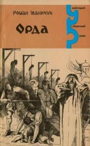

0
стр. з
0
сторінок

Зміст
АРМАГЕДДОНРозділ першийРозділ другийРозділ третійРозділ четвертийРозділ п'ятийРозділ шостийСЕРЕД КАРЛИКІВРозділ сьомийРозділ восьмийРозділ дев'ятийРозділ десятийРозділ одинадцятийРозділ дванадцятийРозділ тринадцятийДОРОГА ДО ХРАМУРозділ чотирнадцятийРозділ п'ятнидцятийРозділ шістнадцятийРозділ сімнадцятийРозділ вісімнадцятийРозділ дев'ятнадцятийРозділ двадцятий
АРМАГЕДДОН
Розділ перший
Двір Мазепи, відгороджений неприступним од Сейму муром і глиняним валом од міста, став ураз із надійного захисту пасткою. Ніби болотний чорторий, вибурхувала з–під землі брудною лавою орда і заливала майдан гетьманського двору на Гончарівці, що за півверстви від Батурина. У вранішньому листопадовому сутінку ординці Меншикова скидалися на слижів, що опинилися на безводному дні спущеного ставу, вони телесувалися, штовхалися, сопіли, кректали, видобуваючись із провалля, яке враз, немовби розступилася земля, утворилося в стіні валу. Оборонці гетьманської столиці, яку будь–яке вороже військо могло б узяти хіба що багатоденно облогою, розбігалися, не відаючи, що трапилося, бо ж про потаємний хід знали тільки генеральні старшини, під команду яких здав Мазепа Батурин, вирушаючи із столиці, щоб у містечку Горках над Десною з’єднатися із шведським королем Карлом XII.
Судомний страх обезвладнив оборонців, які ще вчора зухвало вигукували, стоячи на високому мурі, що стрімко обривався до самого дзеркала Сейму: "Помремо, а в столицю нікого не пустимо!"; смерть прийшла неждано, німіли руки, шаблі опускалися долу, орда вже ревіла моторошним ревом, той страшний рев, що оскверняв Бога і людей, морозив кров у жилах; москалі стріляли з пістолів упритул, рубали шаблями й бойовими сокирами козацькі голови, удари падали на спини й потилиці — супротиву не було; жінки вибігали на мур і кидалися на вірну смерть у Сейм; ті, що з дітьми, ховалися в льохах; різуни зв’язали полковника Чечеля, коменданта Батурина, в’язали й осавула Кенігсена, хоч той спливав кров’ю від сокирної рани в грудях і конав у ременях, ординці ревіли вже в Батурині — там лизнули насурмонене небо перші язики пожеж, а на Гончарівні, в гетьманському дворі, закінчувався дикий содом: кого волокли в полон, обрубуючи захопленим носи і вуха, жінок роздягали, шаблями відтинали перса, в животи піки встромлювали, козаків прив’язували до дощок і кидали з мурів у глибокий Сейм.
Посеред майдану гетьманської садиби, на острові серед кривавого озера, між купами трупів стояли призвідці батуринського шабашу. Осторонь на перевернутому возі стояв фельдмаршал і сіятельний князь Олександр Данилович Меншиков — у соболевій шубі й високій боярській шапці; пильно, проте спокійно і впевнено, немов царської кухні шеф–кухар за роботою підручних, стежив за масакрою: до мокрої роботи князь давно звик, у більшості випадків вона йому вдавалася чи у відкритому бою, чи на розправі з безборонними — хто б на такі тонкощі звертав увагу, якщо цього вимагала посада найближчого сановника самого Петра: цар остаточно довірився Меншикову тоді, які Олексашка десять років тому, натхненний особистим царським прикладом, власноручно зарубав сокирою більше сотні стрільців, які збунтувалися у Москві, — і вже ні на мить не відпускав од себе.
Обіч тісно в парі, наче аж тулилися один до одного зі страху, стояли гетьманський полковник і священик.
У чорній киреї й шапці з довгим малиновим шликом, із засмаглим обличчям, яке все дужче темніло, чим божевільніше розгарцьовувався на майдані погром, полковник Іван Ніс раз у раз стенав, немов зі студені, плечима; мав він скісні татарські очі, а повіки, на щастя, природно прикривали зіниці, в яких міг блиснути жаль за содіяне або ж обурення на Меншикова, адже такої страшної розправи полковник Ніс не чекав. Він показав фельдмаршалу таємний хід до Батурина під умовою, що орда різні чинити не буде; показав не за гроші, не з ненависті до Мазепи — вчинком його керував тверезий глузд. На останній раді увіч сказав Мазепі: задумав єси, гетьмане, пропаще діло, он шведи спалили на Стародубщині три села, відступаючи перед московським військом, щоб не дістався противникові провіант. Чи ж то від чужинців можна чекати добра? А Москва хоч і влізлива, зате своя, православна, та й хіба встоїмо ми перед Петром? Треба ж пам’ятати про гнів царський за непокору… Тепер полковник Ніс судомно стенав плечима, дивлячись на розправу, і заспокоював себе: війна є війна, переплачеться, забудеться потім, чей тільки п’ять тисяч батуринської залоги загине, а врятуються від кари мільйони люду!..
Проте обличчя полковника темніло й брижилося, бо надто страшна була розплата за його тверезість, він вряди–годи скоса позирав на свого сусіду, в якого від Жаху очі стали білими, а зшерхлі губи вимовляли одне незрозуміле слово: армагеддон, армагеддон…
Був це улюбленець Мазепи, вчений протоієрей — схимник Єпіфаній, служитель Покровської церкви, що он горить разом із Мазепиним палацом, а дерев’яна дзвіниця, висунута ближче до майдану, ще ціла — чому її не палять?..
Полковник Ніс все частіше позирав на випещене і вкрите цинковою сніддю страху обличчя отця Єпіфанія, абсольвента Києво–Могилянської академії, учня самого Феофана Прокоповича, який послав гетьманові на службу найздольнішого свого вихованця, у богословських і світських науках вельми обізнаного.
Іван Ніс бачив, як долає священика параліч безвольності: ще вчора Єпіфаній, на прохання полковника, погодився в разі прориву Меншикова в Батурин вийти з церкви й закликати козацький люд не хапатися за зброю, щоб марно не пролилась братня православна кров, і зляканий Єпіфаній навіть не спитав, чому мав би вдертися в столицю Меншиков, коли фортеця неприступна і є вдосталь гармат, пороху та ядер, він вислухав полковника незворушно, тільки бліді пасмуги поповзли від шиї до обличчя — видно було, що священик боїться і зі страху виконає просьбу.
Він виконав її, вийшов до полковника Носа, хоч і не треба було заспокоювати козаків — їх безкарно вирізували, немов курей, але ж не став священик з ними, скористався з острівця безпеки, який охороняли князь Меншиков і полковник Ніс; духовна неміч здолала його на самому початку різні — бо ж не зрушився з місця, наче не чув і не бачив, коли дочка диякона Покровської церкви бігла до нього разом з батьком і лементувала: "Отче Єпіфанію, чому стоїте, ви не бачите?!". Вона показувала на провалля в стіні валу, звідки виповзали один за одним, а то й по два і по три разом ординці; отець Єпіфаній стояв закам’янілий і тоді, коли дяківна з вітцем припали грудьми до отвору тайника і тут же були поколені, порізані, розтоптані; він забув про людей і Бога, чув тільки своє тіло, яке ось так, у неймовірному болю, може бути знівечене, але цього не станеться, якщо він і далі стоятиме біля Носа й Меншикова….
Бачив це полковник Ніс, і злобна втіха діймала його, що не тільки він допустився зради, а й оцей улюбленець Мазепи; їх поки що два, та буде більше — тих, які впору зрозуміли безглуздя й марність боротьби з царем; а може, вони з Єпіфанієм і не зрадники, а навпаки—рятівники свого народу? Ці думки швидко, немов грибок у теплі, проростали, множилися в душі полковника Носа, а коли сповнили його всього вщерть, він дорештою своєю сутністю зненавидів Мазепу. Бо ж не полковник Ніс зрадив народ, а гетьман — так, гетьман Мазепа! Полишив столицю і втік за Десну до чужинців, які палять і грабують козацькі села… О, ненависний Мазепа — вже тіпав полковником праведний гнів, і хоч був цей гнів самодостатній для заспокоєння, все ж йому потрібна була опора — безвілля отця Єпіфанія, мужа праведного, достойного і вірного Мазепі: он бачиш, до чого довела авантюра твого кумира, тож тепер йому відомстимо, разом, чуєш, всечесний отче!
Полковник вимовив уголос:
— Будемо разом, отче Єпіфанію, ти зрозумів?
Тоді священик уперше одвів від жахливого видива очі — полковник бачив, як вони враз дістали барви, була це барва сукровиці — і спитав:
— Ти показав їм таємний хід, полковнику?
Ніс мить мовчав, не дивлячись на отця, потім різко повернув голову і сказав:
— Я.
— Проклятий будеш народом.
— І ти. Чейже стоїш разом зі мною.
Тоді Єпіфаній глянув на купи трупів, на людей, яких москалі дорізували, мов овець на бойні, тих людей, за яких він завше ревно молився. Бачив їх муки й передсмертний жах, внутрішньо рвонувся, щоб стати серед людей і позбутися ганьби, яка нависала над ним, та зрозумів, що страх сильніший за нього, що він не може добровільно піти на смерть, хіба би полковник штовхнув його у той кривавий содом, і просив Бога отець, щоб так сталося.
Та полковник зовсім не збирався цього робити, він хотів мати спільника в зраді й розумів, що Єпіфаній ставав тим спільником щосекунди, щохвилини, щогодини: людей убивали, прибивали на дошках цвяхами і кидали ті розп'яття в Сейм, винахідливіші кати споруджували над рікою плоти з шибеницями й пускали повішених по плаву; ординці й далі встромляли піки в животи жінкам, полоненим козакам відрізували носи і вуха, — все це з кожною миттю відчужувалося від Єпіфанія, стаючи потойбічним; священик знав уже, що його ніхто не зачепить, інстинктивний страх за своє життя відступив, а на місці страху зіяла ганебна порожнеча, яку він мусив заповнити виправданням свого існування; в ім’я чого стоїть свідком нечуваної збродні — хіба тільки заради свого життя, яке віднині буде погорджуване й нікому не потрібне?
Виправдання не знаходив, а на майдані почало чинитися страшніше вчиненого: ординці виводили з льохів жінок з дітьми; жінок убивали, а дітей несли до уцілілої, чомусь іще не спаленої дерев’яної дзвіниці. Бузувіри вганяли сокири між дилиння, підважували їх, забивали клини, роблячи великі щілини довкола у дзвіниці, просували туди дитячі голівки аж по шийки, і коли зо два десятка діток уже увінчали жахливим вінцем дзвіницю, кати дружно вибили клини — дитячі ніжки задригоніли у повітрі, створивши коло смерті, і тоді вдоволено потер руки Меншиков: він не чекав від своїх підлеглих аж такої вигадливості.
Та отець Єпіфаній і тепер не зрушився з місця: страх і кривда уже не напливали до душі — душа переповнилась. Він покірно опустив руки і думав: "На все воля Божа, а комусь треба жити на землі". І, думаючи це, зрозумів, що взяв на себе вічне ярмо і тавро зрадника… "Але чому — зрадника? —боронився іще. — Я не кинувся до отвору потаємного ходу, бо хіба затулив би його? Я не спробував рятувати дітей, бо все одно не врятував би і марно загинув. А жити комусь треба на землі… Бодай для того, щоб розповісти людям".
Думав так, та знав, що про побачене не писне й слова, бо за те не буде йому пощади ні від кого: власть імущі жорстоко покарають, а люди спитають: "Ти бачив це і не збожеволів? Ти бачив це і стояв без руху? Ти бачив це і не кинувся на допомогу? То як після цього ти можеш бути мужем, другом, батьком?"
Знав отець Єпіфаній, що віднині замовкне навіки.
Батурин горів. Горіли хати, палаци, церкви і людські трупи. Липкий сморід розносився зловістям по світу. Уцілів лише будинок страченого Мазепою генерального судді Кочубея, в якому за плату колишньої батькової зради залишилися живі й неушкоджені Кочубеїха з дочкою Мотрею. За наказом царя Меншиков їх пощадив.
Сіятельний князь оглядав полонених і наказував — кого стратити на місці, кого відвести до Глухова на муки. Були тут Чечель, генеральний осавул Гамалія, полтавський полковник Герцик. Не було лише Мазепиного небожа — полковника Андрія Войнаровського. І це згірчувало князеве вдоволення прожитим у битві днем.
Полковник Ніс торкнувся долонею плеча отця Єпіфанія, але той стояв каменем, очі його були скляні, немов у мертвого, він дивився неблимно на полковника, ніби побачив його вперше.
— Хто ти? — спитав.
— Як то — хто? Полковник Ніс…
— Не знаю тебе…
— Здурів! — жахнувся полковник. Він штовхнув Єпіфанія в спину й повів його до будинку Кочубея, немов бранця.
Кочубеїха з дочкою Мотрею, жоною генерального судді Чуйкевича, який подався з Мазепою за Десну, чекали судної миті. До самого надвечір’я долинав з Гончарівки лемент мордованих людей, шибки вікон відбивали червінь пожеж, мати з дочкою ждали своєї черги, бо хто в цьому пеклі згадає заслуги страченого Мазепою генерального судді Василя Кочубея, який виказав цареві замисли гетьмана, — смерть буде всім, і Кочубеїха вкотре прокляла винуватця всіх бід її родини, а нині й Батурина.
Та ось долинув до її вух вереск дітей й слова благань: "Дядьку, не треба… мамо… тату..!", і цього вже слухати було неміч — уста Кочубеїхи заніміли на якомусь слові "отченашу"; ні крик, ні молитви, ані плач вже не могли видобутися з горла, і була б вона німіла до судної години, якби не обурив її спокійний, святий лик Мотрі, що сиділа на лаві під іконами; вибілене стражданням обличчя дочки випромінювало всю її красу, начеб мала вона витекти нині вся до краплі й полишити по собі тільки зморшки, бо й кому та краса знадобиться, коли світ гине; Кочубеїха помислила, що дочка збожеволіла, але Мотря глянула на неї чистими очима, немов заспокоювала, умовляла матір, що смерть — то не найстрашніше, і цей доччин спокій видобув з горла старої наибрудніше прокляття:
— Щоб ти стекла сукровицею, суко, наложнице гетьманська, у всьому винна тільки ти!
— У чому я повинна, мамо? — спокійно відказала Мотря. — Що любила гетьмана й вірила в його рятівниче призначення на Україні? Що він мене любив?
— Ось його призначення! —показала Кочубеїха на червоні від полумені вікна. — Смерть усій твоїй Україні, ось!
— Хтось мусить на війні програти, мамо. І ще не знати, хто програв, — заговорила Мотря, не дивлячись на матір, і ніби не до неї вела свою річ. — Це лише початок… Воля не може народитися в теплому запічку, вона завжди народжується в крові, тільки ми ніколи не бачили, не зріли зблизька смерть за волю…
— Ти і тепер, в цю страшну мить, з ним розмовляєш! — засичала Кочубеїха. — Наслано на тебе, наслано!
— Немає волі тобі там, де люди стали покірним бидлом. А Україна ще бореться, — закінчила свою мову Мотря.
Кочубеїха німіла від спокою дочки гірше, ніж від страху: ким це — Богом чи сатаною спіслано на Мотрю ту облудну віру у волю цього тричі проклятого краю, який уже дві сотні літ стікає кров’ю та слізьми і все марно, марно… То чому б не змиритися з долею і спокійно споживати хліб, який дає ще земля?.. А тепер очима, немов жерій, зблиснуло закривавлене лезо сокири, і дві голови відділено від шиї — Кочубеєва ті Іскрина, а гетьманська сива голова — на плечах, і обвислі нуса, і сірий холодний погляд з–під насуплених брів. Це видиво прогнало отупіння, і вимовила Кочубеїха останній проклін дочці:
— Кров батька впаде на твою голову!
Втім хтось загрюкав у двері, хтось шарпнув їх, немов хотів зірвати із завіс, і на порозі стали два посланці смерті. Любов Федорівна впала їм до ніг.
— Даруйте життя, о, даруйте життя, ми проклянемо Мазепу!
— Дайте оковитої, пані Кочубеїхо! І встаньте… — почула над собою знайомий голос, підвела голову й побачила на порозі товариша її покійного мужа полковника Носа, а поруч з ним стояв з непокритою головою священик у рясі, його вона не знала: був він молодий, вродливий, а очі мав безбарвні, ніби полудою затягнуті, крізь яку просвічувалися застиглі зіниці мерця.
— Врятуйте нас, полковнику, — лепетала Кочубеїха, підводячись з колін. — Ти ж себе врятував…
— Заспокойтеся, пані, — промовив полковник Ніс. — Ви давно врятовані тією самою ціною, що нині я… Зрештою, я відомстив за смерть вашого мужа.
Тоді підвелася з ослону Мотря. Вона підходила до полковника, обпікаючи його темінню чорних очей. Спитала:
— Як відомстили? Шо ви зробили?
Полковник ступив крок назад, відштовхнутий гнівним поглядом молодої жінки, та схаменувся, вийшов рішуче на середину світлиці й зареготав:
— Як? Як я відомстив? А йди–но, поглянь на майдан, то й побачиш!
Він підійшов до комоду, відчинив дверцята, дістав з полички бутель із сивухою, взяв два пугарі, налив, один подав отцеві Єпіфанію, а другий вилив собі у горло; отець зробив те саме; полковник налив по другій, і знову обидва випили; Єпіфаній робив ті самі рухи, що и полковник, ніби перекривляв його; так само змахував рукою, так само перехиляв пугар, кректав так само і витирав губи, а коли Ніс сп'янів і, помахуючи пальцем перед обличчям Мотрі, проказав: "Князь Меншиков дарує вам життя", це саме проказав і священик, і тоді Мотря зрозуміла, що пан–отець втратив глузд, а полковник Ніс — людську подобу. Промовила:
— Вовкулакою ходитимеш по світу і ніколи не настигне тебе смертна година!
Тоді вона зустрілась поглядом з отцем Єпіфанієм, впізнала сповідника Мазепи, припала до нього, заблагала:
— Що він сказав на останній сповіді перед своїм від’їздом за Десну. Що гетьман передав для мене? Ти знаєш! Нічого? Ані словечка?! Не може цього бути!
Єпіфаній не розумів, про що питає Мотря, коханка гетьманова, він нічого не тямив, тільки погляд її великих, затягнутих сльозою очей відбився в його душі й зостався там.
"А ти теж пролив кров, отче?" — питали Мотрині очі.
…Вдосвіта полковник Ніс розбудив Єпіфанія, той слухняно встав і витягнувся перед ним, мов козак на муштрі.
— Забудь, що вчора було, — мовив полковник.
— Що вчора було? — перепитав тим самим тоном отець.
— Не пам’ятаєш… Воно й краще. Кволий ти… Так ось, отче, віднині ти мій слуга, де б не був. Не послухаєшся — оголошу, що був зі мною в Батурині: який приход тебе тоді прийме? Хіба я, у свій маєток, цар дасть за послугу. Та неслухняного не прийму… Я крові не хотів, але коли вона з вини моєї аж так обильно пролилася, то мушу цідити її й далі. Втопити в ній те, що ти з амвона називав сумлінням. Вороття назад нема. А цар хоче крові, він не скоро вгасить нею спрагу. Спуску нам не дасть, розумієш?
— Чому я мав би проливати кров? — спитав отець.
"Тому, що ти вже пролив її вчора", — пролунав у душі голос Мотрі.
"Вчора я крові не проливав…"
"Ти благословив німими устами кровопролиття".
"І за це мені не буде прощення?"
"Ніколи".
Аж тепер отець Єпіфаній, немов блискавка прошила пітьму його пам’яті, згадав, що вчора сталося. Він скрикнув, бо полум’я пожеж спалило йому враз очі, від палу він на мить осліп, і мов уві сні закружляла перед ним карусель дерев’яної дзвіниці, за яку головками почіплялися діти й дригонять, дригонять ніжками. Йому стало страшно, що він бачив це і не рятував, не мстив!
— Чому я стояв, мов ідол?!
"А що ти міг зробити? — почувся співчутливий голос полковника. — Що? Протест нам ні до чого. Наш народ не повинен ніколи вириватися з підданства. Йому так краще, спокійніше. Він буде мирно працювати, а опікуни оборонятимуть його і за це братимуть данину, залишаючи нам на прожиток ковбас і хліба".
"А дух теж забиратимуть?" — мовчки запитав Єпіфаній полковника.
"Дух у тебе забрали тоді, коли ти дивився на конаючий Батурин".
— Що сталося в Батурині? —запитав Єпіфаній, впадаючи знову в непам’ять.
— Йди отче, у стан Мазепи і вбий його, — наказав полковник Ніс.
І отець Єпіфаній подався у світ.
Розділ другий
На початку листопада 1708 року запала раптом така люта зима, якої найстаріші діди не пам’ятали: ріки перемерзали до дна, заморозивши рибу, ворони падали на льоту, а сніги стояли в пояс.
Єпіфаній навіть не шукав шведського стану, де мав бути й Мазепа: над Десною, на Макошинській переправі, не було вже ні Карла, ні Мазепи, хтось сказав Єпіфанієві, що шведсько–козацькі війська зайняли Ромен, Гадяч, Веприк; йти такими снігами крізь люті морози не зважився отець, одягнутий лише в рясу, і, перейшовши по льоду Сейм, подався глухівською дорогою, а коли в селі Ставках застала його ніч, він попросився до крайньої хати.
Самотня молодиця прийняла вродливого ченця, мислила собі — вандрівного; скупала його, нагодувала і примовляла, пораючись біля нього, що в приході попа нема, москалі забрали отця Данила в Глухів на муки за те, що правив у церкві, коли мазепинські козаки квартирували в селі й приходили на богослужения, а ти будеш, монаше, треби справляти, бо нема нині кому ні поховати, ні охрестити, ані дати шлюб…
Молодиця — може, вдова або сільська лявра, — вельми зваблива і своєю звабою від сорому врятована, уклала Єпіфанія в ліжко, а перса самі випруджувалися з пазухи; не вміючи їх, немов брость, напучнявілих, в пазусі втримати, вона сама розстібала керсетку, сама стягнула через голову сорочку, і сліпуче тіло, немов розпечена до білоти лава, наближалося до нього, обпікало, а він, Єпіфаній, лежав, немов висохла колода, і ні жага, ні навіть звичайна похіть не стривожили його тіло: це дивувало й лякало, чей же ніколи ще не бачив нагої жінки і молитвами та постом проганяв грішні марева, які приходили до нього вночі, завдаючи солодких тортур; мислію він палко жадав цієї жінки, цілував її, бо ж була незмірно гарна, та сам залишався холодний і збудити себе для злуки не міг, і десь опівночі після довгої муки, яка втомила палку плоть молодиці, встала вона, одяглася, сіла поруч і запитала співчутливо:
— Ти святий?
— Ні, — відповів Єпіфаній, втопивши від несусвітнього сорому голову в подушку, — я, мабуть, дуже грішний…
— Чим согрішив: грабунком, убивством, гвалтом?
— Такого я ніколи не чинив… Мабуть, ні… Я не пам’ятаю, та знаю: було зі мною щось жахливе, може, то уві сні — вогонь, кров, трупи, а я стою — і руки мої безсилі, мов віхті, і мислі злякано принишклі… Що то було зі мною?
— Нічого не було з тобою. Ти від народження порчений.
— Можливо…
Вранці молодиця нагодувала Єпіфанія і, мстиво посміхаючись, мовила:
— Не в мене тобі жити. Он іди на роздоріжжя, а звідти до четвертої хати праворуч — там живе стара Килина. їй уже за вісімдесят, в самоті віку доживає, помре скоро, то відправиш за її душу упокій і в теплій хаті залишишся. Певне, не забув треби справляти?.. Ой, жаль мені: такий красень, а з червоточиною…
Прибитий соромом Єпіфаній пішов, куди справила молодиця, одягнувши його на дорогу в чоловічу одежу, певно, таки вдовою була; йшов пригнічений її красою і своєю неміччю й не міг збагнути, від чого та неміч у нього, чейже снилися водно гріховні сни, від яких він рятувався молитвами й постом.
Знав, що повинен знайти Мазепу і вбити його, — так наказав полковник Ніс. Де він, той полковник, тепер — сатана його знає, ніколи більше з ним, може, й не зустрінеться, та воля його була тут, поруч, йшла за ним і з ним, і Єпіфаній не міг собі пояснити, чому піддався їй і чому мусить шукати свого благодійника гетьмана, щоб вчинити йому смерть? Та ні, ні! Єпіфаній знайде Мазепу, впаде перед ним на коліна і признається, що невільним став, хай зніме з нього своєю владною рукою наслання і пояснить, чому полковник Ніс бажає гетьманської смерті.
Ішов і натруджував пам’ять, щоб згадати, що ж таки трапилося з ним і що то було: пожежа, кров і трупи, а він стоїть безсилий, такий самий всередині мертвий, як учора перед жінкою, і в мислях немає жодного просвіту, тільки судомний страх. Сон це був чи ява — хто йому повість? Чи то відтворився йому в образах Апокаліпсис Іоанна Богослова, якого часто читав–перечитував, жахаючись завжди страшної долі міста Армагеддона, а відчути людське горе, описане в Апокаліпсисі, не вмів ніколи?
"Я знаю, що ти ані холодний, ані гарячий, ти літеплий, тому виплюну тебе з уст своїх".
За що мені така кара, о Боже? Поверни мені пам'ять і душі моєї храм!
Баба Килина зраділа Єпіфанові, мов давно очікуваному рятівникові: церква ж пусткою стоїть, чоловіків нема — то вона за старшого братчика при храмі; ходім, відкриємо й освятимо, і хай хоч жінки та діти прийдуть помолитися за душі помордованих батуринських страждальців…
— Батуринських? — перепитав Єпіфаній, та тут же вмовк, уздрівши, яка незмірна печаль збрижила бабусине обличчя, — і він знову, ніби уві сні, побачив розп’ятих на дошках козаків, яких червоні од полумені дияволи жбурляють з муру в ріку; Єпіфаній хотів спитати, що ж трапилось в Батурині, та забув потрібні слова.
Єпіфаній мовчав, коли баба Килина відчиняла церкву, слухняно взяв з її рук коновку із свяченою водою та кропило, вмочував кропило в коновку, щоб освятити притвор, вода в посудині хлюпала, а кропило виймав сухе, і він не розумів, чому це так.
До церкви заходили жінки, вони шемрали молитви і вклякали перед святим престолом; Єпіфаній відчинив царські врата, звів руку вгору, щоб розпочати богослужения, та не міг згадати слів Літургії, він стояв мовчки з піднятими руками, а жінки думали, що отець тиху службу Божу править, і ревно молилися.
Народ, утішений, що з’явився в селі священик, валом валив до церкви: хто хотів замовити панахиду по загиблих у битвах мужах і синах, в іншого дитина не хрещена, а хтось на віру живе, не маючи де взяти шлюб.
Єпіфанієві піднесли дитину до хресту, він нахилився над сповиточком, щоб миропомазати, а дитина скрикнула і навіки вмовкла; наблизився до молодих, які стали до шлюбу, і ті вмить розбіглися у протилежні боки; Єпіфаній знову звів руки, згадуючи слова молитви, та замість них з його уст почали вивергатися блюзнірські прокльони.
Тож ураз загукав народ: "Сатана, гемон, убивця, женіть його з села до московського царя!" Єпіфанія вивели з церкви й погнали вулицею на глухівський шлях, кидаючи вслід замерзлим груддям, а молодиця, яка осквернила себе приближениям до нечистої сили, того ж дня кинулася в ополонку у ставку.
Єпіфаній ішов глухівською дорогою навмання, він хотів ридати від горя й образи, але сліз не було, хотів молитися, та молитви забув, ніс на собі тягар чийогось найтяжчого прокляття й не знав, чом судилося йому чинити тільки зло.
"Бог виплюнув мене із своїх уст, та полишив надію", — він чув, як хтось поруч вимовляє слова з Апокаліпсиса:
"Візьми у мене золота, у вогні очищеного, і білу одежу, щоб ганьба голизни твоєї не видна була".
"Де я візьму золото й білу одежу?" — ридав Єпіфаній без сліз, йдучи шляхом до Глухова, де стояло постоєм московське військо, і зблиснула в душі остання надія, що допоможе йому цар, коли свої люди прогнали і прокляли, що при цареві повернуться до нього слова молитов, якщо серед людей їх мусив утратити.
У Глухові Єпіфанієві бувати не доводилося й потреби на те сповідник Мазепи не мав. Колишнє місто Васильків, яке до монгольської навали налічувало десятки церков, і всі дерев’яні були спалені, а камінні осквернені й розвалені, й те руйновиння давно запалося в землю, тільки кропива й реп’яхи на замшілих грудах свідчили, що тут колись стояли будівлі, — колишнє місто Васильків заникло в глушині й перемінилося в село, яке назвалось Глуховом. Воно й на нинішній день великим не стало: мало не більше п’ятсот дворів, посередині двоповерхову з мезоніном полкову канцелярію, Петропавлівський монастир на околиці та п’ятибанну Троїцьку церкву із золотим хрестом — ось і все містечко, що нині стало пристановищем похідної канцелярії Петра І, який раніше, ніж проголосити Глухів останньою столицею Гетьманщини, вирішив освятити забуту землю козацькою кров’ю.
Того дня, коли Єпіфаній, збиваючи замерзле груддя старими шкарбунами і кутаючись від завії в подарований кожух, долав витолочену кінськими копитами дорогу, Глухів столицею іще не був, він назветься нею завтра, коли цар призначить нового гетьмана. А щоб той новий підвладний владця слухняний був, цар зізвав до похідної посольської канцелярії вірних йому полковників: стародубського Івана Скоропадського, чернігівського Павла Полуботка, переяславського Томару й ніжинського Журахівського, аби навіч побачили вони розправу над бунтівниками й ніколи після того не спокутувалися звабою непокори; він вибере з них того, котрого страх здолає дощенту, і, здоланий ницістю своєю, упевнить царя, що віднині і повік боятиметься гинути, рятуючи скривдженого, думати, мріяти, боятися і, ставши в душі на коліна, перейметься повагою до влади, яка не має законів і карає так, як їй заманеться.
До Глухова прибув ще й миргородський полковник Данило Апостол, який утік від Мазепи, коли прочув про загибель Батурина, а теж охочекомонний полковник Гнат Галаган із Січі, зваблений на бік Петра Іваном Носом, який встиг уже заслужити непохитної в царя довіри й похвальну грамоту за батуринську послугу отримав.
Того всього не знав Єпіфаній, він і не дізнається ніколи, хто з доброї волі, а хто з принуки або страху пішов служити цареві, — сам же йшов до царя з безвиході: не прийнятий і прогнаний людьми, яким його руки і слова чомусь чинили зло, він знайшов єдину дорогу — битий глухівський тракт, бо на інші дороги, якими колись ходив, через безпам’ятство немає вороття.
А тракт усе чорнішав від кінського посліду; замішаний з чорноземом сніговий покров курився чорториями і забивав очі та ніздрі; то ж бо тут пройшло полків — драгунських і козацьких!.. У Волокитному над Есманню, що білою смужкою льоду, спинивши свій біг до Сейму, ціпеніла між берегами, сходилися шляхи підданих, які на виляск царського гарапника тягнулися з усіх кінців заляканої України, а все до царя по милості і суд, і ніхто не гнав їх, крім страху, насланого повелителем, котрий своєю волею робив із підлеглого люду те, що йому потрібне: мучеників, зрадників, лакуз, рабів, владик — і всіх йому підвладних.
Єпіфаній приспішив крок, бо вже на олов’яному обрії крізь завію проступили бані собору, вони манили його, мов потопаючого у вирі плавуча корчага: там він знайде пристановище, там розпорядиться ним цар, бо сам собою Єпіфаній розпоряджуватися уже не може, волю забрав у нього страшний полковник, і з усіх тривог найтривожнішим було передчуття зустрічі з Іваном Носом, який, проклятий Мотрею, ввижався тепер в образі вовкулаки і був страшніший навіть від князя Меншикова; той відбирав життя, а цей — пам’ять.
Проте в душі Єпіфанія настала дивна переміна, коли він опинився на залюдненому вщерть майдані перед двоповерховим з мезоніном будинком, де містила нині царська похідна канцелярія, і здалеку побачив його. Єпіфаній зразу впізнав у постаті з вовчою головою полковника Носа і здивувався, що тривога перед зустріччю з ним пропала. Адже він надалі підлягатиме полковникові і ні за що на світі не буде нести одвіту.
На майдані стояли посполиті, козаки, драгуни, були тут жінки з дітьми й старі діди: всі товпилися, штовхалися, боязко гомоніли. Єпіфанія не пропускали, бо схожий був на жебрака; куди пхаєшся, там — цар, он бачиш, за столом перед будинком сидить у шубі й треуголці сам цар, а біля нього з одного боку комендант Глухова Скорняков, який особисто відає тортурами, а з другого — князь Меншиков; збоку сидять наші полковники — один із них стане нині гетьманом. Той підупалий і пригноблений — Скоропадський, а он стоїть гладкий, мов бочівка, — то Полуботок; ти що, до них чи до самого царя; ну диви на нього — він до царя; а не хочеш бува он туди, ближче до річки, там уже й палі вбиті і колесо є, і кліщі, і сокири; а може, ти в кати хочеш зголоситися, ну, то йди, йди, серед нас охочих немає; ти дивися, він таки йде!
А Єпіфаній і справді пробирався до столу, де засідав царський суд, його притягала магнітом постать з вовчою головою; вовча голова стала враз людською, блимнули й примружилися очі; полковник Ніс упізнав Єпіфанія і кивнув йому; Єпіфанієві стало на душі спокійно, страх пропав до решти від остаточного усвідомлення: все, що далі станеться, буде волею і виною полковника Носа, а він — тільки свідком і виконавцем.
Полковник зупинив поглядом Єпіфанія, наказав мовчки стояти, дивитися і слухати.
Цар допитував коменданта Батурина сердюцького полковника Дмитра Чечеля.
— Одвічай, мерзотнику, — мовив цар, неблимно дивлячись на жертву, — одвічай, коли вперше подумав про зраду!
Полковник Чечель — босий, у порваній сорочці, з непокритою головою — стояв на снігу й морозному вітрі закачанілий і байдужий до того, що має зараз із ним статися. Очі в царя округлювалися і більшали від стримуваної люті, яка розпирала його з нутра; холодний їх полиск не обіцяв ні жалю, ні пощади, тож і страху в Чечеля вже не було; тонкі й закручені доверху царські вусики смішно підстрибували, коли невтримна царська злість сіпала судомою верхню губу; височезного зросту повелитель перехилявся через стіл, спираючись обома рукзтаг у протилежний йаю край, і здавалося Чечелю, що Цей всевладний і фізично могутній гевал вмить перекине стола і увіп’ється руками в його горло — так могло статися, полковник знав про царське замилування тортурами, а теж усвідомлював і те, що уособлює в цю мить не Чечеля, про якого цар донині не чував, а гетьмана Мазепу, котрий увійшов у безмежне царське довір’я і ошукав; Мазепу цар не впіймав і не впіймає, тож доведеться колишньому комендантові Батурина витримати муки за свої і Мазепині перед царем провини.
— Я ніколи не подумував про зраду, ваша величносте, — спокійно відказав Чечель.
Підстрибнула в царя верхня губа і так застигла, загнавши закручені кінці у широкі ніздрі, оскалилися білі кливаки, й Єпіфанієві уздрілася вовча голова над коміром бобрової шуби; він перевів погляд на полковника Носа — той теж був з вовчою головою, глянув на Меншикова — і Меншиков теж ововкулачувався… Єпіфаній приклав долоню до губів і з полегшею усвідомив, що сам вовком іще не став; нудка тривога вповзла в його душу: як же він з людською подобою вживеться серед вовкулак, його ж розтерзає, зжере хижа зграя, коли не уподібниться тим, кому віддає задля спокою і безвідвічальності самого себе.
Однак це видиво тривало лише мить: опустилася верхня губа в царя, закривши рідкозуб’я, тільки безвії великі очі тратували люттю полковника Чечеля. Проказав Петро:
— А як ти назвеш свою зухвалу відмову впустити його світлість князя Меншикова в Батурин?
— Я виконував наказ гетьмана, і якби вчинив інакше, тоді допіру можна було б назвати мене зрадником. Та коли говорити про недостойність політичних вчинків, то здрайцею передовсім треба назвати тебе, царю, ти ж бо перший потоптав угоду між нашим батьком Хмелем і твоїм вітцем Олексієм, навівши свої війська на постій в Україні, на грабунок українського люду і посягнув на наші одвічні вольності, задумавши перемінити в драгунів козацькі полки.
— На палю його! — коротко присудив цар.
— Іншого вироку я й не чекав від тебе, кровопивце, — так само спокійно, як і перше, мовив Чечель. — Я загину з усвідомленням потрібності українському народові моїх мук. Замордований мученик небезпечніший для завойовника, ніж живий лицар, — він бо народжує ідею помсти.
— Ту ідею, нещасливцю, я втоплю у крові! За неї можуть постояти живі, а не мертвії—Петро кивнув рукою на гурт полонених козаків, оточених драгунами, звелівши вести на суд наступного.
— Мертві оживуть месниками в нащадках! — вигукнув Чечель, якого царські посіпаки вже вели до річки на місце страти. — А ви у своїй жорстокості самі себе зжиратимете, мов павуки!
Цар біснувався: вдаряв кулаками, мов гирями об стіл, випльовував сповнені ненависті слова, і складалися вони для Єпіфанія в суцільне прокляття Україні:
"Залишу живих мерців, покірне стадо залишу на цій свавільній землі — худобу над порожніми яслами, і кидатиму їм за покору жмутки бадилля, на банях церковних замість хрестів водружу канчуки, і те стадо лякатиметься шелесту листя! Корита підсуну під ваші худоб’ячі морди, і ніщо не буде для вас дорожче, ніж тепле пійло. І забудете все, чим досі жили: звичаї свої, предків, матірню мову, зречетеся хоругов і молитов — усе віддасте за смачне пійло в коритах!".
Єпіфаній зажмурив очі, вслухаючись у страшне пророцтво, що цвяхувало безнадією його розпластану душу, він не мав відваги глянути на розлютованого царя, та коли у вухах стихли царські прокльони, Єпіфаній розплющив очі й у подиві своєму уздрів на Петровому обличчі владний спокій, набагато страшніший від почутих слів: цар не лякав словами, він здійснював проклін.
Чечеля вже вбивали сідницею на загострену палю, та навіть не застогнав мученик, і тільки за хвилю, коли смерч жаху пригнув людські голови, Чечель заволав, корчачись у муках:
— Люди, схаменіться, вас багато, не стійте стадом, убийте прокураторів, які з чужої землі прийшли управляти вами!
Та ніхто не зрушився з місця, люд на очах ставав німою худобою; комендант Скорняков відправляв козаків одного за одним на муки і смерть, нелюдські зойки долинали з–над Есмані; цар змахував рукою, посіпаки тягли засуджених на страдне поле, кати працювали в поті чола: колесували, саджали на палі, відрубували ноги й голови на помості, виривали ніздрі, і Єпіфаній, дивлячись на те, згадував, що десь подібне бачив і що тоді карався він страхом, а тепер страху вже не було — панували в душі тупий спокій і покора.
Цар при цій роботі не спускав ока з полковників, яких покликав на гетьманські вибори, і три з них, а найдужче Іван Скоропадський, геть зовсім поникли, ледь до землі не припали, тільки Павло Полуботок стояв рівно, випнувши живота, і витримував царський погляд. Цар вибирав із них кандидатів на гетьмана і вже знав, що Полуботок ним не стане, а кого призначити — теж іще не вирішив: хто з них перший прибіжить до корита?
Не йдуть? Тоді продовжуйте, кати, своє діло, поки не зрушиться з місця хоч один! Цар підвів руку, та зупинився: ось ступив якийсь наперед, — хто він, не званий, що стояв поруч з Іваном Носом?
— Управляй нами, пресвітлий повелителю! — упав незнайомець на коліна перед Петром. — Не хочемо мати своїх проводарів — ні Мазепи, ні Войнаровського, ні Орлика, ні Гордієнка, а тільки тебе, найсправедливішого. Хай не карають нас свої, легший чужий канчук: жалю тоді нема і заздрості нема… Чим же вони ліпші за нас? — Прохач підвів голову від землі й квапніше заговорив, ніби злякався, що цар переб’є його щиру сповідь: Я — охочекомонний полковник Гнат Галаган із Січі. Я проведу твоє військо в гадюче гніздо, яке вже зрадило гебе, — колишній отаман Кость Гордієнко повів сім куренів на злуку з Мазепою, а решта готова до походу. Віддай мені Гордієнкові маєтки!
Просвітліло царське обличчя, і вже Петро в думці вирішив призначити гетьманом Гната Галагана, та тут сталася несподіванка. Із натовпу до столу пробирався козацький старшина, він теж вклякнув і, назвавшись хорунжим Забілою з Ніжинського полку, просив для себе село Севолож, яке залишилося після мазепинця сотника Нетреби — он йому тільки–но відрубали голову на пласі.
— Його вже нема, нема, віддай мені Севолож, пресвітлий царю!
А далі почали вибігати інші: були тут прототоп Заруцький — він просив слободу Лизунівку, що належить отцеві Бистрицькому, котрий самого шведського генерала Мейєрфельда гостював у своєму приході, і сотник Бандурко виказував корчмаря, який частував оковитою шведських вояків; гей, аж бо то вже вилаштувалася безкінечна черга до посольської канцелярії з чолобитними на млини, ставки, лани і пасіки. За них платили доносами: хто на лохвицького сотника Яременка, що збирав провіант для Мазепи, хто на глухівського обивателя Таращенка, Богу духа винного… Не простаки ж вони, не роззяви — давно готові до корита царського. З ними треба обережно, такі не тільки Малоросію, всю імперію розкрадуть…
Проте Петрові повернувся добрий настрій, він гукнув:
— Скорняков, а йди–но роздрухай Чечеля, може, ще не сконав, хай погляне, яким геройством мстять землячки за його муки!
Та не встиг комендант зрушитися з місця, як із гурту, полонених і до кари приведених вихопився отець Данило із Ставків і, ставши перед царем, проголосив:
— Я покрию цю ганьбу своїм життям і скажу: лукавий царю, зруйнував єси Батурин, людей перебив, навіть дітей не пошкодував, то й ми не зарікаємося в московській крові по коліна бродити, бо за руйнування Батурина вся Україна встане!
Зареготався цар і зупинив слуг, які кинулися до священика.
— Облиште його. Хай подивиться сьогодні на страти, потім колесуйте, поки не відмовиться від скверних слів, а завтра попросимо його виголосити в Троїцькому соборі анафему Мазепі!
…Другого дня, 12 листопада 1708 року, на дзвіниці Троїцької церкви забаламкали дзвони, скликаючи глухівський люд на майдан вибирати нового гетьмана.
Тих, хто заперся по хатах, наляканих вчорашнім судом і шибеницею, яку для чогось поставили на церковному майдані, драгуни виганяли силоміць, надто ж упертих в’язали й долучували до гурту полонених козаків і старшин, яких не встигли стратити вчора, й погнали всіх у Лебедин на дальші допити й муки.
Цар наказав привести тортурованого вчора отця Данила, який мав перед богослужінням проклясти Мазепу, — мовили кати, що покаявся на дибах піп.
Привели одягнутого в рясу й єпітрахиль змордованого священика, він ледве тримався на ногах: Петро поплескав отця Данила по плечу, похитав головою, мовляв, будь розумний, отче, ти ж бачиш, що все живе скоряється мені або ж гине, а ти житимеш за два тільки слова "анафема Мазепі", і від тебе почнеться в православній церкві новий вірнопідданий ритуал, який протриває віки й поселить у людей віру в царську справедливість і переконає в марності бунтарства. Тільки два слова, отче.
Князь Меншиков зачитував перед людьми маніфест, в якому проголошувалось, що ніякий народ під сонцем не може похвалитися такими свободами і привілеями, як малоросійський, бо ні єдиного пенязя в малоросійському краю не велимо у казну брати і милостиво доглядати сей край, від басурманського нашестя та від зажерливого старшинства обороняючи.
Тоді ж цар звернувся до козацьких старшин із запитом, кого вони воліють мати за гетьмана. Мовчали старшини й глухо мовчав народ, тільки один, а був це отець Данило, тихо сказав, зітхнувши:
— Полуботка або нікого…
Цар вдоволено посміхнувся, бо ж скорявся йому непокірний, проте сказав:
— З Полуботка може вийти другий Мазепа… — Він глянув спідлоба на поставного чернігівського полковника, який і нині стояв гордо й витримував царський погляд. — Не можна Полуботка вибирати, він надто хитрий. Виберіть краще Скоропадського. Та поки поблагословимо нового гетьмана, треба спершу повісити зрадника.
Хитнулася й охнула юрба: невже спіймали Мазепу? Ба ні, царські слуги винесли на майдан схоже на Мазепу опудало з орденом Андрія Первозванного на грудях, прив’язали до шиї шнура, поволокли по майдані й повісили на шибениці.
— Проклинай, проклинай! —зашипів на отця Данила цар.
Отець Данило глянув на Петра, мить вдивлявся в його балухаті холодні очі, потім підійшов до шибениці і став під нею поруч з опудалом.
— Проклинаю тебе, царю, — вимовив змучено, скинувши з себе єпітрахиль і реверенду. — І знай: за Батурин вся Україна встане!
Зблід Петро і кволо, зовсім кволо, немов переможений у бою гладіатор, кивнув рукою. Отця Данила в білій льолі вивів з майдану Скорняков і над придорожнім ровом власноручно стяв йому голову.
Цар був розгублений, спектакль не вдався. Та виручив ще раз свого повелителя полковник Ніс. Він вивів перед царя якогось обірванця і мовив:
— Всемилостивий царю, ось розкаяний сповідник Мазепи: він виголосить анафему.
Єпіфанія квапано одягли в рясу, накинули на шию єпітрахиль і підвели до шибениці, де висіло опудало Мазепи. Єпіфаній глянув на юрбу і враз побачив сотні вовчих голів, він схопив обличчя у долоні і прокричав якісь слова. їх цар прийняв за прокляття, а Єпіфаній вигукував безупину слово "армагеддон", і врешті всю околицю потрясло моторошне вовче виття.
Розділ третій
Покрилось Дике Поле пухкою тирсою, червоним воронцем та зеленим катраном, млосне літо розімліло над степом, і річка Чугайка, що вихопилась із байраку й підмила горб, схожий на велетенську могилу, стрімко вдаряючись у нього, наче хотіла пробити наскрізь, щоб не блукати степом кривобродами, зміліла, і з туги стогне над нею дзьобатий бугай; земляні зайці–тушканчики висувають головки з нірок, ворушать вусиками, наслуховуючи прохолоду, якої нема й нема; у піднебесній зимноті кружляють орли–степовики, зірко вишукуючи здобич, у заплавах Чугайки скорботно кигиче чайка.
Усе це бачить і чує чернець Єпіфаній. Він стоїть у келії скиту, видовбаного ним самим у скалистому березі над Чугайкою, стоїть, взявшись руками за грати віконця, ніби хоче виважити, хоч сам вправляв їх у камінь; весь напружився, ніби захотів вирватися із скитської неволі, хоч сам себе сюди запроторив.
…Крізь люту зиму, дощову весну й спекотне літо, від села до села, від міста до міста пробивався Єпіфаній з Глухова до Полтави, випрошуючи милостиню й переночовуючи там, де його заставала ніч: у хліві чи в домі або просто в полі, а деколи на довше зупинявся в монастирській нічліжці, а потім із старцями, яких блукало по Україні немало, повертав на храмові свята, де можна було нажебрати кращий пай, та більше йшов сам, бо жебрак на місці стояти не може, він мусить іти — це його праця й заробіток.
Єпіфаній ні з ким не розмовляв, і його вважали за німого. Ніхто не проганяв його, але й не затримував, а коли залишався сам, дослухався тоді до вовчого виття, яке долунювало звідусіль, і в тому витті водно вчувався йому наказ вовкулаки Носа: "Убий Мазепу, убий Мазепу!", і він ішов далі, напитуючи слід шведсько-козацького війська, бо інакше не міг чинити — вся його людська сутність підлягала чужій волі, з якої визволитися не мав сили.
Здавалося у Глухові, що визволився, коли прокричав перед шибеницею, на якій висіло опудало Мазепи, слова "армагеддон", і з полегшею подумав, що ось зараз опуститься на нього сокира, яка щойно стяла голову отцю Данилові; страху вже не мав, він тільки прагнув звільнитися від наслання полковника Носа — бути завше у злі; натовп прокричав за ним "анафема!", і Єпіфаній знову мимоволі вчинив зло, перший проклинаючи Мазепу.
Він завив із розпуки, бо намацав пальцями на своєму обличчі вовчу пащу, і зрозумів, що ніколи вже не вирветься з неволі вовкулак, він кинувся втікати з церковного майдану, та схопив його за оборки Іван Ніс і проказав:
— А тепер іди вбий Мазепу!
— Мене ж убивати ніхто не вчив! —заплакав Єпіфаній, припавши до грудей полковника.
— Ти навчився дивитись, як убивають, тепер тільки зважся замахнутися сокирою.
У липні 1709 року Єпіфаній опинився на Полтавському полі. Вовчого виття більше не чув, то здалося йому, що полковницький нагляд за ним припинився, що загубився він у воєнній завірюсі: марширують війська, риють вояки шанці, ставлять бівуаки, лаштують гармати, бряжчить зброя… Десь тут Мазепа, десь тут його покровитель, він признається, що посланий убити його, хай буде обережний; полковник Ніс, напевне, не одного Єпіфанія на таке діло послав. Радість перед очищенням затоплювала душу, він висповідається перед Мазепою і сповідь поверне йому пам’ять: що ж я такого наробив, що став безсилим свідком лиха, чому сам чиню його, не хотячи того?
Аж ось і він, ясновельможний гетьман, виходить із намету, з ним молодий чоловік — це ж Карло! І йдуть вони у бік Ворскли; почекайте, пане гетьмане, почекайте, хіба не впізнаєте свого улюбленця, свого сповідника! Мазепа не чує і йде далі, та на поклик Єпіфанія зупинився Карло, і тут ядро, послане з московської лінії, потрапляє королеві в коліно…
"Що я наробив, що я наробив, я ж не хотів!" — потермосив гратами маленького віконця чернець Єпіфаній.
Крізь віконце видно плесо–озерце, утворене річкою під скелею. Туди він спуститься крутою стежкою аж під вечір, щоб набрати збанок води, і, може, матиме щастя побачити зблизька білих лебедів, які інколи прилітають на синє озерце, — чисті й небесні; кожного разу, коли бачить їх з віконця, щемлива надія проймає серце Єпіфанія, що з ними прилетить чи то рятівна вість, чи дух очищення; він підходив обережно, щоб не сполохати, — може, як наблизиться до них, пречистих, щось тоді станеться? Та лебеді, голосно лопотячи крильми, злетіли в небо, і Єпіфаній знав, чому вони його бояться: приносить з собою зло.
Нема сьогодні лебедів. Єпіфаній повертається від віконця і ступає крок у глиб продовгуватої келії, де стоять два кругляки: один, менший, для сидіння, а вищий — замість столика; на столику каламар з чорнилом, перо н ще не записаний папір. Це дар ігумена Нямецького монастиря Ніколае.
…Після перемоги над шведами Петро пиячив, святкуючи несподівану вікторію: щасливий випадок допоміг йому. Пораненого в ногу короля носили на ношах по ратному полю, він вигукував крізь гарячку: "Воїни, король з вами!", та це не допомагало: шведи, які звикли бачити відчайдушного вождя завжди попереду, розбігалися в паніці, і головнокомандуючий полтавською операцією фельдмаршал граф Рендшільд потрапив у полон. П’яного царя, який на бенкеті раз у раз підносив келих то за славне воїнство, то за "свого брата" короля Карла XII, спам’ятав Меншиков аж надвечір, і тоді Петро послав князя в погоню за Мазепою.
Рештки шведсько–козацької армії втікали берегами Ворскли до її гирла. Поранений Карло і хворий Мазепа їхали попереду в одному повозі; гетьман, підпертий подушками, здавалось, був байдужий до всього, що трапилося, й бачили всі: на ладан дихав. Водив відсутнім поглядом по обличчю козаків, що йшли за повозом кінно й пішо, і, звісно, не помічав обідранця, який квапився навздогін, — розмахував руками, знаки подавав: отець Єпіфаній думав у цю мить не про гетьмана, а про очищення своєї душі, він прагнув одного — діткнутися до руки гетьмана і, коли отримає від нього відпущення невольного гріха, впасти під колеса повозу й загинути, більшої бо кари не знав, як нести тягар полковницького наказу.
Та до повозу, оточеного комонними, Єпіфаній проштовхнутися не зміг, тож на переправі в Переволочній, коли Карлові й Мазепі подали пором, а козаки пустилися вплав на конях і безкінно, Єпіфаній вхопився за хвіст якого аргамака і так переплив на правий бік Дніпра, а потім манджав степом разом з козацтвом до Бугу.
Сераскер Бендер і Буджака Ізмаїл–паша в присутності кримського хана Девлет–Гірея 1 серпня 1709 року прочитав фірман султана Ахмеда III, за яким козаки отримували землі між Прутом і морем, збрую, одежу, ще й бакшиш був обіцяний в разі війни з невірними; кошового Костя Гордієнка нагороджували червоною хоругвою з півмісяцем і зіркою, а гетьманові Мазепі, який лежав хворий у наметі короля в селі Варниця біля Бендер і чекав своєї видачі москалям за триста тисяч талярів, подарував султан соболине хутро.
Під цим хутром, накинутим поверх простирадел, лежав гетьман на смертній постелі і чекав отця Єпіфанія, улюбленого сповідника, який таки добився до гетьманського писаря Пилипа Орлика і впросив повідомити Мазепу про свою присутність у гетьманському стані.
Пилип Орлик і полковник Андрій Войнаровський не відходили від гетьмана, чекаючи, кому він передасть печать і клейноди, тож не покинули намету і тоді, коли увійшов Єпіфаній в облаченні з хрестом, — у кожну мить міг Мазепа віддати Богові душу.
Посміхнувся хворий гетьман, побачивши вродливого абсольвента Києво–Могилянської академії, який колись у хвилини відпочинку й гетьманської задуми патетично й витворно читав напам’ять поезії Овідія.
— І ти тут.., — промовив кволо і здивувався, що сповідник упав долілиць і довго плакав, а підвівшись, промовив:
— Прости мені мій гріх, якого не знаю, потонувши в пучині непам’яті! Хай повернуться до мене смисли…
— Ти коли покинув Батурин? —спитав гетьман з підозрою.
— Пітьма довкола мене, я нічого не тямлю…
— Що останнє ти запам’ятав?
— Що маю вбити тебе.
— Хто тобі таке наказав?
— Гемон і вовкулака полковник Ніс.
Мазепа звівся на лікті і прохрипів:
— І ти, оскверений змовою із зрадником і душогубцем, якого ще не знав світ, насмілився прийти до мене в мою останню годину?
— Пане гетьмане, прости мені, я в непам’яті! — застогнав Єпіфаній, припав до ложа і діткнувся губами гетьманської руки, що безвладно лежала поверх хутра.
У ту мить гетьман сконав.
Щось зашемрало біля дверей келії, здригнувся чернець Єпіфаній, прочинив двері і впустив до середини послушника Нямецького монастиря, який раз на тиждень приносив йому від ігумена Ніколае хлібину, горнець вареного бобу і чверть олії.
— Чому сидиш у темряві? — спитав послушник. — Я ж приніс тобі свічок.
— Якщо не бачиш полумені свічки, отроче, — відказав Єпіфаній, — то це ще не означає, що у свічці його немає. Є в ній здатність загорітися, і світить вона внутрішньою силою своєю, я бачу той пломінь. Тільки стовпець воску без гноту ніколи не спалахне.
— Гноти у свічках, які я тобі приніс, суть. Чом не засвітиш, щоб розігнати довкруж темряву?
— Немає вогню у мене, я втратив вогонь.
— Принесу тобі…
— Не розумієш ти… Спершу треба просвітитися самому. Я хочу повернути у своє серце Бога.
— Блюзніриш, отче! Чи ж може таке бути, щоб чернець жив без Бога?
— Бога в мене відбирали все життя… Я, хлопче, родом з Кам'янки, що біля Фастова. Батько мій був богомільний, навчив мене письма, і скоро я вивчив напам’ять псалтир і часословець. До чернецтва готувався змалку: обідав лише в неділю й середу, спав на холодній долівці… Потім закінчив Київську духовну семінарію і став постником у Києво–Печерській лаврі. Поглинав я духовні книги і намагався не бачити, що діється довкола. Але бачити мусив: ченці навіть у піст йшли вечорами на чай, вони там їли поросята й карасі та гасили тлусті яства слив’янками і малинівками… За такою трапезою застав я одного разу самого ігумена Аллілуя і скрикнув: "Таж піст, ваше преосвященство!" А він, підхмелений, відказав мені безсоромно: "Для прохвоста нема поста!" А в шафах, де одежа, я бачив зачинених жінок для похоті… Був я книгодержцем у ігумена Аллілуя, їздив з книгами по хуторах святої Лаври і зрів страшну людську нужду. Я плакав перед образом Богородиці, прикрашеним діамантами: діво Маріє, а де твоя правда: люди з голоду мруть, а твій образ у золоті!.." Я втік із Лаври і пішов учитися в Києво–Могилянську академію. Учив мене філософії мудрий професор Тимотей Вергун, богословія — отець Антоній Простибог, а піїтику й риторику викладав сам Феофан Прокопович, апологет Мазепи… То скільки божого могло залишитися в моєму серці після того, як ігумен Ніколае розповів мені, що у Софіївському соборі за десять днів по Полтаві Феофан оголосив прокляття своєму покровителеві й похвалу Антихристу?.. Я хочу повернути у своє серце Бога, якого витіснила орда страху, байдужості і зради…
Спочатку з недовірою слухав послушник Єпіфанія, потім задумався і перегодя спитав знічев’я:
— Як же ти опинився в нашому монастирі і чому прийняв аскезу?
…Орлик і Войнаровський забули про сповідника, який увіч признався до змови з полковником Носом проти Мазепи і, розтривоживши цим гетьмана, спричинився до його раптової смерті; вони якусь мить дивилися виклично один одному в очі: полковник Войнаровський, небіж гетьмана, мав право спадку, і спадок той визначався не лише гетьманськими клейнодами й печаткою, а й двома бочками золота, які Мазепа встиг переправити на правий берег Дніпра й Переволочній, — освічений і галантний молодий генеральний старшина потайки мріяв про гетьманську булаву, проте готовий був поступитися досвідченому політикові генеральному писареві Пилипові Орлику, якого Мазепа першого посвятив у таємницю своїх стосунків з Карлом.
Орлик пильно дивився у вічі суперникові, владно поклав долоню на інкрустовану перламутрову шкатулку із гетьманською печаткою, що стояла на столику в узголов’ї покійника, другою закрив гетьманові очі й звелів Войнаровському споряджати похорон.
І аж тоді, коли молодий полковник відвів убік ображений погляд, Пилип Орлик запримітив священика, що стояв у куті намету, ворушив губами і з них злітав шелест: "Я не хотів, не хотів…" Генеральний писар втямив, що Єпіфаній винен у смерті гетьмана, тож першою думкою було допитати попа на тортурах про його спілку із зрадником Носом, але мав Єпіфаній вигляд неосудного, а таких допитувати не дозволяло козацьке право. То сказав йому:
— Шукай монастиря для покаяння, і якщо усвідомиш, що вчинив зло із своєї волі, наклади на себе руки. Іди пріч…
Була злива і буря велика, коли ховали Мазепу в приходській церкві села Варниця. Від королівського намету до церкви потяглася похоронна процесія: попереду повозу з труною, запряженою четвірнею коней, ніс Войнаровський на руках гетьманську шаблю, а Орлик — печать на подушечці; позаду повоза йшов відділ козаків з рушницями на плече, за козаками ступав з непокритою головою шведський король Карло XII, а Єпіфаній стояв збоку, промоклий до нитки, і лише одне верзлося йому в голові, що ось так — у непогодь, а може, й верем’яної днини — сотні років тому ховали на цій самій землі римського вигнанця Овідія, поезією якого так милувався український вигнанець Мазепа, і все те — колишнє й нинішнє — уже сховалося за горою, діла тут похованих — теж уже історія, а живі — Пилип Орлик, Андрій Войнаровський, Карло XII, і він, Єпіфаній, — залишаться в незвістях тут, на чужині, а в Україні вмре по них пам’ять, і нащадки підуть без них у своє майбутнє з тією ж книжкою Овідія і дивуватимуться з великої прогалини марно витраченого людського часу, а може, й тієї прогалини не помітять.
Після похорону пішов Єпіфаній навмання чужою молдавською землею і, коли натрапляв на чернечу обитель, — зупинявся там на час, а що ніхто ні про що його не розпитував, то був німий і покидав без жалю людей, в яких не знаходив співчуття і які не пробували розпитуванням повернути йому мертво забуте минуле. Він покинув чернечі скити в Агатоні, Барбу, Кирну, Далхеуці, і аж у Нямецькому монастирі старий ігумен Ніколае покликав його до себе і запитав:
— Мазепинець?
Єпіфаній ствердно кивнув головою.
— З якого города?
— Не знаю…
— З Києва, Полтави, Чернігова?
— Ні…
— З Батурина?
Довго думав Єпіфаній, блудив очима, спалахи страху й божевілля пробивалися червінню з очей, і зрозумів мудрий ігумен, що нещасливець не зніс батуринського жаху, і розум його скаламутився — меншиковська різня відібрала йому пам’ять. Тож як мудрий знахар, що голкою проколює вмерлому груди і, дотикаючись вістрям до серця, примушує його забитися, він почав розповідати те, що знав від прочан і від утікачів з Батурина, чудом уцілілих.
Багато описав страшних картин ігумен Ніколае, та ніщо не зрушило пітьми мозку Єпіфанія, подібне він бачив і в Глухові і залишився спокійний: гинуть люди — на те війна; ні, він нічого пригадати не може.
— А вони, бузувіри, — розповідав, не жаліючи Єпіфанія, ігумен, — попідважували дилиння дзвіниці, позапихали туди дітей голівками і вибили клиння…
І тоді закрутилася, зашаленіла жива карусель перед очима Єпіфанія, а діти не кричать, тільки дригонять, дригонять ніжками, — скрикнув Єпіфаній, полум’я пожеж спалило очі, дочка диякона батуринської Покровської церкви продирала йому більма й лементувала: "Отче Єпіфанію, чому ви стоїте, ви не бачите?!"
Все згадав Єпіфаній, він стояв, затуливши очі долонями, і шепотів: "Як усвідомиш, що вчинив зло з волі своєї, наклади на себе руки".
— Хто це сказав тобі, сину? — нахилився ігумен. — А ти вбивав?
— Ні… Але я мовчав і дивився. Я проклятий за цей гріх, тому приношу із собою зло. Мені не належить жити на світі.
— Не квапся вчинити те, чого повернути не можна. Є різні провини і різні за них спокути. Тобі треба усамітнитись. Приймай аскезу і йди в скит. Над річкою Чугайкою стримить уривистий берег. Бери лопату, сокиру і йди. Я про тебе пам’ятатиму. А коли усвідомиш свою провину, відчуєш вагу її, тоді сам придумаєш собі спокуту. Аж тоді. Не квапся накладати на себе руки, це завжди встигнеш зробити.
…Послушник дивився на Єпіфанія широко розкритими, проте недовірливими очима: чи могло аж таке страшне статися на світі? У Нямецькому монастирі так тихо й благодатно… Невже молодий чернець все те сам на свої очі бачив?
Сказав, ніяково посміхнувшись:
— У тебе перо й папір на столі. Ти все це видумуєш, щоб написати?
— Перо й папір дав мені ігумен Ніколае, щоб я вилив на письмі свій гріх і зважив тягар заслуженої покути за нього… А я думаю тепер про те, щоб залишити пам’ять про нас. Для нащадків, можливо, замало буде одного Овідія…
— А хто такий Овідій?
— Колись розповім тобі… Я думаю, що народ, який не має своїх писань, гине навіть тоді, коли зримих причин для загибелі немає. Він забуває сам про себе, впадає в непам’ять, як людина зі звапнілим мозком. Я повинен написати ifpo те, що знаю. Про свою непам’ять, про руїну храму моєї душі. Не буду нічого видумувати. Але всього не відаю — храм руйнувався не тільки в моїй душі. Мені потрібен оповідач…
— Ти подумав на мене? Я ж нічого не знаю.
— Ні, не на тебе… Але ж не тільки я дивився і мовчав. Багато таких, і всі повинні заговорити. Невинну кров загиблих зможемо тільки тоді змити зі своїх облич, коли скажемо людям правду. Про себе передусім. Бо, збрехавши, станемо поруч з убивцями з кров’ю на руках… Батурин, хлопче, то лише крихта горя, в якому опинився наш народ. Я мушу знати все. Хто розповість мені? Хто просвітить мене?
Єпіфаній схилився над столиком і говорив сам до себе:
— Папір мій чистий і перо сухе… Порожньо довкруж, нема нікого!
— Видумай! — почув голос послушника.
Оглянувся, та хлопця в келії не було.
Видумати? Що? Передумати все бачене, відчуте, переболіле, все те відчужити на папір і самому стати суддею своїх і чужих вчинків? А де запорука, що суд буде правий? За яким кодексом я буду судити сам себе? За кодексом мого сумління? Таж у мене замість сумління криваве місиво із решток пошматованої віри в Бога. Немає Бога! Якби він був, то не згорів би Армагеддон в такому несусвітньому жаху. А може, є… Але злий. Розсерджений, як у Апокаліпсисі Іоанна Богослова… Як смію я допускати до себе такі думки? Помилуй м’я, Боже, по великій милості твоїй… по множеству щедрот твоїх очисти беззаконіє моє…
Не допомагає П’ятдесятий псалом — мій досвід заперечує Бога. Мій досвід не може існувати разом з вірою…
А хіба ти до кінця пізнав світ? Таж ні. А коли ні, то мусиш мати віру — спочатку пізнавати ще не пізнане. Ту віру треба видумати. Знайти її в безмежній розмаїтості речей, у перемінності явищ. Виділити з тієї розмаїтості й перемінності символ справедливості і втілити його в людський образ. Видумай сам собі суддю.
Без віри тобі не обійтися, без віри обходяться всеможні, які самі собі суддями будуть. Двометровий цар Петро закріпив символ своєї могутності в живому співставленні великого й малого: він з усіх сторін світу спровадив до столиці карликів і на дозвіллі бавиться з ними, стверджуючи для себе у тих забавах владу великого над малим. І тому вірить у свою всемогутність й іншої віри йому не потрібно.
А ти, безсилий, знищений ним ліліпут духа й тіла з його волі проклятий чинити зло, з його ж волі знесилений тілом, столочений життям, — хочеш відновити храм душі своєї? То знайди символ, який визначить міру твого покаяння. Який символ? Хай це буде лебідь, що прилітає на синє озерце Чугайки — символ чистоти.
Бо то не птахи, а небесні грозові діви, валькірії, які з дощових ниток в’ють хмарові куделі і випрядають з них золоті промені чистих блискавок. Вони виспівують правду, виплакують брехню, вони зцілюють зневірених і знають майбутнє.
Я видумую для відзискання втраченої віри валькірію. Спасибі, послушнику, що нарадив мені. Помилуй, м’я, Боже…
Аркуш паперу був дрібно списаний; Єпіфаній писав, як навчився від професора піїтики Феофана Прокоповича, інакше він писати не вмів — тільки притчами, тільки символами. Відчував, що знаходить у писанні розраду і творення заспокоює його розтерзану душу. Він створював образ валькірії, що злетіла лебедем з небес на Чугайку, перемінилася в діву, нагою постала перед ним, а тоді пройняло його земне могутнє бажання, чоловічу силу відчув, яку так ганебно втратив, і зрадів, що Бог повертає до нього своє обличчя і він сам знову знаходить для себе Бога.
Списував аркуш за аркушем, осягаючи таємницю перевтілення лебедів у дівчат, і враз почув чаяння. Схопився, припав до загратованого віконця — він завжди так припадав, споглядаючи лебедів, і в найглибших закутках душі виплекував надію, що лебеді принесуть переміни в його житті, та вони полохливо відлітали, коли наближався до озерця, — відлетять напевно і тепер.
Тихо вийшов із келії, навшпиньки спускався крутою стежкою до озерця, та поки вийшов на приступець, звідки стало видно синє око заплави, лебедів уже не було, й безвір’я знову зв’ялило серце.
Зненацька він побачив розпластаного птаха на піску. Хто вбив, який безжалісний мисливець нечутно стрілу пустив чи кулю; Єпіфаній збіг на берег озерця, підняв лебедя, легкого мов пух, і побачив, що це тільки лебединий кожушок, який скидає валькірія, коли хоче скупатися.
Заховав під рясу кожушок, бо добре знав, як можна спіймати небесну діву, тільки–но написав про це, і квапно подався стежкою вгору. Зайшов до келії, нашвидкуруч видовбав у стіні ямку, вклав туди одежу і заліпив глиною.
А тоді став при вікні й чекав. Недовго ждав; із-за скали, що заступала від келії озеро, вийшла дівчина, біла, мов шума під водоспадом; перса, ніби долонями знизу підхоплені, зазирали в небо рожевими зернятками, вона наближалася до келії без соромоти, дівоче лоно золотно кучерявилося, і коли стала перед віконцем, напіврозхилені губи, ніби жагучого цілунку очікуючи, прошепотіли:
— Я не маю де дітися, а вночі холодно буде.
Єпіфаній відчинив двері, взяв діву на руки, вклав у свою убогу постіль і довго дивився, а коли вона подала знак очима, він припав до неї і, втоливши свою пекучу жагу, спитав:
— Чи ж то Господь прощає мені?..
Діва Лебедиця мовчки сиділа на прічі, прикривши лоно й перса рядниною, і дивилася на Єпіфанія, ніби з потойбіччя, де все вже відоме і немає загадок, і від того, що знає все, їй тоскно, бо хотіла б чогось чекати, чогось сподіватися, перед невідомим тривожитись, боятися, угадувати невідоме снами й ворожбою — як усі люди. Та не людина була вона, лише людською гідністю, яка прийшла до ченця в келію, щоб він пригадав собі цю людську вартість і, наближаючись, дотикаючись, втішаючись, відчував повсякчас, що не вартий тієї гідності.
Єпіфаній вдивлявся в обличчя Лебедиці, намагався пригадати, звідки знає його: вже десь бачив ці чисті очі — може, то було обличчя скорботної лярви із Ставків, яка втопилася в ополонці від ганьби приближения до скверни Єпіфанієвої душі, та ні — інші це очі, інша це гідність, і він враз утямив, що Лебедицею стала вродлива Мотря Кочубеївна, яка в той жахливий вечір у Батурині перемінила зрадника у вовкулаку, а його про щось спитала — що спитала? Не пам’ятав, тільки погляд її, що залишався досі в його душі, впізнав тепер.
Вона підвелася з прічі й подалася до виходу; Єпіфаній пішов за нею, і довго йшли вони, продираючись крізь густі переліски, спускалися з круч, лягали у буйні трави; Єпіфаній жадав її безупину, намагаючись забрати від неї крихну гідності собі, та тільки жаби довкруж квакали, коли він, зморюючись, падав ниць до землі, розуміючи, що ніколи не вгасить своєї жаги з Лебедицею, бо її гідність породжує безупинну спрагу пізнання гідності, яку він утратив. Знав Єпіфаній, що Лебедиця заспокоїть його тільки тоді, коли повернеться до нього запродана вовкулаці душа.
Вечорами ждав, коли обізветься вовкулака й настане можливість прийти до нього, відібрати свою душу і простелити її Лебедиці під ноги.
І діждався: одного вечора в байрачній задичі почулося моторошне вовче виття. Воно було не тічним зовом, не криком нестерпного вовчого голоду, а зойком невгасимої муки хижака, який скаженіє від запаху крові.
Єпіфаній, упізнавши це виття, підвівся з прічі. Надто знайоме воно було: лунало в пам’яті ще відтоді, як на глухівському майдані змусив його цар виголосити анафему Мазепі; інакше слово прокричав Єпіфаній, та згубилось воно у зловтішному реві вовкулак, і каяття не було прийняте Богом — з новим злочином у душі подався тоді Єпіфаній вслід за Мазепою, щоб вчинити ще один, і другий, і безліч, бо злочин за злочином тягнеться… Знав чернець, хто його тепер кличе, і, полишивши Лебедицю в келії, пішов на поклик.
Ляк огортав його, зупиняв, та він ішов, бо знав, що це виття лунатиме в його душі доти, доки він не розірве свого зв'язку з полковником Носом, доки не вб’є його.
Спустився до озерця і сторожко вдивлявся в сірі сутінки, що туго оповили зарості байраку, припадаючи до кущів глоду, і між колючим чепірначчям уздрів дві палаючі цятки, так блудно пломеніють чадні вогники, і був це вовкулака.
Єпіфаній підійшов на відстань трьох кроків і побачив, як блимоокий звір підводиться на задні лапи й стає людиною з обличчям полковника Носа.
Знав чернець, що вовкулаку вбивають осиковим, глодовим або терновим колом, тож, не спускаючи ока з полковника, похапливо заходився, зранюючи об колючки руки, виламувати товстий відкорінок з тернового куща, та це йому не вдалося: гілка терну була в’язиста, а полковник, зрозумівши, що задумав чернець, злобно зареготав:
— Надто легко хочеш позбутися мене! А я вже не один: компанійський полковник Гнат Галаган, добре знаючи таємні стежки крізь плавні, навів на Чортомлицьку Січ орду полковника Яковлева, і всіх гультіпак, яких кошовий Гордієнко залишив на Січі, перебили, живим шкуру з голів здирали, мертвих викопували й вішали, Гнат сам ганявся за козаками, ловив і віддавав Яковлеву на розправу: за це він отримав від царя маєток у Прилуках і нині виє на вас так само, як і я…
Втямив Єпіфаній, що не зможе вбити вовкулаку, він переміниться у змію, ящера, гієну і далі витиме й сичатиме в його душі, тож вирішив чернець убити упиря словом.
— Полковнику, послухай, що скажу тобі, — підступив Єпіфаній кроком ближче. — Покайся в злобі своїй і ти перемінишся з вовкулаки в людину. Бо ж нерозкаяний у злі станеш навіки в пам’яті людській убивцею, катом, тираном. Невже не страшно тобі навіки залишатися потворою?
— Хіба видно по мені, що я потвора? — відказав полковник, нітрохи не збентежившись. —Хіба хтось скаже, глянувши па мене, що я можу вбивати, ніби дрова колоти, відпочивати від тієї праці і, заробивши гроші, їсти й одягатися? Таж ні, мене може навіть покохати жінка!
— Покохати?! —зжахнувся Єпіфаній, згадавши білу Лебедицю. — І ти теж міг би спромогтися на те святе почуття? О ні, духовна потвора не може кохати від самого лише усвідомлення, що вона кохання не варта. А тому замість любові в потвори народжується злоба. Духовний покруч стає хіба що гвалтівником — він наперед мстить жінці за те, що вона доконче зненавидить його, пізнавши.
— Тому я й не допускаю до себе думки про чисту любов, знаючи, що не вартий того.
— І можеш жити без любові?
— Простак ти. У мене замість любові є заздрість. Якби то я народився із славою і талантом Мазепи!.. А я ж не повний ціною… Та знаю, що однако привертають до себе увагу потвора і красень, харциз і доброчинець. Різниця лише та, що красень і доброчинець не дбають про своє вивищення, їх вивищує сама природа. А я змушений за те продавати дияволові душу!
— Але ж благополуччя, куплене заздрістю, ніколи не приносить ні радості, ні щастя! Щасливими бувають тільки доброчинці.
— Зате вони живуть у бідності!
— І ти весь вік задля свого добробуту вбиватимеш?
— Так! А ти в жебрацтві, ради нужденного животіння мовчатимеш, дивлячись на вбивства!.. Святеннику, мовчання — гірший злочин, ніж убивство. Убивця навіть наміру не має повертатися до людей, вони йому не потрібні, і йому суджено жити серед вовкулак. А мовчуни, які сприяли мордерцям, залишають для себе стежку до людей і суть підлішими за вбивць.
— Ти страшний! — висмикнув Єпіфаній із землі тернового підкорінка і замахнувся на полковника. — Тож пропадай пропадом!
Та полковник вмить перемінився в звіра й пошурхотів кущами, блудні сині вогники віддалялися, і здаля почулося зміїне сичання:
— Спробуй вбити мене в собі!..
І тут почулося моторошне виття. Єпіфаній стояв, прислухаючись, доки не зрозумів, що виття видобувається з його власного горла.
Над озером збілів сумерк: там стояла біла Лебедиця.:
— Ходи зі мною, — сказала.
— Хто ти?
— Я була Мотрею Кочубеївною.
Розділ четвертий
Єпіфаній сидів на кругляку за столом, зігнувшись над ним. Часто вмочаючи гусяче перо в каламар, записував на папері слово до слова те, що розповідала Лебедиця, яка була десь там, поза його плечима, нага й чиста, мов янгол, і він, жадаючи її, притлумлював писанням свою жагу, що ставала ряди–годи такою пекучою, аж було соромотно, та не мав чернець навіть права повернути голови, бо ж перевтілилась Лебедиця у Мотрю Кочубеївну, якої вже на світі не було, а жила тільки її благородна врода, і входила вона тепер в кожну його клітину, як пахощі чи звук, або тонка прониклива вібрація, і, пишучи, Єпіфаній втішався ідеальною красою Мотрі, як вищим дарунком життя.
А Лебедиця–Мотря пригадувала Єпіфанієві те, що втонуло було у пітьмі непам’яті, і відкривала йому світ, який промайнув повз нього за роки блукань по світу, аж поки він прибився до Нямецького монастиря і спам’ятований став ігуменом Ніколае — це ж бо часу злетіло, і жив він у тому часі в неусвідомленості життя.
З усього славного Батурина, багатого фортецями, валами, замками, палацами, халупами, майстернями і зброєю, зостався цілим тільки будинок Василя Кочубея, захищений його доносом на Мазепу, а в будинку єдиними живими з усіх людей батуринських — врятовані зрадою батька Любов Кочубеїха й Мотря та заклятий у вовкулаку вбивця Іван Ніс, а ще помилуваний за мовчанку сповідник Мазепи отець Єпіфаній. Тож зрозуміла Мотря, що своє родове ймення і цю єдину уцілілу батуринську місцину, до якої колись прийдуть люди питати правди, очистить від скверни тільки вона своїм подальшим життям.
— Ти не пам’ятаєш мого прокльону полковникові Носові, забув, як умить вишкірилися вовчі ікла у вовкулаки; і в тебе теж відбився на обличчі його оскал… Ти й досьогодні залишився б звіром, якби я вранці, коли полковник наказав тобі вбити Мазепу, не наздогнала тебе над Сеймом і не заблагала: "Розкрий, отче, тайну сповіді, подаруй мені на мою тернову дорогу слова гетьмана, сказані про мене перед святим причастям, соборованим тобою, в ніч виступу Мазепи за Десну!" Ти не розкрив мені тоді таємниці, в тебе пропала пам’ять, проте людський вогник зблиснув у твоїх очах від тьмяного усвідомлення, що ти можеш зробити хоч невелике добро іншій людині, і вищир звіра зник з твога лиця…. Ти плачеш, отче, ти згадав? Утішився, що навіть тоді, перебуваючи в полоні смертного гріха, залишився на макове зерно людиною?
— А, може, за те, що я запам’ятав гетьманові слова про тебе і переповів тобі їх потім, буде прощений мені гріх? — спитав з надією Єпіфаній. — Ти ж, несучи із собою ті слова в душі, як найцінніший скарб, як свою гідність, вижила серед катів, виростила лебедині крила…
— Прощення так легко не дається, отче… Та втішся тим, що, зробивши добрий вчинок, людиною зостався… Ти не сказав тоді мені нічого, а я, полишивши свою лиху матір в стародубському маєтку, повернутому нам новим гетьманом Скоропадським, дійшла до Полтави із своїм чоловіком генеральним суддею Чуйкевичем. Недовго жила з ним: перед битвою Чуйкевич перейшов на бік Петра, лукавий цар заплатив йому за вірність кайданами й наказав відправити на Ладозький канал, я ж подалася в монастир.
— Я все згадав, Лебедице… Після смерті Мазепи… У Молдові — в Далхеуці… Маленький монастир у яблуневому саду, при ньому шпиталь, а я лежу на прічі хворий і німий, майже без життя… Якась черниця, ставна і вродлива, на ймення Марія, доглядає мене, поїть молоком, мов дитину, і усміхається, радіючи, що повертаюся до життя. Я приглядаюся до неї день у день, нагаючись згадати, звідки знаю це миле обличчя, й нарешті впізнаю. "Це ти, Мотре? Як тут опинилася?" — "Пішла слідом за гетьманом, як і ти. Ти — щоб убити, я — щоб урятувати". — "Я не вбивав його…" — "А я не врятувала. Скажи, грішний отче, розкрий таїну останньої сповіді Мазепи, він мусив сказати якісь слова про мене. Так потрібні вони мені на далеку дорогу…" — "Таїну сповіді? Пригадую… Він сказав, передаючи для тебе листочки безсмертника… я не маю їх, вони стерлися, як моя пам’ять… Він сказав: "Наснажувала вона мене на велике діло".
У келії почувся тихий схлип. Єпіфаній оглянувся: на лежаку, прикривши голизну рядниною, сиділа Лебедиця з обличчям Мотрі, дивилась вдячно на ченця й шепотіла:
— Спасибі тобі, ці слова врятували мою гідність, і коли карлики хотіли зробити мене малою, я зуміла виростити лебедині крила.
— Карлики? Де це було?
— Я затужила за рідним краєм і повернулася на Полтавщину. У селі Пушкарівці, неподалік Ромоданівського шляху, на горбах стоїть серед вишневого саду жіночий монастир. Там я стала послушницею, а потім прийняла великий постриг. Та не дали мені дожити тут віку. Хтось доніс Скоропадському, що Чуйкевич і не збирався переходити на бік Петра, що не на Ладозі він, а в Туреччині, тож за наказом канцлера Головкіна Скоропадський вислав у Петербург заложницями жінок усіх мазепинців, які втекли до турків. Прийшли в монастир і по мене. Сестриці звідомили про небезпеку, і я притьмом подалася в Чернігів шукати захисту в Полуботка. Саме тоді виправлявся він з козаками на Ладозький канал, і я подалася за ними. Пішла теж зі мною й жона генерального осавула Гамалії. Та не допустили нас до мужів, забрали в Петербург заложницями, хоч мужі наші в Туреччині ніколи й не були… Поселили нас на Василівському острові, де жили карлики. Звідки вони взялися? Хіба не знаєш — Петро любить менших за себе.
— І в тебе тоді виросли крила… А що сталося з іншими жінками?
— Зі мною в карлицькій слободі жили мати генерального бунчужного Федора Мировича, жони генерального осавула Северина Гамалії, полковників Івана Покотила та Дмитра Горленка… Найстарший карлик з наказу Меншикова примусив їх написати чоловікам листи в Туреччину, щоб вони повернулися. Жінки зробили це і стали самі карликами… А я, достеменно знаючи, бо ж сама бачила, що Чуйкевич в работизні на каналах, не писала листа, і мене присудили до рівності…
— Як — до рівності?
— Стяти голову, щоб не була вища за карлиць. Тоді я полетіла… Отче, а ти ніколи не задумувався над тим, чому ми маємо здатність маліти?
— О, я знаю! — вигукнув Єпіфаній. — Колись давно на нашій землі жив Божий коваль Козьма–Дем’ян. Отож на нього напав великий змій: пролизав язиком двері кузні, та не ликом шитий був Божий коваль — схопив змія за язик кліщами, запріг у плуг і проорав ним землю від моря до моря. Над Дніпром попросився великий змій до водопою, та невблаганний коваль погнав його аж до Чорного моря. Випив змій півморя, луснув — і розповзлися з нього по нашій землі малі змієнята, які й донині не дають нам вирости вище їхнього зросту.
— Це казка, — відказала Лебедиця–Мотря. — А ти докопайся до правди.
Задумався Єпіфаній, повернувся до столика, перо само вмочилося у каламар і, виводячи на папері слова-заклинання, заговорило:
"Поможи нам, Боже, вбити полковника Носа. Вбиймо у собі малість: щодня, щохвилини втовкмачуймо у свою свідомість ідею першості людської свободи, бо без визнання особистої незалежності гине нація. Подай нам, Господи, силу відстояти висоту свого духа: на нас звідусіль чигає неволя, яка обіцяє легке й спокійне життя. Урятяй нас, Спасителю, від ситого невільного животіння, яке вбиває дух, зголоди нас жадобою постигати всією своєю сутністю висоту душ наших. Не дай злінивитися і в лінивстві змаліти, висуши уста наші спрагою свободи, відбери в нас рабську готовність вибирати між волею і неволею!..
Уміцни нас, Всевишній, державністю розуму, ми не винні за нашу історію. Чи ж то наша вина, що в сиву давнину відмовилися предки наші від корони, визнавши зверхність візантійського патріарха, який права коронації не мав, і через те вони стали слабші від сусідів, яких коронував папа римський? Що, втративши княжу владу, ті ж праотці потрапили в залежність від коронованих сусідів, і вже ніколи не зуміли витворити в собі поняття держави? Що відсутність власної корони породжувала надмірну повагу до неї, і тому витворилось у нас рабське прагнення чужої коронованої влади? Що наші гетьмани монархами не ставали, а тому чернь шукала захисту в чужих вінценосців? Чи ж не тому наші батьки присягали московському монархові в Переяславі, беззастережно увірувавши в його силу? Чи не через нашу готовність вибирати між волею і неволею так трагічно довго тримав гетьман Мазепа в таємниці свій намір визволити Україну? Чи не запанувала в Україні одчайдушна і приваблива, що сусідів чарувала, дивувала і втішала, демократія черні? Чи не запізно прийшла до Мазепи ідея гетьманської автократії? Помилуй нас, Боже, по велицій милості твоїй, всели у нас дух державності!.."
— Зупинися, — промовила Лебедиця–Мотря. — Щира твоя молитва, та ніколи не очорнюй того, що є наше і єдине на світі. З нашого демократизму виросте колись найсильніша в Європі держава, коли обручі корон розчавлять чола чужих вінценосців.
— Але для того ми спершу мусимо вбити в собі полковника Носа, який завжди свого благополуччя ради готов покликати на нашу землю чужинця, допомогти йому накласти на нас кайдани ситої неволі. Полковник Ніс протягом всієї історії чигає на нас звідусіль. Ти збайдужів — це він вчинив. Злякався — він. Позаздрив, озлобився, доніс, охаяв — він! А далі убив, зрадив, плюнув на розп’яття, зруйнував храм на землі і в душі своїй!
— Ти пишеш сповідь?
— Так.
— І хочеш цим очиститись?
— Так.
— Легку спокуту обрав для себе…
Єпіфаній розмовляв з Лебедицею, не дивлячись на неї: вона була при ньому навіть тоді, коли полишала келію, проникаючи надвір смужкою серпанку крізь загратоване віконце. Він звіряв свої думки і сумніви з її гідностю, і коли вона не заперечувала — тільки тоді переконувався в правдивості й потрібності своїх думок.
Проте в цю хвилину Єпіфаній не хотів прийняти її слів про дешеву спокуту сповіддю. Хіба ж то легко простелити свою душу, понівечену й заплямовану, напоказ непосвяченим?
Сказав:
— Ти ще не закінчила своєї розповіді про слободу карликів…
— Не зрозумієш, поки сам не побачиш… Чому ти уникаєш розмови про потребу спражньої для тебе спокути? Глянь мені в вічі.
Єпіфаній повернув голову і стрепенувся: на прічі сиділа жінка, сувора і вродлива, та була це не Мотря: на ченця дивилося обличчя Діви Марії з іконостасу Покровської церкви в Батурині.
— Чому Юда продався синедріону? — запитала Діва Марія.
На це питання, несподіване й жорстоке, треба було, мов на суді, відповідати тільки правду, а Єпіфаній ще не був готовий до цього.
— Юда не задля користі зрадив Ісуса, а тому, що зневірився в ньому, — сказав і, злякавшись блюзнірської відповіді, опустив очі.
— Тоді можна виправдати і вчинок полковника Носа, який зневірився в Мазепі, і ти виправдовуєш, незважаючи на те, що прагнеш убити його в собі. Бо вичистити слід Юди в своїй душі не так легко. Ти хочеш відчужити від себе свій гріх на папір, сподіваючись прийти до нащадків чистим, насправді залишаючись у бруді. І, вдаючись до таких хитрощів, ти не очищуєш себе, а роздвоюєш: людям віддаєш науку свободи, сам же залишаєш за собою право вибору неволі. Людям показуєш важкий шлях, сам зостаєшся на легшому. І тому в твою сповідь ніхто не повірить: нащадки твої не підуть описаним тобою важким шляхом, а, взявши з тебе приклад, й надалі залишаться у вигідній неволі.
— Що я повинен зробити для власного очищення?
— Знайти Ісуса, взяти його хрест на свої плечі й піти за ним.
— Де Ісус у цьому споганеному світі?
— Шукай його у притворі оскверненого храму душі твоєї.
— Але ж я відрідкся від нього, повіривши, що Юда домовився із синедріоном не проливати крові.
— Ти ж бачив: кров пролилася на нашій Голгофі. А ти залишився з Юдою. У нього зрада з розрахунку, а в тебе — зі страху, яка різниця? І тому мусиш знайти Ісуса для покаяння.
— Слід вчинку Юди залишився в моїй душі — немає там місця для Бога. Для мене залишився тільки один рятунок — сповідь.
— Ти хочеш висповідатися, а не спокутувати? Ба ні — мусиш вийти із затишної келії, як апостол Петро з Гетсиманського саду, і прийняти на себе ті муки, які нині переносить народ. Блаженний страждущий за правду, бо матиме царство небесне.
Єпіфаній повернувся до столика й опустив голову над аркушем, який ураз став йому непотрібний. Приглянувся — аркуш був чистий, жодного слова не виписано на ньому, і зрозумів чернець, що писати історію свого життя для власного очищення він ще не має права, бо та історія тільки–но почалася, і треба терпеливо до кінця її пройти.
Втім він відчув, як теплі долоні торкнулися щік, хтось ніжно притулився обличчям до його тімені. І від цього стало легко й добре на серці, вмить стекла з нього сукровиця страху перед життям, він став готовим до спокути.
— Це ти, Лебедице? — спитав.
— Я нині була Мотрею, якій ти подарував рятівні для неї слова.
— А край карликів — є він?
— Є, — відказала Лебедиця. — Мотря втекла з того краю, а ти залишився в ньому й дотепер і думаєш, що карлики великі і страшні. Відкрий очі, уздри їх, збагни і аж тоді йди на прощу.
— Де тепер Мотря?
— Цього ніхто не знав. Бо ж не відає ніхто й того, де душа гетьмана, який хотів подарувати волю нашому краєві.
— А ти хто?
— Я зболена твоя душа… Бідний мій страждальцю, як багато горя впало на тебе, і дай, Боже, тобі сили вистраждати його.
— Але ж ти ділитимеш зі мною у спокуті терпіння, і мені буде легше…
— Я чистота душі твоєї, і з тобою буду тільки тоді єдина, коли сам очистишся. Яка ж бо зі мною спокута, зі мною тобі радість. Покутувати можна тільки наодинці зі своїм гріхом.
— Куди ж ти дінешся?
— Віддай мені мій лебединий кожушок, я повернуся у свій вимір часу. Показалася тобі, щоб ти знав, що я ще в тебе є.
— З туги за тобою умру.
— Туга додасть тобі сили страждати… Я повернуся до тебе, коли позбудешся страху, і вовкулака здаватиметься тобі боягузливим тхором.
Єпіфаній підійшов до стіни, виколупав з неї сніжно-білий лебединий кожушок, виламав грати у віконці, довго стояв заціпенілий, вдивляючись за летом Лебедиці, яка віддалялася, маліла і врешті зникла в синяві неба. А коли пекучий тиск відпустив серце, Єпіфаній узяв костура і вдруге вирушив у світ, спонукуваний тепер наказом білої душі своєї.
Розділ п'ятий
Молодий шведський король ні страху, ні відчуття жорстокої реальності не відав. Його коротке життя, сповнене блискучих перемог і трагічних поразок, замкнулося на стиснутому відтинкові часу — від одчайдушних хлоп’ячих забав у батьківському палаці, під час яких від його шаблі злітали баранячі й телячі голови і кров забризкувала драповані гобеленами стіни, аж до нерозважної смерті 1718 року під обложеним москалями норвезьким замком Фрідріхштейном, коли-то король, покликавши за собою на штурм запалених відвагою свого вождя шведських воїнів, вискочив з окопа і був уцілений тупою кулею в саме серце.
Сповнилась ворожба старої циганки, котра ще на початку Північної війни напророкувала юному королеві коротке і славне життя: можливо, воно й було тому славним, що повірив витязь у ворожбу і квапився виконати завдану йому Богом місію, а може, через поквапливість і було коротким, прагнув–бо Карло здобути славу в надміру ущільненому часі, в якому для куль не залишалося вільного простору і кожна з них справляла смерть.
Так ішов крізь життя безстрашний король від поклику військової труби на поле битви під Нарвою 1700 року, де розбив на голову Петра І, через Варшаву, Краків, Гродно, Березину, Смоленськ, доки не опинився на Україні, де зв’язало його Провидіння з долею народу, якому ще не судилася воля.
Проте, перебуваючи на вигнанні в Бендерах, Карло XII ще вірив у щасливе призначення козацької нації, яка стала на сьогодні ферментом європейської ворохоби, а завтра, керована своїм просвіченим провідцем Пилипом Орликом, посяде місце могутнього гарнізону в центрі Європи і під протекторатом Швеції триматиме в належному респекті перед північним властителем зрадливу Туреччину, протрухлявілу Польщу і зажерливу азіатську Московію на чолі із самодержавним гевалом, в якого, як і в Карла, долоні чорні від праці й руків’я шаблі, душа спрагла слави і влади, а серце невразливе на вид надміру пролитої крові.
Стомлюючись неробством у бендерському полоні, без війська, бо шведська армія, полишена в Переволочині під командою генерала Левенгаупта, капітулювала перед Меншиковим, задумав король акцію, якою сподівався повернути Швеції колишню славу.
Він прикваплював козаків вибирати чимскоріше гетьмана, який схилив би кримського хана Девлет–Гірея до походу на Правобережну Україну. Тоді султан Ахмет III підтягне турецьку армію до польських кордонів, а він, король, накаже шведському війську виступити з Померанії — і московська армія, обступлена противником з трьох боків, відійде назавше у свої предковічні землі, втративши військову й політичну перевагу на європейському терені.
Такий стратегічний план зародився у голові невгамовного короля, і певен він був у перемозі, однак мусив ждати, поки закінчиться тяжба за гетьманську булаву між Пилипом Орликом і Андрієм Войнаровським, якого покійний гетьман ще в Батурині, перед тим, як послати його на навчання в Німеччину, назвав своїм спадкоємцем.
Карло XII вагався, кому надати перевагу: Пилип Орлик, справляючись довгі роки, як генеральний писар, набув неабиякого державного досвіду, проте дужче схилявся король до молодого, елегантного й вельми освіченого претендента на булаву Андрія Войнаровського, який своїм шармом і безстрашністю імпонував молодому королеві.
Тяжба тягнулася майже рік, жінки претендентів, обидві Ганни, навіки пересварилися, та на початку квітня 1710 року козакам і королеві стало відомо, що Войнаровський відмовився від гетьманства, при тому, як прямий спадкоємець Мазепи, забрав державний скарб, виділивши Орликові на потреби війська із шістдесяти тисяч талярів тільки три.
Не міг Карло збагнути секрету цієї угоди, а козацтво почало ремствувати. Бо ким стануть підпомічники, які несуть службу в обозах, постачаючи провіант, або ж піші дейнеги без жолду? їх випишуть з реєстру, і вони, полишені безмаєтному гетьманові Орлику, підуть хіба що в наймити. Тож вимагала чернь віддати булаву Войнаровському.
Не знали козаки, не знав і король, що претенденти дійшли тоді згоди, коли Войнаровський отримав із Гамбурга від молодої і в політиці впливової графині Аврори Кенігсмарк листа, в якому вона застерігала, що продажна Порта кожної хвилини може видати Петрові обох претендентів разом з Мазепиним скарбом, то радить вона едукованому в Дрездені Войнаровському виїхати чимскоріше із скарбом в Європу, здати золото в депозит в якийсь банк, а самому зайняти англо–французьку орієнтацію для майбутньої війни з Москвою.
5 квітня 1710 року козацтво вибрало гетьманом Пилипа Орлика: новообраний гетьман оголосив "Конституцію прав і свобод Запорозького війська", послав депутацію в Крим до Девлет–Гірея і на Дон до колишніх булавінців, а теж до башкирів і казанських татарів, щоб сукупно з козацьким військом в січні наступного року по замерзлій землі вирушити у визвольний похід на Україну і взяти Київ, Вороніж, Озів.
На могилах стрепети — мов сторожі або дороговкази. Куди йти? Світ широкий, а могили ліворуч, праворуч і попереду, і на кожній квилить сизий птах, закликаючи у свій бік, ніби на світі живе тільки його правда, і він запевняє, що лише з нею ти будеш врятований від олжі, яка наздоганяє свою жертву, все ще сподіваючись на тризну по її душі.
А в який бік полетіла Лебедиця і чи була вона — незаплямоване, незанехаяне Єпіфанієве сумління? Він мусить її наздогнати, подолавши тридесять доріг чистилищної спокуси й повернути собі, щоб мати право працювати, любити, навчати і творити молитву.
Куди ти полетіла, біла душе моя, і яких мук я маю зазнати, щоб ти скинула із себе лебединий покров відчуження і, прийнявши знову образ діви, з’єдналася зі мною назавжди в єдине ціле, і я не ходив би по світу, розчахнутий на безліч іпостасей, з яких тільки одна була чиста — ти.
Як харциз, що вертається на місце свого злочину, йшов Єпіфаній у Бендери. Стелилася під ноги пухка тирса, залишав чернець за собою слід на розтоптаному зеленому катрані, по якому колись, вільний од гріха, повернеться назад у покинутий скит, і кликав його вперед знайомою дорогою понурий стрепет на високому пагорбі до бендерських воріт.
Вдалині серед розпеченого літом міражу мліло місто, в якому Єпіфаній колись — скільки часу минуло і не згадає — дотиком своїх уст до руки гетьмана спричинився до його смерті, а потім проводжав поглядом вкриту китайкою домовину, що на козацьких плечах гойдалася над сполоканим дощем світом.
Неподалік Бендер, між Дністром і Варницею, де похований Мазепа, виросло містечко. "Це Карлополіс — резиденція шведського короля, — сказали йому козаки, що швендяли передмістям без діла. — Ось тут уся його перемога і слава, і майбутнє, а в приймах у нього український гетьман — вигнанець Пилип Орлик, який недавно повернувся з недобитим військом із походу на Білу Церкву".
Вісім полків драгунії під командою генерала Бутурліна кинув Петро на армію Орлика, та здригнулися царські воїни перед силою і ненавистю ізгоїв і відступили, а тоді рушили на вигнаних з рідної землі чотири козацькі загони гетьмана Скоропадського. Із послушенством ординців, яким обіцяли ласку і нагороди, із запопадливістю мужів, жон яких забрав заложницями в Глухів генерал Бутурлін, з ненавистю батьків, дітей яких захопила в ясир покликана Орликом на допомогу буджацька орда, із хоругвою православного Бога, що то уподобав собі московського царя і дарував йому лише перемоги, з розпаччю хліборобів, котрі ціле століття, з року в рік, марили вільною хвилиною, щоб запопасти серпи і зжати засіяний хліб, з відчаєм проклятого неволею племені, якому вже ніколи не всміхнеться свобода, а подароване Богом життя прожити мусять і ніхто не хоче вмирати голодною смертю, — вдарили чотири полки гетьмана Скоропадського і розбили сорокатисячну армію гетьмана Орлика.
Повернувся Орлик у Карлополіс і спитав короля, де ж та турецька армія, що мала доперти до кордонів Польщі, де шведське військо, яке повинно було вийти з Померанії; король же спитав у гетьмана, де ж Мазепин скарб, за який Войнаровський мав, на випадок походу, закупити у Франції зброю… "Ось де", — показав Орлик на козацький базар за наметами і бурдеями: там товпилися турки, татари й усюдисущі вірмени, купуючи в запорізьких лицарів похідні обладунки, щоб козацтво мало за що з’їсти тарані й випити оковитої за колишні перемоги.
Єпіфаній дивився на торги: козаки продавали невірним гармати й бунчуки за таляри: фальконети й пірначі — за дукати; гаківниці й литаври — за гривеники; пістолі й сурми за п’ятаки; шаблі й курінні значки — за три грошовики, — і знову згадався Єпіфанієві похорон Мазепи, коли-то він дивився на домовину, що гойдалася над сполощеним світом, і думав про Овідія, якого в давнину теж поховали тут за незнайомим нинішньому люду обрядом, та про чорне провалля часу, що проляже між життям Овідія і майбутнім співцем, який не пам’ятатиме — бо не потрібна буде йому та пам’ять — боротьби, пристрастей подвигів і зрад забутого племені, враженого страхом і покорою, — тож кому потрібна його, Єпіфанієва, спокута, коли сам народ, за дрібняки позбувшись своєї зброї й державних символів, тієї спокути не сподобиться…
Безнадія й нехіть до життя огорнули Єпіфанія па вид цих торгів, галасу та прихвалювання товару. Якийсь нетяга скручував шаблю з дамаської сталі в колечко, відпускав і вона випорскувала в повітря з дзвінким зойком; козак прицмокував, а гомілатий турок брав шаблю в руку, змахував нею, перерубуючи кінську волосину, потім забирав собі, погордливо кидаючи на козацьку матню срібну монету. Інший козак клацав язичком пістоля й прицілювався в яструба, що ширяв в зеніті, заладовував кулю, насипав пороху і стріляв — яструб падав додолу, козак забирав монету й квапився на край базарного майдану до шинку, а там уже кружляв по колу поставець— то гармаші пропивали виторг за гармати: гуляй душа без кунтуша, раз у рік празник!
Єпіфаній схопив голову в руки: та невже оце нині, в сю хвилину, завершує козацтво у безслав’ї свою славну історію? Все ж бо траплялося на козацькому віку: відбирали вороги в лицарів зброю, самі лицарі залишали її після погрому на полі битви, бувало, вибухали й летіли в повітря порожні бочки, ламалися в рукопашнях з найкращої сталі шаблі, але ж іще досі не продавав козак зброї — що ж він купить на позосталі після пропою гроші — ярмо?!
Чернець спитав у підпилого козака, де курінь гетьмана; нетяга підозріло глянув на ченця в рудій циндрявій рясі: для чого тобі, обірванцю, сам гетьман, він у нас один, ми тільки те й маємо, що гетьмана, бо жолду дастьбіг і зброї вже нема, та є ще при гетьманові вольниця козацька! А хто ти такий, чи не московський, бува, шпигун, гей, та чи не по душу гетьмана прийшов звідкілясь? Ану, кажи, хто ти, гетьмана не віддамо, ми вже без зброї, та з головами, а без нього безголовими станемо…
Нетяга сягнув рукою до пояса, де мала висіти шабля в піхвах; шаблі не було, гроші за неї вивітрювалися хмелем з козацької голови; гей–бо, танцювала риба з раком, а петрушка з пастернаком, а цибуля з часником, а дівчина з козаком! — пішов козак повзунком по майдану, приспівуючи: он, святий отче, хата під очеретом, там наш ясновельможний гетьман пенязі рахує, щоб нам уділити, піди до нього, може, й тобі ялмужну дасть!
Єпіфаній стояв на порозі гетьманської світлиці й довго придивлявся, намагаючись упізнати в невисокому й марному обличчям чоловікові вірного побратима гетьмана Мазепи, що на вигнанні сам гетьманом став. Пилип Орлик у черкесці й високих ботфортах, з лисуватим тім’ям і зсутулений у плечах, стояв біля вікна і в пригнобленні дивився на базарний збрід.
Повернув голову на скрип дверей; впізнавши Єпіфанія, показав рукою на лавицю, щоб присів; і подумав Єпіфаній, що Орлик так само тепер безсилий, як він колись у Батурині, і не може нічого вчинити, і не має сили та відваги вийти до міняйлів, щоб, як Христос, нагайкою розігнати їх у три шиї. Не може, бо козаки озлоблені програшем під Білою Церквою і союзом Орлика з ордою, яка, відступаючи з України, потоптала в церквах святі дари й ікони, поробила в храмах стійла для коней, погвалтувала дівчат, дітям головки порозбивала об стіни й покидала у вогонь, — козацтво, озвіріле спустошенням України від Росі до Дніпра, може розірвати свого гетьмана серед торжища на шматки.
То знайшов у цю мить Єпіфаній в особі гетьмана спільника во грісі, і Пилип Орлик, гріх свій усвідомлюючи, підійшов до Єпіфанія, поклав руку на його плече, і сказав тихо, немов на змову зазивав:
— Прости, отче, що скривдив тебе тоді словом: ніхто не знає сьогодні, як поведеться завтра… Тяжко нам стояти віч–на–віч з ордою. Але мусимо вистояти і віру в Бога у себе зберегти… Я присягав, коли мене іменували гетьманом, дбати о добрі отчизни, о її цілості, о розширенні прав та вольностей козацьких, скільки сил і способів маю. Ніхто не примусить мене втратити віру в будучність мого народу…
Єпіфаній проникливо зазирнув у вічі гетьманові, дошукуючись у них впевненості, рівноцінної високим словесам, та побачив там тільки зневіри й смутку тінь, яку Орлик намагався погасити бадьорою річчю. Сказав:
— Прости мені, ясновельможний, негідному тебе роззути, за слово, яке повім. Ти склав присягу і вивчив її напам’ять, як спудей великодну віршу, і тримаєш її при собі відкупом за все, що чиниш. Задумуєш, звісно, справедливе діло, та коли воно обертається злом, ти захищаєшся тією присягою перед осудом і карою людською, немов щитом, і знаходиш у ній для своїх дій виправдання. Що ж робити мені, коли я не маю перед ким присягати, та й хто мене слухатиме, а діло, праведно мною задумане, обертається злом? Чи ж то не з доброго наміру вийшов я уранці на Гончарівський майдан в Батурині, а став помимо волі свідком і співучасником несусвітнього зла? Чи ж то хотів я своїм цілунком гетьмана вбити, чи бажав, щоб мій оклик, яким я зупинив Карла, спричинився до його фатальної рани?.. Немає мені прощення, мене осудить кожен. А про твою білоцерківську акцію, за якої покликана тобою татарська орда опустошила половину України, майбутні історики у своїх діяріях похвалу тобі запишуть за сміливий ризик. Чому я маю каратися за те, що бачив загибель п’яти тисяч люду, а ти не знаєш душевних мук, згубивши народу в десять разів більше?
Гетьман люто зблиснув очима, та витримав його погляд Єпіфаній, бо впевнений був тепер у своїй правоті, і нітрохи не знітився від гордовитої Орликової мови, що прозвучала, як декламація спудея риторики:
— Який би успіх чи невдачу мала наша нація, ми зазнали від своєї діяльності лише утіху, бо працювали для слави й величності батьківщини!
— То чому ж ти, утішений своїм чином, боїшся вийти на базар до козаків, яким ти не дав жолду, і вони після твоєї праці для величності батьківщини спродують зброю разом із своєю честю?
Поник гетьман і довго мовчав, потім підвів голову і, дивлячись Єпіфанієві у вічі, мовив невпевнено, а сумнів, що забринів у гетьманській мові, вселяв більше до нього довіри:
— Замість жолду я дав їм іншу цінність. Вона сьогодні може здатися безвартісною, та з часом її вміст набиратиме все вищої проби і колись вивищить нашу націю серед народів… Я вірю в це, мушу вірити, бо, коли б стратив на те надію, — навіщо тоді моє гетьманство і мій труд?.. Я дав козакам і всьому українському народу найсправедливіший Закон — "Конституцію прав і свобод Запорозького війська", за яким вони мають право судити навіть мене. Тому я й не виходжу до них, щоб згарячу, не втямивши глибинної суті Закону, не поквапились застосувати його до мене, бо Закон мій — це не попуск сваволі, а визнання людської гідності…
— Хочеш сказати, що зарано дав їм свій Закон?
— Може, й так… Але настане критична пора битви з деспотією, то мусить наш народ, ослаблений оружно, мати зброю сильнішу за грубу силу темного деспотизму. Ця зброя, викувана споконвіків у надрах нашого народу, а нині втілена в Закон, діятиме пізніше. І неомильно… — Голос гетьмана тужавів, тужа вість витісняла сумніви, Єпіфаній піддався силі гетьманської логіки. — Де в світі знайдеш ти нині такий Закон? Може, в Московії, що здобула свою едукацію в татаро–монгольській школі? У тій імперії, де божевільний від самовладдя цар Іван IV міг власними руками задушити митрополита Пилипа тільки за те, що той думав інакше, ніж цар? Чи, може, в Польщі, яка й донині, на ладан дихаючи, все ще сповідує тевтонський абсолютизм? А я дав своїм демократичним Законом можливість нашій нації стати у повен ріст, дав право кожній особі самовизначитись і бути вільною від страху залежності. Бо тільки вільні люди зможуть створити вільну державу.
— Нині ті вільні люди програють від демократії.
— Сьогодні програють вони, а завтра програють деспоти. Цар Петро могутній днесь серед карликів, яких розплодив по всьому краю, з великих людей малих створюючи. Що станеться, коли змаліє весь його люд? Де знайдеться у того народу сила для витворності в науці й політичному мистецтві? У змалілого народу малий розум, народ з малим розумом стає ордою, яка за своїми ординськими законами розпорошується в кочев’ях по світу: щораз то більше займаючи простору, слабне вона від завойовницької самовпевненості і ненависті завойованих, серед яких виростають герої, виховані волелюбством батьків. Карлики ж приречені на духовне вмирання тому, що наука поголовного зневолення людей мертва, вона породжує грубу силу, а не мисль… Нині в нас запанувала орда карликів, завтра з новим Законом ми визволимося від орди в душах наших. А тоді лицар своєї зброї не продасть!
Єпіфаній слухав щораз то більше впевнену й вірою пройняту мову гетьмана і відчував, як у душі проколюється паросток надії, задля якої варто жити і страждати, а марево розпачу, що окутало його серед блюзнірського зброєвого базару, відступило, і він знову побачив: за Мазепиною домовиною іде сполошений живлющим дощем люд, і стає того люду все більше й більше, і вже не видно йому кінця–краю; йде безкінечний похід з чужини на Україну, повертаються розпорошені по світу ізгої на рідну землю, колишеться над столоченим краєм вкрита китайкою домовина, і будиться до життя і покання спотворений гріхом байдужості український народ, тучнявіє силою, вагітніє думкою і розродиться колись своїм пророком, який не дасть умерти людській пам’яті, і за це його розіпнуть.
— Ясновельможний пане, гетьмане, — проказав Єпіфаній, — я тільки–но повірив вам, та знову сумнів зчервоточив мою надію: ми піддалися орді, вона розмножилася в нас самих, убивши віру, честь і сумління, і несправедливий Бог зоставив нас на світі лише для того, щоб ми доливали здорової крові в жили ординців, живих соків у їх мозок, а фізичною своєю силою вирощували хліб, щоб наповнити їхні шлунки. Собі ж залишили тільки зрадництво, байдужість і темряву.
— Ти ще не вийшов із полону зневіри, отче, — промовив гетьман. — Ти впустив у свою душу орду, яка твої святощі спустошила. А ти мусиш іти між людей і їх болем, і гріхами їхніми лікувати себе. А вилікувавшись, зможеш допомогти їм. Візьми з собою мій Закон, — Орлик подав Єпіфанієві списаний дрібною в’яззю пергамент, — і проповідуй слова його правди навіть у німих чертогах. Може, цим спокутуєш свою провину за те, що не встояв перед первородним гріхом нашого народу — зрадою своєї совісті.
Єпіфаній узяв сувій і подався до виходу, та на порозі зупинився і спитав те, що мусив у гетьмана спитати, щоб упевнитись у правдивості його науки:
— Ви збираєтесь далі воювати, пане гетьмане? А чи вірите в перемогу?
— Ні, — сказав гетьман, і Єпіфанієві стало впевненіше від того, що не почув бравадної олжі. — За свого життя я не діждуся перемоги. Така склалася у світі кон’юнктура. Але коли ми нині не посягнемо ще раз по наші законні права, то наступного разу наше право посягати стане незаконним. Ми мусимо щодня вселяти в людей віру у власний Храм на своїй землі. Іди його шукати.
Розділ шостий
Позаду вже подолана вплав річка Бог, зникла за шелюгами чужа земля. Турецька сторожа не спиняла мандрівного монаха — можливо, дервіша з ордену бекташів, що йшов з піднятими вгору руками, певно, закликаючи милості в Аллаха, — багато їх тут ходить, ховаючись від битих доріг поміж високою тирсою; може, таку покуту завдають собі, щоб, поминувши прикордонні бекети багатьох держав, обійти весь світ, або ж несуть гяурам єдино вірне вчення пророка Магомета, хай над ним буде мир… Так думали турецькі сторожові, байдуже поглядаючи на обшарпанця в рудій рясі, що з півдня на північ прямував бездоріжжям, ніби десь там, у безвістях українських просторів, має зустрітися йому напророчена доля, і ніщо не змусить його схибити з обраного напрямку, ба навіть самотні тополі, що сивіли на південному вітрі й тягнулися віттям на Україну, вилаштовувалися вряд і линули попереду в рідний край, мов ключі журавлів.
Єпіфаній крокував разом з тополями і, підводячи вгору руки, творив молитви, згадуючи їх строфа за строфою; з надр пам’яті видобувалися отченаші і псалми, тропарі і кондаки, ектенії і антифони, весь часословець згадався — небувала радість огорнула душу ченця, і страхітним сном здавалася йому тепер пригода в сільській церкві неподалік Глухова, коли-то замість позабутих молитов з його горла видобувалися прокльони.
"Бог прощає мені, Бог прощає мені!" — кричав до неба самотній серед степу Єпіфаній, та стрепенувся враз від передчасної радості, бо збагнув, що в мислі він має молитви, а уста вимовляють текст Орликового Закону, виписаного на пергаменті, який оповив його груди під сорочкою: писані в’яззю слова Закону спливали рядочками з пергаменту і входили в пам’ять, витісняючи звідти тільки що згадані слова Літургії та псалми Давида, і, посідаючи їх місце, говорили не Божу, а гетьманську правду й немов застерігали, що тільки тоді до нього прийде прощення, коли з церковного амвона, до якого так упевнено прямує через Дикий Степ разом з тополями, донесе їх до людей.
Він не переставав ворушити губами і чув уже не "Вірую, Господи, й сповідую, яко єси Христос, син Бога живого", а карбовані слова Закону:
"Коли в самодержавних державах заховується хвалебний порядок, який самі самодержавці ведуть перед своєю присутністю, кладучи без заборони своє зізволення на спільні міністрів та радників рішення, чому б у вільнім народі не мав би бути збережений такий добрий порядок, який був у Запорозькому війську при гетьманах, згідно з давніми правами та вольностями? Через самодержавство, невластиве гетьманському урядуванню, виросли числені в нашому війську незлагоди, розорення прав та вольностей, посполите утяження. Отож ми постановили при елекції його вельможності гетьмана таке право, яке має бути збережене в Запорозькому війську, що з усіма генеральними особами має радитися ясновельможний гетьман про цілісність Вітчизни, про її загальне добро, і нічого без їхнього дозволу й поради не зачинати своєю приватною владою, не встановлювати і до завершення не приводити…"
Й далі звучали слова найсправедливішого в нинішньому світі Закону; Єпіфаній квапився чимдуж перейти степ і запопасти слободу чи город, над якими підносяться зелені бані величних храмів із золотими хрестами, і він, увійшовши в храм через захристіє, стане на амвон і проголосить перед многолюддям слова правди — для козаків і посполитих, козацьких удів і осиротілих дітей, і люд, у бидлості перебуваючи, визволиться враз від ницості своєї й переміниться в народ, готовий до людського життя на волі. А тоді до Єпіфанія прийде прощення, і він з багатоголосим хором проспіває священний кант "Благословен гряди во ім’я Господнє, слава во вишніх!"
Так думав Єпіфаній, долаючи степ, поки на обрії не завиднілося безверхе село без храму.
— Де ваша церква? — спитав у поселян, які чомусь розмовляли пошепки і, пригощаючи обідом, оглядалися боязко на двері й вікна, наче страхалися, що хтось нежданно увірветься до хати, забере з–перед носа гостя миску та ще й спитає господаря, чому годує зайду з великої дороги, не спитавши на це дозволу в сільських властей.
— Згоріла церква, — прошепотіла закутана понад самі брови в чорну хустку молодиця.
Її висмоктане очікуванням якоїсь біди обличчя пожолобилось у скорботі, вона хотіла ще договорити, та цитьнув на неї чоловік, в якого вуса закривали рота, наче кляп, щоб не міг і слова вимовити, й молодиця, сидячи на лаві, опустила на груди голову, покірно зітхнувши. Проказала по хвилі:
— Не було в нас церкви…
— Як так — не було? —здивувався Єпіфаній. — Чи ж то ви басурмени або віровідступники?
— Хіба тобі, монаше, не все одно? — пропустив крізь густі чорні вуса чоловік, і голос його звучав глухо, мов у черевовіщуна. — Не було й квит. їж собі та й годі.
Єпіфаній відклав ложку — страва більше в рот не йшла.
— Спасибі, що нагодували, — підвівся з-за столу. — Піду шукати село, де є храм, бо проповідувати слово правди маю… А де ви молитеся, вінчаєтеся, дітей хрестите?
— Дай спокій, чоловіче добрий, — розгорнув вуса чоловік, і голос його став звучніший. — Бога нема, то й не молимося… Нема Бога! — аж скрикнув господар, немов переконував себе самого в безбожництві.
— Де нема Бога, там диявол панує! — сахнувся Єпіфаній, злякавшись слів господаря, які вдарили в його серце докором, що й сам так не раз думав у хвилини розпачу. Він ступив назадгузь до порога, щоб полишити дім, де живуть переконані попихачі Антихриста, щоб не мати з ними спілки, та підвівся господар, схопив Єпіфанія за плече рукою, потряс і спитав:
— А з якого ти краю йдеш, що знаєш Бога? Коли він десь і є, то не в нас, і не каламуть нашого спокою. Без Бога лучче: кару маємо людську, то чи ж іще Божої нам потрібно? Он повне село консистентів з пістолями, шаблями і нагайками — спонуку до праці маємо, робимо з ранку до ночі, годуємо їх, немов прірву, але й самим залишається щось за зуби покласти. А вже щоб церкву побудувати, попа утримувати та ще й на Боже дати — то нема звідки. Тому нам краще без Бога.
— І живете, як тварі?
— А ми тварі і є… Віл чи корова, собака та й черв земний — хіба вони моляться Богу? А живуть… Ти не шукай у нашому краю храму, в жодному селі нема. Де орда спалила — татарська, шведська, московська, а де люди з наказу порозбирали церкви на дрова.
— З чийого наказу?
Підвівши голову, тихо заговорила жінка:
— Гнався князь Меншиков до Переволочної за Мазепою… а щоб його кості розтягли вовки по світу, анафема, анафема Мазепі проклятомуі — забулькотіли прокляття в горлі жінки, ніби вона спрадавна завчила, що ім’я покійного гетьмана без прокляття згадувати не вільно, і, вимовивши його, мов віруючий молитву перед обідом, спокійно продовжувала: — Гнався Меншиков за Мазепою, щоб скарати його лютою смертю, а потім Правобережжям на Польщу йшов — і полишав за собою в селах консистентів — таких малих, мов дітей, людців, озброєних іграшковими шаблями й рушницями, ті шаблі не рубають, рушниці не стріляють, та мають вони ще й нагайки — справжні дротяні, тому люди їх бояться гірше драгунів. Вони позаймали хати, плюють людям в обличчя, сідають на мужиків верхи і поганяють, справляючи собі забави, а люди їм коряться, немов бугаї, яких ведуть хлопчаки за кільця, вправлені у ніздрі. А хто відганяється від них, того гуртом обступають, мов оси, видряпуються на плечі, висмикують чуби… Все вже перебачив наш люд, а такого ще ні, то й скорився: і податки платимо, і низько кланяємося, аж до землі, щоб могли у вічі карликові заглянути…
— Отож вони, — перервав чоловік жінчину мову, — оголосили на сході народові: "Воля всім, Бога нема, і кари Господньої не буде — валіть церкви". І люди повалили. Слабші розібрали тріски на паливо, бо сутужно в нас із дровами, а хто сильніший — взяв колоди на підвалини для хати, дилиння ж розібрали на курники. А золоту чашу взяли малі люди і п’ють з неї оковиту, яку ми їм варимо… Отак і живемо без Бога і лучче нам, бо кари Божої не боїмося і не ждемо, тож з самого ранку п’ємо горілку. І добре нам…
— У горілці свого бога знайшли, — сказала жінка.
— Коли це з вами сталося? — не міг йняти віри Єпіфаній, що за його відсутність — таж не так багато часу проминуло, як він покинув Україну, всього кілька літ — не залишилося у краю церков, люди віру втратили і молитви забули…
Та згадав, як горів Батурин, орда храми розвалювала, а на дзвіниці, з котрої благовіст скликав колись людей на богослужения, дригали ніжками замордовані діти, і Бог на це дивився, дозволяв, терпів таку бузувірську наругу — то чи ж насправді є він на світі й чи не з тієї причини, що його нема, витруїлись колись з Єпіфанієвої пам’яті молитви, а їх місце посіли брудні прокльони? А ці люди — хіба менше бачили горя, ніж він?
І все-таки, не маючи сил повірити в таку безпросвітну пустку людських душ, в таке чорне провалля людської пам’яті, перепитав:
— Коли це з вами трапилося?
— Що Бога забули? А його немає, правду кажуть малі люди. Бо якби був, то чи зміг би дивитися на плавучі шибениці, що випливали з Десни, і мов примари тягнулися одна за одною вниз по Дніпру, трупи на них висіли, і чорне гайвороння об’їдало їх до костей. А прибиті цвяхами до дошок козаки ще живі…
— І ніхто їх не рятував? — спитав Єпіфаній з боязкою надією, що може-таки хтось один знайшовся сміливий і кинувся на порятунок ще живій розп’ятій людині.
— А ти б порятував? Ти б порятував?! —заярився мужик і, вмить приглушивши густими вусами голос, прошепотів: — Я сам дивився на об’їдені рибами кістяки, а вдавав, що не бачу, — всюди вешталися драгуни, та й свої донесли б, якби хтось посмів поховати по–християнськи трупи. Ні, не врятував і не ховав — боявся…. Та якби був на світі Бог, то хоч би страх у нас відняв… Ну, скажи, ти б рятував? — з такою ж надією, як тільки–но Єпіфаній, допитувався тепер мужик.
— Усі мусять покутувати, — проказав чернець.
— Всі не будуть, — махнув рукою мужик. — Хто захоче пхати здорову голову під Євангеліє? Хіба що один такий з’явиться — аби за всіх… Та дарма, часи спасителів минули. Нема Бога!
Єпіфаній прибився до другого села — і там церкви не було, і в третьому, і в десятому не знайшов. Всюди розмовляли пошепки, ніхто Бога не хотів знати, по неділях від досвідку до вечора пили оковиту і лежали п’яні в садках, придорожніх ровах, а то й просто на дорозі, і ніхто не мав найменшої охоти протестувати проти такого життя. Карликів Єпіфаній ніде не бачив, ніхто справити не вмів, чи то боявся, де вони живуть, проте всі виконували їх волю, спущену на сільських здоровил-гайдуків, скорялись їм бездумно й покірно, цілий тиждень тяжко гарували, а в п’яну неділю дякували малим людям за щасливе і радісне життя, за можливість безтурботно жити і не натруджувати мозок.
Аж у одній слободі Єпіфаній таки побачив карликів. Були вони подібні, мов діти однієї матері, і навіть гайдуки, які служили в них, набирали кретинічних рис обличчя, уподібнюючись до карликів, маленькі люди мали самовпевнений вигляд, вони надувались, приндилися, надолужували тим недостаток зросту, дивилися на людей холодними, ніби слюдою покритими очима, з яких не просвічувалися ні гнів, ні жалість…
Збіглися карлики, мов мишва, до двору гречкосія, який не сплатив подушного; сховавшись за тином, обступили двір, а у дворі їхні гайдуки — відгодовані гевали в шароварах, якими землю замітали, та з козацькими оселедцями — забирали все, що заздріли: худобу, знаряддя, хліб. Потім пригнали з села мужиків і звеліли їм все те везти і нести в сотенний двір; мужики старалися справно виконувати наказ гайдуків, ще й зловтішалися й насміхалися з дурного господаря, який замінив вигоду покори на каригідний бунт.
А господар вивів з хати шестеро дітей і жінку, знайшов у повітці заржавілу шаблю і, постинавши їм голови, закричав:
— Дайте квиток, розбійники, рівно сім душ випало з вашого рахунку!
Не пам’ятав Єпіфаній, скільки сіл обминув після цього трафунку, боячись показатися на очі людям, яким так зручно стало жити в неволі, що й бунтаря осміяли, а потім схвально гули, споглядаючи, як гайдуки з козацькими чубами закували непокірного в кайдани і віддали карликам — аби він більше не порушував їхнього спокою, не відбирав від них п’яних неділь, коли можна спочивати во хмелю весь день, замість того, щоб вистоювати на молитві в храмі.
Однієї неділі, зголоджений до знемоги, зайшов Єпіфаній у тиху слободу, посередині якої на трухлявих підвалинах колишньої церкви, що залишила на землі слід хреста, мирно поселяни сиділи й вихвалялися один наперед другого, хто краще вміє зварити оковиту.
— Оце м’ятна настойка і луччої приготувати ніхто не може, — доводив мужик, показуючи сусідам гранчастий бутель із зеленкуватою рідиною; він неохоче пустив посудину по колу і скрушно дивився, як вона, переходячи із рук у руки, порожніла.
Мужики цмулили зелену бурду й плювалися, проте бутель осушили до дна і, замість того, щоб подякувати, ганьбили щедрого сусіда за те, що таку смердюху приніс у чесну неділю.
— Найкраща калганівка! — вийняв з матні плескату пляшку другий мужик і, притуливши її до губів, висмоктував трунок без передиху, знав бо, що як пустить пляшку по колу, то не залишиться в ній ні краплі на денці.
— Пусте, — скривився третій, якому вдалося відняти пляшку від власника; він висушив її до дна й пошпурив на саму середину відбитого на землі хреста.
Пляшка впала саме на те місце, де стояв колись церковний престол, сторчма стала, і сахнулися підпилі мужики, бо засвітилася враз посудина, немов вийнята з жару головня, і на очах перемінювалася в золоту чашу, а коли чаша виросла в півсажня, побачили мужики, як вона наповнюється зі споду по самі вінця криваво–червоним вином, що вихлюпувалося через край.
Заніміли мужики, порозкривали роти, бо згадали, на якому місці п’ють у святу неділю, і кари Божої, котрої давно вже в гадці не мали, збоялися, хрестовим знаменням себе осіняючи.
А тоді виступив насередину і став біля чаші невідомо звідки прибулий чернець в рудій циндрявій рясі й проголосив:
— Пийте од мене всі, сіє єсть кров моя Нового Завіту!
Посхоплювалися мужики, щоб утекти від чуда і Божої кари, та не було куди: навколо виросли стіни, а над головами повисло небо церковної бані з восьмикутними зорями. Чаша з вином стояла вже на престолі, і відправляв перед нею службу Божу отець Єпіфаній.
Мужики стояли на колінах, як це уміли з побожністю ще до пришестя карликів робити, й хрестилися, а коли священик вийшов за казальницю, повставали і слухали проповідь.
Отець Єпіфаній вийняв з пазухи сувій пергаменту, розгорнув його і почав читати, мов з Євангелія.
— Во ім’я Отця і Сина, і Святого Духа, Бога, славленого в Трійці. Нехай станеться на вікопомну пам’ять та славу Запорозького Війська і всього народу українського. Дивний і невгадний у долях своїх Бог, милосердний і довготерпеливий, справедливий у покарах, вивищує на мірилі правосуддя одні держави, а інші за гріхи та беззаконіе смиряє, одні уярмлює, інші визволяє, одні підносить, інші скидає долі…
— Господи помилуй! — ревнули п’яні мужики.
— Так і народ стародавній козацький спершу був піднесений безсмертною славою, просторим володінням та рицарською відвагою, якою довколишнім народам був страшний… Потім славетний во вишніх праведний суддя Бог через примножені неправди і беззаконня, покаравши численними карами той народ, знизив, змирив і ледве не вічною руїною скинув долі…
— Свят, свят, Господь Саваот, іспольн небо і земля… — не так уже впевнено прогундосили мужики — де ж таку притчу в Євангелії вишукав пан–отець — і крадькома переглянулися поміж собою.
— Московська держава, — читав далі з пергаменту отець Єпіфаній, — численними способами дорешти зруйнувала наші нрава та вольності і на народ вільний козацький наклала невільниче ярмо…
Зашемрали мужики, а один сказав упівголоса:
— Мана… Диви, куме, чаша знову пляшкою стала.
— Єй же єй!.. А проповідує якийсь обірванець.
— І говорить, скажу тобі правду, не теє… не з Євангелія.
— Тихо, тихо, то таки церковна чаша…
— Бабзделя ти п’яна, яка там чаша?
А Єпіфаній, незважаючи на шемрання, продовжував читати Орликів Закон, щоб за всяку ціну докінчити, бо впевнений був, що, коли дійде до імені Мазепи, поселяни зрозуміють його.
— Тоді славної пам’яті ясновельможний Іоанн Мазепа, повставши правдою та ревністю за цілісність Вітчизни…
— Анафема, анафема! —дружно закричали мужики, та Єпіфаній не спинявся.
— Не менше городам українським чиниться нині утяження. Тому по воєнній колотнечі і після визволення Вітчизни від московського підданства має бути встановлена через вибраних на те комісарів і подана до уваги Генеральної Ради при гетьмані…
— Хто ти такий? — прочумався від хмелю здоровенний мужик у козацькій смушевій шапці з довгим шликом. — Ач який! йому самостійної України захотілося. А дідька лисого!
— Сепаратист! —закричали всі дружно, вимовляючи слово, якого навчилися від карликів, а значення його не зовсім розуміли.
— Мазепинець! — пронеслося зловістям по майдану, а тоді мужики ліктями розвалили церковні стіни, на тичку підняли голубу, всіяну золотими зорями баню і, розмахавши, пошпурили її, дивлячись, як вона падає брудним рядном на поросле глодом цвинтарище.
— Звідкіля ти взявся? — шарпнув Єпіфанія за рясу мужик у козацькій шапці із шликом, копнувши перед тим пляшку, що золотою чашею на мить здалася.
— Я… я приніс вам волю.., —запинався переляканий чернець.
— Тю–ю, та чи ж нужна вона мені? Зовсім нам твоя воля не потрібна Ти б лучче ковбас приніс, щоб ми мали чим закусювати по неділях. Волю ми вже мали і знаємо, що воно таке. На волі порядку нема!
— Вислухайте мене, — боронився Єпіфаній. — Я приніс вам Закон про волю, досить скніти рабами!
— Нам добре так, як є, а ти йди, звідки прийшов. Ми хочемо спокою і сала на три вершки!
— Коли ж ви встигли стати худобою?
— Ну, милий–любий, ти вже забагато сказав. Бийте, братця, зайду, мазепинця, самостійника, таж він на самого нашого царя, благодійника ласкавого, руку підніма!
Дружно кинулися гречкосії на Єпіфанія, били його, товкли, місили ногами. Він терпляче переносив побої і думав у міжчасі:
"Кулака вам треба, а не демократичного закону, нагайками тіло до костей протяти, щоб спам’ятались від болю і втямили, хто єсьте! Віжок, зубил, щоб морди розривали, а не свобода, послушенство вам потрібне, а не Орликів Закон!"
І заюшений кров’ю, зболений, напівмертвий почув крізь марення голос Лебедиці–Мотрі:
"Ти теж їм кулак обіцяєш? Мало для них карликів? Ти хочеш їх будити криком, образами і в такий спосіб завоювати їх серця? Сонного обережно буди, щоб не злякався, полуду з очей не здирай, а вмивай, щоб не боліло, світлом духа не засліплюй, а освічуй, будь учителем, а не погоничем…"
Пішов Єпіфаній з майдану і чув за собою регіт п’яних, вдоволених хмелем мужиків:
— Нас не проведеш на полові, ми стріляні горобці! Знаємо, по чому пуд солі… Волю приніс! Таж зовсім не нужна нам тая воля.. Ну скажи, куме, ти в нас наймудріший, для чого хохлові, галушці репаній, потрібна свобода? Що ми з нею робитимемо? Тільки людей насмішимо…
— Та воно то конешно, — відказав мудрий кум, чухаючи потилицю. — Коли нема, то й не потрібна, а якби була, то хай би була.. Та що тут говорити, братці, — чого нема, того нема… Пиймо краще, раз на тиждень неділя!
Єпіфаній плівся бездоріжжям. Слобода, в котрій на землі зостався споганений знак хреста, вже давно сховалась за перелісками, а блюзнірським сміх упряжених людей, яким м’яка й вигідна стала юхтова шлея, нісся за ним, відбираючи рештки сил. Розумів: якою тяжкою не була б його спокута, він зможе визволити від гріха лише себе, а ті люди, які осквернили Храм на землі, у своїх душах, залишаться в невіданні спокутної потреби, і його каяття, і ходіння по муках їх не врятують. Треба піднімати весь народ на хресний хід. Треба вивести весь народ з малості, як виводив Мойсей з Єгипту ситий рабським хлібом люд Ізраїля, сорок років блукаючи аравійською пустелею в терпеливому очікуванні смерті останнього ситого раба.
Мусить з’явитися Месія в Третьому Римі — інакше духовна чума витруїть Божий образ із людських облич, і стане народ навіки безликим, перестане бути народом.
Орда карликів суне на Україну, заполонює її, і прилипають вони, мов поліпи, до великих людей, залишаючи в їх душах назавше слід малості. Де Месія, який своєю смертю при народі навчить його, що можна встояти перед карлицькою подобою, не дати заплямувати себе їхньою тінню або ж віддерти ту тінь від живого тіла, якого болю це не завдало б?
А може, мені суджено стати Месією, може, треба дозволити розіп’яти себе в ім’я спасіння люду? Та чи прийшов уже час для подвигу Мученика, чи виросла в нас своя Голгофа, яку було б видно всьому краєві і муки Месії на ній? Чи готовий я до тих мук, чи готовий народ освятити себе ними і зцілитися? І чи можу я, не пройшовши сам свого очищення, долати шлях на Голгофу?
Помилуй м’я, Боже, по велицій милості твоїй…
Де ж той край, в якому загніздилися карлики, з якого розплідника розповзаються вони, помазані Антихристом, по землі? Як я можу боротися з ними й бажати вмерти від їх рук на хресті, коли не знаю тієї ворожої сили, шкідливої суті їхньої філософії, джерел тимчасової всемогутності? Як я можу протиставити їм свої моральні цінності, не збагнувши їхньої ницості?
Та коли я маю ті моральні цінності, то мушу спершу вигартувати їх серед них. Хто мені покаже до карликів дорогу? Вовкулака? Ніхто інший не покаже, і треба знову йти з ним на змову…
Витрачаючи рештки своїх сил, здобувся Єпіфаній на вовчий голос і завив. Прокотилася луна по степу, вдарилася об стіну байрачних застумів і відлунилась злорадним гавкотом.
У ту мить він побачив, як із далекої гущавини вихопився повіз, запряжений четвіркою чорних тарпанів, — були це коні Апокаліпсису: Війна, Голод, Смерть і Мор.
Правив ними двометровий верзюк з тарганячими вусами і непокритою головою; він стояв, розчепірившись, у повозі, напинаючи ремінні віжки, рвав уздечками кінські морди, бив коней дротяною нагайкою, коні храпіли і дихали вогнем, тратували землю копитами і зупинились біля подорожнього, що лежав долілиць на потрісканій землі.
— Полковник Ніс? — підвів голову Єпіфаній.
— Бери вище! — почувся владний голос.
— Ваша величність… — стетерів чернець, схопився і, стріпуючи пилюку з ряси, чекав неминулої покари за глухівський обман.
Аж тоді розплющив очі і вельми здивувався: на передку повоза сидів карлик, який правив кіньми, а поруч з ним — вельможа в кучерявій перуці, що закривала його всього, мов вивернений кожух.
— Привиділось тобі, преподобний, бери нижче, — сказав вельможа. — Я Меншиков, хіба не впізнаєш?
— Куди ж ти мчиш і звідки?
— З Малоросії до столиці Третього Риму. Сідай зі мною!
І рвонули коні Апокаліпсису, звертаючи з польової доріжки на битий шлях.
Довго чи коротко летіли коні, по землі дудніли чи ширяли в повітрі, мов огненні змії, полишаючи після себе чорну смугу пожарищ…
Спам’ятався Єпіфаній лише тоді, коли на північному прузі болотистої рівнини засвітився до сонця золотий шпиль Адміралтейства над чорними бастіонами царського Гарнізону.
Апокаліптичні коні стали враз звичайним цугом, ліниво повйокував на них карлик–машталір, Меншиков повернув голову до Єпіфанія, що лежав скулений у повозі, й промовив:
— Ти мужньо вистояв у Батурині, вірнопіддано проголосив першу анафему Мазепі, тож призначаю тебе своїм сповідником. Послужив Мазепі, служитимеш тепер мені. Будеш, коли накажу, приходити в Петропавлівський собор і в сповідальниці вислуховуватимеш мої гріхи. А житимеш серед карликів на Василівському острові.
Тож подумав Єпіфаній, що доля посилає йому найтяжче випробування.
СЕРЕД КАРЛИКІВ
Розділ сьомий
Поза понурим, схожим на казарму палацом Меншикова, який заступив глибину Василівського острова від багатоокого Петербурга, що виростав обабіч великої першпективи кам’яницями і мазанками, ховалася Карлицька слобода, заснована Петром І і його фаворитом Меншиковим ще в ті часи, коли обидва юні були й прагнули небувалих і нечуваних у сірому світі Московської імперії розваг.
В кінці XVII століття молодий цар, повертаючись із Голландії, де вчився будувати кораблі й приглядався до європейських звичаїв, привіз собі на потіху пару маленьких людей, Тома й Мімі, якими забавлявся у вільний час, немов ляльками: ставив їх на свої величезні долоні, підкидав ними, втішався їхньою малістю, безпорадністю і страхом, та головне — видно, відчував під час забав незмірну свою перевагу над ними.
Коли ж хлоп’ячі забави з карликами цареві набридли, в його винахідливій голові зродилася ідея одружити своїх улюбленців, а щоб вони не були самотніми серед великих людей, задумав спровадити з усього світу їм подібних і в новій столиці, яку розпочав будувати над Невою, заснувати колонію карликів, яка б повсякчас, немов настільний полігон, що представляє фельдмаршалу поле бою, була б прообразом великої імперії, де люди повинні бути іграшками в руках всесильного повелителя.
Цар дав доручення Меншикову підписати з європейськими державами контракт на купівлю менших від нормального зросту істот — людей, звірів, птахів. З усіх же кінців Московської імперії спроваджував своїх недорослих співвітчизників за безцінь, при чому за щонайменших і щонайпотворніших платив подвійно, — і невдовзі в молодому Петербурзі в залі палацу Меншикова, обставленому малими меблями, за низенькими столиками, накритими мініатюрною посудою, з приданим, що складалося з карликових коней, котів, курей, собак, в присутності двометрового царя, трохи нижчого Меншикова, статечних міністрів, розкішно одягнутих дам і фрейлін відбулося весілля необілітованих у дворяни колись нещасних, духовно ущерблених істот, які досі губилися в людському морі й були погорджувані або ж надміру обдаровані жалістю. Отож весілля голландських ліліпутів стало першою датою в історії карлицької колонії: після смерті основоположника колонії великого магістра Тома дата ця відзначалася як велике свято й обростала часом священними для малих людей легендами.
Світ карликів був ніби потойбічним і від творців колонії позірно незалежним — із своїм управлінням, власними і не знаними досі людству законами та вірою, яка нічого не мала спільного з Христовим вченням.
Малі люди, зібравшись у громаду, відчули раптом свою вартість та силу і, перейнявши у власть імущих й самого царя жорстокість, знань же не перейнявши — побоювався його величність віддавати їх малим людям без душ, — витворили своє власне вчення, з якого виросла, як і у великих людей, політична практика, а що була вона супротивна одвічним людським звичаям й загрозлива для світу — розпорядився Меншиков обгородити колонію високим парканом, щоб таємною для людей залишалася, і, побоюючись від них для держави небезпеки, сторожу з гвардійців поставити.
Та зобов’язані міжнародними конвенціями вербувальники карликів безупину доставляли в Петербург замовлений товар, колонія розросталася, паркан разом з вартовими гвардійцями посувався щораз то ближче до Меншикового палацу, і сіятельний князь виводив їх партіями, щоб не розрослася колонія на весь Петербург, давав їм караючу владу і посилав у місця, де було неспокійно, а найбільше в непокірну Малоросію; призначав теж машталірами князівських повозів та чорних кибиток, які забирали запідозрених у змові проти царя людей; служили вони також "язиками", які гаслом "слово і діло" виявляли на вулицях державних злочинців.
Карлики у своїй колонії сповідували ідею рівності, вищих за себе ненавиділи і тим, котрі надто вивищувалися над магістром і комтурами, стинали на ешафоті голови. Мали свій університет: не знаючи, як і їх протектор князь Меншиков, письма, вони на вечірніх політичних заняттях вивчали напам’ять історію колонії, зокрема біографію першого великого магістра Тома.
… Машталір карлик Єрмолай зупинив коней перед високими фігурними воротами із гартованого заліза; ворота рвійно відчинилися, і четверо слуг у барвистих лівреях, постававши парами біля стулок, вмить у поясі переламалися.
Меншиков вийшов з повоза. Змірявши поглядом Єпіфанія, який стояв перед ним пониклий, ніби засуджений до страти, бридливо чмихнув і кивнув карликові пальцем. Той досадливо зітхнув, ліниво зліз із передка на землю і став ще меншим, ніж виглядав дотепер. Через це був явно невдоволений, бо досягав Меншикову до коліна, а Єпіфанієві до паху;— він почав надуватися, приндитися, і хоч більшим від цього не став, зумів усе-таки викликати певний решпект у повелителя, а в Єпіфанія — почуття здавленого страху: очі в карлика наливалися холодною червінню і були достоту такі, як у розшалілих ординців. що вирізували в Батурині людей.
Мабуть, через це зникло в Єпіфанія враження карликової малості: він згадав пригноблених поселян, які розмовляли пошепки, і відчув ту ж, їхню боязнь, що то позбавляла голосу і владності тіла; стерпло в ньому серце в передчутті незвіданого ще лиха.
Меншиков поблажливо посміхнувся до карлика, проте і в нього та усмішка перемінилася в запобігливу гримасу; він показав пальцем на Єпіфанія і мовив, відводячи погляд від червоних карликових очей:
— Не зрівнювати, одягти в чорне, поставити на жолд супроти одного монаха Петропавловського монастиря й поселити в сторожці біля піщаного складу.
Князь повернувся й подався із слугами до палацу; з двору вибігли конюхи й повели за уздечку коней, а коли за повозом зачинилися важкі ворота, карлик видряпався, мов по дереву, на спину Єпіфанієві, звісив йому на груди ноги, вигідно всідаючись на шиї, і голосно вйокнув.
Єпіфаній умить відчув дивну в собі переміну: так, напевно, облегшувалося життя в посполитах, коли їх осідлували карлики, і вони з людей, яким досі треба було думати про Бога і хліб насущний, ставали бездумним і ситим тяглом. Єпіфаній зрозумів усю небезпеку такої вигідності, він стенув плечима, щоб скинути з себе карлика, та було вже пізно: Єрмолай цупко оповив його шию кривими ногами і, тримаючись за рідкавого чуба, п'ятами пришпорив під ребра.
Чернець помчав, мов неприборканий лошак, до отвору у паркані, біля якого стояли меншиковськї гвардійці, заблагав у них порятунку, та злякані сторожові розскочилися врізнобіч, бо такого дива, щоб карлик верхи їхав на великій людині, — ще не бачили.
Не бачили, видно, такого й самі карлики: вони вибігли із своїх бурдеїв, бігли назустріч машталірові, який несподівано з найменшого став найбільшим, але карликом залишився, вони попадали перед ним ниць на землю і надривно закричали:
— Хай живе великий Єрмолай, вірний учень покійного, але вічно живого, живішого усіх живих на світі магістра Тома! Під твоїм мудрим керівництвом ми самі виростемо і доведемо їм перевагу нашого ладу! — Карлики показували на палац Меншикова. — Навчи нас, як стати великими!
Єрмолай наприндився і загорлав, протягнувши вперед руку:
— Великим стане той, хто осідлає Малоросію!
— Ур-р-ра! Ми готові до цього великого чину!
— Вірним шляхом ідете, карлики! — повторив Єрмолай улюблений заклик покійного великого магістра Тома. — Я обіцяю вам за п’ятиріччя дати по одному малоросу на душу населення, а тоді ми всі піднімемося на небувалу висоту. Віднині наш девіз такий: кожному карликові по хохлу! Скільки нас є сьогодні?
— Не більше двохсот п’ятдесяти і не менше двохсот відібраних — стільки, скільки належиться за статутом.
— Ми статут змінимо і за п’ятиріччя подвоїмось!.. З князем–протектором я з’їздив Малоросію з краю в край: вже немає там сепаратистів, всі хочуть возз’єднання з нами, всі готові підставити нам свої спини. А хто цього не хоче, тих ми зрівняємо, батеньки! — Єрмолай безбожно копіював магістра Тома і хвацько розрубував повітря ребром долоньки. — А ось осідланий малорос, з якого розпочне своє життя нова історична спільність. Одягніть і нагодуйте його до відрижки, а ввечері приведіть на політичне заняття, щоб він почав пізнавати наше вчення, яке тому непереможне, що воно вірне! — не втримався і тут від плагіату Єрмолай.
— Хам живе великий магістр карлицької держави Єрмолай! — хором пропищали маленькі люди.
Єрмолай зіскочив із шиї ченця, карлики потягли його за поли рудої ряси туди, де стояла церковиця без хреста; набита мішками з піску. Біля неї притулилася сторожка, в якій карлики поселили Єпіфанія.
Не стільки переляканий тим, що з ним відбувається, скільки здивований, Єпіфаній обережно розглядав сторожку, боячись умерти від чергового подиву. Він присів на лежак, освітлений блідою квадратовою плямою, що падала з маленького віконця: в сторожці було сутіношно, дощані стіни тьмяно блищали соляною намороззю і були голі — від цього ченцеві стало легше на душі, бо ж сподівався побачити на них якщо не знаряддя тортур, то хоч підвішені на кілках канчуки, — нічого ж бо доброго не міг очікувати від червонооких карликів, які так ревно заприсягнулися осідлати всю Малоросію; й, мабуть, через те, що полегшало на серці, прокололася в мозку дрібна цікавість: чому карлики зробили в церковці склад саме з піску?
Єпіфаній став на лежак й виглянув крізь віконце: церковця з цибулинною банею розсідалася від набитих піском мішків, а від церковці аж до берега Неви стояли в довгій шерензі карлики і передавали один одному із жмені в жменю мокрий, видобутий щойно із дна ріки пісок.
Карлики працювали невтомно, тонкоголосо виводячи при цьому маршову пісню, а біля церковці виростала купа піску, який вони тут же засипали в мішки.
Не витримав Єпіфаній, вийшов, долаючи страх, із сторожки, підійшов до маленьких роботяг й, несміливо обриваючи їхню бадьору пісню, запитав:
— Для чого вам… пісок?
— Екой хахол! —закричали гуртом карлики, на Єпіфанія посіпалися зневажливі, повні ненависті й погорди слова: — Манда хахлацька, жмикрут, самостійник, хитрун! А як там у вас балакають: "Ти почекай, а я посеру", "Пан за пана заховайсь!" А правда, що у вас такі низькі хати, що в печах тільки паляниці можна пекти, а коло хат срачі будуєте і в них гівно тримаєте? У–ух, блядь ти нерусская, він питає, для чого нам пісок!
Розлючені карлики обступили Єпіфанія, готові його шарпати й кусати, та ось один, спокійний і поважний, з пом’ятим, немов шмата, обличчям виступив уперед і мовив повчально:
— Послухай, хохлацька твоя башка: ми хочемо мати багато піску — і вся тут мудрість.
— Я розумію, — відказав Єпіфаній, — що пісок можливо, й потрібен, але для чого ви набиваєте ним мішки?
— Сказано: малорос — нєдорос! А як би ви могли той пісок порахувати? По піщині?
— Навіщо ж рахувати? — все більше дивувався Єпіфаній.
— Ми ж хочемо перегнати всі країни світу по видобутку піску. Усьок?
— А що це дасть?
— Це засвідчить перевагу нашого карлицького ладу: жодна країна світу не буде мати стільки піску на душу населення, як наша колонія! Тепер зрозумів?
— Як не розуміти… — зовсім знітився Єпіфаній. — Але ж пісок у вас ніхто не купує, за які гроші ви їсте?
— Це зовсім інша справа! — розвів руками Поважний Карлик. — Ми стоїмо у Меншикова на спеціальному пайку. Такого їдла ти ще й не куштував: білий хліб, окіст, кури, гуси, індики, балик, червона й чорна ікра, вишнівка, малинівка, заморські вина!
— За що така щедра плата?
— За те, що нас бояться Меншикові піддані.
— То для чого вам так тяжко працювати всує, коли маєте плату за те, що єсьте страшні?
— Ми загартовуємо свій дух у самовідданій праці! — виструнчився Поважний Карлик.
Карлики, які весь час незадоволено галасували — забагато честі хохлові! — раптом стихли. Від бурдеїв, що скупчилися посередині загородженого майдану, мов горбки кротовиння, йшов до гурту машталір Єрмолай, обраний нині магістром колонії.
— Закінчуйте роботу і марш на політиче заняття! — гукнув.
Він підбіг до Єпіфанія, видряпався по його спині на шию, зручно вмостився і пришпорив у боки п’ятами.
— Вперед, хохландія! — пропищав.
Єпіфаній знову відчув у собі стан блаженної приборканості — дивна переміна відбувалася в душі, коли його осідлував карлик. Тільки–но він усім своїм єством протестував проти карлицької жорстокості, дивувався з їхньої нісенітної праці, й у хвилину застанови їхній спосіб життя здавався забавою; була мить, коли він сповнювався лютою силою настільки, що міг стлумити цей низькорослий збрід, розметати його увсебіч, схопивши в руку по два–три карлики разом. Та ось, відчувши на собі погонича, вмить присмирив протест і лють, і огиду, а на їх місце підступно вповзало липуче почуття спокою й безвідповідальності за все, що діється довкруж; він мусив тепер виконувати чужу волю, а чию — стало байдуже, бо ж не бачив над собою мізерності того, хто сидить зверху. Такий стан мав свою звабу: він обіцяв затишок, до того ж голодному й змореному Єпіфанієві супроти волі ввижалися окости, балики, ікра, білий хліб, зрештою, будь–яка їжа, якої він, неосідланий, не знайде або ж тяжко буде її роздобувати, а тут за покору дадуть даром.
Єпіфаній біг підтюпцем, несучи на собі карлицького магістра, й відганяв, як тільки міг, від себе ниці думки про дарований за приниження хліб, та вони вперто всмоктувалися в мозок, й чернець намагався пригадати, коли то ним уже володіла чужа всевладність, проти якої він не мав сил боротися і якій у муках сумління піддавався. Згадав: був це батуринський страх. Але що може бути спільного між божевільним нападом жаху, від якого ціпеніє воля, і звабою спокійної безвідповідальності? А є той зв’язок, є — у меншості своєї волі перед чужою, у карлицькій малості своєї душі.
Тож знову, як уперше, стенув Єпіфаній плечима, щоб скинути з себе нахабного вершника, та це йому не вдалося, а ще вдарилась об свідомість твереза думка, що нічого цим собі не допоможе: карлики його наздоженуть, а на сторожі біля воріт колонії стоять озброєні гвардійці: за парканом височить схожий на казарму палац Меншикова, за палацом — Петербург, за Петербургом — безмежна імперія, і безнадія, сильніша за страх у Батурині, зневольнила бунт у Єпіфанієвій душі. Він скорився і побіг далі, а коли карлики, які йшли позаду, почали благати Єрмолая, щоб дозволив їм по черзі повозитися на малоросові, то Єпіфаній уже без супротиву підставляв спину малим людям і виписував під регіт карликів кола по майдані, навчаючи їх секретів майбутнього панування над Малоросією.
Врешті вхоркався Єпіфаній, йому дали їсти, потім посадили скраю майданчика, де вже сиділи на мішечках з піском подібні один до одного, мов близькі родичі, малі люди, приготувавшись до політичного заняття. Єпіфаній ліниво перераховував карликів — їх було більше двохсот. Це ті, які скупчилися біля Єрмолая, — вибрані, а подалік сиділо видимо–невидимо простих карликів.
Єпіфаній приглянувся, були тут представники обох статей, одягнуті по–різному, бо ж з різних сторін світу позбиралися. Хто в голландських панталонах, хто у французьких треуголках; ось жіночка в перловому віночку, прикритому хусткою з тонкої кисеї, — певне, кавказка; ось мордовка у вишитій червоною шерстю сорочці, з разком срібних монет на грудях; а це, мабуть, сибірячка в схожому на лопату кокошнику; он там ціла зграйка маленьких жіночок у червоних керсетках і сап’янових черевичках — ці з України, напевне козацьких полковників дружини, які понаписували своїм мужам у Туреччину листи з проханням прийти до царя з повинною і через це змаліли — про них розповідала Лебедиця; карлики чоловічої статі були зодягнуті здебільшого в кацапські косоворотки, і видно було, що правлять тут вони…
Статечно вийшов перед усіх Поважний Карлик, всівся на мішок з піском, поклонився Єрмолаєві, який сидів на вищому мішку, й розпочав навчання.
Єпіфаній швидко збагнув, що різнонаціональність карликів, зібравшись у міцну і спаяну дружбою інтернаціональну колонію, порозуміваються між собою московською мовою як засобом міжнаціонального спілкування, та щоб усім була зрозуміла його річ, він вживав для зв’язку менш зрозумілих понять одних і тих самих слів та словосполучень, серед яких найчастіше вирізнялися такі: "виконаємо і перевиконаємо", "покажемо світові перевагу нашого ладу", "крокуємо у світле майбуття", "наша наука найдосконаліша, бо вона озброєна передовим вченням", а коли й цих слів не вистачало, Поважний Карлик вдавався до вишуканого сквернослів’я, що викликало пожвавлення в залі.
Заняття почалося з уроку історії Карлицької колонії. Рідну історію карлики знали, видно, напам’ять, бо зразу ж піднявся ліс рученят; усі наперебій вставали й декламували легенду про зодчого Карлицької колонії Тома. Легенда починалася з опису весілля Мімі й Тома в палаці Меншикова. Коли хтось до конфірмованої легенди додавав щось своє, того Поважний Карлик присоромлював, а публіка вимагала покарання. Карлики схоплювались з місць, викрикували: "Смерть скаженому собаці!", "Всіх ворогів до одної ями!", однак Поважний Карлик нагадував присутнім про найгуманніший у світі карлицький лад, а нахабі, який посмів ревізувати найсправедливіше вчення Тома, присуджував строк на піщаних рудниках, де він повинен перевиховуватися, і винуватець тут же манджав під конвоєм на берег Неви.
Ортодоксальність легенди полягає ще й у тому, щоб у її викладі ніхто не посмів змінити жодного слова. Наприклад: сіятельний князь Меншиков на знаменитому весіллі звелів поставити на стіл перед молодими величезного торта, сам розрізав його, з торта вискочили дві чепурні карлиці і протанцювали на столі менует. Карлики, які походили з сіл, не розуміли значення цього слова і плутали патріотичний термін "менует" з іншим, теж незрозумілим, але з ворожого лексикону взятим — "пірует". Справа в тому, що карлиці, як виявилось потім, танцювали зовсім не менует, а лише виконували пірует, за що їх скарали на горло, а слово "пірует" клеврети Тома оголосили крамольним.
Ніхто з карликів не смів розмовляти своєю рідною мовою. За таку провину порушника виводили до мішка, на якому сидів Єрмолай, і примушували каятися в тому, що донині не усвідомив іще своєї приналежності до нової історичної спільності, в якій живе інтернаціональний простий карлицький люд.
Найбільше, як зрозумів Єпіфаній, завдавали карликам клопоту економічні проблеми: це їх нудило, і вони починали дрімати. Найпростіше вирішувалася проблема піску: треба його невпинно добувати, здивувати світ кількістю на душу населення — і квит. Це реальна можливість.
А ось питання світлого майбутнього… Відомо, що в карлицькій державі розробляється вчення про прищеплення груш на вербах. Доповідь про результати дослідів виголосив Перший учений карлик: він науково довів, що в недалекому майбутньому, в день карлицького свята Одруження Мімі й Тома карлики покуштують перших, незнаних досі світові пахучих вербогруш. Проте ніхто з карликів на таку заманливу перспективу не зреагував, чули вони про це вже не раз і тому поголовно засинали. Тоді взяв слово Другий вчений карлик, який вже довгі роки працював над вирощенням жита, в якого не буде стебла, а тільки один колос. Щоб роздрухати публіку, Поважний Карлик звелів проголосувати: хто за те, щоб на друге літо спекти хліб з такого жита?
Карлики, які дбали про пожвавлення в залі, заплескали, оплесками розбудили тих, які спали, — всі дружно проголосували "за". Поважний Карлик запитав, хто проти: один ліліпут, який міцно заснув, прокинувся й підняв руку, думаючи, що голосують "за". Нещасного тут же вивели з майданчика і руку відрубали. Відтоді вже ніхто не дрімав, усі мислі карликів спрямовувалися до однієї мети — не заснути.
Єпіфаній збагнув, що всі ці питання розглядалися на карлицьких засіданнях уже не раз — з поведінки карликів прозирала завченість. Але ж нинішній день приніс нову проблему: в найближчому майбутньому карлики повинні осідлати всю Малоросію, а клич Єрмолая "по одному малоросу на душу населення" збіднював грандіозні карлицькі плани — їх же не так багато…
Довго думав Єрмолай над тим, як змінити старий революційний клич в нових політичних умовах… Цар Петро, який замінив карликам Бога, помітно старіє, весь час проводить у битвах, йому вже не до забав. Карликів на Василівський острів прибуває щораз то менше, і все то старе і окалічіле, а тому гурт відібраних карликів не зростає. Тяжко мислив Єрмолай, врешті підвівся й проголосив:
— Я вношу поправку до закону про Малоросію: на кожного карлика по одному малоросійському повіту, або, як це у них називається, — по сотні!
— А коли сотнями не захочуть — кинув хтось сумнів. — Хохли ж уперті, коли збираються докупи…
— Ми проведемо референдум по козацьких сотнях. На східних окраїнах Малоросії багато охочих знайдеться. Я з’їздив Хохландію з краю в край — там сепаратистів стає щораз менше!
— Хай живе Єрмолай, який нині став великим! — закричали карлики. — Великим стає той, хто сідає верхи на малороса!
Заняття закінчилося. Карлики повставали, притулювалися один до одного спинами — мірялися. Відбувався ритуал зрівнювання з меншим.
До Єпіфанія підійшов Поважний Карлик і сказав:
— Пагаваріть нада!
Він узяв Єпіфанія за мізинний палець, відвів набік, довго й пронизливо дивився на нього, міряючи доверху його високу постать; в червоних очах ліліпута тінився жаль ката, який не має змоги негайно розправитися з жертвою, захищеною в цю мить сильнішою, ніж у карлика, владою князя Меншикова.
Поважний Карлик наказав Єпіфанієві сісти на землю, а сам ходив довкола, дотикаючись гладкими пучками пальців до його вух, потилиці, носа, цілився розчепіреною п’ятірнею в очі, і Єпіфаній в моторошності збагнув, що карлик в думках відрізує йому вуха, ніс, вибирає очі, гатить сокирою в потилицю.
Знав, що нічого карлик йому не вчинить, бо на його захисті стоїть сам Меншиков, якого карлики недолюблювали, проте станеться з ним непоправне лихо, якщо Меншиков утратить ласку в царя або ж Єпіфаній не сподобається князеві на першій сповіді.
— Ти знаєш, куди потрапив? — спитав урешті Поважний Карлик.
— Знаю: в Карлицьку колонію, — відказав Єпіфаній, боязко виминаючи червоний погляд ліліпута.
— Ні, — віказав карлик з пихою. — Ти потрапив у Майбутній Рай.
— Як можна потрапити в майбутнє?.. А нині чим є ваша колонія?
— Я ж сказав тобі: Майбутнім Раєм. Іншої назви ще не маємо, і тобі не радив би називати нас колонією. Цю назву придумав Меншиков, який нині могутній, але від нас залежний… Ось я в молодості служив "язиком" при царському дворі. Ти думаєш, мені завжди підказували, в чий бік крикнути "слово і діло" й показати пальцем? Такі накази зрідка дає сам цар, коли готує списки змовників. А поза тим — наша воля! Не сподобався мені жебрак, що надто вошивий, заразу розносить, — "слово і діло!" Наприндився надто середній дворянин — "слово і діло!". Замітає прошпект спідницею розкішна циганка — я не терплю вродливих! — "слово і діло!" Зачую хохлацьку мову або побачу вусатого запорожця" з "оселедцем" — "слово і діло!". А чорні кибитки, якими правлять карлики, їдуть слідом, хапаючи, на кого я вказав, — і вже ніхто ніколи їх не побачить. То ж чи не може статися колись таке, що наш "язик" вкаже на його сіятельство? — Поважний Карлик стишив голос. — Один цар нам не підвладний. Один цар. Та й то… — карлик раптом осікся.
— Я не збагну, — насмілився вставити слово Єпіфаній, — навіщо винищувати невинних людей?
— Щоб страх був. Повсюдний страх! Без страху раю не сотвориш. Ти ж чернець і знаєш: є страх Божий, і віриш, що до небесного раю без страху Божого ніхто не ввійде… Та я скажу тобі: небесний рай і Божий страх — то казочки для дітей. А земний рай можна створити тільки через земний страх… О так! Я вже старий і руки в мене трясуться, але з якою насолодою я виколював колись людям очі! Відрубував вуха й носи! При людях, на майданах… Виривав з паху муди! А люд ревів від задоволення і — страху. І всі навперебій кричали, що вірять у рай. Бо як тут не повіриш? А бувало — не вистачало жертв, то ми оголошували ворогом таки свого карлика й віддавали на розтерзання…
— І так без кінця?
— Без кінця. Страх — це постійний стан людини в Майбутньому Раю. Як тільки боязнь закінчиться — Рай зникне з нашого горизонту… Ти ж не знаєш: цар сам заохочує нас до страшних забав. Ось іде він по Василівському острові, перебраний за мужика, гатить кулаками в бубон, частує карликів горілкою і позирає на нас підбадьорливо: де ж ваші видовища? А мороз лютий, Нева в кризі… Ми хапаємо з царського таки почту крайнього — був то дворянин Матвій Головін, роздягаємо, вимазуємо сажею, садимо голого на кригу й оголошуємо його демоном, який прийшов збурити Рай… Того демона зняли з криги аж у весняну відлигу.
— А цар вірить у ваш рай?
— Це нас не обходить. Цар і Меншиков знають, що ми їм потрібні, бо ж і їхня влада тримається на страху… Ти нині слухав наше політичне заняття, і тобі дивно було, я ж бачив… Бо ти ще не збагнув нашої політики. Розумієш, ми маленькі ростом, кволі розумом, а тому мусимо осідлувати великих і мудрих. Тебе ж осідлали, осідлаємо і всю Малоросію. Але без царя нам цього не зробити, а тому ми осідлуємо і його. Цс-с-с, не роби великих очей. Осідлуємо не так, як тебе, — хитріше. Оголошуємо, що цар у нас найкращий, що його беззаконні закони найсправедлнвіші, що його табель про ранги зрівнює всіх у малості, крім нього самого, що він найрозумніший, а тому підданим не треба думати — за них думає цар; що діє він від імені народу, а коли що, то й ми сам народ оголошуємо ворогом народу. А тоді наші "язики" розбігаються по всій столиці й виловлюють невдоволених. Цар усе бачить, знає і розуміє, що без нас йому не обійтися. Отож ми зверху й на цареві.
— А чому ви церкву осквернили? Адже цар побожний…
— По–перше, ми в Божому храмі виглядаємо надто малими. А, по–друге, наш цар зовсім не побожний: у церкві він перед світом виконує артистичну роль. Якщо б ми раптом стали богомільні, то він мусив би нас розігнати, адже церква проголошує милосердя. А де є милосердя, там нема страху. Як міг би панувати цар без страху?.. Для себе ж ми маємо свого ідола, якому поклоняємося, — зодчого Майбутнього Раю великого магістра Тома. Його подобизни в камені розставлені по всьому острову — так розставлені, щоб будь–який карлик, до якого підкрадається вільнодумство, міг наткнутися в кожну мить на великого зодчого з грізно простягнутою вперед рукою — і впору спам’ятатися.
— А яка ваша кінцева мета? —запитав Єпіфаній, сподіваючись, що на це питання Поважний Карлик відповісти не зможе. — Ви стільки проливаєте крові, а в ім’я чого?
— В ім’я рівності і братерства! — виструнчився Поважний Карлик. — Ми хочемо зрівняти світ по своєму зросту!
— Але ж ви бідні, харчуєтесь з князівського стола, і нічого у вас нема, крім піску. Яка рівність може бути між вами і багатим зовнішнім світом?
— Ми зрівняємо всіх по бідності. Самі ж умисно створюємо жебрацькі умови для карликів, щоб вони мали природне бажання підкорювати людей, мудріших і більших, вивищуватися їх зростом, жити плодами їхньої праці і духа, руйнувати на завойованих землях й на чужих костях ставити своїх ідолів..
— Чи можна вас позбутися?
— Не можна. Куди ми ввійдемо, звідти більше не вийдемо. У вашій Малоросії ми залишимося навіть тоді, коли вона проголосить декларацію про незалежність. Ми ввійдемо ордою в душі малоросів, вони полюблять рабство, зречуться своєї мови, насміхатися будуть над своїми прозрілими дітьми і найбільшим щастям для них буде пити горілку й возити нас на своїх спинах… Ми — як воші в кожусі: коли хочеш нас позбутися, спали кожух… Але – від нас можна на якийсь час відкупитися: ми беремо хабарі. Це наш капітал, ми ж не вміємо нічого виробляти, крім піску. До того ж самі добре усвідомлюємо, що в Майбутньому Раю самі жити не можемо.
Ми й царів осідлаємо, зате завжди вірно служитимемо імперії. Це наше корито.
— А своє військо маєте?
— Ні, ми маємо тільки донощиків. Це наша стратегічна сила.
— І науки не маєте? Бо ж колоски без стебел і груші на вербах — це, звісно, дурниця.
— То не наука, то — мрія про світле майбутнє. Нам науки не треба, в нас є своє вміння, якого не має жоден народ. Ми вміємо самовихвалятися — і в цьому полягає головна перевага нашого ладу. Вміємо всіх зневажати й пишатися своєю ницістю, духовним убожеством і жорстокістю. А науки в нас нема, для чого нам цей клопіт?
— Ну, а карлики вірять у ваш Майбутній Рай?
— У Майбутній Рай вірять усі, прийнамні — мусять так казати. Ваш Ісус теж обіцяв людям пшеничні стебла в п’яїь китиць і виноградні дерева по десять тисяч лоз. Невірний Тома запитав Ісуса: "Коли ж це станеться?" — "Це побачать ті, які доживуть до тих часів", — відказав ваш Ісус. Так відповідаємо маловірам і ми.
— Але ж кожен просить: "Хліб наш насущний дай нам днесь"?
— А ми й дамо: наш оплот, наша опора і твердиня — медом і молоком текуча Малоросія.
Єпіфаній підвівся із землі.
— Я вислухав тебе, Поважний Карлику, і багато чого зрозумів. Але не до кінця. Чи можна мені буде розмовляти з вашими маленькими людьми?
— Цього тобі ніхто не заборонить, поки при владі Меншиков. Ти ж його сповідник. Але коли з ним щось трапиться…
Поважний Карлик не доказав, огрів ненависним поглядом Єпіфанія, потупцював, обійшов кілька разів довкола нього, смачно матюкнув, притьмом побіг до бурдеїв і зник.
Розділ восьмий
"Я потрапив у зовсім окремішній світ, тут, мабуть, і часові виміри інші; який рік минає там, за парканом, за ворітьми, де стоять гвардійці, не знаю; я не виберуся звідси ніколи, ніхто мене не випустить; за мою цікавість пізнавати бездуховну і злочинну сутність імперії, уздріти навіч зло у його первісній іпостасі я навіки поплатився волею; нині те зло я побачив і матиму змогу пізнати його дорешти, але ж нікому мій досвід ні на що не здасться; звідси, подібно душі самовбивці, який зважився пізнати смерть, не зможу повернутися в попередній стан; ні з ким не поділюся пізнаним, нікого не застережу перед небезпекою, що затаїлася в наброді мізерного на перший погляд, зате всесильного наданою йому владою бездушності і беззаконня люду, а сам тут пропаду, змирившись урешті із злою силою. Помилуй м’я. Боже по велицій милості твоїй…"
Так думав Єпіфаній, блукаючи щоденно після виконаної тяглової служби просторим і піщаним, немов пустеля, Василівським островом, — після політичних занять карликам, і йому теж, давався вільний час.
То тут то там натрапляв він на карлицькі містечка, виліплені колись з мокрого піску, тепер розсипані; нікому не було до них діла — карлицький люд умів сам себе обдурювати ілюзорним добробутом. Поважний Карлик розповів якось Єпіфанієві, що взимку вони витесують на Неві з брил льоду цеглини і будують льодяні палаци, в яких ніхто не живе і які безслідно тануть навесні, це марниця, що тануть і розсипаються, в історичній карлицькій пам’яті вони залишаються назавжди, і ніхто ніколи не може переконати карлика, що їх нема; карлики з гордістю перераховують кількість побудованих з піску і льоду містечок та палаців. Про те, що їх нема, мовчать, бо зневіреного чекає єдина кара — смерть, тож кожен добре усвідомлює: набагато краще жити у брехні, ніж не жити зовсім, а тому на політичних заняттях карлики наперебій називають неіснуючі містечка, фабрики, академії, казарми, магазини, музеї й незмірно пишаються ними перед запарканним світом і перед самим собою.
Одне, що в них справжнє, — це кам’яні ідоли великого магістра Тома. Ті пам’ятники стоять по всьому острові — могутні й монументальні, зовнішній їх вигляд величний і грізний; ніхто з карликів уже не пам’ятає спражнього лику магістра, знають той образ, який створили запрошені із-за паркана каменотеси: портрет зодчого чимсь нагадував стандартне карлицьке обличчя, проте в погляді й жесті рук — одна простягнута вперед, а друга закладена за борт фуфайки, — вчувалася люта воля й погроза; то був уже не пам’ятник Тому, а владі, яку він символізує, і через те карлики зупинялися в трепетному й побожному мовчанні перед пам’ятниками і, немов християни в храмі, продумували свій прожитий час, з острахом дошукуючись гріхів зневіри, і вислуховували гасла, які виголошували речитативом почесні вартові, що вдень і вночі стояли біля постаментів, не змигнувши оком.
Гасла ті зводилися до коротких і глибоких фразі "Слава групі вибраних карликів!", "Наше вчення непереможне, тому що воно вірне!", "Наші карлики найвищі в світі!"; біля деяких пам’ятників почесні вартові цілились вказівним пальцем в обличчя карликам і запитували: "Скількома мішками піску ти засвідчив перевагу нашого ладу?", а віднедавна стало модним нове гасло: "Малоросія може бути щасливою тільки в союзі з Майбутнім Раєм, без такої спілки про щастя Малоросії не може бути й мови!".
Кожного дня надвечір Єпіфаній виходив із сторожки й обходив Василівський острів з краю в край. Вдень він був безлюдний, бо прості карлики працювали на піщаних рудниках, а вибрані наглядали за роботою. Потім вибрані сідали за довгі столики й споживали меншиковську пайку: вони чвакали вмисне голосно, щоб дратувати або спокутувати простих карликів, які обіч споживали хліб і воду. Траплялося, що не втримувався простий карлик перед спокусою, підходив до столиків, заставлених смачними стравами, згинався в пояс і показував пальцем на свого побратима: тоді йому давали індичу ніжку або жменьку червоної ікри, а оскарженого донощицьким жестом забирали на допит. Бувало, що хтось із простих карликів піднімався і вигукував у бік рибраних: "Ось той щойно загадково посміхався, я не знаю, що він мав на думці, але посміхався не випадково, мені здається, що він прихований ворог карлицького ладу". Вибрані знову кидали донощикові ситий шмат зі стола, а жертву виводили.
Після обіду відбувся ритуал каяття: прості карлики наговорювали на себе, признавалися, що колись мали супроти магістра й комтурів погані замисли; Єрмолай і Поважний Карлик їх вислуховували, великодушно посміхалися і прощали, зазначаючи, що кожну провину можна викупити самовідданою працею на благо Майбутнього Раю. Ритуал відбувався без кар — на засадах усвідомлення, що зовсім невинних у Карлицькій колонії немає, проте гуманна влада вміє винним прощати.
Коли закінчувалися політичні заняття, карлики розбредалися по острову земляцькими гуртами, і кожен гурт заводив своїх національних пісень: співати рідною мовою в Карлицькій колонії дозволялося.
Та коли десь стишувалася пісня й починалися розмови, тоді до гурту наближався підслуховувач, і пісня знову здіймалася над островом — де монотонно–надривна тюрскська, де урочиста волоська, сибіряки витинали частівки, а українки — їх було не більше десятка — виводили тужливі степові пісні, в яких оплакувалася колишня воля.
Єпіфаній нарешті зважився підійти до них. Присів неподалік і запитав:
— Є серед вас батуринські?
Маленькі жіночки сполохано оглянулись, а одна проспівала:
— Я батуринка, жона генерального осавула Гамалії…
— Ти писала мужеві листа в Туреччину?
— Писала…
— Чому?
— Бо страшно було…
— А тепер?
— Тепер нам усе одно. Ми люди маленькі, який з нас спрос?
— Так легше жити?
— Не легше і не гірше. Животіємо…
— Мотрю Кочубеївну знала?
— Я була з нею на Ладозькому каналі.
— Що з нею трапилось?
— Ти слухай, а я проспіваю тобі пісню про Мотрю.
… Розбив Петро Карла й Мазепу, спіймав Меншиков Войнаровського у Гамбурзі — настала черга на чернігівського полковника Павла Полуботка, який ще в Глухові на кривавій розправі вразив царя своєю незалежною поведінкою і самолюбством та гордістю роз’ятрив лють самодержавця, який звик до принизливих прохань хоча б мізерних пільг, колінопреклонінь та доносів. Чекав цар від козацьких старшин, які прибули до Глухова за гетьманською булавою, цілковитої покори, ницості, плазування і діждався цього: навперейми засвідчували своє вірнопідданство полковники Ніс, Галаган і Скоропадський, тільки Павло Полуботок стояв незалежний. Могутня постава, міцні щелепи з гудзуватими жовнами, яструбиний ніс, глибокі чорні очі, в яких цар не міг догледіти ненависті до себе, проте відчував її, свідчили про його козацьку непокору і, напевне, пиху за свої незмірні багатства: дві тисячі дворів мав чернігівський полковник, а в скарбниці десятки бочок, вщерть наповнені московськими. червінцями, голландськими талярами, австрійськими дукатами, — і все те щире золото не в Петра, не в Петра!
Минув час, а царська ненависть до Полуботка не вщухала, та важко взяти полковника голими руками. Справно платить Полуботок чинш у державну казну і козаків у походи посилає: ось із Дербенської виправи тільки дві з чотирьох сотень повернулися — кров’ю платить, хитрюга, за полковницьку посаду, до того ж терпить біля себе московського коменданта Богданова, якого цар обіцяв відкликати з Чернігова після війни із шведами; війна закінчилась, а комендант цупко сидить у своїй канцелярії, мов воша на струпі, і не збирається повертатися в Московію. Пригощує полковник у себе й сіятельного князя Меншикова, який захопив після Мазепи город Почеп і Ямпіль, примусив гетьмана Скоропадського виключити козаків з реєстру й поставити на службу князеві, записав у свою власність сотню козацьких дворів і півтисячі дворів посполитих, а ще домагається в царя Батурина, щоб гетьманом на Україні стати.
Усе стерплює Полуботок, і це насторожує Петра — пам’ятає цар сумирну поведінку гетьмана Мазепи! Щось-то, напевне, замислює козацький улюбленець: не пише скарг на Меншикова і депутацій не присилає в Петербург — чи не налагоджує скритно полковник зв’язків з Пилипом Орликом, який метушиться по Європі, підбиваючи Туреччину, Францію, Англію на війну з Московією, — з тим самим Орликом, маєток якого в селі Домашино Чернігівського полку, для відводу царських очей, посів, і Орликові винокурні й пасіки, і скотний двір тримає, а будинок з дванадцятьма світлицями, оббитими перськими килимами й обвішаними ліхтарями кавказького кування, своєю літньою резиденцією зробив.
Шастають на пограниччі з Туреччиною меншиковські нишпорки, щоб листа від Полуботка до Орлика перехопити, ловлять підозрілих, саджають у льохи, допитуючи з пристрастієм, щоб хоч слово супроти Полуботка вичавити, — надарма. Полуботок хитрий, як лисиця, звинний, мов куна, — і додумується Меншиков: пише супліку цареві, щоб Чернігівський полк, очолений самим Полуботком, на Ладозький канал послати.
Дізнавшись про виправу Полуботка на Ладогу, ми з Мотрею прибігли до канцелярії, впали перед полковником на коліна — візьми і нас з собою, там наші мужі… Чуйкевич добровільно до царя перейшов ще перед Полтавською битвою, а мій утік просто-таки з рук меншиковських бузувірів по дорозі з Батурина до Глухова, пішов до Мазепи і втік з–під Полтави разом з ним, а біля Переволочної в полон до Меншикова потрапив. Однакову плату отримали від царя і Чуйкевич, і Гамалія: довго обидва сиділи в Лебединських катівнях, а потім обох із партією генерального хорунжого Івана Сулими на Ладогу послали. Козаки, які вижили на каналах, за рік додому повернулися і звістку принесли, що Чуйкевич і Гамалія лопатами орудують, а за їх ногами ланцюги волочаться…
Впали ми ниць перед полковником: візьми нас з собою, з мужами нам бути і вмирати з ними, та він і слухати не хотів — не для жінок земляні роботи, та ми таки попленталися в обозі шеститисячної партії козаків — кухарками служили.
Крізь буран й заметілі йшли ми бездоріжжям через ліси й бори, харчів не вистачало, козаки міняли в посполитих московитів зброю за харчі, воли та одяг продавали, багато замерзло в снігах, а ми трималися, як могли: нема на світі відчайдушніших людей, як жони, що йдуть утішати знедолених мужів, допомагати їм вижити тілом і духом…
Врешті добралися ми на Ладогу і там своїх сердег знайшли — замучених, замерзлих, голодних, із зраненими ногами — виїденими до костей обручками кайданів. Тільки на мить ними втішалися, схопили нас опричники: наложницями, мовляв, хочемо стати на каналокопі, бо мужі наші, звісно, в Туреччині, так у протоколах записано. Привели нас із Ладоги в Карлицьку слободу, де ми застали інших жінок–заложниць. Нас примусили писати листи до мужів у Туречччину, щоб ті прийшли з повинною і цим урятували нас від кари смерті.
Ти хочеш запитати, чому я писала того листа, хоч знала, де знаходиться мій Гамалія? Не питай. Не кожен може залишитися великим у карлицькому світі. Не осуджуй поки сам не витерпиш… Існує страх смерті — на війні, в заметілях, у катівнях. Та немає гіршого страху, коли опиняєшся серед малих людей, в яких немає серця. Душі немає. Жалості. Теплого погляду хоч на мить. Коли вони у своїй жорстокості однакові, немов близнята, і самі якомусь незрозумілому страхові підвладні. Коли не можна ні в кого випросити порятунку, коли ті люди не вміють, не можуть чи не хочуть хоча б на макове зерно учинити інакше, ніж чинять. Серед малих людей пропадає воля й бажання боротись. Пропадає сенс боротьби: ніхто тебе не підтримає, зрештою, ніхто й не знатиме, що ти за якусь ідею чи віру загинув на муках. Страшне безвір’я опановує людиною в поспільності карликів. Серед них глухо і страшно. Серед них — сліпа покора, байдужість і упадок духа. О, ти ще не знаєш, як серед них страшно!
І я написала листа. Я можу й нині написати й наговорити на себе, що тільки накажуть. Карлики забирають у людини все: гідність, протест, волю, мислення, залишають тільки шлунок. А з самим шлунком не будеш великим. Шлунок є і в щура, і в тхора…
А Мотря… Не всі можуть бути такі, як Мотря. І я потайки дякую своєму Богові, бо тут і Бога не можна споминати, що піду з життя з пам’яттю про єдине світло, яке сіяло мені в цій темряві, — то була Мотрі Кочубеївни душа, яка горіла, поки не згасла, мов допалена воскова свічка.
Жона осавула Гамалії затихла. Обірвалася мелодія, на храмову жебранку схожа, а за хвилину почувся болючий спів — поминальна пісня по Мотрі.
Мотря стояла посеред майдану з розпущеним волоссям, що спадало аж до колін білявою зливою, закривало з обох боків щоки, й маленьким людям видні були тільки її очі кольору шаленого чорторию, що міниться синявою й густою зеленню; очі ті скаламучувалися тугою й ненавистю, впевненістю й погордою; довкруж неї день–денно стояли тісним колом вибрані карлики, а прості — й серед них уже ми, змалілі старшинські жони з покрученими кистями рук після написання зрадницьких листів — неподалік за вибраними, і всі хором кричали: "Напиши листа мужеві, анафема тобі, анафема!"
Вибрані карлики готові були шарпати Мотрю, кусати й розтерзувати, проте доступитись до неї не могли, відштовхувані її поглядом, у якому ні на мить не затінювався страх: тільки над зляканою людиною можуть мати карлики владу.
Дивувався Поважний Карлик з упертості Мотрі й натужно думав, яким чином викликати в непокірної бранки те всесильне почуття страху, яке закрадається непомітно, а розмножується швидко й повсюдно, як тля на калині, і никне, і тліє, і всихає тоді розкішний цвіт. Врешті додумався, наказав подати Мотрі добірної їжі й кришталевої води з найглибшої меншиковської криниці: стояла Мотря на майдані, зголоджена і спрагла, вже п’ятий день.
Жадібність зблисла в очах Мотрі, і обнадійливий шепіт прошелестів серед вибраних карликів, та відсунула вона тацю із запашними наїдками, проте збанок з водою, холодний і вогкий, що його подав Поважний Карлик, затримала в долонях, і вперше побачила Мотря на губах ліліпута гримасу, схожу на вдячну посмішку: його бажання зламати волю Мотрі було таке жагуче, що він чисто по–людськи заблагав її, аби надпила із збанка хоч ковток цілющої води; Мотря уздріла провалля, до якого наблизилася, а на його дні свою власну малість побачила; із зусиллям, немов то була тяжка камінна брила, простягнула вперед руки із збанком і кинула, пожбурила його на голову Поважному Карликові.
А тоді почувся зловісний писк, карлики підступили ближче до Мотрі й почали на неї плювати. Вони корчились із скаженої люті, чорна піна виступала на губах, карлики бризкали нею, немов тхори смородним калом, та відступали назад перед погордливим поглядом Мотрі, в якому не могли догледіти й тіні страху.
Тільки один карлик, якого прозвали Калмиком, бо аж із Калмикії привезли його в подарунок Петрові, наважився виступити вперед. Мав він рідке рудаве волосся, що спадало на потилицю брудними ковтунами, і плюскле, немов хтось ударив його разом долонями зобабіч, обличчя, очі мав налиті сукровицею, як роз’ярений щур, він прошипів, повертаючи голову до змалілих українських жінок:
— Чого ж ви так швидко скорилися? Ану виходьте голодувати, бачите, вона не боїться, що ж то ви за такий народ боязкий, хохли, що тільки одного можете послати на жертовник, а самі ховаєтесь, шкуру свою рятуєте і потайки в душі пишаєтеся своїми мучениками? Виходьте, голодуйте, ставайте знову великими! Нема сміливців? Ох ви, патріоти з печі!
Та ніхто з нас не зрушився з місця. Ми вже були здолані страхом, а Калмик не переставав знущатися:
— Станьте всі біля неї, не їжте і не пийте: скільки трупів лежатиме на цьому майдані за тиждень!
Гримнув регіт — карлики сміялися. Вони хапалися за животи, качалися в знемозі по землі, вставали й захлиналися, вибелькуючи крізь сміх раз по раз:
— Скільки трупів! Скільки трупів!
А один, якого звали Вурдалаком, через те, що був губатий, мов верблюд, і у вічно роззявленому його роті парувалися мухи, до того ж він був волохатий, і від внутрішньої люті волосяний покрив пробивався крізь сорочку, мов жала, — він так щиро сміявся, що не витримав і вмер від розриву серця. Його потягли за ноги й викинули на звалище зі сміттям: до мертвих карлики пошанівку не мали, не було в них навіть своїх цвинтарів — тільки ідоли.
Мотря стояла посеред майдану ще день і другий, простягнувши вперед руки, й шепотіла сухими губами одні й ті ж слова: "Наснажувала я його на велике діло…"
Я не розуміла тих слів, та чула їх завжди, коли нас після політичних занять проводили гусаком повз Мотрю й примушували у її бік плювати й глумитися над нею. "Наснажувала його на велике діло!" — слухала я і відчувала ту наснагу, якою скористатися вже не могла.
Одного разу пізно вночі я тихо вийшла з бурдею. Карлики спали, а Мотря стояла на майдані, облита місячним світлом; круглий місяць висів над нею, вона простягала до нього руки, наче хотіла злетіти. Я підійшла до неї і спитала:
— Бідна Мотре, чому так чиниш? Загинеш і нікому своєю смертю не допоможеш.
— Жаль мені тебе, жоно мужнього Гамалії, — відказала Мотря. —Жаль, що так зниділа. І не ти одна. Нидіє наш народ… Мій батько, ницим ставши із захланності, вчинив велику зраду: став найвідомішим донощиком в Україні, приклад якого довго наслідуватимуть нові Носи й Галагани. Моя мати в невігласстві своїм благословила батька на зраду. Наш будинок завдяки їхньому злочинові єдиний уцілів у Батурині, як пам’ятник зради… Я хочу врятувати честь моєї вітцівщини, честь України. Хто мусить стати ідеалом національної чесності. Я спробую, і, напевне, не одна я така… Наш будинок буде стояти й тоді, коли діло, розпочате Мазепою, переможе. І я хочу, щоб майбутні вільні люди не потрощили з ненависті до зрадника Кочубеїв палац, а зібралися із святими отцями і біля єдиної уцілілої пам’ятки славної столиці Гетьманщини, де вперше зродилась у гетьмана думка про визволення з московського ярма, відправили замість анафеми панахиду по великому Мазепі. Може, моя віра у вільну Україну, яка наснажувала колись гетьмана, надихне людей на переможну битву. Може, дізнаються нащадки, що з вірою в продовження Мазепиного чину я вмерла на пустирі серед змалілих людей.
Другого дня Мотрі на майдані не стало. Шукали Карлики повсюдно — не знайшли. Сторожові гвардійці теж не бачили її біля воріт. Зродилася чутка, що з великої жаги до волі в Мотрі виросли лебедині крила.
Карлики, зачувши це, створили мисливський гурт, який поклявся перестріляти всіх на світі лебедів. Виконати клятву було їм, звісно, не під силу, проте й досьогодні кожен вибраний карлик мріє вбити хоча б одного лебедя…
А я, коли забачу їх на Неві, потайки годую крихтами хліба. Це все моя покута за страх. Може, я про Мотрю дбаю?.. Та чи стала вона Лебедицею?
— Стала, — відказав Єпіфаній. — Я знаю. Це втекла від мене чиста моя душа.
— Слава Богу! Втекла душа повернеться, убита — ніколи.
Розділ дев’ятий
Вперше за незліченні дні свого перебування в Карлицькій колонії Єпіфаній помітив в очах Карлика тінь жалю. Це здивувало ченця, бо таке почуття, як жаль, було мешканцям Майбутнього Раю невластиве, та ось старий ліліпут витер каправі очі й проказав, гірко зітхнувши:
— Твоє преподобіє, кличе тебе до себе сіятельний князь. А я ж то мав охоту таки сьогодні на політичних заняттях зрівняти тебе з нами. Подумалось, що Меншиков про тебе давно забув… Ан нет!
Він помолов беззубим ротом, провів ребром долоньки по горлу і сплюнув спересердя. Затим кивнув головою й пішов попереду до воріт, де стояли сторожові гвардійці, щось там тихо прошепотів до них, і вони розступилися, піднявши мушкети "на–караул".
Єпіфаній з карликом перейшли через місточок, під яким сльозився чистоводний струмок й, запливаючи під паркан, тут же пропадав у піщаному грунті; далі подався викладеною бруком доріжкою, дійшов до високих фігурних воріт з гартованого заліза, ворота відчинилися, слуги в барвистих лівреях позгиналися, лакейськими жестами запрошуючи гостей на подвір’я меншиковського палацу.
— Ох–ох, — знову зітхнув Поважний Карлик, — не скоро тобі бути зрівняним: його сіятельство до тебе прихильний. Ох–ох!
Через подвір’я — від воріт аж до аркової низької брами, що норою вгризалася в підчерев’я сірого казарменного палацу, вишикувалися лакеї в яскравих кафтанах, шовкових смугастих панчохах, в башмаках із срібними пряжками й дивувалися, що мусять віддавати честь звичайному монахові й огидному карликові. Єпіфаній запитав у Поважного Карлика, за що їм така честь.
— Не нам, а його сіятельству. Кожна церемонія, яка його стосується, мусить бути урочиста й велична. Я впевнений, що й у Сибір його колись везтимуть з музикою і хоругвами…
Втім брама прочинилася, і на подвір’я вибігли два блазні у ковпаках з дзвіночками: вдаючи із себе півнів, вони кукурікали, наскакували один на одного і билися до крові, а втомившись, поставали, витягнувши свої шиї і протяжно запіяли, вітаючи гостей його сіятельства.
— Цей зліва, — пояснив Єпіфанієві Поважний Карлик, — колишній князь Голіцин. Під час свого перебування в Італії з дипломатичною місією таємно одружився з італійкою і прийняв католицтво. Агент царя і Меншикова капітан Рум’янцев — ти про нього багато ще почуєш — розкрив таємницю, тож після повернення Голіцина в Петербург Меншиков зробив його блазнем. А той, праворуч, — колишній граф Волконський. Він теж був у місії Голіцина і на прийомі у Ватікані мав необережність поцілувати папі римському пантофлю.
— Хіба карлицький світ за парканом не кінчається? — занепав духом Єпіфаній.
— Усюди, по всій імперії, — наш світ, — гордо промовив Поважний Карлик. — Тільки й того, що за парканом люди маліють, щоб бути відмінними від поспільства, а тут живуть у повному зрості.
У довгому склепінчатому коридорі тихо стояли кретини з величезними головами й короткими ногами, їх вигляд був добродушний, вони начебто мали заспокоювати прибулого на візит до князя; кретини маленькими ручками показували в глиб коридору, де стояв у парчевій киреї і треуголці маршалок–дворецький. Той кивнув головою, й Поважний Карлик дрібно позадкував і зник умить; дворецький маєстатичним жестом відчинив двері, і Єпіфаній опинився у просторій залі з мармуровими колонами, обвитими ліпленою з алебастру виноградною лозою, з розписаною античними сюжетами стелею, з якої звисали кришталеві люстри із сотнями запалених свічок.
Посередині зали у фотелі сидів князь Меншиков у світло–фіолетовому кафтані, в довгій білій перуці. Він пильно приглядався до Єпіфанія, врешті посміхнувся й мовив:
— Вельми ти сподобався мені в Батурині: я в своєму житті ще не бачив людини, пройнятої аж таким вірнопідданим страхом. Тож думаю, що ти розумієш і страх Божий, який денеколи огортає мене, смертного. Висповідатись мені пора. А ти слухай і постарайся відрізнити праведні мої діла від неправедних, бо чинив я їх і в свою, і в державну користь, і готуйся відпустити мені гріхи, якщо вони в мене є… Бери он пуфик, сідай і слухай… Чи, може, ти думав, що я заведу тебе в храм і вклякну перед сповідальницею?
У очах князя зблиснув лихий вогник і причаївся в глибині зіниць: так нишкне рись, коли бачить, що жертва вже не має змоги втекти.
А Єпіфаній і не подумував про порятунок; він був у цілковитій владі Меншикова так само, як колись у Батурині, здоланий жорстоким спокоєм князя і насланою йому самим дияволом владою карати смертю народ… Але ж якщо дається така влада людині, значить, існує вона в світі: звідкись цей світ її прийняв, узаконив і розпоряджається нею; цю страшну владу терпить навіть Бог — видно, вона йому потрібна… Чи ж то Єпіфанієва справа супротивитися їй, чи ж то має він силу для такого спротиву?
Покора, яка заволоділа Єпіфанієм в Батурині й довела до непрошеного злочину мовчанки на вид найжахливішої збродні, підкрадалася до нього й тепер, намагаючись заволодіти ним і кинути знову в пекло гріха. Що задумав Меншиков з ним діяти, не знав Єпіфаній, та зрозумів, що його митарства за батуринський гріх продовжуються, що князь єдиний, мабуть, вловив проблиск ченцевої непокори в Глухові й хоче здолати тепер його до кінця, щоб не залишилося в імперії непокорених й на розплід.
— Мабуть, не відаєш, — кинув Меншиков недбало, супроводжуючи думки Єпіфанія, — я Войнаровського спіймав.
Чернець уже чув про це, та в цю мить впилася в його мозок страхітлива думка, яка водно переслідувала: жив у Батурині український Месія — може, серед юнаків, може, серед тих дітей, що закружляли на дзвіничій каруселі, — Меншиков, певно, знав і тому, немов Ірод, винищував усіх живих, а утеклих виловив: залишився один Єпіфаній.
Знав чернець, що тим Месією був не він, але ж — єдиний з батуринців залишився живим, то чи ж не йому взяти на себе хрест убитого Месії, чи ж то не сам Бог розпорядився? Квола й боязка думка про своє вище, ніж покутницьке призначення, вкралася в Єпіфанієву душу і додала супротивної сили.
— Я знаю, що вб’єш мене, князю, або віддаси карликам на розтерзання, — мовив Єпіфаній, — та скажу наперед, ще до твоєї сповіді: за Батурин немає тобі прощення.
— Не вб’ю, не втішай себе, — незважливо змахнув рукою Меншиков. — Я ше в Глухові міг тебе на палю посадити, чув бо, що не анафему Мазепі проголошував єси, а нам віщував Армагеддон. А з тебе зроблю жельву й повезу на показ в Малоросію, щоб утямили твої родаки: останній протестант плазуном став. Я ж задумав усіх вас, козацьку потолоч, знищити, щоб ви своїм вільнодумством московських вірнопідданих не заражали. А що не маю змоги фізично всіх убити, — винищу виродженням. Гріх це чи не гріх врятувати підданих всієї імперії смертю вашого непокірного кодла? Кажи!
Поник Єпіфаній, він не мав що відповісти його сіятельству. Меншиков цинічно оголював засади своєї діяльності, не приховував ні жорстокості, ні аморальності. Мало того, у викладі його засад панувала залізна логіка тирана, який може чинити тільки так, як йому диктує державна система, котрій він підлягає, — іншим стати просто нездатний. Іншого сама система викинула б і знищила, і всесильний князь став би знову тим, ким він був дотепер, — пічником, пекарем, теслею, тим самим, теслею, який спритно орудував сокирою на верфі в Голландії, зачарувавш цим Петра, і той збагнув, що таке вміння набагато краще може бути застосоване у політичному ділі, й не розчарувася потім, споглядаючи, як легко й уміло гамселить та сама столярська сокира по головах збунтованих стрільців.
Ні, не винен Меншиков; він, як та сокира, є лише знаряддям у механізмі держави, і навіть якби вивільнився від неї зі своєї волі чи з принуки, то ще не знати, чи мав би право й змогу займатися й надалі ремесним ділом.
— Не гріх, — відказав коротко.
— Ти мені подобаєшся, — просвітліло обличчя в Меншикова. — То слухай далі. Крім того, що я покликаний, як політичний діяч, винищувати непокірних і вельми шкідливих для Московії малоросів, єсьм звичайною людиною: люблю багатство, розкіш, славу, видноту, пиятику і бешкети… Не квапся оцінювати цей бік моєї вдачі, адже майже всі ми, царські достойники, вийшли з найнижчих низів, із людського дна — його величність не полюбляє собі рівних, то чому, опинившись раптом на високих посадах, ми мали б стати іншими? Я ж не один такий. Син костельного органіста з Курляндії Павло Ягужинський став генеральним прокурором. Жид–вихрест Петро Шефіров займає посаду віце–канцлера. Французький плебей Антон Девіер — генеральний поліцмейстер. Ну, а я, — Меншиков підвівся і звів руки вгору, — всі можливі імперські звання маю. Та ще генералісимусом хочу стати — і стану! — Князь вискочив на фотель і став, немов на п’єдесталі; потім, ніби засоромився своєї нескромності, сів, відкинувся на спинку фотелю, поплескав себе долонями по животі й продовжував далі: — Вбрання ми наділи інше, натура ж залишилася та сама… А ось Федору Ромодановському, злодійчукові з Преображенського, де літня резиденція царя, не так пощастило… Цар наш вельми спостережливий: мене запримітив при столярській роботі і, проглядаючи своїм здольним розумом майбутнє, збагнув, що я можу побудувати йому столицю. А Федя полюбляв знущатися над домашніми тваринами — вішав котів і відрубував хвости собакам, то цар узяв його на посаду генерального ката, який примушує за допомогою кліщів, колеса й палів весь народ, і нас теж, думати так, як його величність. Здійснює він вправно Петрову волю — від стрижки боярських борід до страти царського сина Олексія, і сильніший єсть за мене, та не носить шитого золотом кафтана, а червоний каптур, і стільки золота, як я, заграбастати не може. У кожного своя доля… Ти хочеш щось сказати?
— Помилуй нас, Боже, по велицій милості твоїй… — прошепотів Єпіфаній початок п’ятдесятого псалму. — Визволи нас з лабет дияволів.
— Перестань тремтіти, — кинув недбало Меншиков, — я тебе до Ромодановського не посилаю… Ну добре, признаюся тобі у веселіших своїх гріхах… Але чи ж то гріх, коли ми збираємося вряди–годи разом з царем у моєму палаці на "всеп’янєшие собори" і напиваємося так, що слуги нас напівмертвих розвозять потім по домівках? Або що я і всі інші вельможі складаємо підряди на провіант за завищеними цінами на підставних осіб? Спочатку це робилось обережно, за виручку в п’ять тисяч карбованців, потім я насмілився взяти п’ятдесят, а тепер беру по сто тисяч за один підряд — і не менше! Хіба це гріх, коли можна?.. Хтось доніс на мене цареві, той викликав генерального прокурора Ягужинського і сказав йому з тим наміром, щоб я про його слова дізнався: "Хто вкраде стільки, що за ті гроші можна купити шнур, буде повішений". Ягужинський поклонився цареві в пояс і відповів: "Невже ви, ваша величність, хочете залишитися без підлеглих?" Петро Олексійович щиро засміявся і передав нашій компанії тисячу золотих на засідання чергового "всеп’янєйшого собору". Скажи, чиню я цим гріх?
Знову задумався Єпіфаній, згадав римське право, яке вивчав колись в академії, довго мізкував, та складу злочину в злодійських махінаціях Меншикова не побачив. Бо ж чи винен він, що держава не тільки дозволяє, а й спонукає красти? Був Олексашка злодюжкою у свого батька — кожного разу не додавав йому з виручки за продані пиріжки по копійці й назбирав золотого карбованця. Такі "злочини" в жодний карний кодекс не занесені, та й батько за подібне не подав би позову в суд на свого шпаровитого сина. То чому ж йому, коли нині він має за батька самого царя, не хотіти мати мільйона нашпарованих таким самим способом золотих дукатів? Хіба за якихось тридцять років може аж так змінитися людина? Сказав:
— Ні, не чиниш цим гріха.
— Ось бачиш, — вдоволено потер долоні Меншиков. — Комусь там ніздрі виривають, пальці вставляють між двері, щоб зрозумів, як треба в імперії поводитись, а ти зовсім легко жельвою стаєш… Ти мені допоможи гетьманувати на Україні: служив зрадливому Мазепі, тепер послужи Меншикову. Жоден владика, хоч ні один не любить надто розумних порадників, без учених мужів, а паче без покірного і освіченого священослужителя не стане сильним ні царем, ні гетьманом. Чому ж бо Петро брав собі в радники премудрого хохла Феофана Прокоповича?
— Я… я не розумію, ваше сіятельство, як це — гетьманом? Ви хочете стати гетьманом України? Може, мені причулося…
— Ви лише подивіться на нього! — зареготав Меншиков. — Він дивується! Так, я хочу стати гетьманом Малоросії… В цьому ж порятунок імперії. Власне, не так порятунок, як її остаточне зміцнення. Ти глибше заглянь в історію і переконаєшся сам: усі ваші гетьмани були зрадниками. Сагайдачний ішов на Москву? Йшов. Хмельницький перед смертю лигався із шведами? Аякже. А Виговський, а Дорошенко? Не кажу вже про Мазепу й Орлика… Вам вірити не можна. Непокірний малорос, ставши гетьманом, відразу ж подумує про зраду. Думкою про своє гетьманування на Україні я поділився з царем зразу після полтавської баталії. То цар, для початку, дав мені місто Почеп на Чернігівщині. Свавільне то було місто: закордонна торгівля, магдебурзьке право, козацькі ради, до зубів озброєне військо, і кожен другий козак — дука, де таких на Московщині знайдеш? Хіба можна байдуже дивитися на кричущу нерівність?
— Так, так, — проказав сам до себе Єпіфаній, — це метода карлицька, я вже знаю: зрівнювати всіх до малості, до бідності…
— Саме так, — підтвердив Меншиков. — Не забувай, отче, що найбільший ворог козака не москаль, який нічого не має і хоче взяти, а багатий козак, який має, а не хоче дати. Таких — в Сибір, на Ладогу! І не нашими, вашими руками. Ви мусите зрозуміти, де ваш ворог, і позбутися його, а коли позбудетеся, тоді нарешті заспокоїтеся в тихому рабстві. Немає кращого життя для будь–якого народу, ніж тихе рабство! За тебе думають, тобі наказують, а ти лише сполняєш… То я спершу скасував у Почепі магдебурзьке право, а ратушу звелів розвалити. Потім заборонив вивозити юхт, сало, віск, олію, смолу, збіжжя, срібло, а якщо й дозволяв, то через московські порти; митниці обсадив карликами — не тільки Почеп, вся Україна донині віддає Московщині мито. Треба ж і нам якось жити… Трохи пізніше попереводив козаків у кавалерійські драгунські полки. Позабирав у свої магазини козацькі гармати, шаблі, намети, горілку, навіть ікону Пресвятої Богородиці Печерської — символ козацьких свобод — реквізував… Поскаржився на мене цареві гетьман Скоропадський, його величність показав мені тую цидулу, помахав на мене пальцем. Я ж, довго не думаючи, приїхав до Глухова, звелів укопати на гетьманському подвір’ї палю з накладною гострою шпицею і сказав гетьманові: "Ось де твій трон, якщо крамольний будеш… Чув я, що в Малоросії з Божою поміччю хліб уродився. А в нас не расте. Накажи відвезти тридцять тисяч четвертей муки в Смоленськ". І повіз серешний гетьман. Але Почепа мені мало: хочу всієї Малоросії, чуєш? Випрошу в царя Батурин, відбудую столицю по—своєму і стану останнім гетьманом України! А ти будеш моїм Феофаном: з амвону недоламані душі доламуватимеш. Хіба це гріх?
Єпіфаній схопив голову в руки і заскиглив, завив: він уздрів в одну мить, як горить не один Батурин, а вся Україна з краю в край. Котиться степами полум’я, пожирає доми, сади, села, міста, ліси, і тягнуться валками чорні погорільці, гнані русявими ординцями, на північ в тихе рабство. Нема вже ніякої надії на волю, тільки б зберегти життя хоч одній парі вигнанців, які могли б колись повернутися на Україну й розпочати новий рід. Хто має зберегти себе — я? Яким коштом?
І тут ревнув Єпіфанієві у вуха громовий голос, що обнадіяв і злякав:
"Феофанові можна, а тобі — ні?!"
Чернець викрикнув ці слова вголос, і засміявся Меншиков:
— То чи ж маю я гріх?
— Ні, ні, ні! — застогнав Єпіфаній, б’ючи головою об підлогу. — Ви не маєте гріха, ви такі страшні, що навіть не знаєте, що таке гріх!
Потім Єпіфаній підвівся і прошепотів зшерхлими губами:
— У Батурині жив Месія. Невже то був Войнаровський? Що сталося з ним?
Квасно скривився Меншиков і погордливо глянув на Єпіфанія.
— Месія з хохлів? Це ти вже мариш, втомився, мабуть… Тільки Московія — Третій Рим — несе світові месіанство. Вся Московія — не один чоловік! Визволення несе народам, порятунок.
— Від чого?
— Від видуманих вами свобод… Ти ж освічена людина — невже не розумієш, що тільки в неволі може бути сякий–такий порядок?
— Але ж і перший, і другий Рим, гинучи від невільного порядку, народжував свого Месію — Ісуса, Магомета. Мусить і Третій Рим зродити Спасителя — чей пропадає в неволі людський дух!
— Що може вчинити Месія?
— Привести народ до покаяння.
— І властителів?
— Перш за все.
— Тоді відпусти мені батуринський гріх: якщо я вбив у Батурині українського Месію — можу спокійно доживати віку. Імперія, в якій розкаюються властителі, перестає бути імперією… Слава собі, Господи: українські спасителі в темниці.
— Як вам удалося спіймати Войнаровського?
— Cherche la femme[1] , — розвів руками Меншиков. — Я сам неписьменний, проте французьку мову знаю і єсьм академіком Кембріджського університету, про що мені сповістив сам Ісаак Ньютон! Європа без нас обійтися не може — місія наша така. Ми повинні йти вперед і вперед — до останнього моря. Ні Чінгіз–хан, ні Батий не дійшли — нам перепоручили… А Войнаровський що — комашка. Ми його спіймали в Гамбурзі, в ліжку однієї красуні…
— З Мазепиним скарбом? — боязко спитав Єпіфаній.
— Ти, бачу, все знаєш, і це добре… Не потрапило нам у руки гетьманське золото. Тому й тримаємо вже більше семи років Войнаровського у Петропавловській фортеці, може, хтось зголоситься із скарбом — виміняємо. А тобі, певне, цікаво, як ми його впіймали? О, я за ним полював ще відтоді, як він мене так тяжко обманув у Гродно…
Єпіфаній слухав Меншикова й пильно придивлявся до вродливого вельможі, який із захопленням мисливця почав розповідати про полювання за Войнаровським, і ніяк не міг співставити його з тим холоднокровним убивцею, що стояв посеред батуринського майдану й віддавав щораз то жорстокіші накази, і жоден м’яз на його обличчі не здригнувся на вид кривавої м’ясарні. Чи ж то і там він не грішив, підвладним будучи державній системі, яка велить робити так, а не інакше? А коли за ним немає гріха, то що таке мій гріх — я теж був підвладний іншій силі. То чому я караюся, а він — ні? Чи не змиритися мені раз назавше з долею і спочити від душевних мук у теплому багні тихого рабства?
Меншиков розповідав лютуючи: полковник Войнаровський, той світський франт, з першого погляду не припав йому до душі. Чи то крізь його європейську освіченість, пробивалася зверхність до князя–плебея, а може, Меншиков убачав у гордій поставі та чоловічій вроді полковника його намагання зрівнятися з князем: сватав же Мазепа за Войнаровського Меншикову сестру…
Відпоручник Мазепи полковник Войнаровський займав Меншикова у головній царській квартирі в Гродно світськими розмовами, а шведські війська вже перейшли Березину й розбили москалів під Головчином поблизу Могилева… "Де Мазепа з військом? — допитувався Меншиков, перебиваючи прецікаві розповіді полковника про мандри Геродота в Скіфії. (— Я аж потім зрозумів, — говорив князь Єпіфанієві, — що Войнаровський стримує мене від маршу на Украаїну доти, поки не підійдуть шведи) — Що ти сказав? Захворів Мазепа в Борзні і вже висповідався перед смертю?"
— Я притьмом погнав гінців до гетьмана в Борзну, щоб привезти його живого або мертвого до Гродна, а тим часом серед ночі Войнаровський зник. А що було далі, ти знаєш: полковник поскакав на коні в Борзну, звідти з Мазепою помчався до Батурина, дали розпорядження Чечелю і вночі переправилися через Десну… Утік, утік негідник!
Князь заламував руки, ніби це щойно сталося, князь дотепер не міг з тим змиритися, що не побачив полковника у Глухові на палі. Видно, це найбільш боліло Меншикова, бо далі розповідав без запалу, скоромовкою.
1716 року Андрій Войнаровський прибув до Гамбурга прямо в обійми Аврори Кенігсмарк, впливової в європейській політиці особи, через яку Пилип Орлик проводив свою англійську орієнтацію в боротьбі з Москвою. Приїхав із скарбом Мазепи… Його взяли із ліжка графині.
— Скарб гетьмана, хоча б його частина, мені повернеться, — говорив сам до себе Меншиков. — Ми зашлемо Войнаровського в Якутськ, а його дружина Ганна, яка тепер сновигає біля королівського двору в Швейцарії, віддасть нам за повернення мужа вивезені ним в Європу гроші… Але мене тепер інше турбує: в який банк Європи здав своє золото Полуботок?
— Чому — Полуботок? — кинувся Єпіфаній.
— А тому, — відказав спокійно Меншиков, — що наказаний гетьман сидить у кайданах у сусідньому з Войнаровським казематі. А в його маєтку після арешту ми знайшли тільки мідяки…
Меншиков ураз перервав свою мову й нахилився до Єпіфанія.
— Ти знаєш… Ти знаєш, у який банк віддав Полуботок своє золото! Знаєш!! —заревів, і слуги вмить убігли до зали. — Геть! — крикнув на них Меншиков і, схопивши Єпіфанія за оборки, запитав благально: —Ти ж знаєш… Ну скажи! Ті гроші візьмуть німці чи англійці, Полуботок ніколи не вийде на волю, не впімнеться… Гроші ж царські — вся Малоросія царська. Ну скажи, в який банк здав Полуботок своє золото?
— Не належить Москві золото України, — мовив Єпіфаній. — Його повернуть українському народові, коли він стане вільний.
— Вільним? — здивувався князь. — Хто раз потрапив до нас у руки, той про волю хай забуде… Отче, я бачу, що ти знаєш, ти був довіреним у Мазепи, в полковників. Ти мусиш мені сказати, я розв’яжу тобі язик! Зведу тебе з ним, покажу тобі його муки, і ти скажеш, пожалівши його…. Скажеш! Я замучу й тебе…
— Мені байдуже; князю. Якщо нема на Україні вже й Полуботка; то на що сподіватися? Можеш мене вбити хоч у сю мить.
— Ба ні, голубчику, вбити мені тебе найлегше. Та це нам невигідно — вас потім родаки називають мучениками, іконописують, лампадки світять під іконами і моляться до них… А я хочу усіх зігнути. Ти розумієш — зігнути: Войнаровського, Полуботка, тебе. Бо коли цього не зроблю, залишиться після вас світла пам’ять в головах хохлів. І будуть вони тією пам’яттю відроджуватись до непокірності й незалежності. Треба, щоб ви залишили після себе ганьбу. З ганьбою не відроджуються… Ось ти плазун, який весь час силкується злетіти, і якби я дозволив тобі це зробити, ще хтось спробував би встати за твоїм прикладом з колін на ноги. Ти мрієш покаятись, очиститись. Не допустимо! Покаяння — це прозріння упокорених людей, які вже звикли до тихого рабства. Найнебезпечніші для імперії — прозрілий раб, воскреслий Лазар і навернений блудний син. Вони здатні започатковувати загибель рабства, яке ми так довго і з тяжкими зусиллями будуємо на землі… — Обличчя Меншикова враз налилося кров’ю, він закричав, намагаючись залякати свою жертву: — Де скарб Полуботка, де? Я ж тебе ще нині віддам на муки Ромодановському!
Єпіфаній відчув, що більш не боїться.
— Хай він уб’є мене, — сказав спокійно.
Меншиков зрозумів своє безсилля і змінив тон.
— Він тебе не уб’є, голубе, він тебе принизить… Імперії потрібне людське приниження… Чейже мене також, — вдарився князь у груди, — весь час принижують. Його величність, коли йому заманеться, може вдарити мене в обличчя. І що — терплю, стерпиш і ти… Якось на дипломатичній вечері у Луврі, — продовжував Меншиков уже зовсім спокійно й довірливо, ніби шукав у Єпіфанія співчуття, — Петро в присутності європейських достойників кинув мені в обличчя індичою ніжкою і обізвав азіятом за те, що я смачно плямкав. Але чого не стерпиш ради імперії, такої щедрої для нас. Маю гроші! І ти будеш мати, тільки стань жельвою… Ну, що ви за народ такий, хохли! Вже, здається, скрутили в баранячий ріг останнього, аж диви —. ще є. І ще… І ще! Та я нашлю на вас бездушних і страшних карликів — віл них і в мене стигне кров у жилах… Карлики вас здолають, мов комарі північного оленя. З їх допомогою я створю в Малоросії таємну канцелярію в кожній хаті, і зруйновані будуть навіть родинні зв’язки, і не віритиме брат братові, а батько синові!
— Страшну річ повів ти мені, князю, — промовив здавлено Єпіфаній. — І я зневірився аж тут, у цій залі, бо коли і Войнаровський, і Полуботок у тюрмі, то що я — без них? І Орлик загубиться в Європі серед можновладних хижаків, що ділять між собою світ. Немае більше в нас провідців… Що допоможе тепер покаяння? Ти зламав мене, можеш радіти. Але ж сам, сам єси таким рабом, як і я…. Ба ні, не таким. Я гину за Україну, ти ж загинеш не за Московію — за золото. Я спокійно зустрічаю свій кінець. А ти ось соваєшся у своєму м’якому фотелі й крадькома оглядаєшся, ніби хтось має вдарити тебе в спину. Бо смерть моя — на моїй землі, де б я не знаходився, а твоя — у временному кріслі. У вас нема ідеалу… І кожен з нас має те, на що заслужив. Ми на рабство своєю неміччю і страхом, ви ж на вселюдську ненависть — через свою захланність.
— Згоден, згоден! —засміявся Меншиков. — Ти взиваєш до сумління людей, в яких його немає. Мені досить того, що ти визнав себе рабом. І я раб, так. Але ти в тюрмі, а я при ситому кориті, і в цьому різниця між нами… Тепер ти можеш вільно ходити по Петербургу, у Карлицьку колонію сам вернешся. Тобі більше нікуди йти, там рабам дають їсти. Іди, я покличу тебе, коли потрібно буде.
Єпіфаній покірно вийшов. Проминув озброєних гвардійців і відсутній, немов уві сні, подався до своєї сторожки, не звертаючи уваги на карликів, які стояли у довгій черзі, передаючи один одному жмені піску.
Ліг горілиць на лежак і побачив…
Розділ десятий
Єпіфаній побачив перед собою високу гору, схожу на велетенську могилу, вершина якої загубилася в піднебесній імлі, а він іде знайомою стежкою, що вибігає нізвідкіль, із найпропасніших глибин байрачних застумів і виходить на кривобрід маленької річки, яка, вдарившись у гору, начеб хотіла пробити її наскрізь, утворила плесо; Єпіфаній упізнав Чугайку, лебедине озерце, і серце зупиняється на мить від тихої утіхи: повернувся нарешті з моторошних безвістей на круги своя. Зажевріла, як колись, у душі надія, що прилетять на озерце лебеді, і серед них він знову знайде свою незаплямовану душу — білу Лебедицю: може, прийде вона до нього виміряти вартість покути.
Знайома стежка спинається вгору до келії, що он темніє ніркою, ніби дзьобиком видовбана; впізнав свою гору, тільки незмірно виросла вона й увінчала свою вершину колом зубчастого муру, з якого вихоплюється і впивається у небо гострий шпиль… Ця новизна змусила Єпіфанія зупинитися й задуматися не так над тим, хто за час його відсутності вивершив гору шпилем, і що знаменує він: нові муки сходження й осягнення власної висоти чи остаточне переконання у своїй недосконалості й безсиллі?
Зеленоокий чорторий, гладкий, мов виполіруваний щит, був протятий навпоперек вузьким пругом, що вже зливався і ось–ось мав зникнути з поверхні плеса: хто, втікаючи у прибережні шелюги, залишив його — добра чи зла сила; хто чатував на Єпіфанія і з яким наміром, хто перемінився, почувши його кроки, у водяну смужку?
Згадав вовкулаку, який навідувався колись у ці байрачні задичі й умів перевтілюватися у будь–яку твар, — невже не здох донині, невже Єпіфаній і досі не відмолився од скверни зрадника? А, може, порятунок жде його на вершині осяяної сонцем гори, до якої зло не доповзе ні в якій іпостасі?.. Кого наполохав своїми кроками чернець і чому він думає тільки про зло?
Єпіфаній оглянувся і враз тихо скрикнув, побачивши на березі озерця білий кожушок. Він підбіг, схопив його, притулив до грудей, притьмом вийшов стежкою на гору, шугнув у келію і заховав кожушок у ту саму ямку, яку видовбав колись у стіні.
Аж тоді роздивився: у келії все стояло на своїх місцях, ніби він ніколи й не виходив з неї. Пріча, застелена старим рядном, два дубові кругляки і на вищому — папір, переданий колись йому архімандритом Нямецького монастиря Ніколае, поруч перо і каламар, повний чорнила, і шматок хліба, принесений монастирським послушником.
Нічого не змінилося — а може, Єпіфаній і не виходив ніколи з келії?.. Присів на нижчий пеньок, приглянувся, папір був незаписаний. Невже він так і не розпочав свого літописання? Адже ще в Києво–Могилянській академії Єпіфаній і його побратим Самоїл Величко поклялися написати історію свого часу: Самоїл, перебуваючи на службі в Кочубея канцеляристом, працював над літописом, та був ув’язнений після страти генерального судді. Чи живий він? Розпочинав своє писання і Єпіфаній, сидячи в цій келії, — де ж поділося письмо?
Певно, нелегко підкорити словом папір, мабуть, літописцеві слід спочатку збагнути час й осягнути своєю пам’яттю, виміряти вагу слів, які мають лягти на папір, і визначити не тільки зміст задуманого творіння, а й вищу мету викладених словами думок…
Мислив про це Єпіфаній, аж поки із задуми не розбудив його скрип дверей. Не схопився, не підбіг, це не Лебедиця. Ще нема причини увійти їй. Не прийшло просвітління, не зморило дорешти й страждання: Лебедиця прийде на порятунок або свято.
У дверях стояв послушник Нямецького монастиря. Він тримав у руці мосянжеву мисочку, вивершену вареною сочевицею, й допитливо дивився на Єпіфанія.
— Що скажеш, сину? — спитав чернець.
— Дивно мені… Скільки не приходжу, водно сидиш без діла. Всі люди щось роблять, а ти — нічого.
— Чому ти думаєш, що мислення — не робота?
— Про що мислиш у цю мить?
— Осягаю думкою свій час. Коли він для мене почався, коли вперше став мені потрібен, хто перший для того спричинився, що моя пам’ять з’явилася у часі й зайняла в ньому певний відтинок? Адже те, в чому ми нині існуємо, — то ще не час, а лише часова відмітка. Я хочу осмислити простір, в якому відбувся мій розвиток. Чому я став таким, а не інакшим, чому я тішуся цим, а ще тим? Чому мене болить це, а не те?.. То неправда, що люди вмирають: зачаті в певному часі, вони переходять із форми у форму, розвиваючись і вдосконалюючись, та залишаючись при тому повік рабами свого відтинку часу.
— Мудро говориш, отче, — мовив послушник. Він переступив поріг і поставив перед Єпіфанієм мисочку з сочевицею. — Слова твої густі, мов мед… Але ж ти з своєї роботи нічого не маєш.
— Зате маю час, я віднайшов його.
— Час можна використати для діла, з якого ти мав би хосен…
— Хосен — це теж відмітка в часі: люди прагнуть перетворити все на користь, щоб на мить утішитися. Чи не чинить так і тварина? А хтось же повинен осягнути неминучість і доцільність людського існування. І тільки після осмислення великого можна пізнати мале — вартість миттєвой користі: що вона важить для висоти духа, який належить не одній людині, а є породженням ланцюга людських життів на протязі століть.
— Де ж починається і кінчається твій час, скажи ясніше? — знетерпеливнвся послушник.
— Мій час почався з приходу Ісуса Христа на Почайну, коли Володимир охрестив Русь–Україну. А закінчився шабашем диявола в Батурині.
— Так довго ти прожив? Хіба ти вічний? — побожний подив пойняв послушника.
— Людина живе багато разів, сину. Народженням не розпочинається, а смертю не закінчується лінія нашого життя. Якби так було, то чому б я — без жодних докорів сумління — не замінив би свій край на інший — спокійніший і щасливіший? А не можу, бо саме тут, на злиденній Україні, я повторювався безліч разів, закарбовуючи своє повторення в пам’яті. Тільки зрадникам дається воля вибирати собі батьківщину, бо в них відібрана пам’ять. А я жив на своїй землі у князеві і смердові, в козакові й ізгоєві, я перевтілювався у зело, яке росте тільки на Україні, у птаха, що з далеких світів повертається кожної весни на Дніпро, у фреску Софіївського собору, у леміш плуга фастівського посполитого, у мудру книгу печерського ченця. І тому, що жив у всіх цих іпостасях, я пам’ятаю радість подвигу і сором поразки, запах зела і журавлину тугу, півтони кольорів і народну мудрість — і все це моє, рідне. Лише відступник, якому мерзість душі заступає пам’ять, вважає, що він живе вперше, і через те, що не знає досвіду свого роду, не має любові ні до минулого, ні до сучасного, як i до майбутнього — лише до миттєвої користі.
— Ти весь час говориш про минуле, сучасне тільки згадуєш з гіркотою, а про майбутнє мовчиш. Чому?
— У сучасності ми пристосовуємося до обставин, щоб вижити і мати змогу передати свій досвід у майбутнє. Виживаємо ми не завжди чисто, в сучасності нам важко збагнути, що є основне, а що другорядне, а тому вона для нас неприваблива. Майбутнє нам заслоняють віра і мрії, а тому воно не має реальних ознак. А минуле — пізнане, перевіяне на добро і зло, в ньому нам легко знайти живицю нашого духа. Тому в нас більше минулого, ніж сучасного і майбутнього. А втім…
Єпіфаній глянув на послушника: біля дверей у темряві маячіла його тінь, обличчя хлопця він не бачив і розмовляв сам з собою.
— Слухай, коли цікаво, — сказав, — а я вголос розтлумачу для себе самого те, що збагнув, проводячи незлічені дні в келії своєї змученої душі… Ти сказав, що я водно сиджу в цій ямі і мене тут завше застаєш. Може бути. Ми живемо у своєму часі разом з тобою і якщо переміщаємося, то теж укупі… Коли володієш часом, тобто пам’яттю у часі, то в шаленому його леті зливаєшся з ним. Таке злиття називається своєчасністю. Якщо ж своєчасністю не володієш, — станеш подібним до заїки, який встигає висловити свою думку тоді, коли його співрозмовник говорить уже про щось зовсім інше… Коли ж летиш із часом у парі, то є істина, яку запосяг, залишається своєчасно навіть тоді, коли ти фізично відстав, — вона стає надбанням того, хто тебе продовжує. Тим продовжувачем істини є ти сам, але з новим досвідом. І так без кінця. Ти ніколи не вмираєш, ти вічний — якщо не дав себе згубити непам’яттю серед ліліпутів. Я спитав якогось Поважного Карлика: що ж було до вас? Нічого не було, — відказав він мені, — ми перші… Бо вони не знають, що час не має ні початку, ні кінця. Час — це "є". Історія умовно лише ділиться на "було", "є" і "буде".
Всі ці категорії існують у єдиній площині безперервного життя народу, в якій кожен момент у категоріях "було" і "є" стає зародком для свого помноження у категорії "буде". Тому ми зв’язані з минулим настільки міцно, як із сучасністю, яка на наших очах стає минулим. Кожен мент нашого життя — це вже історія, і коли ми втрачаємо її з пам’яті — стаємо ліліпутами, які не мають храму. Тільки пам’ятаючи минуле, можна прозріти майбутнє. А філософ, який прозрів майбутнє, стільки разів повторює своє життя, скільки разів його ідеї знадоблюються для сучасного діла. І вмирає, коли вони більш людям не потрібні.
Єпіфаній глянув на двері, потім на прічу — послушника в келії не було. Та чернець упевнився, що хлопчина таки приходив до нього: взяв з мосянжевої мисочки сочевицю і поклав собі в рот. Вона розплилася на язиці, мов манна, була смачною і поживною, скромна їжа додала Єпіфанієві сили й отухи, і він збагнув, забувши враз смак меншиковських пишних наїдків, що саме ця їжа потрібна для підтримання його фізичних і духовних сил — пожива рідної землі, подана не з панського стола, а рівним рівному.
Смак сочевиці повернув до нього той час, коли в келії поруч з ним сиділа Лебедиця й обіцяла повернутися до нього чистою душею після спокути.
— Коли настане кінець моїм митарствам? — прошепотів Єпіфаній, дивлячись на записаний дрібним письмом папір: видно, він не тільки думав, а й писав, осмислюючи свій час від хрещення русичів на Почайні до шабашу диявола в Батурині.
— Чому так поспішаєш? — почувся голос Лебедиці. — А може, історія твого народу — одна спокута, і виживає він у ній, усвідомлюючи повсякчас свої гріхи? А без спокути стане байдужим, а без спокути перестане вдосконалюватись і усвідомлювати сам себе? Удосконалюватися розумом, витонченістю духа, гармонійністю? Адже життя людське — це сплата боргів за дивну радість зачаття… Ось ти за покуту пишеш. Яка ж мета твого писання?
— Хочу повернути народові минуле.
— Ми любимо більш мертвих, ніж живих. Ми втішаємося історією предків, їх героїчними діяннями і надолужуємо тим свою власну неміч, лінивство і страх у нинішньому дні. Ти так ревно описуєш минуле для того, щоб гордістю за колишню волю, якої не заслуговуєш сьогодні, виправдати своє животіння в неволі.
— Невже своїм риданням над знищеним ордою Храмом я не споворушу свій народ, який задля ковбаси й сивухи душу свою зліліпутив?
— А коли споворушиш, і відбудує народ святиню, про що тоді писатимеш?
— Про свою трудну дорогу до Храму. Святиня, якої я сьогодні шукаю, — це своєчасне діло. Ним займається наш народ цілі століття. Я хотів би дожити до тієї пори, коли моя проповідь стане несвоєчасною, коли на нашій землі стоятиме вже Храм. Тоді я перейду теж у минуле. Але хіба мої думки не цікавитимуть дослідників того моменту часу, коли мій край був заполонений карликами без душі і пам’яті?
— Хто зна… Хто зна, чи твій плач стривожить їх. Чи схочуть дослухатися до нього інші народи? Він надто наш… А дослідники спитають: яке зерно вічних духовних вартостей посіяли літописці карлицької епохи для будуччини? Що вони зробили для майбутньої гармонії світу, яка нині згвалтована ліліпутами? Тільки плакали? Плач гармонійно не врятує.
— Не знаю, що відповісти. Говори ти.
— Ти забув, що існує крім корисної, ще й чиста поезія. Самодостатня субстанція Прекрасного, яка нічого не будує, не відбудовує і не міняє, проте чарує, виховує людське в людині, не дає вмерти високим почуттям. Що сталось би, якби у світі раптом позамовкали солов’ї? Яка сірість, яка глухота запанувала б у храмі Природи! Мало побудувати собор, у ньому мусить звучати ще й велична пісня, яка славить Бога. Народи таке слово не записом минулого, а кантом вільної людини!
— Поет, який міг би створити таке слово, мусить народитися в Храмі.
— Пізно буде. Він народиться у вертепі.
Із заплющеними очима підійшов Єпіфаній до дверей: він знав, що Лебедиця стоїть у проймі і розмовляє з ним. Уявляв, яка вона: біла, мов шума під водоспадом, перса, ніби долонями знизу підхоплені, зазирають уверх рожевими зернятками, і в неї сині очі Мотрі. Єпіфаній узяв Лебедицю на руки, вклав у постіль, припав до неї і, втоливши свою пекучу жагу, прошепотів:
— Бог простив мені, що ти вернулася?
— Прийшла нагадати тобі, що я в тебе ще є. І тому, зближуюсь з тобою, щоб ти відчув мене й боявся втратити… Я прийшла нині на свято твого прозріння.
— В образі Мотрі?
— Ти видумав мене в образі Мотрі, і я такою є. Видумане стає справжнім, нікуди вже воно не дівається й живе поміж живими у мисленні людей. Хто нині міг би указати, що нема на світі Агасфера або Юрія–Змієборця?.. У своїй непам’яті в Батурині серед наруги й насильства, серед найчорнішого зла, на яке вряди–годи спромагається вселене в людей звірство, ти уздрів у образі Мотрі Кочубеївни проблиск людяності й незнищенності духа. Тонучи в скверні байдужості, страху і зради, ти відокремив од себе колишню чистоту своєї душі й оповив нею образ батуринської Святої Діви, щоб потім весь час іти до неї й чіплятися, мов потопаючий стебла, за неспоганений ідеал чистоти. Якби цього не сталося, ти б утопився у тванюці зла так само, як полковник Ніс: образ Лебедиці Мотрі додає сил до спокути. А спокута — найтяжче випробування: звитяга в битві, подвиг з любові, героїзм з ненависті — це тільки миттєвості, в яких виявляється людська сутність, і по них ще не можна судити ні про мужність, ні про міць, ні про самовідданість людини. Праведна людська сутність виховується й гарантується лише в спокуті. Тому я кажу: не квапся викупити свою провину. Гріх твориться за мить, усвідомлення гріха триває вічно. Під пострахом, під карбачем усвідомленого гріха ти виростиш чесних дітей, з тим гріхом звірятимеш кожен свій вчинок, гріх стоятиме, мов пес, на сторожі твоєї душі, застерігатиме від заздрості, захланності, неробства; ти відправлятимеш службу Господові, будеш писати книгу чи малювати ікону Богоматері на стіні храму з думкою, щоб не вкрався у молитву, слово або мазок фальш колись учиненого гріха.
— Чи ж то тільки я согрішив: весь народ мовчки споглядав, як його топчуть. Чому повинен покутувати я один?
— Ти частка народу. Не намагайся вдосконалювати іншого, не вдосконаливши спочатку себе. Не шукай для себе взірця — сам стань прикладом. А коли народ візьме в тебе науку очищення — аж тоді він стане готовий до волі.
Лебедиця–Мотря гладила його лице, руки, все тіло й шепотіла:
— Бідний мій, як ти стомився… Ось інші змирилися з гріхом і, тварям уподібнившись, не думають, не мучаться, нічого не шукають і не чекають. Добре їм у тихому рабстві. А ти караєшся й терзає тебе навпористий глас Іоанна Богослова, чуєш?
"Ось кінь чалий, а той, що на ньому сидить, ім’я йому Смерть, і за ним слідом іде пекло. І дана їм власть вбивати мечем і голодом, і мором. А вигляд сарани подібний до коней, а обличчя в сарани людські… Та з’явилась на небі велика ознака — жінка, зодягнена в сонце, а під її ногами місяць, а на її голові вінок з дванадцяти зір… І сказала жінка: ти мусиш пророкувати народам і царям, ти достойний взяти книгу і розкрити печатки її. І зрозумієм: хто до полону веде, сам піде в полон, хто мечем убиває, той сам буде вбитий мечем, і впаде Вавілон — город великий, бо лютим вином жадоби своєї напоїв усі народи!"
Єпіфаній стояв посеред келії, звівши вгору руки, і повторював за Іоанном Богословом слова Апокаліпсиса, і були це його слова, усвідомлені ним — у часі, змісті й потрібності на шляху до мети.
— Ти готовий? — спитала Лебедиця–Мотря.
— Так.
— То ходімо. Я покажу тобі те, що мусиш побачити.
Вона сама вийняла із сховку кожушок і стала птахою, Єпіфаній обняв за білу шию Лебедицю, і вони разом злетіли в незмірність висоти. Маліли внизу дерева, і байраки ставали схожі на буйний зелений мох, і Чугайка стала в’юнкою змійкою, а лебедине озерце — зеленою цяточкою, — і опинилися вони на вершині високої гори, що виросла над Чугайкою й перемістилася в саме серце України, стали посеред дитинця, обгородженого зубчастим муром замку, звідки стримів у небо гострий шпиль.
— Це фортеця нашого духа, яку ніхто не здолає, — сказала Лебедиця. — А той шпиль — висота Духа. Хто його досягне, той стане вільний. А тепер поглянь довкола: ось увесь твій простір у часі — із заходу на схід, із півдня на північ — і доки око твоє гляне — все це Україна. Ти бачиш її велич і красу? Хто може її здолати? І хто ми такі у Бога, коли дозволили карликам зневолити цей сот? Он синя бинда Дніпра розтинає твою землю. Он золоті бані незнищених храмів Печерських. А на західному обрії біліє пруг Дністра, за яким стали на захист нашої землі Карпатські гори, а з їх ізворів стримлять хрести Манявського скиту. На півночі сіяє банями соборів старий Чернігів, а на південь — гладь Чорного моря. Внизу ж під нами метушиться київський Поділ, звідки йде наука на весь світ. Усе це наше, наше! А ти впокорився мізерним карликам, возиш їх на своїй спині і стогнеш: пропало все! Як усе це може пропасти, куди дінеться, які землетруси знищать цей простір і красу? Маловіре, твій час не закінчився в Батурині, він щойно там розпочався. Ти готовий іти далі й сходити свій край у всьому його часі й просторі?
— Готовий.
— Тоді вертайся, звідки прийшов, зроби там те, що продиктує тобі твоя совість, а потім бери хрест, клич народ і йди з ним у хресному поході до фортеці його духа.
Вдарив дзвін, Єпіфаній прокинувся. Лунав–божеволів мідний лямент над Петербургом.
Чернець вибіг із сторожки: карлики з якоїсь причини раділи, пищали, скакали, далі лаштувалися в предовгу колону по чотири головою в бік Неви. До Єпіфанія підійшов магістр Єрмолай, видряпався на нього, пришпорив у боки й погнав уздовж карлицької колони.
— Що трапилося у столиці? — запитав Єпіфаній, коли колона зупинилася над Невою.
— Царя нашого імператором проголошуємо. Повертай на місток.
— А може, вбрід підемо?
— Для нас немає жодних перепон! — вигукнув Єрмолай і протягнув уперед руку — достоту, як це на кам’яних бовдурах магістра Тома зображено. — Коли вирушимо на Хохландію, долатимемо вбрід і ріки, і озера!
Розділ одинадцятий
Зі свого маленького й чепурного будиночка на Набережній, згинаючи у дверях голову, вийшов до народу фудульний і сердитий цар. Верхня губа сіпалася, оголюючи рідкі кливаки, кінчики гострих вусиків лоскотали масивні ніздрі, роздуті, мов у хижого звіра, що чує здобич. Цар був надміру збуджений, ніби щойно повернувся з поля битви, здобувши перемогу. Перемогу він таки здобув, і немалу: два роки тому закінчилася двадцятирічна Північна війна, й Петро з королевою Швеції Ульрікою–Елеонорою, сестрою покійного Карла XII, підписав у Ніштадті вигідний мир.
А спокою не мав. Після тяжких битв з ворогом і тепер воював з невдячним народом, який за довгий час кровопролитної війни не забув заподіяних царем кривд і назвав його антихристом — за скасування патріархату після смерті всесвятішого Адріана, за прирівняння монастирів до кріпацьких поселень, за перелиті на гармати церковні дзвони, після чого Московія назавжди оніміла, за вбивство царевича Олексія.
Не вітець, не благодійник, не вождь, стратег або генералісимус — Антихрист!
У моторошному застінку Преображенського приказу генеральний царський кат Ромодановський працював зі своїми підручними вдень і вночі. Припікаючи на вогні, викручуючи запідозреним суглоби на дибах, дізнавався, хто розповсюджує серед народу листки з текстом сімнадцятої глави Апокаліпсиса, в якій сказано, що восьмий цар великої держави буде Антихристом — Петро в Московії був восьмим; хто карбує на срібних монетах зображення його величності з рогами. Даремно. Злітали голови, мордовані позбувалися рук, ніг, носів та язиків, а гідність царська все падала й падала, тож думав Петро аж два роки, як урятувати свій престиж і додумався врешті: він витіснить ганебне прізвисько найвищим римським титулом!
Цар розіслав гінців скликати народ над Невою, та оскільки боявся, що з тисячним натовпом — якщо комусь там захочеться викрикувати блюзнірські слова — не дадуть ради всі поліцейські і ярижки Петербурга, з гармат по народу палити не будеш, то звелів обгородити царський будиночок парканом в радіусі однієї версти, хай стоять там і галасують, до царських вух скверна звідти не долетить, а для проголошення царя імператором наказав привести карликів з Василівського острова.
Цар у душі лютував, він уперше був невдоволений такою великою різницею в зрості: чи не осмішить зібраний із світових задвірків людський люмп найвищий титул? Та було пізно: магістр карликів Єрмолай, не злізаючи з шиї Єпіфанія, пропищав:
— Да здравствуєт великий император всея Руси Петр Первий!
Задзявкотіли карлики, повторюючи Єрмолаїв клич, а народові мовби заціпило: мертва тиша панувала у верстовій зоні.
І хто зна, чи не дійшло б навіть до гармат, та у викрику верховного карлика прозвучали слова, про які цар досі й не подумував — бистрий царський розум умить збагнув їх суть: "Всея Русі!" Досі він панував над Московією, а Русь була десь там, на півдні, підкорена і невпокорена, і ось цей нікчемний напівлюдок, так просто відбираючи в корінних русичів родове ймення, передав його Петрові: імператор всієї Русі!
Цар просвітлів, випростався: нова назва держави і новий царський титул давали йому владу над усіма, хто носив ім'я росів. Громовий царський голос долинув до найдальших кресів верстової зони:
— Вірнопіддані! Віднині я імператор країв, які ви можете вважати своїми і за власним розсудом розпоряджатися багатствами Великої, Білої, Малої, Галицької, Карпатської і Червоної Русі! Все це ваше: ідіть заполоняти землі, забирайте в нових підданих хліб, залізо, золото і мову. Мову перш за все — "даби нікакой розні і особих наречій нігде не било!"
І досить було цієї обіцянки, щоб московити в одну мить забули, що перед ними стоїть Антихрист.
— Да здравствует император всея Руси! — дружно загукали.
"Чому вони такі? — думав Єпіфаній. — Що спричинилося до того — може, шалені простори великого краю або ж багатолітнє монгольське іго, що в них витворилася особлива і слов’янському світові невластива кочова вдача? Живе московит спокійно й ліниво, та як тільки побачить незахищений простір, — готовий умить все лоском кинути, чепурні хати дошками навхрест позабивати і йти і гнати поперед себе, мов худобу, людей з місця на місце, і ні собі, ні тій двоногій худобі перепочинку не давати, переміщувати народи, зубожувати, забирати, що загледить, реквізувати, з’їдати і йти далі й далі, не здобуваючи при тому для себе ні щастя, ні добра, ні любові".
— Хай живе імператор! — ревіла юрба. — Веди нас до останнього моря!
— До морів, діти мої, до морів! — реготав цар. — Я ж бо відвоював для вас від Швеції Лівонію, Естонію, Інгрію, Карелію!
— Ура імператорові!
Цар кивнув рукою — і понесли слуги до парканів кошики, набиті суліями з горілкою і наїдками; замерехтіли в небі фейерверки, почалася штовханина, бійка і п’яне радіння.
До імператора Третього Риму підійшов найменший у колонії карлик, якого за виняткову жорстокість назвали Опричником, — озлоблювала його власна непомітність, він підступив до царя і постукав кулачком по коліні.
— Ваша величність… Ваша величність! Коли вже і Галіція, і Карпати наші, то звели послати туди карні загони: у Львові, це я знаю достеменно, розмовляють по-своєму і свої хоругви мають, а в православному монастирі Скиті Манявському і досі не проголошують анафеми Мазепі.
— Быть по сему, — відказав цар.
Імператор подався у свій будиночок на спочинок. Меншиков прикликав до себе Єпіфанія.
— Поїдеш зі мною в Преображенський приказ: імператорові потрібне золото.
Князь махнув рукою, і Єрмолай умить перемінився із магістра Карлицької колонії в меншиковського машталіра. Спритно зіскочив з плечей Єпіфанія, підбіг до чорних кибиток, що, запряжені цугами, зловісним рядом стояли скраю майдана, вискочив на облучку крайньої кибитки, браво прицмокнув і зупинив коней біля Меншикова. Князь примостився поруч з Єрмолаєм, а карлики, схопивши Єпіфанія за поли ряси, заштовхували його до темного, без віконець, короба кибитки.
Холоднопітна дрож пройняла ченця: він начувся вже чимало про Преображенський приказ, де хазяйнував генеральний кат Ромодановський. Навіть карлики, в яких серця не здригалися на вид крові й мук, пошепки перемовлялися про таємну царську установу, до якої міг потрапити кожний в імперії сущий і звідки ніхто не повертався: могли то бути князь, граф, той же карлик, посполитий, царевич, архімандрит — всяк крім його величності, та й то Поважний Карлик вельми сумнівався у цілковитій безпеці самого царя.
Преображенський приказ був державою в державі — нікому не підвладний. Даремно Меншиков гороїжився, зловтішно просторікуючи, що Ромодановському не зовсім пощастило в житті. Звичайно, доступу до державної скарбниці генеральний кат не мав, та для придбання доброго харчу, горілки та червоного кафтана вистачало царського доброго жалування; у світських компаніях Ромодановський не бував, ним гидували і його боялися, проте міцнішої влади над людьми не мав навіть цар. Петро Олексійович не раз із подивом вислуховував доклади Ромодановського про кількість замордованих в’язнів на допитах у справах протидержавних змов, крадіжок казенного майна, хулителів царського імені та про нові способи тортур.
Поруч з Єпіфанієм сидів у кибитці карлик Опричник. У передчутті блаженної насолоди, яка чекала на нього в Преображенському приказі, він утішно попискував, штовхаючи Єпіфанія раз по раз у бік, довірливо й захоплено хвалився, що для допитів із пристрастієм здебільшого беруть його, бо Поважний Карлик постарів і руки в нього трусяться, а Опричник допитувати вміє. Підвішувати жертву на дибу він не може, це робить сам Ромодановський, а от для виривання ніздрів і язика є в нього змайстровані ним самим кліщики, а ще виявив він себе неабияким майстром "копчення": так уміло розкладає під ступнями підвішеного вогонь, що і не шкварчить, і не холодно в ноги, і не треба потім допитуваного нести на чергові тортури — сам спроможний іти.
— Скільки я разів чув: "Убий, убий мене!" А дзюськи, а дзюськи! — тикав Опричник Єпіфанієві під бік дулі.
Єпіфаній слухав і тремтів від страху: він був упевнений, що везуть на допит його, адже викрикував на сповіді Меншиков: "Ти знаєш, знаєш, де полуботківське золото!" Не знав Єпіфаній про золото нічого — що він скаже на муках? Брехатиме? А може, зуміє мовчати, чей же і слова не пискнув на Гончарівському майдані в Батурині!
Кибитка зупинилася. Єрмолай відчинив дверцята, покликав Єпіфанія. Меншиков повернув голову, мовив:
— Поводься розумно, твоє преподобіє: Опричник поведе тебе в келію і залишить з ним… З ким, питаєш? Побачиш сам. Розмовлятимеш з ним довірливо і не вельми поштиво щодо царської особи. Уміло й делікатно випитуй про скарб. Так, так, у келії сидить Полуботок, його сюди привезли вчора з Петропавловки на допит. Не зізнається, бестія… У келії сутіношно, Полуботок бачить погано, він не помітить Опричника, який сидітиме під прічею тихо, мов миша… А ти признайся до гетьмана, розжалоб його, поплач над ненькою Україною, замордованою москалями. За це тобі нічого не буде, ти уже наш і нам потрібен. Сповідник! Ха–ха… А завтра на розмову з наказним гетьманом прибуде сам імператор. Йому потрібне золото, розумієш? Імператора не стільки цікавить, кому він передав бочку чи дві, хай і десять бочок злитків, а звідки брав золото. З посполитих? Ні — і, з посполитих так багато не візьмеш… Ти про могили ваші славні заговори, як ото співають сліпі кобзарі… Потужи разом з Павлом Леонтійовичем, сльозу пусти, ви ж, хохли, умієте так тужно плакати, що не раз і мене розворушували… Ось Преображенський приказ, — показав Меншиков на непримітний будиночок посеред пустиря. — Веди його, Опричнику, з Богом!
…У келії блищить під самою стелею малесеньке віконце, під стіною стоїть сива патлата примара з більмуватими очима.
Підвелася, брязнули ланці.
— Хто прийшов до мене — кат чи сват? — спитала худорба, мов кістяк, примара.
— Сват прийде завтра, — відказав Єпіфаній. — Нині ж прислав мене до тебе Меншиков випитати про золото. Не розповідай, чого не треба… А може, ти не Полуботок? Я не впізнаю тебе. Куди поділося твоє могутнє тіло?
— Висмоктали п’явки. Хвалити Господа, душа іще тепліє. А ти хто?
— Я сповідник Мазепи Єпіфаній, котрий…
— Не треба, знаю. Все знаю про тебе… Вся Україна відає про трьох уцілілих у Батурині: зрадника Носа, боягуза Єпіфанія і святу Мотрю, — різні пісні склав про вас народ… А ще я бачив тебе у Глухові, коли ти своєму покровителеві перший на Україні анафему проголосив.
— Неправда, я вимовив слово прокляття…
— Слово прокляття вимовив отець Данило, і за це його скарали. А ми викручувалися з тобою так, щоб і Богові свічка, і дідькові огарок. Вони ж, кати наші, записують у свої протоколи, що їм вигідно, і огарок за свічку приймають… Ми хотіли самі себе перехитрити: панами залишитися, рабами ставши. Таких не приймають навіть вороги. Або пан, або пропав, третього не дано. Я ходив по лезу шаблі й сковзнув в тюрму. Мені легше, я вже знаю свою долю. А ти ще рятуєшся і бавишся з власною душею, як кіт з мишею… Ні, я не осуджую тебе: якщо всі умруть, хто ж залишиться на Україні? Але як тобі душу свою пронести крізь муки і неоскверненою передати нащадкам? Як очистити її? І чи це можливо?… Ось тебе привів сюди карлик, він притьмом сховався під прічу й підслуховує. Що підслуховує, за чим спостерігає? За душею твоєю — чи не зменшується вона, нарешті, до його зросту? Бо ти вже не Єпіфаній, ти зацькована і змучена душа нашого народу. Що з нею станеться?
— Як ти опинився в їхніх руках, гетьмане? Розкажи усе, зміцни мене. Мені ж, бачу, суджено не вмирати, а змагатися з малістю. Такий хрест поклав на мене Бог і випробовує всевладним своїм перстом.
— Бог випробовує нині весь народ, — зітхнув Полуботок. — Я хочу вірити в його справедливість, та вже немає сил. Чому ж він, створивши людину за своїм подобієм, витравлює з нас образ Божий? Чи не гідні ми того образу, чи прагне Господь, щоб його подоба тільки йому й належала? Що сподіяно з народом! Не встиг Петро завести "Табель про ранги", як валом посунула наша старшина до президента Малоросійської колегії Веліямінова за привілеями, немов орда, і вже не побачиш ти на їх обличчях ні привіту, ні поштивості, а тільки жадобу маєтків, грошей і посад — хоч маленьких, і все те ціною наклепів та доносів. О, нема страшнішої потвори, ніж донощик! Язик його гадючий: в ньому захована отрута, яку він вичавлює за гроші. Золото ж запановує над совістю, через нього вороги стають жорстокі, а друзі віроломні, через них зрада і підлість підглядають людину на кожному кроці… Спаси, Боже, люди твоя і благослови достояніє твоє, — перехрестився Полуботок і продовжував: — Я, осягнувши науку державності в Мазепи, ходив, як він, по лезу шаблі, шукаючи та виглядаючи серед своїх людей героїв, царів волі, а мені зустрічалася тільки чернь, яка прагла ситної їжі… Чернь не народжує героїв. Навіть ті, які не заразилися отрутою зради, пристосувалися до рабства: один заспокоює свою душу плачем за колишньою волею, вискиглює жебранки під храмами без хрестів на кобзі чи лірі, а іншому досить чарки, козацького одягу та гопака — і так одному здається, що він бореться проти неволі, а іншому, що він на волі… І ніхто не намагається осмислити своє існування в рабстві. А чей не були ми вічно рабами і не потрапили в яріло навіки: треба комусь прозріти вихід!
Полуботок думав уголос, можливо, він забув і про Єпіфанія, який ловив кожне його слово, сидячи поруч на лежаку, і про карлика, що сховався під прічею. Він знав, що завтра помре і сповідався перед Богом.
—…За рік я вернувся із страшної ладозької каторги, якої не знали, напевне, єгипетські раби на будівництві пірамід. За двадцять років при Петрі загинуло на каналах і петербурзьких болотах двадцять тисяч козаків. Хто нам поверне борги за кров?
Цар не йняв віри, що я вернувся, лютий був дуже, і старого гетьмана Скоропадського притьмом викликав до Петербурга. Ласкаво там приймав його, частував та все застерігав перед лукавим Полуботком… Скоропадський на смертному одрі признався мені у всьому. І картав цар гетьмана ще й за те, що мене наказним у Глухові зоставив… Довго тримав Петро в себе Скоропадського, поки — на моїх очах — не прибула до Глухова призначена царем Малоросійська колегія з президентом Веліяміновим на чолі. Розпочалося пряме царське правління на Україні: збори податків, розміщення консистентів по містах і селах, обсадження полків московськими офіцерами… Веліямінов заспокоював мене, мовляв, усе цс робиться з метою контролю за дотриманням переяславських угод та для захисту простих козаків і посполитих перед зажерливою старшиною. Отакої… Обнадіяний царськими милостями та подарунками Скоропадський повернувся на Україну і, побачивши навіч царську підступність, помер з горя. Я ж залишився невибраним наказним гетьманом з дорадчим голосом при колегії.
На Україну тим часом прибуло вісім драгунських полків: у Ніжині заквартирував полковник Толстой, у Стародубі — Кокошкін, у Чернігові — Богданов, у Переяславі — Яковлев. Як ото у святому письмі: розділиша ризи і меташа жребій…
Тоді я написав два листи. Один цареві з петицією про підтвердження козацьких вольностей та про гетьманські вибори, а другий — Пилипові Орликові в Салоніки.
"Пане гетьмане, — писав я Пилипові, — корив ти колись мене у своєму листі за те, що москалям служу. Бог іще розсудить, хто більше зробив добра отчизні — ти чи я. Я ж бо на Україні залишився — не всім іти на чужину, хтось мусить дома діла вершити. Україна може постати лише на Україні… Та слава нам буде, коли ми обидва одне добро чинитимемо. Лютий ворог розділив нас і поодинці поторощить. Поєднаймося, пане–брате, у спільній боротьбі, то дасть Бог — і переможе. Ти краще знаєш європейську кон’юнктуру; коли настане слушна мить, шли до мене гінця з листом, а я із своїми полками, які ще в мене є, вийду тобі назустріч…"
Довго не знав я, чи дійшов мій лист до Орлика. Стало мені відомо, що капітан Рум’янцев, який виловив царевича Олексія та Андрія Войнаровського в Європі, гасає із своїми нишпорками на півдні, купців перевіряє, перебіжчиків ловить — міг же мій гінець потрапити йому в лапи… Та скоро я заспокоївся: цар написав мені милостивого листа, пообіцяв сам приїхати на Україну, і ось на Благовіщення минулого року прибув до Глухова з царицею і Меншиковим.
На обідні в Успенській церкві цар сам читав Апостола, а на майдан сходилися з примежних сіл і городів люди: хто їм велів іти, не знаю, я їх не кликав… Та Бог з ними, думав я, захотілося їм зблизька поглянути на Божого помазаника, хай дивляться. Люди — гави, їм — що комета на небі, що цар на землі — невиданна… Та коли ми вийшли з церкви, я почув таке, у що й досі важко повірити. Я знав, що Меншиков порозсилав по Україні карликів: незримі вони, та люди смертельно їх бояться. Кажуть, карлики так дрібніють, що непомітно можуть залізти в душу, а тоді людина вже не своїм розумом думає і не своїми словами розмовляє… Певне, таке сталося з народом, який прибув на майдан Успенської церкви, бо хіба міг він із власної волі спромогтися аж на таке раболіпство, коли цар з’явився на паперті? "Не хочемо свобод! — викрикували вони надривно. — Нам добре в неволі й підданстві!" "Геть із самостійністю України!" "Усі гетьмани — зрадники!" "Полуботка під арешт!" А монахи з Києво–Печерської лаври, які прийшли привітати царя, скандували вельми розумне гасло, бо вчені були: "Геть парад суверенітетів!"
Цар вдоволено посміхався, Меншиков заглядав йому в рот, мовляв, ось як я підготував хохлів до свого гетьманування на Україні, віддай своєму улюбленцеві всю Малоросію; а мені обличчя палало від сорому і душа судомилась від кривди за таке каліцтво моїх людей; я суворо спитав президента Малоросійської колегії Веліямінова:
— Це ви їх навчили такого?
— Пане наказний, — криво посміхнувся президент, — хіба не бачиш їх натхненних облич? Це голос твого народу, змирися нарешті з дійсністю. А ні, то… — Веліямінов нахилився до мене і прошипів упівголоса: — А ні, то зігну вас так, що й інші тріснуть! Цар давно вже наказав перемінити ваші давнини, щоб ви почали жити по–нашому. Нині я вам указ!
Зрозумів я тоді, що гра в державність закінчується. Та все ще зажевріла слабка надія, коли цар забажав пообідати із своїм почетом і колегіатами у глухівській гетьманській канцелярії.
Цар, добре подпіяху, звелів мені сісти поряд з ним, він попліскував мене по плечу, налив оковити і, сам захмелівши, сказав таке, від чого жаром сипнуло мені спиною: "Не вір, Павле, тій ворожці, яка напророкувала тобі гетьманство: не будеш гетьманом на Україні. Понеже відомо, що від Хмельницького аж до Скоропадського всі гетьмани були зрадники і що велике від того горе терпіла наша держава, а найпаче Мала Росія — ще свіжа пам’ять про Мазепу, — то через це належить знайти нам вірну людину, про що постійно дбаємо, а поки такий знайдеться, уряд ми визначили. Ось тобі Веліямінов"… Цар довго пропікав мене поглядом і закінчив так: "Багатий єси, то мусиш половину свого скарбу в царську казну віддати. За що? А так… За те, що живеш на землі… І не жди листа від Орлика, лист уже в нас. Пусте ви задумали: малоросійський народ не підтримав Мазепу, не піде й за вами. Хіба ти не чув його волі нині на майдані?"
Хвалити Бога, я ще встиг розпорядитися частиною свого скарбу… Незабаром цар викликав мене до Петербурга разом із суддею Іваном Чернишем та писарем Іваном Савичем. Не знаю, де вони. А я ось тут. За листа до Орлика, якого таки виловив Рум’янцев і копію зняв, мене засудили до вічного ув’язнення. Та на цьому не кінець — допитують тепер про золото. Не буде їм золота, золото в могилі…
— Замовкніть! — скрикнув Єпіфаній.
Тоді виліз з–під нар карлик Опричник, заскакав, заверещав:
— Ви маєте розмовляти про могили, його сіятельство наказав! Говоріть про могили!
— Пропади ж ти в трястя та в болото! — вперше визволився Єпіфаній з–під влади ліліпутів, він розмахнувся ногою і загнав під прічу Опричника.
— Загартуй своє серце, отче, — мовив Полуботок. — Завтра відбудеться розправа над моїм тілом і твоєю душею.
…Цього разу кат Ромодановський обходився без підручних. Один лише карлик Опричник сидів непомітно в кутку катівні й ножиком розколював на скіпи липову дошку, втішно усміхаючись при цьому. Посередині склепінчатого підвального каземату стояла диба — невигадливий дерев’яний верстат у вигляді безверхого хреста, з якого звисав шнур для підвішування допитуваного, а під дибою чорніла холодна іще жаровня, в яку Опричник накладав білих скіпок.
Полуботок сидів на долівці, спокійно очікуючи мук. Ромодановський у розщепленому червоному кафтані походжав по каземату, пробував рукою перекладину на дибі, посіпував за шнур і був схожий не на ката, скоріше на коваля, що готує кузню для роботи. Він з цікавістю поглянув на бліде, мов гашене вапно, обличчя ченця і, певне, помізкував, чи буде потреба займатися ще й ним; кат потирав долоні і раз у раз поглядав на ковані двері. Врешті вони відчинилися й до каземату увійшов цар Петро і князь Меншиков. Вони присіли на лавицю під стіною, цар сперся ліктем на коліно і, вдивляючись великими блідими очима в Полуботка, смикав гострі кінчики вусів. Сказав згодом:
— Ось де зустрілися Петро з Павлом… Чи не краще було, Полуботку, разом з нами мед–горілку пити й жити в достатках, поки живеться? Що скажеш на це, Павле Леонтійовичу?
— Розпочинай допит, царю, — відказав Полуботок.
Єпіфаній аж тепер почав упізнавати гетьмана — по розкрилих сивих бровах, чорних глибоких очах і орлиному носі: обличчя на ньому не було, воно осунулося до шиї брезклими складками.
— Як так, то й так, — мирно промовив цар. — Мені потрібно знати, звідки взялося в тебе стільки золота. Довго я над цим думав. Був ти багатий, що й казати, вільно торгував, поки ми не поставили на границях свої митниці, — могли в тебе водитися венецькі дукачі, еспанські дубльони, цісарські таляри і секіни турецькі… Та не можу ніяк збагнути, де захована в тебе скарбниця, з якої ти, немов поліна з дровітні, добував злитки черленого металу та ще й золоті самородки, на морські мушлі схожі. Ми їх трохи знайшли у твоїх куфрах у чернігівській резиденції…
— Не забрав усього Остап, — зітхнув Полуботок.
— Твій син? Знаємо, розшукували… Не вернувся з Європи до свого доброго царя. А жаль. Він, гадаю, був би податливіший, ніж ти… А втім, ми все вже знаємо. Рік тому Остап навантажив у Чернігові на вози вісім діжок золотих злитків та самородків і подався з тим невеликим караваном до Архангельська. Там найняв шхуну, добрався крізь холодні шторми до Англії і здав скарб у депозит англійському банку Ост–індійської компанії на чотири відсотки дивіденду річно. Так чи не так?
— Свята правда, царю, маєш добрих агентів.. Чого тобі ще треба від мене?
— Ми хотіли, — розправив спину цар, — як справжні господарі всіх наших земель і всіх багатств, що є на ній, повернути собі малоросійський скарб, та нам не вдалося. Ти хитромудре завіщання в банку зоставив: скарб може собі повернути тільки самостійна Україна. А банківська служба має королівську інструкцію про те, що самостійної України не існує. Ти не сказав би мені, якими тобі бачаться ознаки самостійності вашого краю?
— Та усього кілька, царю: своє військо, свої кордони й митниці, банк із своїми грошовими знаками — і жодного московського драгуна в Україні!
— Не виплатиться шкіра за виправу, — змахнув рукою Петро. — Та досить про це. Хай тими вісьмома бочками твого скарбу подавляться англійці. Бо вам не скоро бачити самостійність. Хто ви тепер з вашим потеребленим козацтвом, з вашою Січчю на турецькій землі та з інтернованим у Салоніках гетьманом Орликом? Ми вас міцно зігнули… А якщо колись за двісті чи там за триста років і розправитесь, то який банк, яка держава сплатить вам дивіденди — таких грошей з усього світу не нашкребеш… Краще б ти пропив той скарб! Та я про інше хочу тебе спитати: звідки ти брав золоті самородки — з яких земель, штолень, могил? Ще ж князі київські добували на вашій нинішній землі много золота — де ти роздобув ті секретні мапи? Ось про це ти мені зараз і скажеш. Розпочинай, Федю!
Кат Ромодановський притьмом, бо ж нетерпляче ждав любої його серцю роботи, зав’язав петлею скручені назад Полуботкові руки й почав повільно намотувати шнур на руку. Тіло мордованого видовжувалось, витягувалось, Єпіфаній відзначив про себе, що зростом Полуботок перевищує царя, може, через це так ненавидів його Петро; ноги гетьмана відірвалися від долівки, й почувся голосний хрускіт — то вискочили враз суглоби із ключиць; впала Полуботкова голова на груди, тоді кат опустив жертву на долівку, повправляв суглоби в гнізда й вилив на скатованого ківш води. — То скажеш тепер, де могили із золотом? — запитав цар, коли Полуботок розплющив очі.
— На Бояновій землі, — вистогнав гетьман.
— Де та Боянова земля? — кинувся Меншиков.
— На Україні, ваше сіятельство. Шукайте, розкопуйте на четверо кожну могилу і знайдете!
— Жартуєш, поганцю! — вигукнув князь. — Гей, карлику, берись но за своє діло!
Опричник взявся роздмухувати жаровню.
— Зупиніться! —скрикнув Єпіфаній. — Зупиніться, він скаже!
— Бачиш, отче, — вимовив Полуботок, — моє тіло витримує, а душа твоя — ні. Ще довго доведеться тобі покутувати…
— Але ж не варте, не варте все золото світу таких страшних мук!
— Не варте було б, коли б належало мені. Але ж то власність вільної України. І розкопають його наші нащадки — прийде час! Розкопають, якщо не покриється навіки окалиною золото душ наших…
— На дибу його! — гаркнув цар.
Знову захрустіли суглоби, а пломінець із карликової ватерки уже лизав стопи Полуботка.
— Опусти мене, кате, на вогонь, — попросив гетьман. — Приходить моя смертна хвилина… Дозволь помучитися так, щоб тих мук ніколи не забула Україна, щоб нинішні мої муки кликали до помсти український народ повсякчас… Отак… — сказав, стоячи босими ногами на жару. — Не страшно мені тепер останньої миті — після моєї смерті прийде слава. Буде вона найдорожчим скарбом для України… А золота ви не знайдете в розритих могилах, втікатиме воно з ваших рук, мов ртуть. Та, навіть знайшовши, користі з нього не будете мати. У фуфайках прийшли ви на Україну, у фуфайках і підете з неї: грабіжник ніколи не багатіє… Царю ненаситний! Ти нищиш мою Україну, а не знаєш того, що загартовуєш її, сам же в люті своїй згоряєш, мов тля. І не залишиш сліду, і дивуватиметься пізній світ: в ім’я чого пролилося стільки крові на землі? То скажуть пізні люди: ті за золото повиздихали й зникли, яко обри, із світового овиду, а ці викували золото душ своїх… Йди, Єпіфанію, шукати дорогу до храму. Ти будеш жити доти, доки не знайдеш його на сплюндрованій Антихристом землі… А з тобою, царю… — дзвінко пролунав голос Полуботку вдарився в стіни каземату, і здригнулися кати та власть імущі. — З тобою, царю, за невинне страждання моє і земляків моїх будемо судитися в нелицевірного судді, Бога нашого: скоро станемо перед ним, і він розсудить Петра з Павлом!
Розділ дванадцятий
Полуботок подався тілом уперед, наче б поривався виступити з жару й кинутися на своїх мучителів, та, зачеплений шнуром на дибу, повис нахилений: він щось іще шепотів зшерхлими губами, ще мить дивився темними очима на царя і схожий був у цю мить на пророка, що вимовляв проклін. Та враз його очі зблякли, безвладно звисла голова, й гетьман тихо осунувся на долівку.
Єпіфаній схилився над мертвим, закрив повіки й припав до його грудей.
— Вічная пам’ять, — прошепотів. — Прости йому, Боже, вольния і невольния гріхи його…
Кат Ромодановський стояв спокійно біля диби, чекаючи нового наказу від повелителя: знав, що допит не закінчено, — єсть іще чернець, якого привели сюди не для почту цареві. Та Петро і Меншиков мовчали, вражені небаченою досі мужністю.
Тільки карлик Опричник пищав, показуючи то на ченця, то на мертвого:
— Єпіфанія, Єпіфанія на дибу, він забороняв йому говорити про могили. Я чув, чув!
Та ніхто на карлика не звертав уваги. Цар тупо вдивлявся спідлоба на замордованого гетьмана й наче дослухався до Полуботкового голосу, що мав би долинути вже з потойбіччя смертним вироком: відчув імператор неминучість кари за смерть невинного.
Меншиков, утираючи долонею спітніле чоло, відступав перед карликом, який тупотів перед ним ніжками, вимагаючи покари, — не знав уже князь, на кого ліліпут накликає муки, здалося йому, що на нього самого, і давня притаєна боязнь перед карликами перемінилася в незмірний страх: пониклий імператор на ладан дихає — і полишить колись його на поталу своїм вихованцям…
Єпіфаній підвівся, глянув на німотних повелителів і, минаючи ката, який стояв розгублений, тихо вийшов з каземату.
Сонце засліпило ченцеві очі, він глянув, примружившись, на розпечене небесне світило і за довгий час, якому не знав ліку, усвідомив, що є воно на світі. Розглянувся довкола: за пустирем, на якому самотньо щулився будиночок Преображенського приказу, виднілося людське поселення, і Єпіфаній згадав, що крім карликів живуть на світі ще й люди, і йому враз нестерпно захотілося побачити людські обличчя; веселі й засмучені, вродливі й потворні, заклопотані й байдужні — а кожне інакше, у щасливу чи нещасливу мить витворене Господом і послане у світ на щастя чи то на муки зі знаком неповторності, — щоб у буденній метушні не згубила людина своєї особистості, щоб у найтіснішій метушні, у найгустішому натовпі могла розрізнити собі подібних.
Хто ж створив карликів — однакових, мов близнят, хто відібрав їм розмаїття образу, хто примусив їх однаково мислити, проголошувати одні й ті ж гасла, хто поробив з них сліпе знаряддя, вселивши в їх нутро замість душ стандартну жорстокість, хто видумав для них ідею знеособлюючої рівності?
Невже Господь? Для чого? Щоб застерегти світ від згубної байдужості, лінивства, знеохочення відшукувати в собі себе, збагачувати своєю неповторністю світову гармонію? Чи для того, щоб покарати вже знеособлене, збайдужіле, розлінивлене суспільство, котрому стало добре жити в тихому рабстві?
Єпіфаній ішов і йшов, не зупиняючись, минав села й містечка, жадібно приглядався до людей і, дивуючи перехожих, вітався й усміхався до них. Він помітив ще й те, що надворі весна, і світ міниться в різноманітній гамі барв, що на землі шумлять ліси й цвіте зело, що течуть струмки й синіють озера, гладь яких протинають вороні хребти дужих риб, що гаморять у кущах птахи і ширяє в небі срібнокрилий орел.
І заспівав воскреслий духом Єпіфаній хвалебну пісню: "Тебе, Бога, хвалим, Тебе, Господа, ісповідуєм, Тебе, предвічного отця, вся земля величає, Тобі херувими і серафими непрестанними гласи взивают: свят свят, Господь Саваоф, полни суть небеса і земля величества слави Твоєя!"
І раптом замовк: попереду завиднівся шпиль Адміралтейства, від якого в глиб міста потягнувся широкий проспект, обліплений з обох боків високими і низький будинками. То був чужий і ворожий Петербург. То було місто, де жили ненависні йому люди, які завоювали Україну і вбили Полуботка, то був Вавілон із страшним Василівським островом, куди Єпіфанієві треба повертатися, щоб до кінця пізнати карлицький світ — або розчинитися в ньому й пропасти навіки, або врятувати людство від ліліпутної орди.
Попереду жив Петербург, побудований на козацьких кістках і заселений світовим багатолюддям. Хто вони — ті люди? Невже всі вороги його?
Не знане ше дотепер почуття жалості до людей, яких боявся і ненавидів, пройняло його і втішило:
"Чи ж то винні вони, що стали такими? І чи всі такими стали?… Ти ж не шукав серед них окремої людини, бачив тільки масу, яка прагне йти на чужі землі — до останнього моря. А певне не всі прагнуть. Хтось із них хоче жити на своїй землі й розкопувати її. Хтось із них напевно шанує твою любов до рідного краю. А може, хтось і бажає народові волі?.. Вони ж різні, і кожен неповторний. Яке ти маєш право ототожнювати всіх з царями, гайдуками та зграєю карликів–посіпак? Не впускай ненависті в свою душу до будь–якого народу, навіть того, іменем якого поневолено тебе, бо не весь він винен; ненависть до всіх — сіє єсть також орда душі".
Єпіфаній залишив позаду Лугову вулицю і йшов через Велику Першпективу в напрямі Анічкової слободи. Відчував пекучу потребу заговорити з ким–небудь. І враз зупинився, мов укопаний: назустріч ішов його старий учитель, професор Києво–Могилянської академії Тимотей Вергун.
Заступив дорогу, і поки професор розгублено придивлявся до ченця, намагаючись його виминути, в Єпіфанія перед очима картиною постала давно забута пригода… Він ще не спудей, тільки кандидат першого класу академії — фари, жовтодзьобий "беан", слухняно лягає на бурсацьку підлогу, а депозитор, старший спудей з другого року філософії, обмірює його шнуром, мов колоду, бере в руки пилку і ніби зрізає усе зайве з неотеси, потім сокирою теж нібито обрубує вуха, примовляючи, щоб глухий був і не доносив на товаришів, далі обмиває водою й розчісує, врешті подає новопосвяченому спудеєві перо і каламар, після чого Єпіфаній пригощає побратимів у шинку…
Хвиля спогаду залила його, розчулила до сліз, Єпіфаній обняв учителя й прошепотів:
— Пане Вергун, я ваш учень, Єпіфаній…
Професор звільнився з обіймів ченця, приглянувся:
— Живий! З Батурина живий вийшов!
Поник Єпіфаній, пропало з–перед очей миле серцю видіння, і знову вкотре зашмагала душу жорстока дійсність, й замість мальовничого Подолу над Дніпром постали дерев’яні, криті дерном будинки Великої Першпективи, а там, над Невою, вовтузяться в болоті чубаті раби — закладають фундамент під Зимовий царський палац, забивають палі, випалюють цеглу, засипають землею твань.
— Учителю, що діється на світі? — запитав розпачливо Єпіфаній.
— Суд іде, — коротко відповів Тимотей.
— Над ким?
— Нас судять… — Хвилину помовчав, додав упевнено: — І їх!
— О ні, — похитав головою Єпіфаній, — їх ще не скоро судитимуть. Розправа відбувається над нами. Нині закатували Полуботка…
— Йде найсуворіший суд над ними, сину, не сумнівайся… Я давно думав над цим і все більше переконуюся, що не помиляюся. Їхні нинішні вчинки вже судять їх, і наказний гетьман сьогодні прикликаний у свідки.
— Ви сказали щойно, що і над нами йде суд… А за що — ви і над цим думали? За що — коли ми завжди бажали тільки того, що кожній людині належиться?
— Мабуть, нас судять за те, що ми українці. За історію нашу судять… Ми так любимо пишатися: українець — герой, мученик, лицар, філософ. Ми можемо й самобичуватись: українець — лінюх, зрадник, донощик. А ми ж не нині народилися з усіма своїми гідностями й вадами — ми продукт історії. І ось так само, як їхні діти будуть покарані за гріхи батьків, — показав на посіпак, що стояли з нагайками край вритих під фундамент траншей, так і ми мусимо нині відповідати за гріхи наших предків… Чиї гріхи? Та згадаймо хоча б жорстокого Романа, кривавого Святополка Окаянного, недалекоглядного Хмельницького, плазуна Брюховецького, скритного Мазепу… Та що там — за князів та гетьманів! За лінивство і байдужість простих батьків наших: чом же чухалися замість того, щоб посісти свій простір і загнуздати для себе час? Тому й судить нас Бог. А який вирок буде — побачать діти наші. Може, на смерть скарає, може, в штрафні полки пошле боротися і гинути за волю… А їм нині Бог вирок підписав: в чорну книгу внесений Батурин. Кров убієнних впаде на голови винних і невинних.
Тимотей Вергун, сивий, як полин, зморшка на зморшці, пригорблений, та з очима жвавими підбадьорливо глянув на Єпіфанія, мовив:
— Ходім до мене, сину. За звичаєм старих спудеїв по чарці вип’ємо. Хай простить нам Бог…
На Луговій лінії, що звертала вбік від Великої Першпективи й губилася у шелюгах, стояло кілька будиночків, покритих очеретом, які мовби до столиці не належали і жили своїм окремішнім життям.
— Це наша професорська колонія, — зупинився Тимотей Вергун біля крайньої хати. — Побудували її ті ж самі козаки, що он зводять цареві Зимовий палац, — для нас, засланих у Петербург українських вчених, найменований тепер "ученою дружиною" Петра І. Вся Україна служить цареві — від землекопів до філософів… Заходьмо до хати, несила дивитися на це гниле болото і згадувати — весь час згадувати! — чепурний Поділ над Дніпром!..
Помешкання Вергуна складалося з двох невеликих кімнаток, з’єднаних прямокутним отвором без дверей, і в другій повно книг, складених попід стіною. Не чуючи припросин професора, який виймав з комоду запорошений бутель з наливкою та копчену пахучу рибу, стояв Єпіфаній і заворожено дивився на книги, яких не бачив, здавалося, сотні літ; не питаючи дозволу, він просто-таки увірвався до кімнатки, хапав книги одна за одною, розгортав, прочитував заголовки, відкладав, тулив до грудей і щось шепотів.
— Зголоднів, сердешний, — промовив сам до себе Тимотей, підійшов до Єпіфанія, взяв за руку й повів до першої кімнатки, всаджуючи його за стіл. — Надивишся іще… Вся мудрість українська в Петербург перекочувала. Пригощайся й погомонимо часок.
— А там, — невизначено змахнув рукою Єпіфаній, — там уже нікого й нічого не залишилось?
— Там залишився народ, — відказав Тимотей. — А де є народ, там єсть мисль витворна… Філософія, синку, то не стоси книг, не наука, не мистецтво, не політика і не релігія — то сфера духовного життя й діяльності людини. А народ залишився у своїй сфері й щоденно має можливість з’ясовувати для себе сенс свого буття… Я теж для себе з’ясував той сенс і спробую сьогодні викласти його тобі. А ти ще молодий, вернешся на Україну і помножиш своїм і людським досвідом моє розуміння нашого призначення на землі. Сам Бог послав мені тебе — я ж уже не встигну повернутися.
Єпіфаній глянув на Тимотея і сокрушився серцем: дуже підупав професор. Сіре обличчя мішками взялося під очима й на щоках, проте пугар підбадьорив його, він заговорив збуджено:
— Вже майже сотню літ годує Україна розумом Москву. І не жаль було б ділитися багатством із сусідою — хай і він має, хай повниться культурою весь світ, та ні ж: бере за своє, зриває з нас родові таблички і шпурляє в грязь… І вже учитель царської родини поет та друкар Симеон Полоцький, і вже блюститель всеросійського патріаршого престолу Стефан Яворський, і великий дидаскал київський, а потім ректор греко–латинської московської школи Єпіфаній Слазинецький, і письменник Дмитро Туптало, митрополит ростовський, і нарешті кладезь усіх нинішніх мудростей — поет, філософ, астроном і політик, псковський єпископ і голова "вченої дружини Петра І Феофан Прокопович — всі найменовані московськими, і дико лютує російське духовенство, коли ми нагадуємо про наше українське походження. Топчеться римський люмп на грецькій культурі і пасеться на ній, і знущається з неї… У нашій професорській колонії теж чимало вчених: Кульчицький, Лопатинський, Бужинський, Волатовський, я, грішний, — всі вихованці Києво-Могилянської академії!
— Велику ціну взяв царський двір за посланих на Україну карликів, — тихо мовив Єпіфаній.
— Не розумію, синку.
— Потім поясню… Так що ж робить для царя "вчена дружина"?
— Допомагаємо Феофанові обезсмертити діяння Антихриста Петра.
— І кари Божої не боїтеся?
— Хто має очі, той побачить: образ Антихриста проступає крізь славословіє, мов стара фреска крізь олійну фарбу богомаза.
— Усі ми втішаємо себе малими ділами, велико согрішаючи своєю участю в ділах неправедних…
— Правду кажеш… І все ж ти вернувся з Батурина живий і торуєш народові дорогу до покаяння. А загинув би — і дорога та споришем поросла б… А ми, не маючи змоги написати історію гетьмана Мазепи, пишемо історію Петра, і зрячий уздрить… Залишився таки Феофан живий і книги філософські пише, а ті книги візьме колись наш нащадок і умудрить себе, і гріх йому простить.
— Та хіба можна так вживатися на світі і жити? Чи ж простять люди, чи забудуть Феофанові блюзнірські слова його панегірика, виголошеного у Святій Софії на честь Петра: "Псы не угрызут господей своих, звери свирепые питателей своих не вредят: лютейший же всех зверей раб пожелал угрызти руку, ею же на столь высокое достоинство вознесен". Це так він про Мазепу, покровителя свого, лицаря, який з рабства Україну прагнув визволити! Чи вимовив хтось у світі подліші слова самоприниження?
— Я згоден з тобою… Але написав Прокопович ще й мудру басню про сільську та міську миші… Запросила сільська миша міську на ласощі принадні. Та хтось там двері відчинив, і придворна в знайому дірку шуснула, а сільська по чужих дорогах блукала і, лиш вночі досягнувши рідних околиць, сказала: "Вітай, безпечна бідносте наша з хлібом простим!" Оце тобі й уся правда. Ти ще вернешся до рідних околиць, а ми тут поздихаємо на царській трапезі…
Довго мовчав Єпіфаній, потім поклав на стіл книжку, яку взяв з читальної кімнати, розгорнув її.
— Ось переді мною "Зегар з полузегарком" Івана Величковського. Пише він. "Мине слава, мине багатство, мине марнославство, минуть високі думи, минуть усі літа — а на все мине час покаяння". Треба нам це втямити. Горе тому суспільству, яке погодилося служити самозванній незагнузданій силі… Але куди йти, щоб не служити їй?
Тимотей Вергун, пильно глянувши на Єпіфанія, мовив:
— Коли людина не знає, куди йти, — хай зупиниться і подумає, для чого живе. Хай стане хоч на мить мудрецем… Тільки пам’ятай, що мудрець не той, котрий навчає інших, а той, хто знає істину і сам кожним днем свого життя підтверджує її справедливість… Що єсть істина? Скажеш — воля. Так, і виборювало її козацтво, а ось підтверджувати її справедливість кожним днем свого життя не вміли. Та ж вони не знали, що з нею робити, їм нудно було — то віддавали свободу сильнішим сусідам, щоб потім знову віднімати. І так весь час мали вони роботу, поки руки не стомилися при сонному розумі, а в той же час суспільство, втомлене від крові й битв, прагнуло духовного життя. Отож не знаходив істини народ, не дозрів до думки, що воля на одній шаблі втриматись не може. Занехаяли ми Академію на Подолі, захирів філософський гурток архієпископа Лазаря Барановича в Чернігові, аж гульк — уже й шабель в руках нема! То що єсть тепер істина? Звичайно ж — воля, тільки виборювати її тепер, коли в нас віднято меч, можемо єдиною мислю… Воскрешаймо прудко наш розум! Ти не знаєш, що маєш робити?.. Твій товариш по науці Самійло Величко осліп у Диканьці, він уже не закінчить свого літопису. Чи ж то грамоти не знаєш, чи не викували в тобі київські дидаскали здольного ума? Візьми перо й розкрий злочини і чесноти достойні, розповіж про народження й загибель царств, постав на очі подвиги героїв, що жили в славі, витлумач священне вчення трисвятого Бога. Історія — це свідок часів, світло істини, вчителька життя, а слово літописця робить її безсмертною. Напиши історію неволі — і цим підтвердиш справедливість єдиної істини — свободи!
Єпіфаній схопив висохлу руку Тимотея і припав до неї губами.
— Спасибі, вчителю, що сумніви розвіяв… Я пишу, та блякнуть записані мною сторінки від немочі моєї. Сталося зі мною найстрашніше, вислухай мене… Пізнавши страх перед ордою, я пішов у світ, щоб збагнути її силу. А вона мене осідлала. Я ношу карликів на своїй шиї, ти не віриш? Не віриш, що є карлики на світі?.. Вони тут, поруч. Вони всюди. Я захотів побачити їх малість і вищістю своєю душу укріпити, а зрозумів, що існують на світі тільки вони — великі й малі — і всім нашим життям розпоряджаються. Я весь піддався цьому відчуттю… Карлики страшні: вони своєю брехнею відтісняють навсебіч правду, і правдою здається їхня брехня. Вони своє нахабство назвали сміливістю, марнославство — величчю душ, донощицтво — патріотизмом, і так перейменувавши ці страшні і згубні для людської сутності вади, залишили ж попередній зміст і примусили всіх довкола визнати зло за добродійство… Суди їх беззаконні, їхні вироки ніхто не оскаржує, вони плещуть в долоні, коли невинно засудженого вбивають, магія їхньої сваволі, немов мор, заражує людей, перетворюючи усіх довкруж на карликів… Карлики прагнуть заполонити всю землю, щоб проїсти всі її блага. Вони руйнують Божі храми не тільки на землі, а й у людських душах. Самі ж поклоняються ідолам і земним божкам, які беруть на себе Божі карні функції. Заляканий карликами народ випрошує у тих божків життя, а за своє існування мусить віддавати на алтар ближніх… І мені в довгих пошуках Храму враз здалося, що його ніколи й не було на світі. Світ став для мене пустелею без святині, він дає мені право стати злочинцем. Порятуй мене, вчителю!
— Заспокойся, сину… — Тимотей погладив Єпіфанія тремтячою рукою по голові. — Якщо ти уздрів орду у такій візії, то ти ще не пропащий. Ти борешся з малістю. Тебе переконують, що ти малорос — малорослий, тобто карлик. А ти протестуєш і малоросом не станеш. Бо малорос — це не поневолений українець, а скалічений духовно покруч, прислужник, зрадник із заниклою пам’яттю. Таким ти не є. Тож не падай духом перед карликами. Вони безсилі, сильна тільки мана страху, яку недоростки спускають на людей… Ти уважно вислухай мою логічну формулу, яку я склав для себе, сприймаючи невільний світ трохи інакше, ніж ти. Отже так… Правляча меншість завжди справляє враження більшості, бо вона є більша своєю силою. Ця позірна більшість неминуче стає реальною меншістю, коли втрачає насильницьку владу. А втрачає вона її через те, що навколо неї створюється порожнеча: слухняні виконавці ніколи не стають творцями, до того ж справжню більшість — народ — тиранія ніколи не може переманути повністю на свій бік. Тирани весь час сидять на пороховій бочці, і бочка раніше чи пізніше вибухає. Тоді більшість, яка дотепер вважалася меншістю, стає не сильною меншістю, як її попередниця, а сильною більшістю. А тому в нас при позірній неперспективності є реальна перспектива, а в них при уявній перспективності — реальна неперспективність. Ми скоріше чи пізніше примусимо нинішню сильну меншість слухати нас… Держава, яка перетворює людей на карликів для того, щоб вони були слухняним знаряддям у її руках, кінець кінцем переконується, що великі діла не вершаться маленькими людьми і що створена нею машина мусить перестати працювати, бо не вистачає для неї життєвої сили, яку держава знищила заради самої машини.
Єпіфаній підвівся: він зрозумів, що йому треба йти в колонію й готуватися до великого діла.
— Спасибі, вчителю, за науку, — поклонився доземно.
— Йди здоров, сину, — відказав Тимотей Вергун, не підводячись. — І пам’ятай: суд над світом буде, він уже почався. Кожен твій вчинок — суд, і за кожен свій вчинок ти підсудний… А втім — письменний єси, і яко Бог навчить тебе, так і живи.
Сонце вже сховалося за Меншиковським палацом, блищав тільки золотий шпиль Адміралтейства, та й той поволі меркнув — падали бліді сутінки на Петербург.
Козаки–землекопи розгиналися, кидали долі джагани й лопати і тяглися, мов підбиті птахи, вздовж Неви на Козацьку Слободу — до своїх бараків і бурдеїв. Були вони чорні, брудні й зарослі, були вони згорблені, підупалі й мовчазні; козацький ключ байдуже минав ченця, що стояв скраю проспекту й не міг відірвати погляду від знедолених рабів, які ще вчора замість лопат тримали в руках шаблі й мушкети і були пострахом для турка, ляха й москаля.
Йшли неконвойовані — сотні, а може, й тисячі, і жоден не звертав з розбейканої дороги, ніхто не зітхав і не вимовляв прокльонів — німа отара покірно долала той невеликий відрізок шляху, яким мала пройти, щоб отримати пай і набити будь–якою їжею спорожнілі шлунки.
"Та невже це вони, козаки, які ще вчора — пішо чи кінно — з розвіяними на вітрі чубами, з піднятими шаблями, з буйним степовим гиком вривалися у ворожий стан, змітаючи все на своєму шляху? — думав скрушно Єпіфаній. — Як могло трапитися, що так умент лицарі перемінилися на худобу? Чого не вистачало їм там, на волі, чого не виховали в собі, що так легко здалися? Мабуть, мало для лицаря бойового запалу, залізної орденської єдності і хвилевих перемог… За воїном мусить стояти інститут державного послушенства, якого ніколи не знав козак, вихований безконтрольною вольницею і розгнузданим правом козацької охлократії. Що залишається йому, коли це право в нього відбирається? Ніщо. Хто за ним стоїть, хто його відстоює? Ніхто. Він усвідомлює це тільки тоді, коли з його рук вибивають шаблю, і упадає тоді духом і з лицаря вмить стає рабом. Що потрібно дати народові, щоб він народом залишився, коли в нього відбирають меч? Сто разів правий Тимотей Вергун: мисль, просвіту, науку права і державності, філософію буття. Крізь які інститути слід провести народ, щоб він мав усе це про запас на випадок поразки? — Тільки крізь храм науки і духовності. Хто підніме і поведе його до Храму? Я? Але ж я сам того Храму ще не знайшов. Де він має стояти — на уярмленій землі чи в безпечній чужині? — Тільки дома!.. Треба скликати люд з усіх усюдів до рідних домівок. Бо що можуть вдіяти козаки на турецькій землі, що може вчинити гетьман Пилип Орлик в далеких Салоніках, що вимислять вчені для України в Петербурзі? Хто трубним зовом скличе їх на рідну землю, яка без иих вільною стати не зможе? Я?!"
Єпіфаній дивився на сірих, уподібнених один до одного людей, він думав про те, що і раби, і рабовласники через знеособлення втрачають відмінність облич; він мовчки викликав із чорної валки хоча б одного раба, який ще не втратив козацького обличчя.
І вийшов козак.
Був це сивий кремезний чолов’яга з палаючими очима, сповнений люті й гідності.
— Чого кличеш мене, святеннику? — спитав із зневагою в голосі. — Утри сльози, слинявче, — не час нині плакати й правити панахиди. Ставай поруч зі мною в гурт і разом будитимемо їх на повстання, — показав на збайдужілу отару рабів.
— Вони не мають зброї, — відказав Єпіфаній.
— Кулаки мають.
— Кулаками не навоюєшся, розум їм потрібен.
— Даси їм розум, ходи з нами. Усі, хто хоче волі, повинен пройти через тюрму.
— Страшні слова говориш, чоловіче. Увесь народ — через тюрму?
— Тільки той, хто хоч на мить втратив свободу, вміє і має право прагнути її.
— І більше ніхто? Хто ж тоді вирощуватиме хліб і писатиме книги?
— Про які книги ти мовиш, коли гине козацтво у петербурзькому болоті? Ти легкої волі шукаєш, боягузе. Зважся піти в тюрму!
— Коли в тюрмі опиняться, хто знищить карликів?
— Знаєш, що ти задумав… Та карликів так просто не знищиш, вони вселилися в людські душі. І в твою! Ходімо, отче, зі мною. Ми піднімемо повстання і хоч загинемо з честю!
— Досить уже нам гинути з честю. З честю загинув весь Батурин — і нема його, нема!.. Ходи зі мною, козаче. Підемо по Україні скликати народ — для самоусвідомлення в покаянні.
— Різати треба, а не каятися. Ми не є народом розкаяних рабів!
— І знову проливати марно кров? Щоб і краплі не залишилося в жилах? Щоб світ пам’ятав про героїв, яких більше немає на землі? О ні, безумцю! Я мушу спасати народний дух.
Єпіфаній повернувся і пішов, полишаючи за собою глузливий регіт. Не оглядався, рішуче попрямував до Василівського острова знав уже, що діятиме!
Розділ тринадцятий
Першого місяця петербурзького літа хлинули скісні зливи на Петрову столицю. Західні вітри гнали з Фінської затоки бовдури важких хмар, що ламалися над Невою і спиняли потужний плин ріки. Нева набрякала й виходила з берегів, загрожуючи вилитись на Василівський острів.
Непогодь стала для карликів тривожним знаменням: чи не сповнюється проклін Полуботка, про який пошепки, але всім вибраним розповів карлик Опричник?
Одне слово, всі почали думати про порятунок від можливої повені, яка, за розповідями старожилів, не раз заливала острови в дельті Неви.
Магістр карлицької колонії Єрмолай за правом першості зайняв місце на вершині цибулинної бані колишньої церковки, що стала піщаним складом, і, тримаючись за шворінь, який завершувався колись хрестом, вигукував бадьорі заклики, які сам склав:
— Нам нет преград на море и на суше!
— Нам не страшны ни дождь, ни облака!
Він безупину повторював заклинання, з тривогою вдивляючись, як надувається ріка, виходить з берегів і трощить містки й мости. Карлики наспіх споруджували піраміди з мішків, наповнених піском. Єрмолай наказав вибудувати таких пірамід двісті, бо понад це число рахувати не вмів, тож і не знав докладно, скільки в нього вибраних ліліпутів. На вершині кожної піраміди повинен стати вибраний, і таким чином ядро Майбутнього Раю буде врятоване. Та незважаючи на те, що карлицька колонія вийшла на перше місце в світі по видобутку піску на душу населення, мішків вистачило тільки на чотири піраміди, на яких притьмом вмостилися представники першого ешелону партії вибраних: заслужений ветеран катівських справ Поважний Карлик, діючий майстер–заплічник Опричник, натхненник непримиренної боротьби з голодуючими Калмик і народний костоправ — малорос із Полтави, круглий, немов бочівка, з животом, що починався від горла, а закінчувався над колінами, ліліпут Кавун, без якого карлицька колонія не мислила свого існування, оскільки дбав він про здоров’я і зріст карликів, міг за один день прийняти усіх вибраних і, провівши відповідні процедури, запевнити, що в жодного карлика зріст зменшуватися більше не буде.
Народний костоправ Кавун проводив медичні огляди фахово і швидко: мацав пальцями по хребту, надибував м’який хребець, який міг згодом стиснутися й применшити карликові зріст, гатив по ньому, потім давав стусана під сідницю й вигукував: "Следующий!"
Пройшовши такий огляд, карлики впевнювалися, що маліти більше не будуть, тож за безкоштовне лікування обожнювали Кавуна, назвали його чарівником, випросили у Меншикова для нього орден, до того ж, знаючи невтомну балакучість костоправа, дозволили йому виступати на кожному політичному занятті, де він видавав глибокодумні сентенції, одна з яких, вимовлена під час голодування Мотрі, стала крилатою фразою:
"І хай собі голодує, нам буде більше що їсти"!
Отож сиділи, очікуючи повені, — Єрмолай на церковній бані, Поважний Карлик, Калмик, Опричник і Кавун — на вершинах пірамідок і не дихаючи споглядали, як підступає на Василівський острів каламутна вода. Інші з вибраних обліплювали піраміди з усіх боків, а прості карлики були залишені на поталу повені.
Та змилувався Бог над карликами — а може, над Єпіфанієм: вщухла злива, відступила вода, і Нева вляглася в річище.
Але з’явився новий страх: повінь порвала мости, і карлики залишилися відрізані від столиці. Меншикову — що? В нього і яхти, і кораблі, а карлики флоту не мали. Тож, певне, з тієї причини, що Єпіфаній був серед них найвищий, і потаємно кожен карлик визнавав, що наймудріший, — звернулися вибрані з вибраних до ченця з вимогою знайти вихід із скрутного становища: карлики мусять мати доступ до Петербурга, без них столичні люди позбудуться послушенства, і крамола неминуче розповзеться по всій імперії.
То порадив Єпіфаній:
— Ви носите пісок з ріки на берег і цим поглиблюєте русло. А коли б ви його, у тих мішках, поскидали у воду впоперек ріки, та ще й прикидали камінням, то згодом утворилась би коса, по якій можна піти вбрід.
Карлицьким радощам не було впину: хохол, звісно, дурний, бо ж — хохол, зате хитрий, дивись, до чого додумався!
І почалась робота. Більше півроку носили прості карлики мішки з піском і камінням, кидали їх на дно Неви, висипали косу. Взимку ламали лід і безупину працювали, щоб навесні піти вбрід на столицю, яка чомусь призабула про них, і харч став гірший, а врешті й зовсім перестали з’являтися на острові меншиковські постачальники…
Та біда біду кличе: прослизла чутка, що цар тяжко хворий — таки сповнюється проклін Полуботка! — а Меншиков квапно збирається в Малоросію, щоб там стати гетьманом.
"Що буде з нами?" — бідкалися карлики.
В кінці довгої й виснажливої на роботах зими вдарив справжній грім. Сторожі, які вартували карлицьку колонію, одного дня вигукнули злорадно:
— Моліться, карлики! Імператор всея Русі Петро І упокоївся в Бозі!
Вість про смерть царя смерчем пронеслась над островом й надовго загнала в бурдеї карлицький люд: як житимемо без покровителя?
Ніхто вже не виходив на піщані роботи, припинилися й політичні заняття. Днями й тижнями тільки вітер гнав по острову снігово–піщану порошу й надимав брудні кучугури навколо пам’ятників великому магістру Тому, біля яких давно вже не стояли в почесній варті карлики, і до весняних відлиг лише голови ідолів із засніженими більмами очей визирали із заметів — сліпі, смішні і жалюгідні.
Вибрані карлики виходили з бурдеїв, коли наставала ніч. Вони вдивлялися у вікна Меншикового палацу і самі не могли сказати, з темних чи освітлених шибок варто їм більше радіти. Якщо в палаці темрява, то це могло означати, що сіятельний князь уже покинув Петербург, а тоді карликам доведеться вмирати голодною смертю — адже нічого ж робити не вміють, коли ж вікна горять, то напевне шанси Меншикова після смерті царя пішли вгору, і ще не знати як поведеться князь з царськими улюбленцями.
Непевність зробила вибраних карликів м’якшими й податливішими. Коли настала весна, вони всі гуртом приєдналися до простих карликів, явно запобігали перед ними, признавалися, що не завжди були до них справедливі, заговорили про те, що треба перебудувати спосіб життя в колонії — дати простим карликам більше свобод; і всі разом носили каміння, висипаючи в ріці поперечну косу.
Магістр Єрмолай скасував політичні заняття й спочатку несміло, а далі все відвертіше ганьбив тирана Петра, який позбавив їх рідних домівок, де їм незле жилося, й переселив на безлюдний острів для неминучої погибелі. Народний костоправ Кавун з тугою заговорив про Малоросію, край медом і молоком текучий, який імператор обіцяв віддати карликам у володіння, немов Мойсей гебреям Ханаан.
Коса на Неві підростала, і Єпіфаній, бредучи по коліна, добирався нею вже до половини ріки. Карлики працювали невтомно і, занурюючись у воду попід пахви, йшли слідом за Єпіфанієм, несучи на плечах мішки з піском.
Карлицький ентузіазм не знав меж. Один лише Поважний Карлик з підозрою спостерігав за громадою: він почав помічати, що простим карликам вода досягає лише до пупків, а вибрані занурюються мало що не з головами. І враз у панічному страху втямив, що в колонії порушилась заповітна рівність: прості карлики почали рости, а вибрані — маліти.
Своєю тривогою він поділився з Єрмолаєм, магістр вишикував на березі всіх карликів і переконався, що виплекана всією історією карлицької колонії ідея рівності втрачає силу. Він наказав народному костоправу Кавунові негайно провести для вибраних сеанси лікування.
Карлик Кавун прийняв за день всіх вибраних, він гатив їх кулаком по хребту, давав стусани під сідниці, та це нічого не допомогло — вибрані карлики все одно залишились меншими. Кавун займався лікуванням щодня, а пацієнти все одно маліли, і зрозпачений магістр наказав прив’язати шарлатана–костоправа до шворня, що стирчав на цибулинній бані колишньої церкви, й залишити його там без хліба й води.
— Здихай! — закричали вибрані карлики, повторюючи крилату фразу Кавуна. — Нам буде більше що їсти!
Прості карлики щодня підростали, зрівнювати їх вибрані не мали вже сил, бо самі стали зовсім маленькими, зате тепер тісніше трималися разом, зміцнюючи партійну дисципліну і огризаючись на вирослих.
Вирослі карлики створили окремий гурт й перестали спілкуватися з вибраними; гарячіші водно ганьбили їх і обзивали карлократами. Карлократи щодня вели потайні наради, готуючись до відвертого наступу па вирослих. Крім того, вони намагалися переманити на свій бік противників і одного таки звабили: був це колишній суддя Конотопської сотні Кочерга, який давно–давно зліліпутився, беручи хабарі. Тепер же почав рости, та наздогнати вирослих не зміг і з заздрості виповів їм непримиренну війну. В Єрмолая закралася підозра, що Кочерга хоче цим завоювати собі популярність серед вибраних і усунути його з посади магістра; однієї ночі ренегат Кочерга пропав, пішла чутка, що його втопили в Неві…
Тиха боротьба між таборами тягнулася недовго: одного дня викресалась іскра. Сталося таке, чого ніколи не сподівалися вибрані карлики: вранці вони не побачили на острові ні однієї подоби великого магістра Тома. Всі ідоли були повалені й лежали потрошені на землі.
Зчинився несусвітній писк у громаді вибраних.
— Вчинено акт вандалізму! — кричав Єрмолай, і шелепи в нього набрякли, мов у маленької горили. — Осквернені пам’ятки мистецтва та історії!
— У вас нема історії, — відказували вирослі й реготали: — Ви ж самі нас навчали, що до вас на світі нічого не було.
— Був Том — найлюдяніший із людей! — запищав карлик Опричник, втираючи сльози. — Все, що нам нині залишилося, — це Том! Петро — тиран, Меншиков — злодій, і кожного після них ми самі спаплюжимо, тільки великий магістр був непогрішимий і святий. Він нам замінив Бога, і ми без нього — ніхто!
— Ваш Том був першим бузувіром! — відповідали вирослі. — Хто скарав на смерть невинних карлиць? А скільки потім загинуло карликів за одне слово "пірует"! Ви про це мовчите?
— Яке блюзнірство! — розводив руками Поважний Карлик. — Ви замахнулися на святая святих. Хто валить пам’ятники магістру Тому, того хай покарає Бог!
— Але ж ви Бога досі не знали, невже смерть свою уздріли, що молитесь? — запитала висока біла жінка, була це жона генерального осавула Гамалії.
— Усіх, усіх зрівняти! — біснувався карлик Калмик і випльовував чорну піну з рота.
— Пізно вже зрівнювати, — застогнав Кавун, сидячи на цибулинній бані без хліба й води. — Якби то знаття, що вони мають здатність рости! Ми б їх усіх… А тепер пізно. Пропали ми, це я бачу із своєї висоти. Де ті обрії Майбутньою Раю, про який нам водно брехали на політичних заняттях? Нема нічого на тих обріях — пустка…
О горе, горе! Ми, карлики, завжди мріяли про світле майбутнє, а про свою власну будучність не подумали ні разу… — І прошепелявив, конаючи: — Нажеріться того хліба, якого мені не дали: я голодую, а вам буде більше що їсти… О прірво, нас нагодувати не можна, нас треба витруїти, мов бліх!
Без ідолів карлики стали зовсім безпорадні. Вони враз утратили свою ідею влади і стали неорганізованою бандою. Здеморалізована партія вибраних карликів ринула разом до складу, де ще зберігалися запаси їжі, які донині мудро розподілював між карликами Єрмолай за принципом — з кожного за можливостями, кожному за працю; принцип тепер порушився, кожен кидався на колишнього друга по партії вибраних і добирався до горла зубами.
Не втратив глузду тільки Поважний Карлик. Він порозштовхував оскаженілих недоростків і скомандував:
— В колону! Втрата партійної дисципліни — наша смерть! Нам повалили пам’ятники Тома, а ми намалюємо його образ і підемо з ним до світлого майбуття!
Карлики спам’яталися. Вмить розібрали спорожніле приміщення складу, вуглем понамальовували на дошках подобу великого магістра Тома, підняли дошки повите голів і закричали:
— Виходимо з окопів! Вчення Тома безсмертне! З іменем Тома переможемо всіх ворогів — на землі, в небесах і на морі!
Тим часом вирослі подалися гуртом до Неви і пішли вбрід.
— Вперед! — заволав Єрмолай. Він видряпався на плечі Єпіфанієві й прошепотів до вуха: — Будь другом, провезли востаннє…
І рушила колона вибраних карликів. Попереду йшов Єпіфаній, несучи на горгошах Єрмолая, а за ним з останньою вірою у світле майбутнє дріботіли ліліпути, і було їх не менше двохсот. Вони тримали в руках дошки із зображенням Тома, на березі дружно проспівали "Нам нет преград на море і на суше" і мужньо ринули у воду, намацуючи ногами грунт на висипаній косі. Брели спочатку по колінця, потім по шиї, потім…
Добираючись до другого берега, Єпіфаній врешті оглянувся й полегшено зітхнув. Сталося те, що задумав: по Неві в бік Меншикового палацу пливли, похитуючись на хвилях, чисті дошки.
Єпіфаній скинув з плечей Єрмолая й підніс його за комір лапсердака до очей.
— Що з тобою робити? — спитав.
— Пусти мене, — задріботів ногами у повітрі Єрмолай. — Ніякий я не магістр, а машталір його сіятельства князя Меншикова. Я державна особа, а не той непотреб, що добирається тепер по дну Неви до Фінської затоки.
І якщо ти мене вб’єш — відповідатимеш по закону.
Єпіфаній опустив Єрмолая на землю, і той щодуху побіг до Меншикового палацу. Перед залізними воротами зупинився й вигукнув:
— Ти зі мною не жартуй: хто Меншикова повезе в Сибір, якщо доведеться?
Вирослі з карликів люди круто повернули з берега Неви на південь, і вела їх на Україну жона генерального осавула Гамалії.
Єпіфаній подався за ними.
Йому перейшов дорогу Сивий Козак з палаючими люттю й гідністю очима.
— В Україну прямуєш? — запитав.
— Так. Пора вертатися на рідну землю для праведного діла. Я знищив карликів.
— Ти знищив наслідок, а не причину, — відказав козак. — Причина живе, вона ще міцна і наплодить ліліпутів більше, ніж їх було.
— Але цих уже немає!
— Вони за своє життя встигли вселитися у людські душі.
— Будемо витравлювати. Он пішли вирослі з карликів люди без орди в душах, — Єпіфаній показав на гурт, який вела в Україну жона Гамалії.
— Скільки їх… — сплюнув Сивий Козак. — А з ордою в душах — мільйони. Ходімо, отче, піднімати повстання в Україні й убивати всіх заражених!
— Божевільний! Треба тебе вбити першого, бо крові невинної много проллєш… Людей лікувати потрібно — очищувати од скверни в притворі Храму.
ДОРОГА ДО ХРАМУ
Розділ чотирнадцятий
Замаїлася Україна стиглою весною. Чернігівські соснові бори помолодилися липкими від живиці пучками чатиння, заховавши від неба таїну свого світу, про яку знає тільки Бог, і все, що народжується, розквітає і вмирає під банею зеленого храму, є Природі властиве: ніщо тут не зайве, всього для гармонії достатньо, і кожен листок, кожне зело, комаха, птах і звірина живуть у злагоді з Творцем, ніщо нічому не заважає, і смерть, як і народження, — доцільні.
Дав Бог людині зразок тимчасового перебування на землі — довколишню Природу, він відокремив її від людини, поставив збоку, унеможливив спілкування з нею — залишив для споглядання, прикладу, науки і наслідування досконалість свого творіння недосконалій людині. І дивується, певне, Господь, коли і де, непомильним будучи, помилився, допустивши до того, що наділена розумом істота, вінець його творіння, не чує й не відчуває гармонії Природи, безжально нівечить її, знищує себе саму і помислами своїми та ділами, двоєдушністю і фальшю, ненавистю і заздрістю, властолюбством і жорстокістю — прикметами, які в храмі Природи не існують, топче і руйнує її довершеність.
У чому Божа помилка?
Кордон між Московією і Україною позначився намистом запізнених білим цвітом кущів калини, які відділили березові сумні гаї від потужних соснових борів, вони нагадували подорожньому, що входить він у край — не кращий і не гірший, але інший, і що обидва краї, кожен із своїм чаром, доповнюють гармонію світу, і ніщо не стоїть на перешкоді їх сусідському існуванню, — чому ж це людина так грубо втрутилася в Господню містерію, для чого стався страшний, сповнений крові і сліз Божий допуст?
Чи не досліджує, не вивчає Бог суть недосконалості людини, поставивши її поруч із досконалою Природою?
Єпіфаній входив у бір, немов у Божий храм. Він надягав на себе білий підризник, єпітрахиль, оперізувався поясом і накидав на рамена фелон: був готовий до вічного повторення великого подглгу Христової любові — відправи Божественної Літургії.
За довгі роки блукань по дну апокаліптичного пекла, в яке, щоб пізнати його, увійшов добровільно, і силою духа свого вирвався з нього, — вперше відчув себе священиком, готовим до єднання з Богом, здатним зануритися в таємницю вічності, перед обличчям якої такими мізерними здалися марнославні прагнення земних можновладців.
— У святім Храмі цім із вірою, благоговінням і страхом Божим Господу помолимось! — пролунало урочисто слово Боже в сутінках храму Природи, воно повторилося луною й повернулося до вух Єпіфанія хоровим співом.
— Господи, помилуй! — відповів бір, і Єпіфаній пішов на голос.
Довго йшов, відправляв, ідучи, Літургію, і відповідав йому бір на антифони і ектенії. Йшов піднесений і возвищений, весь світ молився Господу, підносив люд в горі свої серця, дзвенів космос стоголосою молитвою, і дивувався Єпіфаній, що людство, яке склало таку пісню, може опускатися до зла.
Врешті вийшов Єпіфаній на галявину, прорізану биндою струмка, який обмивав оточений людьми жертовний камінь, і падав на нього згори сніп сонячного світла.
— Підійди до нас, отче, — сказав сивобородий старець, — й разом помолимось Даждьбогові, який дав нам світло і тепло.
— Ви молитесь язичницькому Богові? — здивувався Єпіфаній. — Але ж єдиний єсть Бог, Господь Саваоф, і сповнені ним небо і земля.
Старець не звернув уоаги на Єпіфанієві слова; громада людей — молодих і старих, жінок і чоловіків — звела вгору руки і простими, зрозумілими словами дякувала сонцю за хліб, воду, молоко, мед, за радість очищення під промінням небесного вогню.
Молився разом з людьми і Єпіфаній, бо не була ця поганська молитва противна Христовій науці, і все ж дивувався чернець, що із сивої давнини до нинішніх днів дійшли язичницькі обряди.
— Ти волхв? — спитав Єпіфаній старого.
— Так, я живу вже тисячу літ і знаю, що наш час розпочався набагато раніше, ніж відбулося хрещення на Почайні. Ми вічні і вічну віру русичів мусимо відновити на Україні в цей поганий час. Тільки своя, не принесена чужинцями релігія може втримати нас при житті.
— Найповажніший старче… — Єпіфаній поклонився волхові в пояс, передчуваючи, що в розмові з ним зможе розвіяти свої сумніви щодо помильності чи непомильності Господньої, які вкралися в його душу, коли зайшов у Храм Природи. — Ніколи людський розвиток не повертався до своїх джерел, щоб наново розпочати дорогу, бо таким чином не просунувся б ні на п’ядь уперед: ми повинні нині вдосконалювати, як науку духовності, сущу релігію, а не повертатися до її дитинства — поганства.
— Чи можливо, сину, — спокійно відказав волхв, — щоб отрок, який тільки–но вступив до фари[2] зразу ж оволодів премудростями піїтики і риторики? Вашим предкам не дали послідовно розвинути свій духовний світ, їм накинули невластиву їхній природі чужу релігію, яку вони прийняли згодом не почуттями й не розумом, а на віру. І тому залишився наш народ без свого Бога. Бо не можна пізнати вищий ступінь Духа, не знаючи нижчого. І ще треба зважити, чи язичницький ступінь єсть нижчим. Сядьмо перед жертовним каменем і понатужмо свої змисли для пізнання.
Волхв був одягнутий у довгий блакитний подир, який носили колись гебрейські первосвященики, він тим підкреслював старожитність своєї релігії; сів на приступку жертовного каменя обличчям до громади, погладив сиву бороду, звів острішкуваті брови й довго вдивлявся в Єпіфанія, ніби пізнавав його. Мовив:
— Я почув твої думки і сумніви, як тільки–но ти ступив у храм Природи. Маю чуття, яке не розвинулося у вас, діти мої. Саваоф примушує вас сліпо вірити в нього, він не розкриває перед людиною своїх таємниць. Мало того — жорстоко карає тих, хто наближається до потаємного. Саваоф боїться свого власного творіння: збагнувши, що людина прагнутиме зрівнятися з ним, через змія намовив праотців до гріха, щоб мати право потім обезсилити їх покарою; наклав на людей печать, щоб вони воювали між собою і знищували свій розум; Саваоф, боячись людської єдності, змішав мови у Вавілоні… Ваш Бог вибирає собі для випробування народи і не шкодує їх, бо він для них чужий. Чи в римській, чи в грецькій, а чи в московській одежі приходить до них — все одно чужий. Ви для Саваофа — ніби бджоли в дуплі: схоче — залишить вам мед, схоче — забере. Забагнеться йому — і вб’є Авраам сина, а ні — живий залишиться Ісаак. Саваоф випробовує проказою Иова — чи не збогохулить бува пророк? За те, щоб зберегти в собі пророчий дар, він мусить каятися в несподіяному. Навіщо це? А для того, щоб ви були невільні, бо тільки вільна людина може приблизитися своїм розумом до Бога… тому ви не знаєте того, що знаю я — старий поганин. Ваш розум затуманений запахом фіміаму, яким ви заглушуєте сморід прокажених ран. Ви постійно обдурюєте себе… А наш Даждьбог добрий. Він любить нас, немов своїх дітей, бо придніпровський єсть, і ми зливаємося з ним, як з Природою, і пізнаємо його в природі. Наші ворожбити, чародії і кудесники вміють розмовляти з неземними істотами, душі свої посилають до них у гості. Ба що більше: ми розуміємо мову дерев, трав, птахів та звірів і тому перебуваємо з ними у згоді; ми чуємо на віддалі людську радість і скарги. В ту мить, як ти ступив у храм Правди, я почув твої сумніви і покликав тебе. Твій Бог затуляє тобі двері пізнання, питаючи: "Чи входив ти в глибину моря, чи бачив ти смертну тінь?", а мій каже: "Увійди і пізнай".
Єпіфаній уважно вислухав волхва, сказав:
— Не чужі мені правди твоєї віри, бо народився я там, де й ти. Але пізно вже воскрешати українського Бога — не прийме його народ. Або — що гірше — роздор учиниться. Чи не краще одягти в українські шати Ісуса і Діву Марію? Людство не може нині обійтися без Ісуса, який віддав своє життя за нього, ставши першим мучеником. Син Божий, вийшовши з гебрейської общини, став об’єднуючим чинником між народами, став символом порозуміння між державами — і в цьому їх сила. Коли гебреї зробили Яхве тільки своїм Богом і закрилися у своїй громаді, зразу ж утратили колишню вагу в світі… Чи зможемо ми жити на обочині світу, чи виживемо самі — без досвіду сусідів? Ви з’єдналися з Природою, принизившись до неї, і не возвисили їі своїм духом. Для чого ж тоді Творець дав нам дух? Для того, щоб ми повторювали сліпі сили Природи, чи щоб одухотворювали їх? Де ваш Храм для очищення? Цей камінь, на якому ви приносите жертви, дякуючи сонцю за життя, яке так само належить і тварям? Але ж людина — не звірина, яка не мислить, а тому й грішити не здатна, людина мусить осмислювати свої вчинки. Ви хочете уподібнитись Богові, а уподібнюєтесь чистій тварі, яка не мудрішає ні за тисячу, ні за мільйони років. Людина не лише будує і не лише руйнує, — вона постійно самоусвідомлює себе. Будують і муравлі, воюють і мавпи, та ніхто з живих істот, крім людини, не піде на смертельний ризик в ім’я істини. Тільки усвідомлений покаянням муж може жертвувати собою за переконання. Добрий Бог Природи опікується тварями, а християнський — людьми. Він дарує їм Храм. І якщо б ми втекли тепер у лісові нетрі до свого Даждьбога, світ про нас забув би. Чи ж може жити народ тільки для себе?
Волхв хмурив брови, стримував гнів.
— А чи не занадто довго живе народ для інших? — спитав. — Чи не пора нам відокремитися хоча б і в нетрях? Ви покорилися своєму Богу, який заборонив вам брати в руки меч, і стали безсилими. Ви чекаєте манни з неба, бо ліниві єсьте, бо ніколи не намагалися дорівнятися Богові.
— А ви прагнете стати богами?
— Що ж дивного в цьому: хіба в людині не живе Бог? Треба тільки віднайти його в собі. Ти нині заспівав у храмі Природи хвалу Господеві словами Іоанна Златоустого. Чому не спроможешся на свою власну молитву? Бо в тобі заник український Бог. Чому ти, літописець нашого відрізку часу, не проголосив іще молитви, котра б спам’ятала твій народ від орди духа? Бо ти свого Бога лише шукаєш. Пізнай його нарешті! Немає Бога для всіх. Гебреї мають Яхве — мудрого й жорстокого. Ляхи заполонили в своїх домах католицьку Діву Марію і використовують її ім’я для шляхетських потреб. Москва загнуздала провослав’я імператорськими веригами і створила собі Бога на подобу боярина — самовпевненого і нетерпимого до інородців. Тільки Україна кланяється чужим богам — грецьким, римським, польським і московським. І молиться до них не своєю мовою. Як колись гебреї, піддавшись грецьким Птоломеям. Однак їх повернув до національного життя верх кривди — зруйнування Єрусалимського храму. Чи мало нам Батурина? Чи, може, ти хочеш дотримуватися підлої рівноваги між праведністю і нечесністю, добром і злом і заспокоювати себе біблійним віршем: "Що було, те й буде, що діялося, те й буде діятися, і нема нічого нового під сонцем"?
— Гідний старче, — суворо перебив Єпіфаній волхва, — скривдив ти мене, який пережив і несе в своїх очах полум’я українського Армагеддону. Рідне мені все, що українське, і я готовий покласти голову за свій народ, за його звичаї. Чи ж думаєш, що невідомі мені українські поганські вірування? Що на Різдво сонце сходить у сузір’ї Перуна і народжується наново, ніби немовля. Що на Водохрища сонце виходить з сузір’я, а тоді народжується вода. Що колір вогню сонця жовтий, а води — блакитний, і це наші священні кольори… Але не будуймо нині жертовників своєму Ваалу, віддаймо Богові Боже і не ставаймо самі богами, бо позбудемося того, що належить тільки людині — сумління. Адже Бог сумління не має — тільки розум. Коли ж ми станемо земними богами без сумління, то перетворимося в духовних карликів, бо абсолютного розуму людина досягти не може. Тоді кожен божок продиктує свої закони честі, які стануть безчесними. Не руйнуймо Храм Ісуса — пізно вже! На його місці ми можемо побудувати нині тільки тюрму. Зруйнувавши Храм Ісуса, зруйнуємо страх Божий і дамо волю злодійству. Вивищуймо добром, а не злом образ людського життя. А добро може народитися тільки в християнському храмі, який возвисився над усіма народами. В християнській церкві ми створили свій образ Бога — і він навіки наш. Знайдімо в тій церкві свій престол.
Сонце кидало сніп світла на непокриту голову волхва, подир з блакитного ставав білий — відбувалося преображения жерця у Даждьбога, і став він камінним. Громада поклонилася йому і розійшлася.
Даждьбог прорік до Єпіфанія:
"Ти несеш у собі Слово — Логос. А Слово стане Ділом і залишиться поміж нами. Народ чекає твого Слова — і хай буде воно справедливим. Одну лише науку дам тобі на дорогу, і як збагнеш її, зможеш вернутися до мене. Коли ж уздриш можливість втілення моєї науки в християнській церкві — не вертайся. І так, і так вчиниш справедливо… Пам’ятай: Україна тільки тоді стане вільною, коли матиме свою самобутню релігію, котра втілить у собі властивості української Природи та стану душі. Великий народ не може бути наслідувачем чужих релігій і ритуалів, він мусить мати свій незалежний шлях духовного життя. У московській церкві, яка нині панує на Україні, нема релігії — є тільки засоби поневолення і нищення українських звичаїв та мови. Духовна столиця України не може бути ні в Римі, ні в Константинополі, ні у Москві — тільки в Києві. Іди туди і стань над Дніпром перед Печерською лаврою, де колись, у сиву давнину, стояв Даждьбог із золотою Трисуттю у руці. Тоді русичі–українці говорили гордо: "Єсьмо Даждьбогові внуки і походження у нас божественне". Якщо не зможеш цього сказати в своєму Храмі — вертайся назавжди до мене".
Єпіфаній доземно вклонився камінному Даждьбогу і подався в глиб бору, наслуховуючи його поважну тишу, — таку співзвучну із затишшям власної душі. Впевненість прийшла до Єпіфанія: він воздвигне Храм, в якому Спаситель людства, що прийшов у світ з Назарету, благословитиме дух Даждьбога, назавжди вселеного в українську святиню. Цю благу вість — свій євангеліон — він понесе на Україну.
Єпіфаній брів крізь чернігівські бори, понад тихою Десною, через зелені луки і закожушені озиминою поля — до Києва й приймав кожною клітиною тіла, кожною струною душі гармонію української Природи і знову думав про лихі людські діяння, які цю гармонію руйнують.
Коли ж все ж таки помилився Господь, то допустив до свого творіння руйнівну людську силу? Чи тоді, як зачинив перед нею Божі таємниці і озлобленій цим чином залишив ниці пристрасті? Чи коли дав розшматувати свій Храм між сильними світу цього, і вони зробили з них розбійницькі вертепи? А може, тоді, коли звелів язичникам зрікатися своїх богів і бездумно приймати чужих?
Чи можеш виправити свою помилку, всесильний Боже?!
Розділ п'ятнадцятий
Через байраки і поля виходив Єпіфаній на Ніжинський шлях. Уже думки його витали перед Печерськими ворітьми у Києві, линули за мури Лаври, де він, прибувши, вибере для себе найвеличніший храм і в ньому проголосить пастві свою правду, пізнану на світових дорогах і вистраждану в душі. Будуть це слова про єднання земного й Божого у новітній святині, про воскресіння прадавніх звичаїв під знаменням єдиного Христа, про вічність українського народу на придніпровській землі та про єдність Закону, створеного народом, з вічним Законом Божим. Це буде розповідь про земне влаштування українського народу на підставі Конституції гетьмана Орлика і християнських правд віри.
"Я йду до людей із своїм Словом, бо так призначив мені Бог. Знаю, що за це мене жде доля апостолів. Я звичайна людина, якій властивий страх за своє життя, та я бачив те, що є гірше від смерті — людське виродження, і тому вибираю смерть. Я настільки переконаний у справедливості свого чину, що навіть при своїй боязливості йду супроти небезпеки, заплющивши зі страху очі. Віра в справедливість моєї ідеї сильніша за страх. Я несу людям замість меча Слово. Меч став затяжкий для ослаблих рук, меч може тримати народ сильний духом, а дух зміцнюється Словом.
Україна понесла в своєму лоні Месію, який мученицькою смертю розвалить Третій Рим. Це буде не воїн, а співець, який з наших слів, з наших записів, літописів, пісень візьме досвід попередніх поколінь і створить Книгу Буття українського народу. А та книга виховає політиків і вождів.
Я один із предтеч Месії, і нас буде легіон. Ми жреці, які створюють новітнє Євангеліє — благу вість.
А ті нинішні літописці, які ще служать власть імущим і вихвалюють їх, марно обдурюючи себе, що потім хтось у їх фальшивих писаннях повизбирує між рядками крихти правди, уподібнюються первосвященикам–саддукеям, які називали себе синами гебрейського народу, а насправді підтримували римських намісників і були їх вірними слугами.
Станьмо праведними пророками грядущого Месії. Хай більше не злетить з наших уст жодне слово підхлібства чужим намісникам і своїм відступникам та христопродавцям, бо потім вони самі, перед економ, битимуть нашими словами нас самих, глузуючи: "Ви прославляли нас, чому нині ганьбите і коли були справедливі?"
Ми заходимо в довгу неволю, та кожен наш вчинок, кожен порух душі мусить бути гранично виважений, бо нас наслідуватимуть слабші, а сильніші шукатимуть прогріху для нашого знеславлення. Маємо одну душу, а не дві, здвоєдушиться наш народ, і біла душа витліє з горя, а чорна залишиться.
А щоб ми не втратили пам’яті, пронесімо крізь неволю свято Пасхи, як гебреї — спогад про вихід із єгипетського рабства. Збережімо себе в потаємному святкуванні українського Великодня — вимаршу Гетьмана проти Амтихриста: в думках і наяву поклоняймося жертвам Батурина і домовині Мазепи. Бо хто втратив пам’ять, той чужинець на своїй землі і ворог власному народові.
Хто ми є нині? Московські полоняники на рідній землі. Стань же пророком у московському полоні, як Ієзекеїль — у вавілонському! Це він бачив наругу над Єрусалимським храмом, як ти — над Батурином. І сказав пророк: "Яхве передав мені список гріхів народу, за які одна частина загине в полум’ї, другу поженуть у полон, а третя розсіється по всьому світу". Чи не така сама доля спіткала твій народ, який гине за вітцівські і свої власні гріхи?
Тож утіш страждущий народ, як це робив Ієзакеїль, ще до того, поки прийде Месія. Бо плаче люд, а утішителя не має, і сльози вимивають йому пам’ять. І рци: "Відновляться зруйновані доми, спустошені землі заплодоносять, і повернеться народ на свою землю, щоб відбудувати зруйнований Храм".
Боже, вислухай мій псалом!"
Єпіфаній прямував Ніжинською дорогою до Києва і думав про Батурин. Який він тепер, що зосталося там, чи живе хоч одна людина, чи стоїть ще палац Кочубея, чи покришилися руїни на Мазепиній Гончарівці, чи знайшов би Єпіфаній той острівець, на якому, серед озера крові, стояв він поруч з полковником Носом, здоланий ганебним і не прощеним донині зрадницьким страхом?
Хтось ішов позаду Епіфанія, наче наздоганяв. Оглянувся й зовсім не здивувався, побачивши Сивого Козака з палаючими люттю і гідністю очима, наче б це був його двійник або ж антипод.
— Наївний єси, отче, — сказав козак, йдучи поряд з ченцем. — Ти мрієш про мир тоді, коли війна ще й не починалася. А мир настає після битви. Де ж ти бачив, щоб завойовник добровільно дарував поневоленим свободу? Та й воля подарована єсть рабство, хіба що дворянською пудрою посилане. Мрії про здобуття волі без крові — рабські марення… Хочеш, розповім тобі притчу. Якось знайшли козак з москалем боханець хліба, і каже москаль: "Давай, поділимось по–братськи". А козак відказує: "Краще по–рівному". Отак-то. Мусимо спочатку роз’єднатися з москалем, іззяти кожен собі, що кому належить, а потім, може, й станемо добрими сусідами… Ти чекаєш Месії і сам готуєшся стати його пророком. Можливо, такі сподівання й потрібні — приносять розраду збезнадіяним. Та Месія — мрія слабих, вона заспокоює люд тоді, коли він повинен боротися. Під час повстання іудеїв проти римлян 132 року під проводом Бар–Кохби християни не підтримали бунтівників — вони чекали другого пришестя. А може, Бар–Кохба й був Месією — хто про це нині знає?
— Ти знову про війну, — мовив Єпіфаній. — А згадай давню історію Риму, бо ж бачу: вчений єси. Якою була Римська імперія перед Христом? Володаркою світу! А яким облудством загарбувала світ! Незрівнянний у жорстокості Рим вважав себе боговибраною державою, яка несе цивілізацію варварам. Рим затрачував усі сили на розширення володінь, та ніколи не міг влаштувати свою власну землю, і римлянин у могутній державі залишався рабом. Проте він уявляв себе визволителем світу і своє жебрацтво ставив за приклад культурнішим народам…! Так римський народ, заражений фальшивим месіанізмом, позбавив сусідні народи національних свобод, зробив їх подібними собі — такими ж убогими і слухняними… Здавалося світові, що ніхто ніколи не розвалить Рим. Та ось прийшли учні Ісуса — християни і в лічені десятиліття покінчили з месіанізмом і могутністю Першого Риму. Згодом від імперії каменя на камені не залишилося… Чим же відрізняється Третій Рим від Першого? А нічим: обидва подібні, мов близнюки, бо обидва імперськими законами керовані. Тож і Третій так само розвалить новий Месія, назве наш дім домом молитви і очистить його від розбійників.
— А чи пам’ятаєш ти, — запитав козак Єпіфанія, — що відказав після свого воскресіння Ісус Петрові, коли зустрівся з ним за воротами Риму, на Аппієвій дорозі, й апостол запитав учителя: "Quo vadis, Domine?" — "Иду в Рим, — відказав Ісус, — щоб там знову мене розп'яли". Замало, як бачиш, для волі однієї пожертви Месіі. Треба багато розп’ять… І тоді Петро сам пішов на муки. А ти готовий піти, святеннику і боягузе?
— Мій час настане, я не уникну своєї долі. І коли вона зустріне мене, я вже не зверну з дороги. А нині роблю те, що вмію: несу народові Слово — історію його неволі, щоб він проніс крізь невольничі літа пам’ять про свою Пасху: марш Мазепи з Батурина за Десну на злуку з Карлом.
— Можливо, ми ще зустрінемось, отче, — промовив Сивий Козак, залишаючи Єпіфанія на перехресті Ніжинського й Глухівського шляхів. — Моя дорога пряма, твоя — звивиста, але вони перетинаються, як бачиш. Не суджу тебе за те, що шукаєш миру і згоди навіть з ворогами. Не може, прецінь, весь час литися кров. Та коли забажаєш, щоб той мир ознаменувався на нашій землі козацьким стягом з двоголовим орлом на полотнищі, то я, на палі сидячи, проклену тебе… Я йду бунтувати народ, а ти зводь Храм — тільки так зможемо вибороти собі волю.
Ліворуч побіг шлях на Глухів, праворуч — на Київ, а навпроти, за порослим кропивою й будяками пустирем, німів чорний привид Батурина. Все залишилося таким самим, як стало в той день: сиві попелища і стовбури димарів, зірвані порохом вали на Гончарівці, а кістяк гетьманського палацу з чорними очницями віконних ям звівся над околицею для постраху всьому живому.
Тільки яблуневий цвіт в самотніх незахищених садах засвідчував, що земля не затруїлась трупною отрутою, і житимуть тут колись люди хоча б для того, щоб назва колишньої гетьманської столиці своїм тугим звучанням нагадувала прийдешнім поколінням колишню славу і ганьбу, гордість і біль України.
Батурин…
Посередині згарищ і руїн чепуриться в густому саду палац Кочубея — символ боротьби добра зі злом. Звідси пішли на Україну дві супротивні сили в постатях вірного учня генерального донощика Кочубея — полковника Носа і світлоголової дочки гетьманського судді Лебедиці — Мотрі. Яка сила переможе, яка?
А он там, між розваленими мурами Гончарівки, на плацу, що лисніє п’ятаком на сонці, стояв він, Єпіфаній, поруч з Носом і Меншиковим і німів, і непам’ятався, як гине новітній Армагеддон, і умирав у безслав’ї, щоб потім народитися удруге — для покаяння.
А ген за блакитною смугою Сейму — прямий, мов витягнутий шнур, Глухівський шлях, і десь біля нього притулилося село, в якому вперше проявився на людях Єпіфаніїв гріх…
Моторошна тиша над мертвим містом, і блюзнірською насмішкою здається яблуневий цвіт на тлі чорного провалля апокаліптичиої катастрофи, і дивом уціліла дерев’яна дзвіниця — дитяча карусель московської видумки — стоїть скраю Гончарівського майдану як пересторога перед можливостями людської жорстокості.
Зупинився Єпіфаній на розпутті — далі нікуди йти, тут край його світу, тут українське цвинтарище, на якому для нього виділено місце за огорожею.
Тиша. І враз — чи то причулося? — бамкнув дзвін на дзвіниці. Прислухався: ще раз скрадливо теленькнуло сердечко об креш: що не, невже тут животіє хоча б одна душа? А потім третій раз — теленьк — і знову тиша.
Кого скликає тут дзвін — людські душі? На сповідь, на молитву, на панахиду?
Обережно й боязко наближався Єпіфаній через пустир до Гончарівки, крізь пролом у валу вийшов на майдан і став на тому самому місці, де стояв тоді, і в одну мить червона лава затопила його мозок — то дзвіниця закрутилася шалено і задригали дитячі ніжки… Він стояв по коліна вкопаний у землю, та надсадився і витягнув з тягучої трясовини одну і другу ногу, а тоді ще раз теленькнув дзвоник, і Єпіфаній побачив біля дзвіниці людський гурт.
Згадав, що за всю дорогу, як тільки переступив межу України на Чернігівщині, він ніде не зустрічав людей, хоча поля були засіяні й дими курилися з коминів; на лавках біля обійсть лежали буханці хліба й коновочки з молоком; подорожні пили і їли, клали копійки, та ніхто з хат не виходив, тільки часом діти визирали крадькома крізь вікна на вулицю і притьмом ховалися, коли прохожий зупинявся.
Єпіфаній ламав хліб, запивав молоком і йшов далі, пригноблений людською застрашеністю: кого вони бояться — драгунів, карликів, себе? Коли ж себе, то що потім сподіється з цим людом? його просто не стане на землі, він самозникне, переміниться, перевтілиться, боячись свого власного імені…
А тут побачив — гурт мовчазних людей на всеукраїнському цвинтарі. Що вони роблять, чому стоять перед відчиненою дзвіницею, чи має хто право підійти до них?
Єпіфаній наблизився: тут стояли із складеними до молитви долонями чоловіки у сіряках, жінки в чорних керсетках, козаки в поношених кунтушах і слухали: в середині дзвіниці тихо виголошував проповідь старий священик.
— Уже сокира в прокорінках дерев лежить: дерево, що не приносить доброго плоду, рубають і кидають у вогонь… І Мойсей водив по арабській пустелі сорок літ ізраїльський люд, терпеливо вичікуючи, поки не вимруть ті, які пам’ятали зваби лінивого єгипетського рабства. Виродиться перестрашене покоління і в нас, народиться нове, яке відзискає колишню мужність і, усвідомивши ницість батьків, візьме тягар спокути їхніх гріхів на себе. Благо людині, яка знайшла саму себе і пробудилася. Спасіння її — тільки у вірі й самоусвідомленні свого роду. Тож помолимось за того, хто душу свою віддав за життя роду нашого. Вічная пам’ять гетьманові Іванові Мазепі!
Слухати це було втішно і страшно: серед хору анафем уперше прозвучало на Україні слово похвали Гетьманові.
— Вічная пам’ять… — незлагоджено звучав реквієм, та вирівнювалися голоси, поєднувалися між собою єдиною гармонією, і вже дзвінко на все мертве місто пролунало крамольне:
— Вічная пам’ять!
— Єще молимся, — правив священик панахиду, — о упокоєнії душі усопшаго раба Божія Іоанна і о єже проститься ему всякое прогрішеніє вольноє і невольное!
— Господи помилуй! — дружно відповів хор, і віддалася луна за пустирями і згарищами.
— Безсмертний Христос наш, істинний Бог наш душу від нас переставившагося раба своего Іоанна з селенії святих вселить і з праведними причтет і нас помилует, яко благ і человіколюбець, — закінчив панахиду старий священик, й воскреслі в душах своїх люди, безстрашними ставши, впали на коліна й молилися за спаплюженого ворогами Великого Гетьмана, святкуючи перший день Пасхи у новому Храмі.
Старий священик підійшов до Єпіфанія, що стояв на колінах й очищував душу першими сльозами радості:
— І назву дім мій домом молитви і очищу його від розбійників…
— Встань, Єпіфанію, — промовив священик і перехрестив його. — Тебе, страждальця, вся Україна знає, хоч ти й ховаєшся від людей. Не ховайся. Часом і розбійник шукає притулку у вівтарі храму й насмілюється просити допомоги в розгніваного Бога. Добре, сину, що переступив межу боязні й наблизився до нього. Не один ти согрішив, грішний весь народ, тож і покутувати мусимо всі разом. Піднеслись духом — Україна очунює від знепритомлення, Україна розпочала будувати свій Храм.
— Що я маю зробити для України, отче? — глянув Єпіфаній священникові у вічі, і той зрозумів, шо чернець готовий на все.
— Я прибув сюди із Салонік, портового міста на Егейському морі. Послав мене Пилип Орлик будити народ. Незабаром розпочнеться велика війна між Московією і Туреччиною. Наше козацтво, яке стоїть кошем на турецькому боці, піде з османським військом і дасть останній бій московській орді. Та з великої туги за рідним краєм ворохобиться козацтво — прагне повернутися па Україну. А оце помер старий кошовий отаман Кость Гордієнко — то вже й стриму їм нема… Сказав мені Орлик: коли зустрінеш на Україні отця Єпіфанія, який перебуває нині в спокуті за свій великий гріх, скажи йому, хай пробереться за межу Кримського ханства у гирло Кам’янки і від мого імені зупинить запорожців хоча б на рік. Тоді простить йому Господь всі прогрішення — більшої послуги Україні годі нині зробити. Рано ще скликати народ на Україну, українці потрібні нині там, де вони опинилися, — усі боротимуться за незалежність… Квапся, сину, бо з дня на день вийдуть з турецької землі запорожці й увіпхають свої шиї в зашморг, який приготував їм за намовою цариці Анни Іванівни вижитий з розуму Данило Апостол — намісник московський на Україні. Єдиний у нас гетьман Пилип Орлик, та невільний він і волає з Салонік до синів України: "Це останній наш шанс!"
Тож подався Єпіфаній Київським шляхом. Він ішов і вголос молився, зводячи до неба руки:
— Спаси, Боже, люди твоя і благослови достояніє твоє, побіди на супротивния даруя, і твоє сохраняя хрестом твоїм жительство!.. Сталося, о Боже! Прокидається народ з отупіння — відправляє панахиди по своєму провідцеві, і пробудження народне — се єсть Храм… Я покличу козацтво на Україну, як колись поклявся, але для визвольного походу!
Він ішов, славив Бога і натхненно шепотів слова Лебедиці–Мотрі:
"А тепер поглянь довкола — все це твоя Україна. Ти бачиш її велич і красу? Хто може цей край здолати? Маловіре, твій час не закінчився у Батурині, він щойно там розпочався. Ти готовий іти далі й сходити свій край у всьому його часі й просторі?"
Відповів уголос Єпіфаній:
— Готовий!
У цю мить почулося вовче виття. Зупинився чернець і весь скам’янів, бо впізнав поклик вовкулаки, який прийшов відібрати в нього воскреслу душу.
Вовкулака стояв на обочині дороги, ікластий і наїжений, він гарчав, бризкав піною, корчився і врешті перемінився із звіра в полковника Носа.
— Куди так поспішаєш, отче? — загородив полковник Єфіпанієві дорогу. — Ти вже й забув, що я на світі є. То нагадаю тобі про себе… Складай реляцію за крамольні діла: чи правда те, що з грамотою Орлика ходив єси по Україні, що карликів, вірних помічників орди, потопив у Неві?
— Пріч з дороги, зраднику! — відсторонив Єпіфаній полковника.
— Не боюся більше тебе, мене нині захищає мій Храм!
— Ха–ха! — зареготав Ніс. — Твій храм згорів, і всі ваші книги попелом розвіялися! Покійний благодійник цар Петро наказав спалити друкарню в Печерській лаврі — з усіма рукописами і фоліантами! Я сам передавав царський наказ архімандритові Аллілуєві, і він його ретельно виконав. Згорів твій храм!
— Страшну річ повів ти мені, вовкулаче, — простогнав Єпіфаній і затулив долонями обличчя, згадуючи блюзнірські слова Аллілуя: "Для прохвоста нема поста"... О, цей святотатник міг таке зробити! Проте ще не йняв віри. — Але ж він християнин? — перепитав.
— Що може бути гіршого для нас, ніж втрата пам’яті нашої?
— Безбожник він, такий самий, як і я! А втім, у Московії церкву відділили від держави, ти цього ще не знав? Безбожний сенат, безбожний сінод, то де ж візьмуться побожні священики?
— У що ж переміниться держава без Бога, коли й до того була страшною у своїй ненаситній жадобі? Що станеться з народами?
— А ось що! Коли немає Бога — все дозволено!
Вовкулака протяжно завив і на обрії постало видіння.
Золотоверхий Михайлівський собор, що возвисився до неба над Подолом, обступала диявольська рать у гостроверхих сукняних шапках, схожих на шоломи, з факелами в руках. Пролунала команда, і ратники почали підпалювати бікфордові шнури, й ті зашипіли враз, вивергаючи іскри. Завмер Поділ, завмер весь Київ, чекаючи великого лиха. І враз почали падати стіни собору, ламалися хрести, топилося золото, і врешті безгучно злетіли золоті бані в піднебесся. Тоді почали збігатися зі лементом і риданням до місця, де стояв Михайлівський собор, люди; диявольська рать реготала, злітали над головами аркани, ординці в’язали людей, зводили на Поділ і в гирлі Почайни, там, де хрестив Володимир Україну, брали полонених по одному і стріляли кожному з пістоля в потилицю. А гору трупів підмивав Дніпро і ніс, і знову ніс…
— Не було цього! — закричав Єпіфаній.
— Як не було, то буде! Нема гіршого звіра од людини, коли їй дають владу і відбирають Бога… Оце як зовсім віру у нас скасують, тоді ми сукупно з Опричниками, Калмиками і своїми Кавунами все зробимо: мільйонами трупів начинимо землю імперії — станеться нарешті те, що побачив у своїх видіннях Іоанн Богослов! Твій Батурин забавкою здаватиметься нащадкам Меншикова… І розкопають потім останки в кожному селі, в кожному місті, знайдуть замордованих — штирями в хребти, цвяхами — в очі, і забудуть люди назву "Армагеддон", нові ймення — Куропати, Биківня, Дем’янів Лаз — стануть апокаліптичними, а по вас залишаться тільки хрести, і їх знесе з лиця землі новітня орда. Вас більше не буде: настане нова спільність людей, які не назовуть себе ні білорусами, ні українцями, а якось зовсім інакше, і настане врешті решт спокій у світі. Люди житимуть у примусовій дружбі, слухняно працюватимуть, їсти будуть, шо дадуть, а випорожнятися — усі сукупно в громадських вбиральнях. І зітхнете з полегшею ви самі, бо не треба вам буде більше боротись за якусь там Україну, за свої пісні, за кольори… Кінець! А нині я проголошую перший день смерті українському народу, і хай воно стане урочистим вовкулацьким святом!
— Брешеш, перевертню! — відказав Єпіфаній, і полковник Ніс під його поглядом заник, змалів і знов перемінився у звіра. — Брешеш. Нині перший день воскресіння мого народу. Нині у мертвому Батурині, споганеному і спаленому, ще вчора зацькований народ відправив панахиду по Мазепі і від цього прокинувся назавжди. Україна розпочала святкувати свою Пасху в неволі і з Пасхою виживе в ній, і підніметься до самостійного життя. А відступників, зрадників, донощиків, сексотів, катів проклене і виставить усьому світові на ганьбу. Ти не чекaв такої звістки, чи й не сподівався, що я давно вже вбив тебе в собі? То знай: я нині вбиваю тебе самого своїм Словом. Згинь, кровопивцю!
Вовкулака гарчав, поривався кинутись на Єпіфанія, та враз почала корчити його судома, він скреготав іклами, розпачливо стогнав, але правда Єпіфанієва діяла на нього, мов скоротічна отрута, він завив востаннє і здох. А в мертвих його очах відбився спокій чи то вдоволення, що скінчилося нарешті злочином струджене життя і Мотрине прокляття жити вічно вовкулакою не сповнилося…
Розділ шістнадцятий
Бігли навперегони стоком тополі. Байрачні задичі поховалися за обрієм і, притаївши в своїх нетрях вологу й прохолоду, визирали з-за нього то тут то там вершечками осокорів, що мліли на спекотному сонці і, зрештою, зникали за пругом. А тополі, немов апостоли, йшли і йшли по розпашілому крузі степу, беззвучно протинали дзвінку тишу й зупинялися біля могил.
Що тих могил на Україні! І хто їх висипав — скіфи, анти, русичі, роксоляни, козаки? Хто похований у них — оборонці краю чи завойовники–ординці? Славою чи ганьбою покриті їхні голови, волю чи ярмо несли вони на цю благословенну землю? Ніхто не знає, тільки тополям, що йдуть, мов посланці історії, на вивід, відомо все, та мовчать вони, співаючи над могилами свій тихий реквієм.
Всіх прихистила Україна — господарів і заброд, для всіх однаково легка або важка її земля — хто має право судити мертвих? Ніхто на світі не мав такого права — при всіх богах і боженятах, при всіх царях і базилевсах, при всіх князях і гетьманах, бо Провидіння заслонило потойбіччя від людських мислів й заборонило торкатись таємниць, яких смертним збагнути не дано.
На сторожі мертвих стоїть сам Бог.
Так було і так уже не є. Безбожна власть прийшла на землю, гине невинний люд, ніхто полеглих не ховає, і розгризають вовки трупи.
Чи хоч одна могила виросла над Невою, над Ладогою, на Соловках, у Батурині, Лебедині чи Глухові? Нема! Заривають людей, немов собак, притоптують, зарівнюють над прахом землю, щоб ніхто з живих не знайшов сліду свого роду, для пам’яті свічки не поставив, щоб ті, яким ординці подарували життя або дозволили народитися, не знали, де й коли розпочався їхній час, щоб жоден не відав, хто він єсть сам… Ще й досі право велить судити злочинця за смерть однієї людини, та ніхто не карає винуватих у вбивстві цілого народу!
Коли збереться всесвітній трибунал і розпочне суд над катами моєї України?
А може, нам належить без кінця чекати суду Божого?
Певне, ти мав рацію, мудрий учителю Тимотею, коли твердив, що Божий суд уже давно триває, тільки про це не знають ні постраждалі, ні злочинці. А може, Господь умисно показує світові злочини у дії, щоб ніхто ніколи не мав сумнівів у їх карності?
Бог судив Рим століттями, поки настала пора вироку, а Рим про це не знав: утішався в розпусті, шаленів від крові, народжував озвірілих недолюдків і садовив їх на трон, розпинав своїх суддів — християн — на хрестах, розкрадав світове добро і пропивав його на оргіях — і здавалося, що судить він, не знав і знати не хотів, що суд відбувається над ним.
Як пережити, як витримати це Боже слідство над злочинцями — коли звинувачувальні акти не зачитуються, а демонструються? Як ми, справжні судді, маємо витримати затяжний судовий процес?
Судді–християни зберегли себе в Божому храмі, який самі споруджували під час процесу. А наш храм зостався в розвалинах, він доруйновувався на наших очах: ми всім народом стояли під склепінням собору, і в перших рядах перед престолом — колишні оборонці України — загнуздані козаки, а мислитель нації, той самий, який свій знаменитий твір присвятив Великому Гетьманові й потім квапно витирав на рукописі присвяту, переадресовуючи її Антихристу, — патетично й надривно, щоб кожне слово чув Антихрист, виголошував прокляття Гетьманові. А ми мовчали, німі й ниці раби, коли визволителя України називали зрадником українського народу, а лицарів, які загинули за волю, — чужоземними запроданцями. Своєю мовчанкою ми оплюгавили власний храм — як можемо нині вернутися до нього і в тих самих стінах проголошувати славу визвольникам і лицарям?
Де знайти нині амвон для проповіді Свободи? Йти в катакомби, ховатися, як батуринці, у дерев’яній дзвіниці, чи шукати в пущах язичників для гласу вопіющого? А може, зайти в Успенський собор Печерської лаври, прогнати з–перед царських врат архімандрита Аллілуя, як гнав Ісус міняйлів з храму, виголосити єдину проповідь і скласти голову на плаху?
Вчора я був свідком закладення каменю під новий Храм. Довго триватиме будівництво, та поки вивершиться свята споруда золотою банею, творім святині у власних душах!
Бігли звідусіль тополі до Високої Могили, що замаячіла на обрії, йшов до неї Єпіфаній спочити у її підніжжі.
А вона, скільки не приближався, віддалялась, наче боялася зустрічі з людиною, яка може посягнути на її відвічну таємницю, і воліла розмовляти з німими тополями: пожуряться вони над нею, вивідають тайну і промовчать.
Висока могила манила подорожнього, немов останній пристанівок, та, видно, ще не настала пора для Єпіфанія дізнатися про найстрашніше. А може, хотів Бог провести свого вибранця ще через один акт спокути: уздрів Єпіфаній село, що в білих льолях і віночках садів збіглося до синього озерця у видолині.
Село сховалося на відлюдді між пологими горбами, що обступили його з усіх боків і зупинилися над озерцем, мов бугаї над водопоєм. Села зовсім не було видно серед безкрайого степу, притаїлося воно останнім острівком волі на Україні.
Єпіфаній присів на вершечку горба й милувався тихим людським причалом, не сміючи наблизитися до людей, які святкували неділю.
Діди сіділи на призьбах і в пасіках, діти ганяли гилку на вигоні, на церковному майдані перед притвором храму стояли барвисто одягнуті жінки й дівчата, слухаючи відправу, чоловіки гомоніли за дзвіницею й смоктали люльки, — можливо, було це видіння, таких сіл на Україні давно вже немає… Так ні, справжнє воно — одне збереглося таке, мабуть, для того, щоб Єпіфаній збагнув усю ціну втраченої волі.
Не довго милувався чернець ідилією — доля дозволила побачити йому минуле України тільки на мить. Сталося враз те, що діється нині у всьому краю; якщо Україна вибраний Богом народ, то не для щастя — наш Бог жорстокий.
На вигоні, де хлопці грали в гилку, зчинився лемент, прудкіші підлітки щодуху побігли до села, вигукуючи страшне слово "консистенти, консистенти!" — мабуть, так вартові на чатах сповіщали колись народ про наближення татарської орди.
Немов смерчем змело людей з церковного майдану, поховалися із призьб та пасік діди до хат, і побачив Єпіфаній: на дорогу, що вибігала ген аж за озерцем з улоговини в степ, в’їжджала рота кінних драгунів, гадюкою вповзала у незайманий досі людський затишок з хрипким співом: "Канарей, канарей, пташечка!"
Єпіфаній чекав і певен був: повстане народ і кара впаде на село; не пощадять ординці ні дітей, ні жінок, ні старих — як у Батурині, та знав уже, що не стоятиме, занімілий, на безпечному п’ятачку землі, й сам загине. Чекав: схоплять вчорашні козаки не заржавілі ще шаблі, а жінки — рогачі, хлопчики — палиці, діди настромлять коси на кісся — і зчиниться останній бій за останню волю, а свідком загибелі села стане Висока Могила, що видніє на обрії, — вона й прийме полеглих за свободу в своє лоно.
Проте ніхто не квапився хапатися за зброю. Посеред сільського майдану радилися чоловіки, чухали чуби, смоктали люльки — і врешті врадили.
Вибрали з жіночого гурту найвродливішу молодицю, жінки пов’язали їй на голову очіпок з барвистої шалі, накинули на плечі вишиту червоною волічкою керсетку, дали їй у руки пучок степових квітів; поруч з нею став старезний дід з медовими, до пояса, вусами, він був одягнутий у білі штани й вишивану сорочку, в руках тримав високий коровай з уміщеною між качуриками товпкою солі.
Молодиця і дід пішли попереду довгої процесії назустріч консистентам, які сповільнили їзду, і ротмістр, що їхав попереду на гнідому коні, спішився, підійшов до хлібосольних господарів села й запитав суворо:
— Што ето за представлєніє?
— Хлібом–сіллю вітаємо вас у нашій хаті, — задеренчав голос старого. — Щоб ви добрі були до нас… А ця молодиця, сама як квіточка, хоче вам…
Смикнув ротмістр пальцями за кінчик вуса, цвиркнув цівкою слини під ноги дідові, вихопив з рук молодиці квіти й тицьнув у морду коневі, поплескав красуню нижче пояса, потім підступив до діда, вибив з його рук хліб і штовхнув у груди.
— Дай дорогу, старик! Іш ти. Вийшли з хлібом, щоб нагадати нам, що вони господарі, а ми тимчасові гості. Ні, діду, віднині ми тут хазяїни!
Вклякнув дід на землю, підняв хліб, подув на нього, поцілував і так стояв на колінах, не маючи сил підвестися, а люди в процесії глухо мовчали, потім почувся шемріт, хтось когось штовхнув ліктем, старші чоловіки зашикали на парубків, і всі покірно почали розступатися обабіч дороги, даючи прохід консистентам.
Та де не взявся тут Сивий Козак. Прискакав із степу на змиленому коні, здибив аргамака перед ротмістром і оперезав його нагайкою по обличчі.
— Камінь їм, а не хліб! — крикнув він до людей. — Чого ви стоїте, мов барани, беріть зброю в руки і бийте зайдів!
Та сталося зовсім інше, ніж сподівався козак: з гурту вийшов поважний пасполитий, ніяково знизав плечима, шморгнув носом і несміливо проказав, похнюпивши голову:
— Не займай його, козаче, не ті часи… Йди від нас, ми хочемо в мирі з руським народом жити…
— Так це ж не народ! — гукнув козак. — Це заброди!
— Все одно — руські... — ледь чутно вимовив посполитий.
Ротмістер потер долонею щоку, на якій залишився басман від козацької нагайки, сплюнув ще раз крізь зуби й наказав спокійно драгунам:
— Связать его!
І пішов Єпіфаній через степи до Високої Могили, обганяючи тополі. Він згадав, як колись побили його мужики за те, що хотів їх просвітити. Нічого не змінилося, ба ні — стало там, де їх ще й не було. Настав ординський мор.
"Оце і все твоє повстання, козаче. Тепер тебе посадять на палю при мовчазній згоді народу, — зітхнув Єпіфаній йдучи. — І я не звершив подвигу, хоч готовий був… Минув час подвигів, настала пора праці. Спершу треба засвітити храмові свічки в людських душах!"
Йшов — і могила вже не віддалялася. Вона ніби почала наближатися до нього, і Єпіфаній, побачивши на її вершечку силуети людей з лопатами, зжахнувся:
— Невже розкопують?!
Він згадав допит Полуботка в Преображенському приказі: наказного гетьмана вогнем і дибою змушують признатися, звідки у нього самородне золото, де ті рудники на Україні, де ті могили, в яких знаходяться скарби. "На Бояновій землі", — відповів одне і те ж Полуботок аж до скону, і не розумів тоді Єпіфаній, де ж та земля, забувши, що вона від віків лежить розкинута між Сяном і Кубанню, між Прип’яттю і Чорним морем.
Розкопують, грабують, витрушують українське добро уже не із комор, скарбниць, шпихлірів, а з самої землі, щоб нічого на ній чи в ній не зосталося, щоб ненависний завойовникові український народ навіть тоді, коли розпадеться імперія і світ забуде про її моторошну, дияволом дану власть, ходив по світу жебраючи, мов погорілець.
Єпіфаній біг до Високої Могили і вже зблизька бачин гробокопачів у гостроверхих сукняних шапках, схожих на шоломи, — були вони такі самі, як ті, що підривали Михайлівський собор: чи тоді йому ввижалося, чи нині мариться?
Та ні, не мариться: глибокий рів перекроїв велетенський курган, а другий прокопують навхрест; навколо могили лежать розкидані зотлілі кості, валяється бите череп’я із старовинних амфор, наконечники стріл, кам’яні сокири і серпи, а вони, гробарі, не розгинаючись, працюють у поті чола, вгризаються лопатами все глиб і вглиб і лаються, і шельмують усіх матерів на світі й самого Бога — що золота нема.
— Люди, схаменіться, якщо ви не дияволи, а люди! — залементував Єпіфаній. — Ви вже й покійникам не даєте спокою, як же не боїтеся, то пам’ять наша, невже вам, ненаситним, заважають навіть мертві?!
Та ніхто на Єпіфанія не звертав уваги, ніхто й не чув його крику, а він стояв серед степу і вивергав прокльони, мов старозавітний пророк.
Аж урешті маленький чоловічок, що стояв на вершечку могили і водно показував рукою в глиб прокопаного рову, запримітив Єпіфанія і, пильно приглянувшись до нього з–під дашка долоні, враз почав швидко спускатися вниз.
— Ти звідки тут узявся? — запищав маленький чоловічок, і Єпіфаній з подивом упізнав у ньому колишнього магістра карлицької колонії Єрмолая.
— Прокляття, чом я тебе тоді не вбив?! — заволав Єпіфаній і звів руки, волаючи до неба про помсту.
— Всіх не уб’єш, всіх не уб’єш, нас — що трави та листу! — застрекотів, мов цикада, Єрмолай. — А втім, такої нагальної потреби в карликах, як то було колись, уже нема — народ достатньо сам скоцюрубився, скоро вся Малоросія сповниться малими людьми, в яких усе буде куце: зріст, совість, пам’ять, свідомість — і настане нарешті в імперії благодать… Хоча ви, як говорив проклятий нині народом Меншиков, маєте здатність відроджуватися, мов двадцятиголова гідра. Як тільки зачуєте хоча б мізерну полегшу, як тільки правитель добре засне або уп’ється, а що вже казати, коли упокоїться, — так ви одразу голови піднімаєте. З вами треба тримати вухо пильно: забудь про вас хоча б на мить, так у ваші очі тут же входять хрести, могили, і ви згадуєте своїх предків, висвячуєте їх у мученики, що полягли за волю України, і садите в їх головах червону калину. А небо, яке є ніщо інше ніж повітря, перестає бути для вас небом, а достигла пшениця, яка у шлунках перетворюється на лайно, вже більше не здається звичайною соломою із зерном, ви втямлюєте раптом, що небо — блакитне, а пшениця — жовта, знаходите між цими кольорами гармонію, притьмом купуєте в крамницях шовк і шиєте синьо–жовті прапори! А малорос із синьо–жовтим прапором — це вже не малорос, а українець, який тут же заспівує пісню про козацькі могили й колишні подвиги, про похилену червону калину, про славну неньку–Україну, яка чомусь зажурилася, і стає для імперії особливо небезпечним.
— Як ти тут опинився, недоростку? — перебив карлика Єпіфаній і потряс Єрмолая за лацкан сурдута з навішаними на ньому значками, що, певно і замінювали карликам ордени. — Що ви тут чините?
— Ти зі мною не жартуй, — застеріг карлик. — Я був і є надалі особою державною: чи то магістр в карлицькій колонії, чи машталір його сіятельства, а нині я голова археологічної комісії при кабінеті київського намісника графа Голіцина… Отже слухай, якщо тобі цікаво. Я вже сказав: хохли достатньо змаліли і поки що нічим імперії не загрожують. Та щоб вони ніколи не виростали, бо таку здатність мають, я ж сам бачив, як вигуділи малоросійські карлиці, коли переставився Петро Великий… То щоб вони не піднімалися, ми водно їх переконуємо, що небо то ніяка не духовна висота, де витає Господь, а звичайне повітря, яке не має кольору, — ми ж матеріалісти, атеїсти, соціалісти, комуністи — все, що хочеш, тільки не ідеалісти… О, я не одного навчився у графа Голіцина!… Переконуємо їх, що колір пшениці не жовтий, а зелений — потім він стає чорний, бо поки змалілі люди його зберуть, то й стебло кришиться… Що могили — це купини, нарости, болячки на здоровому тілі степу, які заважають ходити і їздити, то того ж марно займають площу — кажуть наші вчені, що на місці могил рясно родять огірки… А за моєю порадою граф Голіцин наказав вирубати по всій Малоросії калину, щоб не спонукала поетів створювати неугодні імперії співанки. Шкода, правда, бо калинівка сильно запаморочує голову і на похмілля не дає відрижки, а сік з калини помагає проти кашлю — але хто з цим рахується, коли йдеться про спокій у державі?
— У колонії, пам’ятаю, ти займався здебільшого видобутком піску на душу населення, — зауважив Єпіфаній. — А в Україні маєш ширше поле діяльності.
— Тому й пруться карлики в так звану Україну, бо тут не пісок, на якому ніщо "нє растє", а пшениця, мед, огірки і хмільна калинівка…
— Що ви вже встигли знайти в могилах? — запитав по хвилині Єпіфаній з обережністю.
— А нічого: кості й черепки. Золота ще не знайшли… Та імперії, як вчить князь Голіцин, благородний метал не так уже й потрібен. Ось розпочнеться війна з турками — і нагребемо в Стамбулі золота, скільки треба, воно там лежить на поверхні. Ми ж, як тобі відомо, непереможні, і нам нєт преград… А розкопуємо могили перш за все для того, щоб малороси не мали місць для своїх панахид. Та коли те золото все-таки в землі є, то треба його забрати, щоб вам не дісталося. Бо хохол із скарбом може стати досить небезпечним, а коли врахувати, що Малоросія знаходиться в центрі Європи, яка знає вартість грошам, — то й зовсім для імперії загрозливим.
— Багато вже могил розкопали? — знову перебив Єпіфаній балакучого Єрмолая.
— Вже зовсім мало залишилося: не більше десяти.
— А далі чим займатиметься ваша археологічна комісія, коли останню могилу розкопаєте?
— Це таємниця, граф Голіцин велів не розголошувати… Але тобі скажу: ми згодом, перелопатимо кожен шмат малоросійської землі і все: кам’яний вуголь, залізо, сірку, нафту, газ і всіляке добро викачаємо з надр до крихти і вагонами, вагонами в Москву! О, вибач, вагонів ще у нас немає… Але ж будуть! Нам нет преград!
— Ти мрійник, Єрмолаю, тобі б у Кремлі сидіти, а не витирати кути в голіцинській конторі… А скажи, за що ж раптом народ Меншикова прокляв?
— А–а, ти ж нічого не знаєш! Я тобі потім розкажу про те все докладно… Меншикова народ проклинав давно, бо ненаситний був. А власть імущі теж його побоювалися: надто сильний став, одне слово — генералісимус! Тож настала пора: царський двір наказав проклясти временщика на бумазі. Два гриби в борщ: і Меншикова нема, і ворога імперії створили. Граф Голіцин вчить: для того, щоб імперія міцно стояла на ногах, вона мусить постійно мати ворога — для зосередження влади в одних руках. Якщо нема — треба видумати. Ще великий магістр Том, пам’ять якого збезчестили вирослі хохли, теж учив: із зміцненням імперського ладу боротьба проти нього загострюється, тож треба знаходити ворога і знищувати, Ми те справно робили, коли служили "язиками" в Петербурзі. "Слово і дєло!" — і ворог спійманий! Невинний? Дурниця: була б людина, а стаття в карному кодексі завжди для неї знайдеться… Нині цариця Анна Іванівна прислала на Україну нову партію карликів для пошуків ворогів народу. Вона привезла їх з Курляндії — не менше двохсот. А ти думав — потопив. Ан нет, ми не потопляемы, ми вечны! Надіслала вона теж в малоросійські губернії супровідний циркуляр, я перекажу дослівно, що в ньому написано: "Оние служащіе предназначени для наблюденія над направленіем умов, мненій і вообще желаній малороссійской нації в целом". От чим будуть займатися тепер карлики в Малоросії: можеш собі уявити, яке то буде "наблюденіе"!.. Ну, а тоді, після смерті Петра Великого імперія, скажу тобі, добре похитнулася, я сам відчув… Малоросійські карлики виросли, ідолів Тома повалили, вибраних карликів ти втопив у Неві, а в Петербурзі — тільки вдумайся! — городяни почали збиратися й про щось радитися — по чотири. Не по два і не по три! Запахло великою крамолою. Один чоловік нікому не страшний: "Єдініца–ноль", як казав поет, не пам’ятаю прізвища. Два — теж не страшно, бо одного з двох завжди можна зробити донощиком. Три — то вже досить складно, бо коли в трійці навіть два донощики, то вони доноситимуть один на одного. А чотири для таємної канцелярії — темний ліс!.. Отож довго думав Петро Малий, як йому зберегти і водночас оновити розхитану вільнодумством імперію, і вирішив налякати вірнопідданих. Заявив прилюдно, що у саму серцевину імперії — у правлячий сенат — закралися вороги, які мають розширену агентуру по окраїнах, хочуть створювати периферійні, не залежні від Москви владичества — і ось один такий попався, і хто б ви думали — Меншиков! Захотів стати гетьманом Малоросії, а на гірший випадок — Курляндським герцогом. Преображенська агентура ворога викрила — і уяви собі, народе руський, що б сталось би з тобою, якби Меншикову вдалося здійснити свої підступні плани. За його прикладом пішли б інші князьки та гетьмани — і розвалюється у вас на очах Третій Рим. Панове дворяни, а теж і посполиті! Хто вам тоді дасть жалування, хто дасть можливість брати хабарі, де ви тоді знайдете крамниці, в яких ви нині можете брати все, що вам потрібне, за півціни? А ще кріпаки проголосять право приватної власності на землю і розберуть до клаптика, а вас, нині всесильних, матимуть у задниці. А ще закриються школи й академії, а ще погаснуть ліхтарі в Петербурзі, а ще… Ну, нічого таки не будете мати, панове дворяни, коли завалиться імперія, то ж давайте очищувати її від ворогів. Хтось має сумнів, що Меншиков ворог? Тоді самі подивіться: ще вчора крамниці були порожні, черги повсюдно, бідний городянин навіть коров’ячого вимені не міг купити. Гвалт! А ось бачите — заслали Меншикова в Сибір — і все одразу з’явилося: і масло є, і варена ковбаса… Будьте обачні, ворог не спить. Якщо треба, то ми введемо пряме царське правління, до кожного громадянина жандарма приставимо — ніхто й не писне! Тож заволав дворянський люд: "Слава Малому імператорові! Хай живе оновлена імперія! Ур-р-р-а!" Добре продумано, правда?
— Таж розкажи нарешті, що трапилося з ного сіятельством, — знетернеливився Єпіфаній.
Розділ сімнадцятий
— Ти, напевне, добре пам’ятаєш… — повів Єрмолай свою розповідь, присівши поруч з Єпіфанієм біля підніжжя Високої Могили, в середині якої шаруділи й скреготали лопатами гробокопачі, вони хекали та матюкалися, вгризаючись углиб, і згодом уже не голоси, а лише глухе дудіння долинало на поверхню. — Ти ж мусиш добре пам’ятати, як Невою попливли чисті дошки, на яких ми востаннє понамальовували вуглем подобизни незабутнього великого магістра Тома, а вибрані і всемогутні колись карлики добиралися по дні ріки до світлого майбутнього… Ти подарував мені життя і цим неабияк прислужився своєму тимчасовому покровителеві пресвітлому князю Меншикову, над головою якого те світло враз померкло.
У приймальній залі Меншиковського палацу я застав вельми зажуреного князя. Його сіятельство зрадів мною так, ніби все життя чекав на мене: підбіг, узяв на руки, пригортав, цілував і ревно плакав, примовляючи:
— Так минає слава світу цього, як говорили древні римляни… Скінчилося моє, Єрмолаю, і як добре, що ти завітав: обоз уже споряджено. Тридцять три коляси, карети і колимаги стоять запряжені на Московській дорозі, а в них, бачить Бог, лише мізерна частка мого добра, бо надбав я за своє життя сто тисяч кріпаків, шість міст з примежними селами, п’ять мільйонів золотих карбованців готівкою, а ще дев’ять вклав до англійського банку… Якби то знаття, яким шматком подавишся! Чи ж то треба було мені малоросійського гетьманства або курляндського герцогства? Та, певне, ці мої забаганки були б забулися, якби не сталася велика конфузія: цісар Священної Римської імперії Иосиф оголосив на весь світ, що за мої заслуги у світовій політиці дарує мені герцогство Коссель у Сілезії. Іншого часу — то був би черговий мій тріумф, та нині наші стосунки з німцями попсувалися, тож упала на мене велика підозра. Цар Петро Малий, під’юджуваний супроти мене Голіциними, Толстими та Долгорукими, які, видно, нагадували одинадцятилітньому вінценосцю, що це я і ніхто інший винен у мученицькій смерті його батеньки царевича Олексія, оголосив мене, славного князя Меншикова, який стільки перемог здобув для Росії, агентом міжнародної розвідки. Ні більше, ні менше! А в нас — аби тільки жертву знайти — і всі прогріхи із своїх пліч на неї звалять. Нині, звісно, я один винен у всьому неладі в державі — тож добровільно вступаюся з Петербурга, виїжджаю до свого Ранненбурзького замку, що біля Воронежа, бо завтра може бути пізно… Як добре, що ти прийшов, вірний мій машталіре, поведеш мій караван: я ж бо нікому вже не довіряю, — говорив сіятельний князь, колихаючи мене на руках і обливаючись сльозами.
Знав я, отче Єпіфанію, що ставлю своє життя на програну карту, але що мав діяти: карлицька колонія розпалася, треба й собі "смативать удочкі", — тож погодився я везти Меншикова не то що до Воронежа, а й у глибокий Сибір, і таки довелося звідати ту западню нєісходімую!
Виїхали ми із столиці з парадою. Наш караван, крім роти драгунів, посланої самим царем для опатрунку за опальним князем, супроводжувало близько двохсот чоловік обслуги — пажів, гайдуків, лакеїв. Пресвітлий сидів поруч зі мною у кареті роботи знаменитого берлінського майстра Шпільдорфа і низько кланявся на обидва боки Московської дороги, обліпленої людським натовпом, мовляв, не плач, народе руський, я ще повернуся до тебе, це тільки вимушена прогулянка…
Проте марно втішав себе пресвітлий… їхали ми через ліси, вирубані на тридцять сажнів обабіч дороги для безпеки перед розбійниками, що ватагами гуляли в московських пущах, проїхали щасливо Іжор, Любань, Валдай, Торжок, а у Твері наздогнав наш обоз царський ад’ютант й наказав обслузі Меншикова здати зброю. У Клині з’явився другий посланець, — цей уже здер з князя ордени і прислугу майже всю розігнав.
А у Ранненбурзі, де Меншиков збирався доживати віку, комендант драгунської роти Іван Мельгунов викликав пресвітлого на допит і, погрожуючи тортурами, випитував про зв’язки Меншикова із шведами. Про цісарський подарунок було вже забуто. Міжнародний агент — так міжнародний, будь–кому міг продатися… Від диби та від кліщів відкуплявся князь дорогоцінностями: виймав із шкатулок адаманти, перли, золоті перстені, далі віддав Мельгунову паличку із золотою головкою, всипаною алмазами, — подарунок Петра І за Каліську перемогу в Саксонії, потім — шпагу із золотим ефесом — подарунок польського короля Августа, ще далі — запонки з алмазами, подаровані цісарем Иосифом, і нарешті — срібний нічний горщик! Усе забрав Мельгунов, а тоді примусив-таки князя підписати протокол про своє запроданство іноземній агентурі.
Отож я, малий карлик, просвічений, правда, наукою графа Голіцина, якому служу вірою і правдою, водно міркую собі про непостійність і непевність життя великих у нашій імперії. Нині — слааа, портрети, статуї, спеціальні магазини, поклоніння, дачі (мав же їх Меншиков в Оранієнбаумі і Кронштадті, в Петербурзі і Нарві, у Москві й Почепі на Україні!), а завтра — очорнять, назвуть тираном, волюнтаристом, застійником, перебудовником чи ще якось, портрети знімуть, пайки не дадуть, статуї повалять, дачі сконфіскують і передадуть новим ідолам, навіть нічний горщик відберуть, і ти, колись всесильний владика, муситимеш ходити по потребі до громадської сральні! Отаке наше життя… А тому, поки тримаєшся на поверхні, — жери, кради, гарбай і втішайся, мов на бенкеті під час чуми! І я собі думаю, по–карлицьки злорадіючи: власть імущі теж карлики, бо всесилля їхнє несправжнє, і суть вони раби.
Після того, як Меншиков підписав Мельгунову протокол, Верховна Таємна рада видала указ страшного змісту: "За многіє преступленія оний Меньшіков смертной казні достоін, однако по нашему мілосердію вместо казні сослан в ссилку". І став пресвітлий князь звичайним висланцем у мужицькому одязі — такого я й довіз до Тобольська. Звідти до Березового крізь люту зиму везли його вже на колимагах від села до села мужики, а я повернувся в милу мені Малоросію і став вірним слугою ворога Меншикова — київського намісника, премудрого князя Голіцина. Ублажив я його з’їдливою характеристикою колишнього всесильного князя, почутою у свій час від самого Петра Великого: "Меншиков у беззаконні зачатий, во грісі родила його мати і у плутовстві скінчить життя своє".
Треба думати, що і коли сказати. Голіцин сподобав собі мене, і я став начальником археологічної комісії.
Та розкажу тобі, отче, ще одну пригоду з моєї подорожі до Тобольська. Вона тебе, заклятого мазепинця, напевно зацікавить…
Тобольському поліцмейстру було дано розпорядження з Петербурга, щоб він виплатив Меншикову перед його виправою в Березове останні п’ятсот карбованців золотом — на доживотне.
Побачив князь решту золотих монет із свого багатомільйонного скарбу, перерахував, зітхнув гірко й подався з чотирма залишеними йому слугами й зі мною на тобольський ринок, щоб ті гроші потратити, — знав, що в Березовому вони йому не знадобляться. Тримався я від нього трохи осторонь, знаючи, що чернь невдячна: впізнають у сутолоці колишнього царського сатрапа, який засилав сюди неугодних йому партіями, а тепер сам скуповує продукти на етап, — можуть бути непереливки, і Єрмолаєві дістанеться… Проте ніхто не чіплявся до Меншикова, та й годі було його, одягнутого у серем’ягу, тулуп і баранячу шапку, впізнати. Меншиков запасся мукою, сіллю, м’ясом, горілкою, купив теж пилу й сокиру, сам узяв інструмент у руки, й повернулися ми до запряженої колимаги, що чекала на нас біля поліцейського приказу.
Слуги завантажували повіз, а князь, як досвідчений тесля, мацав пальцями зубці пили, приглядався, прискуливши одне око, чи рівний у неї розвід, потім відклав пилу й довго оглядав сокиру з широким лезом і масивним обухом; він узяв її за топорище, змахнув у повітрі раз-другий і вдоволено прицмокнув, високо оцінивши столярське знаряддя.
І в цю мить я побачив у ньому первісного Олексашку, якого Бог задумав не для того діла, котрим він займався все життя: замість будувати він на протязі десяток літ чинив сокирою руйнацію, і аж від сьогодні орудуватиме нею за призначенням…
Меншиков запримітив мій пильний погляд, примружив око, посміхнувся, і та усмішка застигла на його губах гіркою гримасою.
— Вибір життєвого шляху, Єрмолаю, — мовив він, — відбувається поза волею людини: усім на світі керує потреба часу і незначний випадок. Проте вирішальним чинником у цьому виборі є внутрішнє прагнення особи. Ущемлена долею людина надолужує свою неповноцінність помисловістю: глибоко в душі вона виплекує мрію стати із знедоленого володарем, і ця мрія спричиняється до корисної або ж шкідливої діяльності. Спрагла влади людина, залежно від природної вдачі, при вдячній нагоді стає тираном або мудрецем. А все одно — володарем… Ти зрозумів? Якби моє прагнення вибитися із принизливого стану запримітив не цар, а мудрець — я нині був би академіком, а не липовим генералісимусом.
Меншиков розмовляв сам із собою, на мене не дивився, пильно розглядав сокиру, водячи пучками по її лезу, і не помітив, як біля нього зупинився високий чоловік у поношеному козацькому жупані й хутряній полковничій шапці.
— Але шлях мудреця набагато важчий, — продовжував свої міркування князь. — Кожна людина все своє життя знаходиться посередині між двома силами, які одна одну виключають, — возвишеною ідеєю добра і примітивним почуттям голоду. З одного боку — духовність, а з другого — тваринність. А в людини сильніше те, що первісніше: спершу вона пізнала смак їжі і аж потім зрозуміла Бога. Що легше дається? Звичайно, тваринність. Божественне в душі треба виконувати, викохувати, а тваринне дається людині без натуги. Без возвишенності можна смачно їсти, а спробуй на порожній шлунок молитися Богу! Це вже подвиг…
— Чи ж то треба спочатку наробити стільки зла на світі, як це вдалося тобі, так багато награбувати, щоб потім, усе втративши, збагнути найпростішу істину? — почув Меншиков чийсь голос, повернув голову й пильно вдивлявся у звідкись знайоме бличчя козака. Не міг пригадати, а може, ніколи його й не бачив — усі козаки на один кшталт: вусаті, вродливі, дужі і зневажливі до своїх супротивників… Була б у Меншикова нині колишня сила, порозмовляв би він з нахабою! А так — треба вислуховувати, бо слуг мало, карлик слабосильний, а влада над людьми втрачена навіки.
— Не знаю, хто ти, — відказав козакові Меншиков, — та лише те, що малорос єси, ставить тебе супроти мене. Не любив я цього народу, терпіти не міг. І знаєш, за що? За вашу гордовитість! Ось ти — так само, як і я, на засланні опинився, та я по–рабськи змирився з долею, а ти далі кирпу гнеш. І всюди ви такі: на дибі, на пласі, на палі! Волю викохали у своєму непокірному нутрі, а я хотів її у вас убити. Московського раба вселити у вас. І вдалося трохи, але ж не всі ви впустили у свої душі орду рабства… Який жаль, що ми з Петром не послухали поради цісаря Иосифа! Казав же він: виселіть до ноги малоросів за Урал, розпорошіть, бо поки вони вкупі, знищити їх неможливо, а я Малоросію заселю німцями. І зродить земля українська в німецьких руках ще краще — буде що їсти і німцям, і москалям, а по непокірних козаках слід загине!
Я тоді не стримався:
— Та ж вагонів, вагонів ще нема!
— Йди ти пріч із своїми вагонами, не знаю, що воно таке! — цитьнув на мене Меншиков. — Звісно — нема, не вивезеш усіх хохлів у Сибір на колимагах!
Статечний козак чи, може, полковник щиро засміявся.
— На колимагах поки що ми з тобою їдемо на заслання. Рівні нині єсьмо. Різниця тільки та, що я маю куди повернутися хоча б пам’яттю своєю після смерті — на Україну. А ви тут безпам’ятно залишитесь, бо у своїй захланності до чужого не зуміли створити на таких великих просторах для себе батьківщини. Тому вам хотілося би, щоб ніхто її не мав. Та, прагнучи розпорошити поневолені народи, самі розпорошуєтесь серед них і пропадаєте! Ось так, як нині пропадаєш ти, пресвітлий князю. Усе, що в тебе залишилося, — пила й сокира!
— Не князь я вже і не світлість, — проказав Меншиков, раптом поникнувши. — Я тепер бідний мужик, яким колись народився. Господь возвів мене на висоту суєтної величності, а нині повернув у первісний стан. — Князь підняв над своєю головою сокиру і з силою вгатив її у стовпець, до якого прив’язали колимагу. — Отак! Вперше я змахнув нею на Саардамській верфі в Голландії, і той помах побачив Петро, востаннє — нині перед тобою. А поміж цими двома помахами промайнуло моє життя. Але яке дивне життя!!! — завив Меншиков і розпростер руки, ніби ще раз спробував схопити у свої обійми весь світ.
— Неправда твоя, — мовив козак чи то полковник. — Не два змахи ти зробив за своє криваве життя. Сокири ти не відкладав ніколи. Між двома помахами по дереву ти гатив нею по людських головах, і за це тобі ніколи не буде прощення… Дякуй Богу, що вернувся до знайомої тобі справи — теслярства. А могли б тебе карлики настановити гімновозом у своїй колоніі.
— Усе можливе в нашій державі, — зітхнув упокорено Меншиков. — Як сказав один англійський політик: московська імперія — це світ політичних непевностей і матеріальних нестач. І такою ще довго перебуде. Бо ж не знає наша імперія права і через те багатою ніколи стати не може: всі її ресурси поїдають опричники, які тримають народи у безправ’ї і страху. І все ж я благословляю цю нашу велику стодолу, з якою ще рахується Європа. Бо хто ми без неї, хто з нами захоче розмовляти, коли московська імперія раптом розвалиться і піднімуть голови вигартувані у неволі народи!.. Та коли я, незнайомцю, нагрішив аж так тяжко, як ти кажеш, то обіцяю перед Богом: ось цією сокирою збудую в Березовому церкву і відмолю в ній гріхи…
— Не зробиш цього! — потряс кулаком козак. — Бо грім розколе святиню, збудовану твоїми руками! Нема тобі прощення за Батурин.
— Хто ж ти єси, мій вороже, що так тяжко проклинаєш мене на останній моїй дорозі? — знову пильно приглянувся Меншиков до козака, намагаючись його впізнати.
— Я одна з твоїх незчисленних жертв. Ти довго тримав мене в Петропавловській фортеці, чекаючи від моєї дружини викупу. Не дав їй шведський король заправлених тобою сто тисяч талярів. Тому я йду на вічне заслання в Якутськ, як ти — в Березове… Та видно, Бог змилосердився наді мною: дозволив наприкінці дороги побачити лютого ворога мого народу — розчавленого ницістю і жебрацтвом, мов гадюка на шляху.
— Войнаровський! — вигукнув вражено Меншиков.
…Тим часом у нутрі Високої Могили щось затріщало, загуркотіло, закричали гробокопачі — і раптом усе стихло.
Занімілий від страху Єрмолай схопився, беззвучно ворушив губами, показуючи Єпіфанієві на отвір у могилі, жестами спонукаючи його заглянути досередини. Та не зрушився з місця чернець і радість не зблисла на його обличчі. Що з того, що він потопив карликів, що з того, що провалилися в преісподню гробокопачі? Мав рацію Сивий Козак: гинуть зрідка наслідки, а першопричина жива…
Єрмолай якусь мить стояв, махав руками, та голосу з горла видобути не міг, а коли збагнув, що трапилося, закричав: "Горе мені, що скаже граф Голіции?!" Він круто повернувся і побіг щодуху степом навмання; віддаляючись, щораз то дужче малів і врешті зник у тирсі.
Єпіфаній підвівся, щоб далі продовжувати свій покутний шлях, та на великий подив побачив за дугою могили осідланого вороного коня, біля якого сидів, заклавши по–турецьки ноги, Сивий Козак. Він вийняв люльку з рота й запитав:
— Що то так загуркотіло в могилі?
— Москалі провалилися в пекло.
— Усі? —зблиснули білі зуби в Сивого Козака, а очі яріли люттю і гідністю.
— Не треба так про всіх, — відказав Єпіфаній. — Не кожен москаль винен, що наших людей закріпачують і могили гинуть… А ти утік від них — як це тобі вдалося?
— Так має бути: я ж козак Мамай. Хіба ти й досі не впізнав мене?
— Аж тепер, дай тобі, Боже, здоров’я! А чи всі вже Мамаї зійшли з картин?
— Вони зійдуть з полотен у день страшного суду над імперією.
— Слухай, Мамаю, — заговорив по хвилі Єпіфаній. — Мені звелено йти в Кам’янську Січ, щоб спинити козаків, які з великої туги за рідною землею хочуть повернутися в московський зашморг. Не встигну я — піший і кволий. А ти сідлай сивого мамаївського коня, скачи до них і скажи їм: гетьман Пилип Орлик з болем зраненого серця волає до запорожців, щоб не поверталися в тяжку неволю, де їх знову нищитимуть вогнем і мечем, — хай чекають гетьманського поклику до всеєвропейського походу проти людожерів. Скачи, козаче, і повертайся в Україну із запорожцями, коли настане пора. А я піду шукати духовного шляху для нашого воскресіння. Бо ще не раз виб’ють вороги з наших рук меча. Тож мусим кувати іншу зброю, яку ніхто здолати не може, — мисль і дух…
Розділ вісімнадцятий
Дніпро!
Одне слово — і спадає з тебе полуда зневіри та втоми, одне слово — і зцілюєшся від кривдних ран, очищуєшся від накипу злоби й, ослаблений, повертаєш собі життєдайні сили й жадобу творення.
Якщо маєш у душі те слово…
Не в образі водного шляху для воїв і купців, не у вигляді повені, що бурхотить із земних джерел незагнузданою силою, не в картині сизого безмежжя простору, сповненого світла, барв і гомону, а в символі нашої сутності, вічного буття народу, його багатства, сили і здоров’я.
Коли не згубив його, не спродав, не пропив, не зрікся — у кожну мить, висвітливши в своїй душі цей символ, воскресаєш, як тлінний Лазар з небуття, і стаєш видний світові, мов хрест на церковній бані — святий і чистий.
Дніпро…
Розділився, монолітний і дужий, досягаючи столиці України, на ріки, річки, потоки й рукави, ніби стомився дорогою й спинитися хоче; омиває зелені острови, спочиває в замшілих очеретом старицях, тихою гладдю засинає на лебединих озерах, аж поки не допаде до зелених круч Печерська — та й вирветься на степовий простір, і благословлять золотим блиском його нестримний біг до моря суворі шпилі Лаврських соборів і хрещаті бані Видубецького монастиря.
Єпіфаній ступив на пором, пропустивши поперед себе гурт прочан, і привітався Божим іменем з перевізником, молільниками, а паче із святою місциною, на яку, обурений колись гріховністю ситого монашества, не ступав багато літ, а скільки — і згадати не міг, тільки по своєму відображенню у воді, коли сперся на поруччя порому, зрозумів, шо Хронос відлічив йому вже довгу дорогу днів: у дзеркалі води побачив змученого бородатого старця, якому невдовзі доведеться складати одвіт перед Богом, а справжнього діла ще не сповнив.
Чи то тут, на Печерських горах, настане для нього мент, коли він зможе сказати світові своє "аз єсьм" і провістити вистраждану ним самим правду, чи ще довгими, крутими і незнаними дорогами доведеться блукати, поки дізнається, що єсть правда?
Де вона? На вістрі леза мамаївської шаблі чи у затворницькому самоспогляданні своєї душі; у класі академії, де засіваються уми спудеїв зернами науки, чи за амвоном перед спраглими духовного очищення прочанами; у вільному гурті людей, де кожен має право на свою думку, чи у злютованому послушенством суспільстві, в якому всі слухають одного?
Всі ці дороги перед тобою, і ти мусиш вибрати з них одну й в надії, що очистишся на ній, і хоч знову зустрінешся з брудом і гріхом, хоч знову розчаруєшся — все одно йтимеш, долаючи перешкоди, бо ніде нема гладкої стезі до правди.
Он поглянь. Одна пролягає повз п’ятиповерховий хрещатий собор на Видубеччині, в якому козак, зайшовши на молитву, вмить відчує себе розкутим від легкості зодчества й духом воскресає і, відмовивши похапцем молитву перед образом Святої Покрови, прямує на Січ, на Великий Луг, на Татарські шляхи виборювати собі вольницю, а виборовши, нікому не залишить її у спадок і згине з нею на своїй славній дорозі.
А друга важко стугонить угору по печерській кручі до тринефного Миколаївського собору, Мазепою збудованого, суворого й величного, в якому людина почуває себе мізерною й залежною, — можливо, то була єдино вірна дорога гетьманської автократії, яку торував Мазепа для того, щоб козацька вольниця таки передавалася у спадок і не гинула в охлократичних чварах на чорних радах?
А третя біжить он з Печерська Хрещатицьким узвозом на Поділ до славної, теж Мазепою збудованої кам’яної споруди Академії, звідки цар Петро, немов п’явка, висмоктав найздольніші уми, — хіба не треба тут нових сил розуму й духа людського?
Три дороги — і всі в нікуди. Бо козацька вольниця доживає свого віку на чужині, гетьмани з автократів прислужниками стали, а вчені, навіть ті, що залишились дома, досліджують нині не історію свого народу, а божественний родовід царів.
Зносить потужний плин Дніпра шкаралущу порому навскоси до причалу, звідки беруть початок усі шляхи, крім того одного, який мусить знайти для себе приречений на покуту чернець.
Стукнувся ніс порома об берег, вийшли прочани на священний клаптик землі й припали до неї чолами, а один підвів голову і, дотикнувшись рукою до плеча Єпіфанія, сказав, показуючи на румовище, що чорніло на пагорбі навпроти Успенського собору:
— Поглянь на Антихриста нечисте діло. І не хрестись — всохне рука.
— Що там було? — з тривогою запитав Єпіфаній в кустратого прочанина, в очах якого таїлась тінь печалі, — згадав зловісні слова вовкулаки про спалений храм і спопелілі книги.
— Мудрість людська, ще великими князями записана. Спалив Антихрист во славу десятиріччя полтавської перемоги… Древлехранилище згоріло з літописами й актами княжими. Щоб царський родовід числився від дня Антихристового народження.
— Хто ж той Антихрист? — запитав пошепки Єпіфаній.
— Петро, хіба не знаєш? У дев’ятнадцятому році прийшли сюди його посланці в монаших рясах — і згорів храм. А злочинці ще й досі тут живуть, обдаровані царськими орденами.
— Чому не боїшся мені про це казати?
— Образ Божий на тобі…
— Ти московит — я вперше чую такі слова від московита.
— Так, із Твері я. І щороку сюди приходжу відмолювати первородний гріх мого народу — месіанство.
— Хіба месіанство у вас вважається гріхом?
— Так — коли месіями називають себе антихристи.
— Чому ж ви підкорилися злій силі і волю її виконуєте вже віки?
— Наш народ вибраний Богом.
— Для зла?
— Ми зла не хочемо, та чинимо його. Несемо ж людству неволю й німоту, й самі свободи ніколи не мали. Бо ж месії в нас — антихристи. Так захотів Бог, а ми виконавці його волі. Тому месіанство стало нашою долею і нашим горем. Мене, московита, у вас ненавидять, я бачу гнів і зло в людських очах. А я не винен. І мій народ не винен.. Ми ж нічого із завоювань не маємо і, підкоряючи чужі краї, самі гинемо. З награбованого добра нам не перепаде ні дещиці. Навіть підкорені краще живуть, і тому нашому темному люду інколи здається, що недокрадене у вас добро — ним самим вам принесене, і він ложно називає себе вашим визволителем.
— Чому ж ви не вступитеся з нашого краю, коли самі розумієте, що нам і собі зло приносите?
— Не розумію, — мовив прочанин, здивовано глянувши на ченця. — Як це так — вступитися? Для чого? У нас уже спільна доля: разом мучимося, разом і Бога просимо, щоб рятував нас від антихристів. Нам не можна бути окремо! Ви ж і ради собі без нас не дасте: ні війська, ні державних установ не маєте, хто ж вас оборонить?
— Від кого?
— Там чорна сила! — показав прочанин рукою на захід.
— Чорніша, ніж ваша?
— Исчадие ада!
— Ось тобі віз і перевіз, — зітхнув Єпіфаній. — У всіх вас, без винятку, розбивається розум об мур месіанської облуди, навіть у тих, які бачать її злочинність, як тільки мова заходить про право іншого народу на волю. І в цьому ваше горе: через жадобу володіти чужими землями своєї знайти не можете. Ви — як ті сліпці, що навпомацки йдуть завжди вперед, не зріючи перед собою горизонту: не бачите, де кінчається ваш і починається чужий. Але ж не бачите теж і провалля, в яке неминуче вийдете, йдучи наосліп. Здеріть із віч своїх більма!
— Несила наша. Видно, Бог вибрав нас для зла…
— Увесь народ? Не може цього бути!
— Хто питає в народу? У нас є цар…
Втім прочани, не дійшовши до Христовоздвиженської церкви, що біля Далеких печер, загомоніли, зашептался, і дивний, як для святого місця, рокіт пронісся над юрбою: із притвору церкви вийшов високий, із сивою кучерявою борідкою свяшенослужитель у білому клобуку.
— Це ж архімандрит, — промовив Єпіфаній до кустратого прочанина. — Чого ж вони?..
— Юда, — відказав прочанин. — Окаянний Аллілуй, слуга Антихриста. Це ж він спалив древлехранилище… І стародавні розписи в печерах кислотою витравив — щоб і в помині не було слави предків.
Єпіфаній запримітив на шиї архімандрита не панагію, а царський орден Андрія Первозванного, рясу ж прикрашали генеральські аксельбанти.
— Царські нагороди понавішував! — прошепотів прочанин.
Аллілуй з ненавистю поглядав на лахмітних прочан, що перегородили йому дорогу і впівголоса вимовляли:
— Юда, Юда, Юда…
— Розступись, царство хама… вашу мать! — гаркнув по–солдатськи архімандрит, пробираючись крізь натовп, а люди розступалися не так із страху, як з боязні діткнутися до ряси христопродавця.
— І ви йдете до нього на молитву? — спитав із подивом Єпіфаній прочанина.
— Ми йдемо наблизитись до Бога… Я вчений розкольник, я проклинаю антихриста–царя і молюся за свій народ — єдину і неподільну Русь.
"Боже, як глибоко запав ординський дух у народ!" — думав Єпіфаній, вибираючись із юрби.
Перед величчю Успенського собору схилив голову, та поки встиг осінити себе хрестом, побачив біля своїх ніг гранітну плиту і зжахнувся, прочитавши на ній ім’я Василя Кочубея.
— Господи, — прошепотів, — і це теж твій допуст, що на святому місці канонізують зрадників і донощиків?.. Ні–ні, не мій це храм!
І подався з Печерська до Хрещатого узвозу, щоб вийти на Поділ.
…Зміліла свята Почайна, непомітно спливає по білій ріні у Дніпро, обмиваючи Щекавицю. І думає, зупинившись над нею, Єпіфаній, що його час, який він так скупо визначив для себе і всього свого народу, розпочався не тоді, коли дерев’яні ідоли, зневажені, осміяні й кинуті у ріку, попливли попід кручі до нинішньої Видубеччини, де Даждьбогові внуки, сподіваючись іще на чудо, благали безсилих ідолів, щоб вони видибали з води… Час його розпочався до того, як люди, вперше зрозумівши своє безсилля, витесали з тисових окорінків божків на свою подобу, наділивши їх вищою рятівною силою, — час його розпочався ще тоді, коли тут розкололася земля, утворивши дві гори, названі потім Киселівською і Щекавицькою, і на рівнину, яку люди згодом назвали Подолом, потекла чиста сльоза землі.
Я вічний тут. Я існую в категорії. Є і в ній завжди зостануся. Нема такої сили на світі, яка могла б перемістити мене і мій вічний народ в категорію БУЛО, позбавивши нас перспективи БУДЕ. Ми йдемо в безупинному поході часу — горді, мудрі і з нашим Богом, а за нами дріботять, підбігають і губляться в невідомості тіні тиранів.
Стою обличчям до Дніпра і в душі викохую його образ, щоб піти з ним у далеку дорогу. А дорога та, немов обвід персня, кінця немає, а дорога та — через кожне місто, село, хутір на Україні, через душі і серця кожної людини — і всім треба вкрапити у свідомість, відбити, вирізьбити в ній образ благословенного Дніпра, до якого збіглись обидві половини великого простору України, вчепилися за ного береги, а діти української землі прокладають через нього мости і кладки і тягнуться зобабіч, щоб за руки взятись і триматись цупко — назавжди в Будуччині.
Так було, так є і так буде.
Позаду Подольського узгір’я підвелася в небо Андріївська гора, на якій колись первозванний апостол провістив благодать на київських горах, ліворуч — ніби корабель на якорі, яким щоденно вирушає у мандрівку до людей, стоїть Академія, а довкруж неї — церкви и монастирі, крамниці й ринки, і многолюддя, і торги, і сварки, і братання… Єпіфаній стоїть біля старого сонячного годинника, дивиться на колонаду Академії і просить долю, щоб вийшов з неї той, якого він, зневірений, нині на пораду кличе, — професор богословія Антоній Простибог, улюблений учитель і приятель, який умів не тільки вірити, а й розуміти віру. Так потрібна Єпіфанієві в цю мить його наука!
Тільки про це подумав, як із брами Академії вийшов авдитор класу метафізики, порозглядався, уздрів Єпіфанія, підійшов і мовив, поклонившись:
— Вас запрошує на лекцію його первосвященство Антоній. Ідіть за мною.
У класі було порожньо, а може, тільки так здавалося Єпіфанієві, можливо, тут сиділи спудеї й слухали, але він бачить перед собою тільки вчителя, який виголошував проповідь про шлях Божої істини.
— Преблагий Господи, — звучав у аудиторії знайомий голос професора Простибога, — пошли нам благодать духа твого святого, щоб, у навчання вникаючи, ми виросли тобі на славу, а батьківщині на користь.
Єпіфаній, спудеєм ставши, уважно ловив його слова, щоб міг на кожен постулат вийти із своїм власним судженням.
Усі духовні устремління мають теологічним характер, — продовжував після молитви професор. — Тому перед тим, як вирушити в дорогу, — щоб чистим бути, — слід примиритися з ближнім, якого ти зобидив.
"Я просив у скривджених мною прощення на панахиді по Мазепі в Батурині, — відказав мовчки Єпіфаній. — Не знаю, чи прощено мені".
— Вибір життєвої дороги — це духовне устремління людини, яка за своє страждання просить у Бога винагороди або заслуженої покари. Бог зважує на точній вазі твої гріхи й заслуги, і не жадай, щоб шалька винагороди переважила, не вимагай більше, ніж тобі належиться, бо правда, яку ти запосяг, може стати враз олжею.
"Візьму, не ремствуючи, те, що заробив, і піду з тим набутком своєю дорогою".
Не бери більше на себе, ніж можеш узяти, бо всяка дорога довга, і голка заважить більше, ніж камінь. Ти можеш нести рівно стільки, скільки здужає двигати твій народ. Зрозумій істину: навіть велика людина не в силі перемінити звичок, звичаїв і плину народного життя. Проте через надмірний волевияв або хвилеву байдужість здатна вона спричинитися до перерви в розвитку свого народу і повернути його від цивілізації до кочового рівня.
"Я прагну збагнути духовні потреби мого народу І через те не знаю ні сну, ні спочинку".
— Не загордись, пам’ятаючи повсякчас, що тільки великий народ може народити велику людину.
"Мій народ змалів у неволі, невже він ніколи не народить Спасителя?"
— Але ніколи і в помисли не допускай, що твій народ малий, бо тоді й сам зупинишся в своєму рості. Дикі римляни, зустрівшись із цивілізованими еллінами, віддали себе їм у науку і ту науку використали для жорстокості. Чи змаліла Еллада від того, що Рим, перемінивши добро у зло, сам захлинувся в крові? Народ маліє тоді, коли втрачає духовність, пориває з вічними цінностями й кидається в погоню за тимчасовою користю. Бережи народ від духовного занепаду.
"Я бачив, як мій народ продавав зброю, пропивав церковні чаші й підносив завойовникові хліб. Чи можна ще нижче впасти?"
— Народ, який змалів з принуки, а не із самовдоволення, зарозумілості й жорстокості, завжди здатний піднестися, якщо, підводячись, звертає свій зір до божественного начала. Віра в Бога дає людям надію і не дозволяє увірувати в земних божків. Релігію не можна відібрати в людей так само, як історію. В релігії навіть тоді, коли народ поблажливо ставиться до культових догм, можна знайти закладену в ній відвічну гуманістичну мораль, яка виражається у звичаях, обрядах і етиці. Без релігії народ хаміє. Не дайте дияволу відібрати в народа віру в Бога!
"Бога в народі вбивають самі священослужителі. Ви ж чули, Вчителю, про Аллілуя, який спалив храм і книги, ви ж бачили пам’ятник зрадникові, поставлений навпроти святого собору. Ви ж знаєте, що константинопольський патріарх Діонізін продав київську митрополію московському патріархові за двісті золотих червінців і сто двадцять соболиних шкур — й отримав цю плату з рук антихриста–царя".
— Щоб убити Бога в поневоленого люду і зруйнувати церкву, диявол одягає архіерейські шати. Та після розрухи Храм завжди виходить із полум’я цілим і знову збирає біля себе народ, являючи світові у первозданній чистоті християнський ідеал: цінність людської особистості, яка є носієм вічного смислу життя — любові.
"Я шукаю такого храму, який не принижував би людину, а підносив до рівня Бога".
— Та чи може збудувати храм держава, яка оголосила один народ вибраним і поставила його над іншим? Третій Рим — Москва уявила себе єдиним у світі пристанищем православної віри і, поставивши вище церкви державу, примусила патирів стати її агентами. Що може дати людині церква, підпорядкована кріпосній державі, — крім рабства? Що може дати людям теократична влада — крім тюрми? Московське самодержавство оголосило всенародну тюрму "царством божим", а тому для Храму в ньому місця немає.
"Чи можу я визнати храмом божницю, в якій щодня проклинають людину, яка хотіла моєму народові дати волю? Чи не краще вернутися до язичницького капища, де сповідується Різдво Світла нашої землі?"
— У будь–який храм, якщо тільки в ньому не проповідується насильство над людьми, маєш право увійти. І в поганський. Та древня віра єднала людей з Природою і була досконалою, як Боже творіння. Підніми камінь — і там знайдеш Мене, розсічи дерево — і Я там… Зате людина в поганському храмі не могла пізнавати висоти свого Духа. Їй став потрібен Учитель. Коли людина увійшла в християнський храм, вона побачила, як сходить він до неї з ікон, як виходить в іпостасі Божого намісника через царські врата… й почала просити, щоб вій розкривав їй тайну Духа, навчав і прощав. Не маємо права зрікатися тієї віри сьогодні. Але знайдемо у ній Бога, який благословить наші святощі і нашу волю. Наблизимось до нього, як це робить природа, що створила життя з туги за Богом, відтворює його у своїх, хоч сама ніколи не може досягти Божої досконалості.
"Можна досягти — правдивим Словом, — прошепотів Єпіфаній. — Бо Слово — це витвір Божий, і спочатку було воно. Я йду шукати Храм, в якому цим Божим знаряддям славлять, а не проклинають Волю".
Розділ дев'ятнадцятий
Пробився нарешті Єпіфаній до межі простору свого світу, який у часі не мав ні початку, ні кінця, — спинили його Карпатські гори, що піднебесною зубчастою грядою відгородили розлогу Україну від європейських країн, припустивши крізь себе однокінні путівці й звірині стежки, де чужинцям годі пройти ордою: прокрадаючись під навислими кручами, боязко заглядаючи в паморочливе бездоння ізворів, продираючись крізь жереп і хащі, може зайда навідатись сюди хіба що в гості, а із злом прийшовши, яко тать, рідко коли вибереться цілим з гірських тенет.
Стогнуть заблукані у бескеттях вітри, виють, загнуздані, мов грішні душі, і вирватись на волю не мають сил; мстять вони горам хмароломами, блискавицями, громами, градобоєм, а гори тільки звитяжно стугонять, виборсуючись одна по одній із западень до небес, і жодна найвищою не стане, і завжди дальший верх вищим здається, — не здолати тих висот ні вітрам, ні людям, стоять верхи Чорногори, заковані в панцири непробивних гранітних скель, у коронах смерек, мов горді князі.
І що їм ординські шляхи, і що їм той невгамонний люд, якому місця на землі мало, — всяк зупинився тут: нестримний монгол розбійник вселюдський і пожадливий на корону жорстокий удар, а підступний лях тремтить сьогодні, допановуючи над гірським краєм, — не дай, Боже нікому такого панування…
Гей, а чом ви, Карпатські гори, не оперезали всю мою землю з півдня, сходу й півночі, чому зупинилися у своєму потужному поході, ніби стомилися, й не загородили шляхи татарам, туркам, московитам, полишивши їм відкриті брами до мого краю?
Чи ж то зачарував вас невпинний шум гірських потоків, клекіт орлів, гудіння готурів, регіт пугачів чи шамотіння струнких, немов купальські діви, зелених гаджуг? Чому ви задивившись на свою вроду, забули, що мій край — незахищений, стратований ордою — гине у підніжжі вашої високості?
…А там, де зупиняється у степовому бігу Україна, наткнувшись на перепону гір, під стінами темних борів, посіялись містечка й села, немов розсипи білої ріни; знаходять вони для себе ущелини, ніби, ховаються од завидющого ока, й крадькома спинатимуться звідти уверх по руслах річок, доки стане сил, й зупиняться біля джерел бурхливої Манявки, від якої далі доріг нема, тільки стежки, а у гірській закутині, спершись плечима до неприступних скель, бовваніє відлюдний скит, дві сотні років тому галицькими ченцями заснований, не завойований досі католиками оплот українського православ’я, до якого не діткнулася й царська рука, не осквернила його облудою московського месіанства, й ніколи не звучали тут блюзнірські слова прокляття сподвижникам Волі.
Та далеко ще до Скиту Манявського, куди і місяці, і два, і рік тягнуться звідусіль православні прочани за живлющою водою чистої віри, а на цій хресній дорозі, неподалік від міст і сіл великих, повиникали поселення з нічліжками, торгами й базарними видовищами — звані Кальваріями.
У Кальварії біля містечка Осмолоди, що причаїлося над холодною Лімницею у підніжжі піднебесної Грофи, вершина якої, вихопившись із кожуха борів, тяжіє над усім краєм сталевими щитами скель, зупинився стомлений Єпіфаній.
Ще здалеку долинула до нього музика, і була вона не звичайною для вуха — такою густою, що не дає передиху між музичними тактами, наче б її виконавці кудись квапилися, наздоганяли або втікали від когось, такою дрібною, мов розсипаний мак, що його ніхто не в силі позбирати, а він сиплеться й сиплеться із горнця, віхолить, заповнює весь простір й подих забиває; такою тісною, ніби музики вмістилися на кружальці мідного крейцаря і зіступити з нього не можуть, бо довкруж місця немає, і вони перемішують, мов перли в кришталевім амфорі: шалений дзенькіт цимбал і скрипкові перебори, завиточки сопілкового плачу і пищання фрілок, а над усім цим гомінким содомом верховодить лункий бубон, що нагнітає у міжгір’я всі ті звуки, мов бринзу в бочку, а столочити її не можна: у неймовірній тісноті кожен звучить окремо, перегукуючись з іншими у дивно злагодженій гармонії.
Єпіфаній слухав заворожено і не міг збагнути, в який край потрапив, що та розлога степова пісня, яка діймала тугою, пестила слух, сльозу витискала й заколисувала, враз потрощилась, покромсалась і завихорилася у фейерверках звуків? Чи тут ще Україна?
Музика невгавала, була вона невтомна й вічна, музики на п’ятачку землі самобутньо зливалися із своїми інструментами, стримано кивали головами до такту і все голосніше вимоцовували звуки.
А люд ніби й не чув: метушився на базарі, приглядався до товару, що лежав просто на землі біля ніг збутників; подався на торг і Єпіфаній, та все випитував, як що називається, бо такого краму ще ніде не бачив: були тут килими й ліжники, кептарі й запаски, різьблені шкатулки й коники із сиру, бриндза й тягуча гуслянка в бербеницях, стоси кукурудзяних малаїв і чорної афини в бочівочках…
Люд приглядався до товару й наразі ніхто не купував нічого, немов чогось очікував; продавці припрошували ласкаво–запобігливою мовою, що була таки українською, але від степової відрізнялася багатьма словами і тональністю, — що ж це за край, куди потрапив Єпіфаній?
Та враз музика стихла, наче з переляку: на ближніх відрогах Грофи, над видолиною, поставали велетні в довгих сардаках, виквітчаних на комірах волічковими басарунками, у постолах і вишиваних камашах, у чорних кресанах з голубими павами і з крісами на плечах.
Вони підняли ген до неба довгі труби, притулили денця до уст — і затремтіло над горами тужливе курликання, довго воно не змовкало, а коли вщухло, запала над долиною святкова тиша, і люди заніміли в очікуванні несподіванки.
Й вона сталася. Велетні, поклавши долі трембіти, зійшли з горбів, поскладали в курені кріси, вихопили з-за чересів бартки, зчепили їх лезами над головами, дзенькнули ними, аж іскри посипалися, а тоді вдарила музика до танцю.
Велетні побралися за плечі, почали розганяти коло: задуднів притуп, затіпала танцюристами трясунка, й барвистий людський обруч закрутився в шалених обертах то ліворуч, то праворуч, і не стало видно постатей; обруч стиснув музикантів ще дужче докупи, і тільки чутно було вигуки: "Раз–два, а прибий, раз–два, ще такий!"
Довго крутився розшалілий аркан — чи то втоми велетні не знають? — та враз утихла музика, ніби струни обірвалися, сопілки потріскали від натуги, а бубновим квач зламався; поставали легіні, піт градом котився з їхніх лиць, бартки за череси позакладали, розбирали кріси з куренів й вирушали з базару, не чекаючи дяки; ніби виконали тут свій обов’язок, потішивши танцем народ, а далі в них важливіша справа — йдуть воювати з ворогами.
Зупинив їх Єпіфаній, простягнувши вперед руки:
— Хто ви: угри, чехи, волохи чи дияволи?
— Опришки, святий отче! — відповіли хором.
— Православні, католики, протестанти чи погани?
— Українці, отче!
Єпіфаній з подивом і захватом дивився услід опришкам, які зникали в синій ущелині, та замість радості туга скоробила його душу. Чи то від думки, що над Дніпром заникло буйне лицарство і козаки підневольними гречкосіями стали, чи від усвідомлення, яке в цю мить прийшло до Єпіфанія: поділилась Україна на дві, а може, й більше часток, і кожна згодом знатиме тільки свій п’ятачок землі й лише своє життя на ній, — десь буде легше коротати дні в ярмі, а десь важче, та вроздріб волі ніхто не здобуде, і неминуче настане той час, коли, задивлені у себе, увірувані у свою красу й силу, змалюють і опришки, простору широкого не зріючи, — велетні ж бо можуть виростати тільки на Великій Землі.
А люди на базарі вже іншу знайшли собі розвагу: тісним колом обступили дивного для них й не баченого, видно, в цих краях музиканта, який сидів, підігнувши під себе ноги, й перебирав пальцями на багатострунному інструменті. Над ним нахилив голову буйний гнідий кінь; з тімені музиканта звисав, чіпляючись за вухо, сивий чуб; був музикант одягнутий у червоний жупан, а очі мав заплющені, й тому, що не бачив Єпіфаній сповненого люті й гідності погляду бандуриста, — не міг упевнитись, що це був той самий сивий козак Мамай, якого він послав від імені Пилипа Орлика в Кам’янську Січ.
Стояв народ, заслухавшись у дивні перебори звуків на бандурі й речитативний тихий спів, схожий на поминальну молитву.
— Гей, у стороні чужій над морем синім та на білому камені сидить останній український гетьман, ім’ям Орла звеличений, рясні сльози проливає і словами квилить-проклинає:
"Мої вельце ласковії приятелі і браття, пане отамане кошовий і все Низове товариство! Будучи в далеких од ваших мостей одлеглих краях, одобралем ту непотішну вістку, же вашмость добрі молодці забули присягу свою — послідньої крові не жаловати, поки не будете до своїх первобитних прав і вольностей повернуті і од незносного ярма московського освободжені. Тепер, коли на виповнення тої присяги настав час, коли король французький, з’єднавшись з королем гішпанським, проти Москви праведную войну виказав, коли войсько польское і литовское на коні проти Москви всіли, далисте вашмость добрі молодці, звестись московськими хитрими обіцянками…"
Єпіфаній упізнав нарешті сивого козака Мамая, пробрався поміж людей, схилився над бандуристом, долонею струни затулив, потермосив його за плече.
— Запізнився?
— Пізнаю тебе, не зріючи, отче Єпіфанію… Не я запізнився, світлої пам’яті гетьмана Мазепи пізно народові свою правду сказав. Чи ж то не знав він, що до битви треба народ готувати? Пощо розбудив ув останню мить і заспаних перед ворогом поставив?.. Слухайте, люди гірськії, у вас нині ще кріси наладовані, тож не дайтесь в оману, як тії козаки кам’янські… Що ж відповів Орликові кошовий отаман Милашевич, у малості своїй нікчемний, не гідний покійному Гордієнкові ноги цілувати: "Од ханського величества ми мусимо одділитися бо велику кривду від татар мались мо. Да не ізвольте больш до нас писати, занеже естесь мо уже єя імператорської величності вірнії слуги".
Утер скупу сльозу козак Мамай, і знову схлипнула поминальна молитва:
— І заплакав у стороні чужій басурменський останній гетьман України, іменем Орла звеличений: "Чом же випало вашмостям з пам’яті, як Москва при добиванню Січі 1709 года утинала козачеству голови? Леч по окончание войни що з вашмостями станеться?: Люди, опришки свободнолюбні! — заволав Сивий Козак, схопився на ноги і бандуру над головою підняв. — Тож ніхто волі ще не випросив, воля — на вістрі шаблі!
Тоді повісив за спину бандуру, навпомацки до коня підійшов, взявся за уздечку, ногу в стремено вставив, сів верхи і поплескав гнідого по шиї.
— Скачім, мій вірний товаришу, в гірські бескеття. Або волю здобути, або дома не бути!
— Хто тебе осліпив, козаче? — запитав Єпіфаній і коня буйного стримав.
— Непроглядь, отче. Всі посліпли… Хіба вони, брати мої низовії, зрячими бувши, повернулися б у ярмо?
— Чужина — теж ярмо. Коли хочеш до рідних плавнів, тоді й політика здається марною… Горе наше не тільки в неволі, а й у любові до рідного краю… Ти зневірився, Мамаю?
— Не впускаю до себе зневіри. Поки хоч один заряджений мушкет залишився в лицарських руках — не програна ще воля. Я ж маю зір — пісня моя зряча.
— Куди прямуєш?
— До опришків. Поведу їх з гір у степ воювати… На Погарі за Манявою ждуть вони мене. А по дорозі у скит зайду, поклонюся прахові гетьмана Виговського, який перший підняв шаблю на зажерливу Москву. Хай його дух благословить нас на битву з ордою.
— Гетьман у скиті похований?
— У скиті. Сказала мені про це жона Пилипа Орлика, яка у Станіславі доживає віку в самотності… У церкві Воздвиженській Скиту Манявського стоїть єдина на Україні гетьманська могила. Розметали вороги кості Богдана й Івана — без цвинтаря зосталась Україна. А без батьківських могил гине народ… Хвалити Бога, що хоч у цій закутині української землі збереглася наша пам’ять. Тож підемо від могили гетьманської, від початку нашого — в похід.
— Й матимете силу дійти аж до краю України?
— З шаблею і піснею, із словом і вірою!
— Хай провадить вас Господь, — перехрестив козака Єпіфаній і подався пріч. Та зупинився, повернувся. — Я проведу тебе до Скиту Манявського, сам туди прямую. Хочу запосягти для себе православний храм, в якому ще не проклиналась українська воля.
— Чи ж ти впевнений у цьому? Говорила мені пані Ганна Орликова в Станіславі, коли я напитував дорогу до Маняви, що ігумен скиту триста карбованців отримує від цариці щорічно… За волю України можеш помолитися і в уніатському храмі — Бог один.
Не відповів на це нічого Єпіфаній, мовчав і Сивий Козак, та в уяві ченця відбувся між ним і Мамаєм такий діалог.
"Чужа мені унія, козаче…"
Та вона б і тут не прижилася, якби не страх перед Москвою, яка й віру відбирає в людей і глумиться над нею. Унія — то протест проти духовного московського рабства".
"Я знаю… Розумію й те, хоч іноді мені це розуміння здається блюзнірством: якби за Гадяцького угодою Уккраїна залишилась би в складі Польщо–Литви із своєю автономією, ми б тепер, при ослабленій Польщі, виростали у велику європейську державу… Але чому, чому така наша доля, шо ми завжди мусимо шукати захисту в сильнішого сусіда?"
"Це не тільки наша доля така. Кожна нація, яка бореться, шукає сильного союзника. Хіба в нас хтось таке право відібрав? З якої причини кожне хоче нас принизити звинуваченням у прислужництві й схилянні перед сильними? Наша справа, де маємо шукати спільників. Наша! Москва ж лає, кого їй спідручно: не Богдана, а Виговського, не Брюховецького, а Мазепу! Кому яке діло, в який спосіб ми хочемо здобути волю? Кого це, крім нас, має обходити?.. Православна віра! Свята вона була для України, поки ми мали її для себе. Гей, та якби то наш народ прийняв унію за Мазепи, не мяли б ми тепер тяжби з московським синодом!.. А Іван Виговський, в душі греко–католиком бувши, хотів разом із своїм канцлером Юрієм Немиричем створити Велике Руське князівство — в серці Європи…"
"Помолимось на його могилі".
Єпіфаній вів Мамаєвого коня за уздечку, все глибше входили вони в гори, й замикались над ними у високості верховіття смерек.
Усамотнившись у собі, осмислював чернець єдино вірну істину: всі віросповідування повинні бути взаємотерпимі, бо ж визнають єдиного Бога і єдиний Дух, що втілюється в матерію. Боротьба між православними й католиками безглузда й злочинна, бо роз’єднує народ. Вищому ж Духу байдужі обряди, за допомогою яких віруючі наближаються до істини. Не сміє бути ворожнечі не тільки між християнами різних обрядів, а й між релігіями, бо і євреї, і мусульмани, і буддисти, і язичники однаково прагнуть духовної висоти… Та коли власть імущі підпорядковують собі релігію — чи ж може бути вона справедливою? Чи ж то прояв Божого чину, коли католики вбивають православних, а православні католиків? Коли провославний архімандрит Аллілуй спалює православні книги тільки тому, що вони належать Україні, а не Москві? Коли польські католики ламають хрести в українських католицьких вівтарях і викидають ченців з монастирів?.. Найвищу правду мовили опришки: не католики вони, не православні, не протестанти і не погани — українці! І тому я хочу помолитися у православному храмі над гробом католицького гетьмана…
Далі дорогу заступили гори. Із сходу на південь — від вершини Канюка аж до Погару — протягнувся хребет, через який могли проповзти хіба що звірині путівці, й неподалік села Краснополя прикуцнув в ущелині над гомінкою Манявкою, ніби ліктями сперся на гірські приступи, тихий монастир.
Високий мур обгородив святу місцину — гірську фортецю, залишивши для вхожих вузьку, залізом ковану хвіртку.
Сивий Козак спішився. Єпіфаній постукав.
— Православні? — почулося з дитинця.
— Православні.
Рипнула хвіртка, старий чернець в островерхому клобуку кивнув:
— Проходьте… Служба Божа править у Воздвиженській церкві.
Церковця була маленька, немов капличка, вміщалося в ній усього кілька десятків прочан, які навколішках били поклони. Мініатюрний іконостас дихав старожитністю — пам’ятав він, напевно, засновника Скиту Манявського Йова Княгиницького; храм прикрашали розп’яття, на яких страждали мученики з обличчям опришків; до гробу Господнього, гуцульським візерунком різьбленого, припадала на іконі Божа Мати в кожушку й шальовій хустці. А високо вгорі синіла баня, яка не мала дна і єдналася з небом.
Сивий Козак опустив повіки на більма; склавши руки долонями докупи, звів їх угору й німо наклав помсту на ворогів — іншої молитви він не знав… Єпіфаній, леліючи в душі неспізнане досі блаженство й передчуваючи кінець своєї спокути, прошепотів:
— Мій це Храм…
Він схилив у поклоні голову й побачив перед собою кам’яну плиту з написом: "Гетьман Іван Виговський і із села Руда, що біля Стрия". Плита була прозора, крізь неї проглядав сумний лик гетьмана, знайомий із козацької літографії. Єпіфаній викликав його, розстріляного поляками під Корсунем, із небуття, воскрешав заблуканого у визвольних змаганнях між двома ворожими силами гетьмана і виправдовував: "Ні, не можна було тобі йти з Москвою. Москва, що осягала науку державності в монгольському рабстві, не розуміє душі вільної людини… Нині ще не розуміє. Може, й настане час, коли московський народ вивільниться від диявольського наслання зверхності й неповаги до народів, яких собі підкорив… Можливо, будемо ми колись торгувати — кожен своїм достатком, обмінюватися книгами й витворами митців, але тільки тоді, коли витруїться з нашої історії й слід про підданство Богдана в Переяславі, і зрозуміють московити, як довго й марно були вони знаряддям насильства в руках знавіснілих самодержців… Ти перший виступив проти невірного зговору і за це винагороджений: спочиваєш на клаптику української землі, де ще бореться народ проти неволі. І хай твоє останнє пристановище стане Храмом моєї душі".
Священик правив Службу Божу, мова молитов була наближена до української, й це додавало святковості й урочистості.
Єпіфаній вдивлявся в надгробну плиту й бачив уже крізь неї не лик Виговського, а засланого в турецьку чужину Пилипа Орлика, який говорив:
"Я задав тобі покуту, отче, і ти сповнив її, осмисливши початок нашої відвічної боротьби. Вільний уже єси від гріха. Та не вільний іще від нього наш народ. Тож, ставши чистим, як голуб, йди між людей і навертай Словом людські душі до правди. Ось Мамай полишив тебе в храмі, нема вже його поруч з тобою. Чуєш — лунає клич від Грофи до Погара: "До зброї!" А зброя продана, зброя складена в новій і останній Січі біля села Покровського до стіп орди, яка готова і далі вбивати нас в ім’я своєї божевільної ідеї всесвітнього панування, і ніколи не прагнутиме вона спокути за вчинене… Не чує наш народ гірського кличу, тому йди його будити. Повертай до матірного лона людські серця, заполонені ордою, — та не силою, не криком, не ганьбленням: затуркані і ущерблені душі пригрій мудрим і ласкавим словом. Бери мій Закон і заходь з ним у кожну хату, землянку, вертеп, проповідуй гірдість за свій край, за його жертовне прагнення до волі, за добро до ближніх, за власну гідність. А уздрівши помислом своїм кожну людину на Україні й кожну пригорнувши до свого серця, переконаєшся, що не так уже й багато в нас холопів і яничарів… Стою на погарищі Запорізької Січі над річкою Кам’янкою, молюся над могилою лицаря Волі Костя Гордієнка й плачу над долею мого довірливого й незрячого народу…"
Втім Єпіфаній почув: з уст священика, що стояв у царських вратах, пролунали несусвітньо блюзнірські слова, що глумилися над схиленими в поклонах прочанами, над просвітленою мислю Єпіфанія, над розіп’ятими на хрестах опришками, над Божою Матір’ю в кожушку, що припала до різьбленої гуцульським узором домовини:
— Преподобнії і богоноснії отці наші, пастиріє, і учителіє вселенні, молітеся за нас грішних… Святійшую заступницю царицю Анну і всіх нас православних християн да пом’яне Господь Бог у царстві своїм всегда і нині, і присно, і вовіки віків!
Та не встиг іще прочанський люд проспівати "амінь", як священик, кваплячись і соромлячись слів своїх, пробубонів:
— Івашкові Мазепі, людиноненависнику, зрадникові й христопродавцеві, — анафема!
И прочанський люд, не розуміючи змісту мовленого, повторив луною прокляття.
Стало темно в церкві, мов у в’язниці, погасли свічки, висока баня опустилася на долівку й розчавила молящих.
Вибіг Єпіфаній із мурів скиту, слухаючи, як регоче в горах пугач зловтішним сміхом Мамая:
— А що, викупив мирною спокутою народний гріх, святеннику?! Ласкавим словом будиш люд — а треба припекти його розпеченим залізом!.. Гей, браття–опришки, набивайте кріси — воля ж народжується на вістрі кулі!
— Не мій це храм, не мій! — заридав Єпіфаній.
Розділ двадцятий
Він вийшов на найвищу вершину довколішніх гір — був це шпиль Грофи чи то Погара, а може, Чугайської гори, що перемістилася на край української землі, і побачив звідти всю свою захомучену землю від Прип’яті до Чорного моря, від Прута аж до Лопані, оточену високими тюремними стінами.
Вітер гнав морозний туман, небо затяглося сніговими бовдурами хмар, тіло продрягло до костей, та зігрівала душу незрима присутність Лебедиці–Мотрі, яка знову вивела його на шпиль духовної висоти, щоб він ще раз навіч уздрів всю Україну в її величі і терпінні.
— Що бачиш, запиши те до Євангелія, — почув голос своєї білої душі. — Все залиши, що бачив і чув і що має бути по цьому. Ти єдиний вийшов ціло — тілом і душею — з Армагеддону, тому нарікаю тебе Месією, приреченим на розп’яття за свій народ. Де хрест твій?
Єпіфаній побачив біля своїх стіп опришківську бартку, а поруч росла рівна, мов свічка, гаджуга, готова хрестом стати. Зрубав її і хрест тесав, з потрісканих мозолів кров капала на обтесану колоду — був це прообраз мученицької крові, і знову відчув чернець страх перед тілесним болем і прошепотів:
"Боже, Боже, якщо можна, хай обмине мене чаша сія… Прости мені, Ісусе, але якщо тебе діймав страх, то чому маю не боятися я?"
"Проте Христос дав-таки себе розіп’яти", — почув відповідь Лебедиці.
"У нього не було іншої дороги, його ж конвоювали центуріони".
"Мав від дорогу — міг відректися від свого вчення".
"Це ще страшніша смерть".
"Тому шукай для себе мук спокути, а не порятунку від них".
"Скільки ж нам іще мук?! Народ стомився, звідчаївся: он ідуть опришки улоговиною з барткямн й крісами, веде їх сліпий засліплений козак, а змучені люди благословляють, хоч відають, що не вернуться звитяжці із походу.
Та все ж благословляють — чому ніхто не бачив, може, подвигу і мук?"
"А чому іудеї дали волю Варраві, який убив центуріона, а не Христові, що прозрів майбутнє? Бо вони не вміли бачити того, що бачив Ісус, а Варрава зробив видиме діло, яке дає хвилеву зловтіху. Але не волю. Дорога до волі пролягає крізь терпеливість і хрестами обставлена; наука волі довга, важка й непоказна. Чому ж ти, входячи мовчки в ярмо, ховався від себе і від людей, а на дорозі до волі слави забажав?"
"Чи ж тільки я один мовчки надівав ярмо? Чому маю покутувати за всіх?"
"Хтось перший мусить спізнати солодкий смак вільної знемоги після того, як витече з нього ординська сукровиця. Це будеш ти!"
"Чи ж дозрів я до того, щоб умерти на Голгофі? І чи виросла у нас уже Голгофа?"
"Голгофа давно уже чекає на тебе. Ти сам допомагав висипати її в Батурині. Іди, несучи хрест, туди, та по дорозі заглянь у кожну, домівку й промов людям слово правди з гетьманського Закону, яким давно оповив собі душу й серце. Вийми пергамент — настала пора! А здолавши хресну дорогу, постав на батуринському згарищі хрест, признайся народу во грісі своїм і дай себе розіп’яти. І аж тоді на місці своєї ганьби воздвигнеться справжній чистий Храм, якого ти досі марно шукав, бо не хтось, а ти сам своїм гріхом мовчанки споганив наші святині. Нині ти волаєш повсюдно: "Не мій це храм!", а хто винен у тому, що в храмах проклинають Волю? Ти — який не боровся за неї. Ти — який, ніби та худобина на бойні, німо дивився на смерть братів своїх!.. Іди. Ось перед тобою намет Бога із многими людьми — Україна. Це Храм твій, в якому водрузиш освячений твоєю покаянною кров’ю хрест".
"Я йду".
"Постій. Он бачиш на далекому обрії — фортеці, мури й башти. То столиця великої блудниці нинішнього світу — Третього Риму. То метрополія нашої страшної імперії. Жодному народові, й московському теж, не потрібне її існування. Держать її тільки владці заради влади. А тому в один день впаде на неї кара, й ніхто не рятуватиме її. І зітхнуть полегшено народи, уздрівши румовища імперії, побачать нові землі й моря, і зацвіте усміх на обличчях людських, а земля зашумить налитим колосом".
Цілу добу, яка не мала часового виміру, майстрував Єпіфаній хрест, його долоні сочилися кров’ю, а серце обливалося єлеєм; при цій роботі він сприймав гармонію звуків Природи, божественний хорал космічної музики і думав, чому не чув цього раніше. І втямив: злагоду в Природі не руйнувало більше виття вовкулаки, здох звір у його душі — Бог прийняв спокуту.
Послав сторчма над краєм хмар перехрестні блискавки, вдарили громи, затряслася земля, і побачив чернець, як повалилися муровані стіни, що звідусіль обступали Україну; з усіх боків ринула, немов весняна повінь, блакить на землю, випнулося чистою банею небо й відбилося в озерах і ріках. З гуркотом валилася тюрма й зникла у земних проваллях, а на берег Дніпра впала в’язка чорних тюремних ключів, які стануть ключами до Храму.
Єпіфаній вирушив з гір, щоб підняти їх. Він ішов дні і ночі з хрестом на плечі і глаголив Єрусалиму, що кінчаються його страждання. Долав четвертий із явлених йому в Печерській лаврі доріг до Храму — з образом Дніпра у серці.
А коли стомився і перший раз упав під хрестом, то засумнівався в доцільності своєї жертви.
"А чи воскресну я?"
"Хіба ж Ісус утішав себе воскресінням? — почув знову голос білої душі своєї — Лебедиці. — Він тільки поєднував своє безсмертя після жертви з воскресінням народу".
"Але ж не бачить, не бачить народ моєї хресної дороги, не прозріває, і я марно гину у пітьмі незримий… Де ж ті козаки, які з того самого страху, який здолав мене, не пішли за Мазепою, де старшини, які ради тихого рабства зрадили гетьмана, де запорожці, що спродали зброю, посполиті, які подали завойовникові хліб, холопи, що пропили церковну чашу? Де вони, чому не виходять на покаянний хресний хід?"
Єпіфаній ішов і падав у знемозі, а коли всоте придавив його хрест, він припав лицем до землі й почув раптом, як у глибині гуде вона церковними дзвонами — гвалтовними й урочистими, похоронними й Великоднями — вся земля будилася покликом до походу.
Чернець підвівся й заволав:
— Виходьте, люди, на хресний хід, бо застане вас Страшний Суд сплячими, і сонце Волі не розклепить ваших повік!
Тоді дзвін вихопився з підземних тіснин на білий світ урочистим благовістом, і люди почали виходити із сховків на його поклик, ставало їх все більше й більше; перелякані заспокоювалися, зневірені вірою багатіли, темні прозрівали; народу повнилось, тисячилось і мільйоннилось; хресний хід ішов угору по Дніпру, Єпіфаній підняв чорні ключі тюрми, які стануть ключами до Храму, і, йдучи, проголошував слова гетьманського Закону, а люд повторював їх за ним, немов спудеї–богослови правди віри; над мільйонами голів пливла з далекого краю вкрита китайкою домовина Мазепи, яка знайде місце в батуринській дзвіниці поруч з невинно убієнними дітьми, і стане та дзвіниця Храмом і серцем України.
— Лебедице–Мотре, Лебедице–Мотре! — прошепотів Єпіфаній, ставлячи хрест на батуринському погарищі. — Явись мені, прилинь до мене, біла душе моя, я прощений, я віднайшов Храм!
* * *
Єпіфаній розплющив очі: над Сеймом світало. Спливали по течії останні криваві пасмуги, чорна курява тихо спадала на луги, витемнюючи зелень, тліли останні головні на батуринських румовищах.
Біля Єпіфанія, на камені, сиділа в чорній хустині Мотря Кочубеївна. Вона дивилася сумними очима на ченця, гладила його долонями по обличчі, заспокоювала й благала:
— Я наздогнала тебе… Скажи, грішний отче, розкрий таїну останньої сповіді Мазепи, він мусив сказати якісь слова про мене. Так потрібні мені вони на далеку дорогу…
Єпіфаній упізнав Мотрю, а в ній Лебедицю, що приснилася, згадав усе, що сталося, й відказав:
— Тайну сповіді? Так, так… Гетьман передав для тебе листочки безсмертника, ось вони… І мовив: "Благословила вона мене на велике діло". Більше нічого не сказав… Хай не забуде Господь твого благословення в грядущих поколіннях…
— Спасибі, — проказала Мотря.
Єпіфаній сидів біля Лебедиці на камені, замість хреста тримав у руці палицю. Втім почувся стогін — оглянулися обоє. Неподаліку, над самим Сеймом, конав козак, вбитий на палю. Сивий чуб упав на його обличчя, мов хвіст полковницького бунчука, він вистогнував:
— Чи ж то я Месія, що гину за спасіння народу? Скажи мені, всечесний отче… А коли так, то запиши в своє євангеліє мої муки і будь моїм апостолом первозванним…
Підвелися. Мотря сперлася рукою на плече Єпіфанія, а він — на палицю; довго вдивлявся чернець в обличчя замученого козака, намагався згадати, де бачив його; потім обоє перехрестилися, помолилися за упокій козацької душі й рушили вниз берегом Сейму, щоб іти від села до села, від міста до міста й мовчки заглядати в людські обличчя, — а ще хтось подасть шматок хліба.
Помилуй нас, Боже, по великій милості твоїй!..
Зноски
[1]Шукайте жінку (Фр.)
[2]Перший клас у колегії
Додаткова інформація про книгу
Джерело:
Виділення тексту
Абв
Абв
Абв
Абв
Абв
Абв
Абв
Абв
Абв
Абв
Абв
Абв
Абв
Абв
Абв
Абв
Абв
Абв